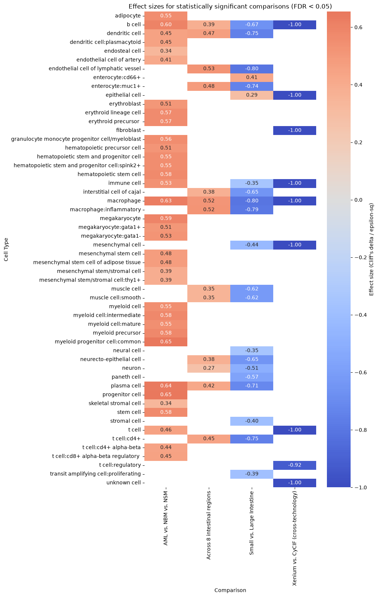

import os
import numpy as np
import pandas as pd
import matplotlib.pyplot as plt
import seaborn as sns
from scipy import stats
from statsmodels.stats.multitest import multipletests
try:
import scikit_posthocs as sp
HAVE_POSTHOCS = True
except ImportError:
HAVE_POSTHOCS = False
print("scikit-posthocs not installed — pairwise post-hoc tests after "
"Kruskal-Wallis will be skipped. Install with: "
"pip install scikit-posthocs --break-system-packages")
pd.set_option('display.max_columns', None)
pd.set_option('display.max_rows', None)
import warnings
warnings.filterwarnings("ignore")
# Minimum number of samples (Dataset values) required per group before we will
# run a test at all. Below this, the comparison is reported as descriptive only.
MIN_SAMPLES_PER_GROUP = 3
# Where the master results table (CSV) will be written.
basepath = "/Users/yashjain/Coding/cns/hra-cell-distance-analysis/data"
RESULTS_OUTPUT_PATH = basepath + "/distance_analysis_statistical_results.csv"Endothelial-Cell Distance Analysis: Sample-Level Statistical Testing
This notebook adds formal statistical testing on top of the existing per-dataset
3. Statistical testing functions
def sample_level_table(df_edges, cell_type_level, group_col):
"""Collapse cell-level edges to one median Distance per Dataset per cell type."""
return (
df_edges
.groupby(['Dataset', cell_type_level, group_col])['Distance']
.median()
.reset_index()
.rename(columns={'Distance': 'median_distance'})
)
def cliffs_delta(a, b):
"""Rank-based effect size. -1 to 1; 0.11 small, 0.28 medium, 0.43 large."""
a = np.asarray(a)
b = np.asarray(b)
n_a, n_b = len(a), len(b)
greater = sum(x > y for x in a for y in b)
less = sum(x < y for x in a for y in b)
return (greater - less) / (n_a * n_b)
def epsilon_squared(h_stat, n):
"""Effect size for Kruskal-Wallis. 0.01 small, 0.06 medium, 0.14 large."""
return h_stat / (n - 1) if n > 1 else np.nan
def test_one_cell_type(sample_df, cell_type_level, group_col, cell_type, groups,
min_n=MIN_SAMPLES_PER_GROUP):
sub = sample_df[sample_df[cell_type_level] == cell_type]
group_values = {g: sub[sub[group_col] == g]['median_distance'].values for g in groups}
group_sizes = {g: len(v) for g, v in group_values.items()}
underpowered = any(n < min_n for n in group_sizes.values())
result = {
'Cell Type': cell_type,
'Groups Compared': ' vs '.join(str(g) for g in groups),
**{f'n_{g}': group_sizes[g] for g in groups},
}
if underpowered:
result.update({
'Test': 'None (insufficient samples)',
'Statistic': np.nan,
'p_value': np.nan,
'Effect Size': np.nan,
'Effect Size Type': None,
'Status': 'Descriptive only — not tested',
})
return result
if len(groups) == 2:
a, b = group_values[groups[0]], group_values[groups[1]]
stat, p = stats.mannwhitneyu(a, b, alternative='two-sided')
delta = cliffs_delta(a, b)
result.update({
'Test': 'Mann-Whitney U',
'Statistic': stat,
'p_value': p,
'Effect Size': delta,
'Effect Size Type': "Cliff's delta",
'Status': 'Tested',
})
else:
arrays = [group_values[g] for g in groups]
stat, p = stats.kruskal(*arrays)
n_total = sum(group_sizes.values())
eps2 = epsilon_squared(stat, n_total)
result.update({
'Test': 'Kruskal-Wallis',
'Statistic': stat,
'p_value': p,
'Effect Size': eps2,
'Effect Size Type': 'epsilon-squared',
'Status': 'Tested',
})
return result
def run_comparison(df_edges, cell_type_level, group_col, groups, study_name,
comparison_name, anchor_cell_type=None, anchor_cell_type_level=None,
min_n=MIN_SAMPLES_PER_GROUP):
df = df_edges.copy()
if anchor_cell_type is not None:
df = df[df['Anchor Cell Type'] == anchor_cell_type]
if anchor_cell_type_level is not None:
df = df[df['Anchor Cell Type Level'] == anchor_cell_type_level]
df = df[df[group_col].isin(groups)]
sample_df = sample_level_table(df, cell_type_level, group_col)
rows = []
for ct in sorted(sample_df[cell_type_level].dropna().unique()):
row = test_one_cell_type(sample_df, cell_type_level, group_col, ct, groups, min_n=min_n)
rows.append(row)
results = pd.DataFrame(rows)
results.insert(0, 'Study', study_name)
results.insert(1, 'Comparison', comparison_name)
results.insert(2, 'Cell Type Level', cell_type_level)
tested_mask = results['Status'] == 'Tested'
if tested_mask.sum() > 0:
results.loc[tested_mask, 'p_adj (FDR)'] = multipletests(
results.loc[tested_mask, 'p_value'], method='fdr_bh'
)[1]
else:
results['p_adj (FDR)'] = np.nan
return results
def run_posthoc_dunn(df_edges, cell_type_level, group_col, cell_type, groups,
anchor_cell_type=None, anchor_cell_type_level=None):
"""Pairwise Dunn's test (BH-corrected) after a significant Kruskal-Wallis.
Requires scikit-posthocs.
"""
if not HAVE_POSTHOCS:
print("scikit-posthocs not available — skipping post-hoc test.")
return None
df = df_edges.copy()
if anchor_cell_type is not None:
df = df[df['Anchor Cell Type'] == anchor_cell_type]
if anchor_cell_type_level is not None:
df = df[df['Anchor Cell Type Level'] == anchor_cell_type_level]
df = df[df[group_col].isin(groups)]
sample_df = sample_level_table(df, cell_type_level, group_col)
sub = sample_df[sample_df[cell_type_level] == cell_type]
return sp.posthoc_dunn(sub, val_col='median_distance', group_col=group_col, p_adjust='fdr_bh')4. Master results collector
all_results = []
def register_results(results_df):
all_results.append(results_df)
n_tested = (results_df['Status'] == 'Tested').sum()
n_skipped = (results_df['Status'] != 'Tested').sum()
print(f"[{results_df['Study'].iloc[0]} | {results_df['Comparison'].iloc[0]}] "
f"{n_tested} cell types tested, {n_skipped} descriptive-only "
f"(insufficient samples).")5. Dataset-by-dataset comparisons
5a. intestine-codex-stanford — Small vs. Large Intestine
dataset_dir = "intestine-codex-stanford"
data_filedir = os.path.join("data-processed-nodes-with-harmonized-cell-types", dataset_dir)
output_edge_dir = os.path.join("data-processed-edges", dataset_dir)
_, _, df_intestine_edges = read_all_edge_datasets(basepath, data_filedir, output_edge_dir)
si = ['Duodenum', 'Ileum', 'Mid', 'ProximalJejunum', 'Midjejunum', 'Proximaljejunum']
li = ['Ascending', 'Descending', 'Transverse', 'Left', 'Right', 'Sigmoid', 'Trans']
df_intestine_edges['Donor'] = df_intestine_edges['Dataset'].str.split('_').str[0]
df_intestine_edges['Tissue Subtype'] = df_intestine_edges['Dataset'].str.split('_').str[1].apply(
lambda x: 'Small Intestine' if x in si else ('Large Intestine' if x in li else 'Unknown')
)
for level, anchor in [('Level One Cell Type', 'endothelial cell'),
('Level Two Cell Type', 'endothelial cell'),
('Level Three Cell Type', 'endothelial cell')]:
res = run_comparison(
df_intestine_edges, level, 'Tissue Subtype',
['Small Intestine', 'Large Intestine'],
'intestine-codex-stanford', 'Small vs. Large Intestine',
anchor_cell_type=anchor, anchor_cell_type_level=level,
)
register_results(res)[intestine-codex-stanford | Small vs. Large Intestine] 4 cell types tested, 0 descriptive-only (insufficient samples).
[intestine-codex-stanford | Small vs. Large Intestine] 16 cell types tested, 0 descriptive-only (insufficient samples).
[intestine-codex-stanford | Small vs. Large Intestine] 24 cell types tested, 0 descriptive-only (insufficient samples).Regional comparison (8 regions)
region_map_intestine = {
'Duodenum': 'Duodenum', 'Ileum': 'Ileum', 'Mid': 'Mid Jejunum',
'ProximalJejunum': 'Proximal Jejunum', 'Midjejunum': 'Mid Jejunum',
'Proximaljejunum': 'Proximal Jejunum', 'Ascending': 'Ascending',
'Descending': 'Descending', 'Transverse': 'Transverse', 'Left': 'Descending',
'Right': 'Ascending', 'Sigmoid': 'Sigmoid', 'Trans': 'Transverse',
}
df_intestine_edges['Unique Region'] = df_intestine_edges['Dataset'].str.split('_').str[1].map(region_map_intestine)
intestine_regions = df_intestine_edges['Unique Region'].dropna().unique().tolist()
for level, anchor in [('Level One Cell Type', 'endothelial cell'),
('Level Two Cell Type', 'endothelial cell'),
('Level Three Cell Type', 'endothelial cell')]:
res = run_comparison(
df_intestine_edges, level, 'Unique Region', intestine_regions,
'intestine-codex-stanford', 'Across 8 intestinal regions',
anchor_cell_type=anchor, anchor_cell_type_level=level,
)
register_results(res)[intestine-codex-stanford | Across 8 intestinal regions] 4 cell types tested, 0 descriptive-only (insufficient samples).
[intestine-codex-stanford | Across 8 intestinal regions] 15 cell types tested, 1 descriptive-only (insufficient samples).
[intestine-codex-stanford | Across 8 intestinal regions] 23 cell types tested, 1 descriptive-only (insufficient samples).5b. bonemarrow-codex-chop — AML vs. NBM vs. NSM
dataset_dir = "bonemarrow-codex-chop"
data_filedir = os.path.join("data-processed-nodes-with-harmonized-cell-types", dataset_dir)
output_edge_dir = os.path.join("data-processed-edges", dataset_dir)
_, _, df_bonemarrow_edges = read_all_edge_datasets(basepath, data_filedir, output_edge_dir)
region_map_bm = {
'SB67_NBM48_NSM1_1720': 'NSM', 'SB67_NBM49_NSM2_1086': 'NSM', 'SB67_NBM47_NSM3_1996': 'NSM',
'SB67_NBM51_AML1_183': 'AML', 'SB67_NBM46_AML1_382': 'AML', 'SB67_NBM44_AML2_191': 'AML',
'SB67_NBM52_AML3_1329': 'AML', 'SB67_NBM54_AML3_1443': 'AML',
'SB67_NBM27_H10': 'NBM', 'SB67_NBM28_H14': 'NBM', 'SB67_NBM36_H26': 'NBM',
'SB67_NBM41_H27': 'NBM', 'SB67_NBM31_H32': 'NBM', 'SB67_NBM38_H33': 'NBM',
'SB67_NBM37_H35': 'NBM', 'SB67_NBM33_H36': 'NBM', 'SB67_NBM32_H37': 'NBM',
'SB67_NBM34_H38': 'NBM', 'SB67_NBM40_H39': 'NBM', 'SB67_NBM39_H41': 'NBM',
}
df_bonemarrow_edges['Condition'] = df_bonemarrow_edges['Dataset'].map(region_map_bm)
# NSM has only 3 samples — right at MIN_SAMPLES_PER_GROUP. Omnibus test is valid;
# treat any NSM-specific pairwise post-hoc result with caution.
for level, anchor in [('Level One Cell Type', 'endothelial cell'),
('Level Two Cell Type', 'endothelial cell of sinusoid'),
('Level Three Cell Type', 'endothelial cell of sinusoid')]:
res = run_comparison(
df_bonemarrow_edges, level, 'Condition', ['AML', 'NBM', 'NSM'],
'bonemarrow-codex-chop', 'AML vs. NBM vs. NSM',
anchor_cell_type=anchor, anchor_cell_type_level=level,
)
register_results(res)[bonemarrow-codex-chop | AML vs. NBM vs. NSM] 3 cell types tested, 2 descriptive-only (insufficient samples).
[bonemarrow-codex-chop | AML vs. NBM vs. NSM] 18 cell types tested, 3 descriptive-only (insufficient samples).
[bonemarrow-codex-chop | AML vs. NBM vs. NSM] 27 cell types tested, 5 descriptive-only (insufficient samples).5c. mouth-codex-czi — Across 5 regions
Sample counts per region: Buccal Mucosa And Minor Salivary Glands (2), Gingiva (2), Parotid (4), Submandibular (2), Tongue (3). The Kruskal-Wallis omnibus test runs across all 5 regions per cell type — but because 3 of the 5 groups are below MIN_SAMPLES_PER_GROUP, every cell type here will be flagged descriptive-only unless you lower the threshold. This is intentional: with 2 samples in 3 of 5 groups, a “significant” regional difference would be driven almost entirely by n=1 comparisons hidden inside the omnibus stat.
dataset_dir = "mouth-codex-czi"
data_filedir = os.path.join("data-processed-nodes-with-harmonized-cell-types", dataset_dir)
output_edge_dir = os.path.join("data-processed-edges", dataset_dir)
_, _, df_oral_edges = read_all_edge_datasets(basepath, data_filedir, output_edge_dir)
region_map_oral = {
'Buccal_Mucosa_And_Minor_Salivary_Glands_1': 'Buccal Mucosa And Minor Salivary Glands',
'Buccal_Mucosa_And_Minor_Salivary_Glands_2': 'Buccal Mucosa And Minor Salivary Glands',
'Gingiva_ID1_shiny': 'Gingiva',
'Gingiva_ID5_shiny': 'Gingiva',
'Parotid_1': 'Parotid', 'Parotid_2': 'Parotid', 'Parotid_3': 'Parotid', 'Parotid_4': 'Parotid',
'Submandibular_1': 'Submandibular', 'Submandibular_2': 'Submandibular',
'Tongue_3': 'Tongue', 'Tongue__1': 'Tongue', 'Tongue__2': 'Tongue',
}
df_oral_edges['Unique Region'] = df_oral_edges['Dataset'].map(region_map_oral)
oral_regions = df_oral_edges['Unique Region'].dropna().unique().tolist()
for level, anchor in [('Level One Cell Type', 'endothelial cell'),
('Level Two Cell Type', 'endothelial cell of vascular tree'),
('Level Three Cell Type', 'endothelial cell of vascular tree')]:
res = run_comparison(
df_oral_edges, level, 'Unique Region', oral_regions,
'mouth-codex-czi', 'Across 5 mouth regions',
anchor_cell_type=anchor, anchor_cell_type_level=level,
min_n=2, # lowered so Buccal/Gingiva/Submandibular (n=2) are included;
# results for these groups should still be read with caution.
)
register_results(res)[mouth-codex-czi | Across 5 mouth regions] 4 cell types tested, 1 descriptive-only (insufficient samples).
[mouth-codex-czi | Across 5 mouth regions] 6 cell types tested, 13 descriptive-only (insufficient samples).
[mouth-codex-czi | Across 5 mouth regions] 6 cell types tested, 21 descriptive-only (insufficient samples).5d. colon-xenium-stanford vs. colon-cycif-sorgerlab — Cross-technology
29 Xenium sections vs. 25 CyCIF sections — well-powered at the sample level. Caveat that survives regardless of the p-value: technology, donor, and disease stage are fully confounded here (Xenium = colon polyp from one donor; CyCIF = stage IIIb adenocarcinoma from a different donor). Report effect size and significance, but keep this listed as a technical/biological confound in the Results text.
dataset_dir_1 = "colon-xenium-stanford"
dataset_dir_2 = "colon-cycif-sorgerlab"
_, _, df_xenium_edges = read_all_edge_datasets(
basepath,
os.path.join("data-processed-nodes-with-harmonized-cell-types", dataset_dir_1),
os.path.join("data-processed-edges", dataset_dir_1),
)
df_xenium_edges['Technology'] = 'xenium-stanford'
_, _, df_cycif_edges = read_all_edge_datasets(
basepath,
os.path.join("data-processed-nodes-with-harmonized-cell-types", dataset_dir_2),
os.path.join("data-processed-edges", dataset_dir_2),
)
df_cycif_edges['Technology'] = 'cycif-sorgerlab'
df_colon_edges = pd.concat([df_xenium_edges, df_cycif_edges], ignore_index=True)
for level, anchor in [('Level One Cell Type', 'endothelial cell'),
('Level Two Cell Type', 'endothelial cell'),
('Level Three Cell Type', 'endothelial cell')]:
res = run_comparison(
df_colon_edges, level, 'Technology', ['xenium-stanford', 'cycif-sorgerlab'],
'colon-xenium-vs-cycif', 'Xenium vs. CyCIF (cross-technology)',
anchor_cell_type=anchor, anchor_cell_type_level=level,
)
register_results(res)[colon-xenium-vs-cycif | Xenium vs. CyCIF (cross-technology)] 4 cell types tested, 1 descriptive-only (insufficient samples).
[colon-xenium-vs-cycif | Xenium vs. CyCIF (cross-technology)] 5 cell types tested, 15 descriptive-only (insufficient samples).
[colon-xenium-vs-cycif | Xenium vs. CyCIF (cross-technology)] 2 cell types tested, 53 descriptive-only (insufficient samples).5e. lymphnode-codex-yale — Inter-donor variability (5 donors)
Each of the 5 donors (LN00560, LN00837, LN22921, LN24336, LN27766) is its own Dataset/Unique Region with exactly one sample. There is no “condition” to compare — this is run through the pipeline purely to confirm, via the descriptive-only flag, that no formal significance claim should be attached to cross-donor differences reported in the manuscript text.
dataset_dir = "lymphnode-codex-yale"
data_filedir = os.path.join("data-processed-nodes-with-harmonized-cell-types", dataset_dir)
output_edge_dir = os.path.join("data-processed-edges", dataset_dir)
_, _, df_lymphnode_edges = read_all_edge_datasets(basepath, data_filedir, output_edge_dir)
df_lymphnode_edges['Unique Region'] = df_lymphnode_edges['Dataset']
lymphnode_donors = df_lymphnode_edges['Unique Region'].unique().tolist()
for level, anchor in [('Level One Cell Type', 'endothelial cell'),
('Level Two Cell Type', 'endothelial cell'),
('Level Three Cell Type', 'endothelial cell')]:
res = run_comparison(
df_lymphnode_edges, level, 'Unique Region', lymphnode_donors,
'lymphnode-codex-yale', 'Inter-donor (5 donors)',
anchor_cell_type=anchor, anchor_cell_type_level=level,
)
register_results(res)[lymphnode-codex-yale | Inter-donor (5 donors)] 0 cell types tested, 2 descriptive-only (insufficient samples).
[lymphnode-codex-yale | Inter-donor (5 donors)] 0 cell types tested, 9 descriptive-only (insufficient samples).
[lymphnode-codex-yale | Inter-donor (5 donors)] 0 cell types tested, 28 descriptive-only (insufficient samples).5f. spleen-codex-ufl — Inter-donor variability (6 donors)
dataset_dir = "spleen-codex-ufl"
data_filedir = os.path.join("data-processed-nodes-with-harmonized-cell-types", dataset_dir)
output_edge_dir = os.path.join("data-processed-edges", dataset_dir)
_, _, df_spleen_edges = read_all_edge_datasets(basepath, data_filedir, output_edge_dir)
df_spleen_edges['Unique Region'] = df_spleen_edges['Dataset']
spleen_donors = df_spleen_edges['Unique Region'].unique().tolist()
for level, anchor in [('Level One Cell Type', 'endothelial cell'),
('Level Two Cell Type', 'endothelial cell of sinusoid'),
('Level Three Cell Type', 'endothelial cell of sinusoid')]:
res = run_comparison(
df_spleen_edges, level, 'Unique Region', spleen_donors,
'spleen-codex-ufl', 'Inter-donor (6 donors)',
anchor_cell_type=anchor, anchor_cell_type_level=level,
)
register_results(res)[spleen-codex-ufl | Inter-donor (6 donors)] 0 cell types tested, 2 descriptive-only (insufficient samples).
[spleen-codex-ufl | Inter-donor (6 donors)] 0 cell types tested, 8 descriptive-only (insufficient samples).
[spleen-codex-ufl | Inter-donor (6 donors)] 0 cell types tested, 11 descriptive-only (insufficient samples).5g. tonsil-codex-stanford vs. esophagus-codex-stanford — Cross-tissue (n=1 vs. n=1)
dataset_dir_1 = "tonsil-codex-stanford"
dataset_dir_2 = "esophagus-codex-stanford"
_, _, df_tonsil_edges = read_all_edge_datasets(
basepath,
os.path.join("data-processed-nodes-with-harmonized-cell-types", dataset_dir_1),
os.path.join("data-processed-edges", dataset_dir_1),
)
df_tonsil_edges['Tissue Type'] = dataset_dir_1
_, _, df_esophagus_edges = read_all_edge_datasets(
basepath,
os.path.join("data-processed-nodes-with-harmonized-cell-types", dataset_dir_2),
os.path.join("data-processed-edges", dataset_dir_2),
)
df_esophagus_edges['Tissue Type'] = dataset_dir_2
df_tonsil_esophagus_edges = pd.concat([df_tonsil_edges, df_esophagus_edges], ignore_index=True)
df_tonsil_esophagus_edges['Unique Region'] = df_tonsil_esophagus_edges['Tissue Type']
for level, anchor in [('Level One Cell Type', 'endothelial cell'),
('Level Two Cell Type', 'endothelial cell'),
('Level Three Cell Type', 'endothelial cell')]:
res = run_comparison(
df_tonsil_esophagus_edges, level, 'Unique Region',
['tonsil-codex-stanford', 'esophagus-codex-stanford'],
'tonsil-vs-esophagus', 'Tonsil vs. Esophagus (cross-tissue)',
anchor_cell_type=anchor, anchor_cell_type_level=level,
)
register_results(res)[tonsil-vs-esophagus | Tonsil vs. Esophagus (cross-tissue)] 0 cell types tested, 4 descriptive-only (insufficient samples).
[tonsil-vs-esophagus | Tonsil vs. Esophagus (cross-tissue)] 0 cell types tested, 10 descriptive-only (insufficient samples).
[tonsil-vs-esophagus | Tonsil vs. Esophagus (cross-tissue)] 0 cell types tested, 12 descriptive-only (insufficient samples).5h. skin-confocal-sorgerlab — Melanoma in situ vs. Invasive margin (n=1 vs. n=1)
dataset_dir = "skin-confocal-sorgerlab"
data_filedir = os.path.join("data-processed-nodes-with-harmonized-cell-types", dataset_dir)
output_edge_dir = os.path.join("data-processed-edges", dataset_dir)
_, _, df_skin_confocal_edges = read_all_edge_datasets(basepath, data_filedir, output_edge_dir)
region_map_skin_confocal = {
'phenotypes_invasive_margin': 'Invasive Margin',
'phenotypes_melanoma_in_situ': 'Melanoma In Situ',
}
df_skin_confocal_edges['Condition'] = df_skin_confocal_edges['Dataset'].map(region_map_skin_confocal)
for level, anchor in [('Level One Cell Type', 'endothelial cell'),
('Level Two Cell Type', 'endothelial cell'),
('Level Three Cell Type', 'endothelial cell')]:
res = run_comparison(
df_skin_confocal_edges, level, 'Condition', ['Invasive Margin', 'Melanoma In Situ'],
'skin-confocal-sorgerlab', 'Melanoma in situ vs. Invasive margin',
anchor_cell_type=anchor, anchor_cell_type_level=level,
)
register_results(res)[skin-confocal-sorgerlab | Melanoma in situ vs. Invasive margin] 0 cell types tested, 3 descriptive-only (insufficient samples).
[skin-confocal-sorgerlab | Melanoma in situ vs. Invasive margin] 0 cell types tested, 10 descriptive-only (insufficient samples).
[skin-confocal-sorgerlab | Melanoma in situ vs. Invasive margin] 0 cell types tested, 14 descriptive-only (insufficient samples).5i. lung-codex-urmc — Healthy vs. Bronchopulmonary Dysplasia (n=1 vs. n=1)
dataset_dir = "lung-codex-urmc"
data_filedir = os.path.join("data-processed-nodes-with-harmonized-cell-types", dataset_dir)
output_edge_dir = os.path.join("data-processed-edges", dataset_dir)
# NOTE: uses the lung-specific loader — dataset names contain hyphens
# (e.g. 'D265-LLL-7A7-12'), so the standard loader's split('-') would break.
_, _, df_lung_edges = read_all_edge_datasets_lung(basepath, data_filedir, output_edge_dir)
region_map_lung = {
'D115-RLL-10A3-40': 'Disease',
'D265-LLL-7A7-12': 'Normal',
}
df_lung_edges['Condition'] = df_lung_edges['Dataset'].map(region_map_lung)
for level, anchor in [('Level One Cell Type', 'endothelial cell'),
('Level Two Cell Type', 'endothelial cell'),
('Level Three Cell Type', 'endothelial cell')]:
res = run_comparison(
df_lung_edges, level, 'Condition', ['Normal', 'Disease'],
'lung-codex-urmc', 'Healthy vs. Bronchopulmonary Dysplasia',
anchor_cell_type=anchor, anchor_cell_type_level=level,
)
register_results(res)[lung-codex-urmc | Healthy vs. Bronchopulmonary Dysplasia] 0 cell types tested, 6 descriptive-only (insufficient samples).
[lung-codex-urmc | Healthy vs. Bronchopulmonary Dysplasia] 0 cell types tested, 16 descriptive-only (insufficient samples).
[lung-codex-urmc | Healthy vs. Bronchopulmonary Dysplasia] 0 cell types tested, 19 descriptive-only (insufficient samples).5j. skin-celldive-ge — Inter-region variability (10 regions)
All 10 regions have exactly one sample each. As with lymph node and spleen, this is run purely to produce the descriptive-only flag.
dataset_dir = "skin-celldive-ge"
data_filedir = os.path.join("data-processed-nodes-with-harmonized-cell-types", dataset_dir)
output_edge_dir = os.path.join("data-processed-edges", dataset_dir)
_, _, df_skin_celldive_edges = read_all_edge_datasets(basepath, data_filedir, output_edge_dir)
df_skin_celldive_edges['Unique Region'] = df_skin_celldive_edges['Dataset']
skin_celldive_regions = df_skin_celldive_edges['Unique Region'].unique().tolist()
for level, anchor in [('Level One Cell Type', 'endothelial cell'),
('Level Two Cell Type', 'endothelial cell'),
('Level Three Cell Type', 'endothelial cell')]:
res = run_comparison(
df_skin_celldive_edges, level, 'Unique Region', skin_celldive_regions,
'skin-celldive-ge', 'Inter-region (10 regions)',
anchor_cell_type=anchor, anchor_cell_type_level=level,
)
register_results(res)[skin-celldive-ge | Inter-region (10 regions)] 0 cell types tested, 2 descriptive-only (insufficient samples).
[skin-celldive-ge | Inter-region (10 regions)] 0 cell types tested, 3 descriptive-only (insufficient samples).
[skin-celldive-ge | Inter-region (10 regions)] 0 cell types tested, 7 descriptive-only (insufficient samples).5k. maternalfetalinterface-mibitof-stanford — No grouping variable available
This dataset is the best-powered in the entire collection at the sample level — 209 unique Dataset values (individual tissue sections) — but the notebook’s own processing assigns every one of them to a single 'Unique Region' value ('maternalfetalinterface-mibitof-stanford' itself). There is no disease/region/condition split to compare groups against, so it is not run through run_comparison() — there is nothing to compare it to.
If a future revision wants to use this dataset’s statistical power, the natural comparison is cell type vs. cell type across the 209 sections (e.g., “is trophoblast EC-distance significantly different from muscle-cell EC-distance?”), treating each section as a paired replicate. That is a different test design (a paired/repeated-measures comparison across cell types within the same samples, e.g. Wilcoxon signed-rank per pair) than the between-group tests used everywhere else in this notebook, and is left out of scope here rather than shoehorned into the existing run_comparison() shape.
6. Combine, export, and summarize all results
master_results = pd.concat(all_results, ignore_index=True)
front_cols = ['Study', 'Comparison', 'Cell Type Level', 'Cell Type',
'Groups Compared', 'Test', 'Status']
other_cols = [c for c in master_results.columns if c not in front_cols]
master_results = master_results[front_cols + other_cols]
master_results.to_csv(RESULTS_OUTPUT_PATH, index=False)
print(f"Saved {len(master_results)} rows to {RESULTS_OUTPUT_PATH}")
master_resultsSaved 443 rows to distance_analysis_statistical_results.csv| Study | Comparison | Cell Type Level | Cell Type | Groups Compared | Test | Status | n_Small Intestine | n_Large Intestine | Statistic | p_value | Effect Size | Effect Size Type | p_adj (FDR) | n_Proximal Jejunum | n_Duodenum | n_Transverse | n_Mid Jejunum | n_Ileum | n_Sigmoid | n_Descending | n_Ascending | n_AML | n_NBM | n_NSM | n_Parotid | n_Submandibular | n_Tongue | n_Buccal Mucosa And Minor Salivary Glands | n_Gingiva | n_xenium-stanford | n_cycif-sorgerlab | n_LN22921 | n_LN00560 | n_LN00837 | n_LN24336 | n_LN27766 | n_FSLD | n_PKHL | n_PBVN | n_XXCD | n_KSFB | n_NGPL | n_tonsil-codex-stanford | n_esophagus-codex-stanford | n_Invasive Margin | n_Melanoma In Situ | n_Normal | n_Disease | n_region_3 | n_region_4 | n_region_11 | n_region_10 | n_region_2 | n_region_9 | n_region_1 | n_region_5 | n_region_7 | n_region_8 | |
|---|---|---|---|---|---|---|---|---|---|---|---|---|---|---|---|---|---|---|---|---|---|---|---|---|---|---|---|---|---|---|---|---|---|---|---|---|---|---|---|---|---|---|---|---|---|---|---|---|---|---|---|---|---|---|---|---|---|---|---|
| 0 | intestine-codex-stanford | Small vs. Large Intestine | Level One Cell Type | epithelial cell | Small Intestine vs Large Intestine | Mann-Whitney U | Tested | 32.0 | 32.0 | 659.000000 | 4.917162e-02 | 0.287109 | Cliff's delta | 4.917162e-02 | NaN | NaN | NaN | NaN | NaN | NaN | NaN | NaN | NaN | NaN | NaN | NaN | NaN | NaN | NaN | NaN | NaN | NaN | NaN | NaN | NaN | NaN | NaN | NaN | NaN | NaN | NaN | NaN | NaN | NaN | NaN | NaN | NaN | NaN | NaN | NaN | NaN | NaN | NaN | NaN | NaN | NaN | NaN | NaN | NaN |
| 1 | intestine-codex-stanford | Small vs. Large Intestine | Level One Cell Type | immune cell | Small Intestine vs Large Intestine | Mann-Whitney U | Tested | 32.0 | 32.0 | 335.000000 | 1.779325e-02 | -0.345703 | Cliff's delta | 2.372433e-02 | NaN | NaN | NaN | NaN | NaN | NaN | NaN | NaN | NaN | NaN | NaN | NaN | NaN | NaN | NaN | NaN | NaN | NaN | NaN | NaN | NaN | NaN | NaN | NaN | NaN | NaN | NaN | NaN | NaN | NaN | NaN | NaN | NaN | NaN | NaN | NaN | NaN | NaN | NaN | NaN | NaN | NaN | NaN | NaN | NaN |
| 2 | intestine-codex-stanford | Small vs. Large Intestine | Level One Cell Type | mesenchymal cell | Small Intestine vs Large Intestine | Mann-Whitney U | Tested | 32.0 | 32.0 | 288.000000 | 2.691221e-03 | -0.437500 | Cliff's delta | 1.076488e-02 | NaN | NaN | NaN | NaN | NaN | NaN | NaN | NaN | NaN | NaN | NaN | NaN | NaN | NaN | NaN | NaN | NaN | NaN | NaN | NaN | NaN | NaN | NaN | NaN | NaN | NaN | NaN | NaN | NaN | NaN | NaN | NaN | NaN | NaN | NaN | NaN | NaN | NaN | NaN | NaN | NaN | NaN | NaN | NaN | NaN |
| 3 | intestine-codex-stanford | Small vs. Large Intestine | Level One Cell Type | neural cell | Small Intestine vs Large Intestine | Mann-Whitney U | Tested | 32.0 | 32.0 | 334.000000 | 1.715728e-02 | -0.347656 | Cliff's delta | 2.372433e-02 | NaN | NaN | NaN | NaN | NaN | NaN | NaN | NaN | NaN | NaN | NaN | NaN | NaN | NaN | NaN | NaN | NaN | NaN | NaN | NaN | NaN | NaN | NaN | NaN | NaN | NaN | NaN | NaN | NaN | NaN | NaN | NaN | NaN | NaN | NaN | NaN | NaN | NaN | NaN | NaN | NaN | NaN | NaN | NaN | NaN |
| 4 | intestine-codex-stanford | Small vs. Large Intestine | Level Two Cell Type | b cell | Small Intestine vs Large Intestine | Mann-Whitney U | Tested | 32.0 | 32.0 | 169.000000 | 4.249311e-06 | -0.669922 | Cliff's delta | 1.699724e-05 | NaN | NaN | NaN | NaN | NaN | NaN | NaN | NaN | NaN | NaN | NaN | NaN | NaN | NaN | NaN | NaN | NaN | NaN | NaN | NaN | NaN | NaN | NaN | NaN | NaN | NaN | NaN | NaN | NaN | NaN | NaN | NaN | NaN | NaN | NaN | NaN | NaN | NaN | NaN | NaN | NaN | NaN | NaN | NaN | NaN |
| 5 | intestine-codex-stanford | Small vs. Large Intestine | Level Two Cell Type | dendritic cell | Small Intestine vs Large Intestine | Mann-Whitney U | Tested | 32.0 | 32.0 | 127.000000 | 2.433602e-07 | -0.751953 | Cliff's delta | 1.297921e-06 | NaN | NaN | NaN | NaN | NaN | NaN | NaN | NaN | NaN | NaN | NaN | NaN | NaN | NaN | NaN | NaN | NaN | NaN | NaN | NaN | NaN | NaN | NaN | NaN | NaN | NaN | NaN | NaN | NaN | NaN | NaN | NaN | NaN | NaN | NaN | NaN | NaN | NaN | NaN | NaN | NaN | NaN | NaN | NaN | NaN |
| 6 | intestine-codex-stanford | Small vs. Large Intestine | Level Two Cell Type | endocrine cell | Small Intestine vs Large Intestine | Mann-Whitney U | Tested | 32.0 | 32.0 | 495.000000 | 8.246657e-01 | -0.033203 | Cliff's delta | 8.246657e-01 | NaN | NaN | NaN | NaN | NaN | NaN | NaN | NaN | NaN | NaN | NaN | NaN | NaN | NaN | NaN | NaN | NaN | NaN | NaN | NaN | NaN | NaN | NaN | NaN | NaN | NaN | NaN | NaN | NaN | NaN | NaN | NaN | NaN | NaN | NaN | NaN | NaN | NaN | NaN | NaN | NaN | NaN | NaN | NaN | NaN |
| 7 | intestine-codex-stanford | Small vs. Large Intestine | Level Two Cell Type | endothelial cell of lymphatic vessel | Small Intestine vs Large Intestine | Mann-Whitney U | Tested | 32.0 | 32.0 | 101.000000 | 3.550882e-08 | -0.802734 | Cliff's delta | 2.840706e-07 | NaN | NaN | NaN | NaN | NaN | NaN | NaN | NaN | NaN | NaN | NaN | NaN | NaN | NaN | NaN | NaN | NaN | NaN | NaN | NaN | NaN | NaN | NaN | NaN | NaN | NaN | NaN | NaN | NaN | NaN | NaN | NaN | NaN | NaN | NaN | NaN | NaN | NaN | NaN | NaN | NaN | NaN | NaN | NaN | NaN |
| 8 | intestine-codex-stanford | Small vs. Large Intestine | Level Two Cell Type | enterocyte | Small Intestine vs Large Intestine | Mann-Whitney U | Tested | 32.0 | 32.0 | 531.000000 | 8.038231e-01 | 0.037109 | Cliff's delta | 8.246657e-01 | NaN | NaN | NaN | NaN | NaN | NaN | NaN | NaN | NaN | NaN | NaN | NaN | NaN | NaN | NaN | NaN | NaN | NaN | NaN | NaN | NaN | NaN | NaN | NaN | NaN | NaN | NaN | NaN | NaN | NaN | NaN | NaN | NaN | NaN | NaN | NaN | NaN | NaN | NaN | NaN | NaN | NaN | NaN | NaN | NaN |
| 9 | intestine-codex-stanford | Small vs. Large Intestine | Level Two Cell Type | goblet cell | Small Intestine vs Large Intestine | Mann-Whitney U | Tested | 32.0 | 32.0 | 392.000000 | 1.085940e-01 | -0.234375 | Cliff's delta | 1.579549e-01 | NaN | NaN | NaN | NaN | NaN | NaN | NaN | NaN | NaN | NaN | NaN | NaN | NaN | NaN | NaN | NaN | NaN | NaN | NaN | NaN | NaN | NaN | NaN | NaN | NaN | NaN | NaN | NaN | NaN | NaN | NaN | NaN | NaN | NaN | NaN | NaN | NaN | NaN | NaN | NaN | NaN | NaN | NaN | NaN | NaN |
| 10 | intestine-codex-stanford | Small vs. Large Intestine | Level Two Cell Type | lymphoid cell | Small Intestine vs Large Intestine | Mann-Whitney U | Tested | 32.0 | 31.0 | 605.000000 | 1.357841e-01 | 0.219758 | Cliff's delta | 1.810454e-01 | NaN | NaN | NaN | NaN | NaN | NaN | NaN | NaN | NaN | NaN | NaN | NaN | NaN | NaN | NaN | NaN | NaN | NaN | NaN | NaN | NaN | NaN | NaN | NaN | NaN | NaN | NaN | NaN | NaN | NaN | NaN | NaN | NaN | NaN | NaN | NaN | NaN | NaN | NaN | NaN | NaN | NaN | NaN | NaN | NaN |
| 11 | intestine-codex-stanford | Small vs. Large Intestine | Level Two Cell Type | macrophage | Small Intestine vs Large Intestine | Mann-Whitney U | Tested | 32.0 | 32.0 | 100.000000 | 3.289721e-08 | -0.804688 | Cliff's delta | 2.840706e-07 | NaN | NaN | NaN | NaN | NaN | NaN | NaN | NaN | NaN | NaN | NaN | NaN | NaN | NaN | NaN | NaN | NaN | NaN | NaN | NaN | NaN | NaN | NaN | NaN | NaN | NaN | NaN | NaN | NaN | NaN | NaN | NaN | NaN | NaN | NaN | NaN | NaN | NaN | NaN | NaN | NaN | NaN | NaN | NaN | NaN |
| 12 | intestine-codex-stanford | Small vs. Large Intestine | Level Two Cell Type | muscle cell | Small Intestine vs Large Intestine | Mann-Whitney U | Tested | 32.0 | 32.0 | 196.000000 | 2.272665e-05 | -0.617188 | Cliff's delta | 6.060439e-05 | NaN | NaN | NaN | NaN | NaN | NaN | NaN | NaN | NaN | NaN | NaN | NaN | NaN | NaN | NaN | NaN | NaN | NaN | NaN | NaN | NaN | NaN | NaN | NaN | NaN | NaN | NaN | NaN | NaN | NaN | NaN | NaN | NaN | NaN | NaN | NaN | NaN | NaN | NaN | NaN | NaN | NaN | NaN | NaN | NaN |
| 13 | intestine-codex-stanford | Small vs. Large Intestine | Level Two Cell Type | natural killer cell | Small Intestine vs Large Intestine | Mann-Whitney U | Tested | 32.0 | 30.0 | 378.000000 | 1.527976e-01 | -0.212500 | Cliff's delta | 1.880586e-01 | NaN | NaN | NaN | NaN | NaN | NaN | NaN | NaN | NaN | NaN | NaN | NaN | NaN | NaN | NaN | NaN | NaN | NaN | NaN | NaN | NaN | NaN | NaN | NaN | NaN | NaN | NaN | NaN | NaN | NaN | NaN | NaN | NaN | NaN | NaN | NaN | NaN | NaN | NaN | NaN | NaN | NaN | NaN | NaN | NaN |
| 14 | intestine-codex-stanford | Small vs. Large Intestine | Level Two Cell Type | neurecto-epithelial cell | Small Intestine vs Large Intestine | Mann-Whitney U | Tested | 32.0 | 32.0 | 177.000000 | 7.076218e-06 | -0.654297 | Cliff's delta | 2.264390e-05 | NaN | NaN | NaN | NaN | NaN | NaN | NaN | NaN | NaN | NaN | NaN | NaN | NaN | NaN | NaN | NaN | NaN | NaN | NaN | NaN | NaN | NaN | NaN | NaN | NaN | NaN | NaN | NaN | NaN | NaN | NaN | NaN | NaN | NaN | NaN | NaN | NaN | NaN | NaN | NaN | NaN | NaN | NaN | NaN | NaN |
| 15 | intestine-codex-stanford | Small vs. Large Intestine | Level Two Cell Type | neuron | Small Intestine vs Large Intestine | Mann-Whitney U | Tested | 32.0 | 32.0 | 253.000000 | 5.186799e-04 | -0.505859 | Cliff's delta | 1.185554e-03 | NaN | NaN | NaN | NaN | NaN | NaN | NaN | NaN | NaN | NaN | NaN | NaN | NaN | NaN | NaN | NaN | NaN | NaN | NaN | NaN | NaN | NaN | NaN | NaN | NaN | NaN | NaN | NaN | NaN | NaN | NaN | NaN | NaN | NaN | NaN | NaN | NaN | NaN | NaN | NaN | NaN | NaN | NaN | NaN | NaN |
| 16 | intestine-codex-stanford | Small vs. Large Intestine | Level Two Cell Type | neutrophil | Small Intestine vs Large Intestine | Mann-Whitney U | Tested | 32.0 | 32.0 | 470.000000 | 5.773724e-01 | -0.082031 | Cliff's delta | 6.598542e-01 | NaN | NaN | NaN | NaN | NaN | NaN | NaN | NaN | NaN | NaN | NaN | NaN | NaN | NaN | NaN | NaN | NaN | NaN | NaN | NaN | NaN | NaN | NaN | NaN | NaN | NaN | NaN | NaN | NaN | NaN | NaN | NaN | NaN | NaN | NaN | NaN | NaN | NaN | NaN | NaN | NaN | NaN | NaN | NaN | NaN |
| 17 | intestine-codex-stanford | Small vs. Large Intestine | Level Two Cell Type | paneth cell | Small Intestine vs Large Intestine | Mann-Whitney U | Tested | 32.0 | 14.0 | 96.000000 | 2.336280e-03 | -0.571429 | Cliff's delta | 4.672561e-03 | NaN | NaN | NaN | NaN | NaN | NaN | NaN | NaN | NaN | NaN | NaN | NaN | NaN | NaN | NaN | NaN | NaN | NaN | NaN | NaN | NaN | NaN | NaN | NaN | NaN | NaN | NaN | NaN | NaN | NaN | NaN | NaN | NaN | NaN | NaN | NaN | NaN | NaN | NaN | NaN | NaN | NaN | NaN | NaN | NaN |
| 18 | intestine-codex-stanford | Small vs. Large Intestine | Level Two Cell Type | stromal cell | Small Intestine vs Large Intestine | Mann-Whitney U | Tested | 32.0 | 32.0 | 309.000000 | 6.547987e-03 | -0.396484 | Cliff's delta | 1.164087e-02 | NaN | NaN | NaN | NaN | NaN | NaN | NaN | NaN | NaN | NaN | NaN | NaN | NaN | NaN | NaN | NaN | NaN | NaN | NaN | NaN | NaN | NaN | NaN | NaN | NaN | NaN | NaN | NaN | NaN | NaN | NaN | NaN | NaN | NaN | NaN | NaN | NaN | NaN | NaN | NaN | NaN | NaN | NaN | NaN | NaN |
| 19 | intestine-codex-stanford | Small vs. Large Intestine | Level Two Cell Type | t cell | Small Intestine vs Large Intestine | Mann-Whitney U | Tested | 32.0 | 32.0 | 359.000000 | 4.059519e-02 | -0.298828 | Cliff's delta | 6.495231e-02 | NaN | NaN | NaN | NaN | NaN | NaN | NaN | NaN | NaN | NaN | NaN | NaN | NaN | NaN | NaN | NaN | NaN | NaN | NaN | NaN | NaN | NaN | NaN | NaN | NaN | NaN | NaN | NaN | NaN | NaN | NaN | NaN | NaN | NaN | NaN | NaN | NaN | NaN | NaN | NaN | NaN | NaN | NaN | NaN | NaN |
| 20 | intestine-codex-stanford | Small vs. Large Intestine | Level Three Cell Type | b cell | Small Intestine vs Large Intestine | Mann-Whitney U | Tested | 32.0 | 31.0 | 283.000000 | 3.483665e-03 | -0.429435 | Cliff's delta | 6.967330e-03 | NaN | NaN | NaN | NaN | NaN | NaN | NaN | NaN | NaN | NaN | NaN | NaN | NaN | NaN | NaN | NaN | NaN | NaN | NaN | NaN | NaN | NaN | NaN | NaN | NaN | NaN | NaN | NaN | NaN | NaN | NaN | NaN | NaN | NaN | NaN | NaN | NaN | NaN | NaN | NaN | NaN | NaN | NaN | NaN | NaN |
| 21 | intestine-codex-stanford | Small vs. Large Intestine | Level Three Cell Type | dendritic cell | Small Intestine vs Large Intestine | Mann-Whitney U | Tested | 32.0 | 32.0 | 127.000000 | 2.433602e-07 | -0.751953 | Cliff's delta | 1.168129e-06 | NaN | NaN | NaN | NaN | NaN | NaN | NaN | NaN | NaN | NaN | NaN | NaN | NaN | NaN | NaN | NaN | NaN | NaN | NaN | NaN | NaN | NaN | NaN | NaN | NaN | NaN | NaN | NaN | NaN | NaN | NaN | NaN | NaN | NaN | NaN | NaN | NaN | NaN | NaN | NaN | NaN | NaN | NaN | NaN | NaN |
| 22 | intestine-codex-stanford | Small vs. Large Intestine | Level Three Cell Type | endothelial cell of lymphatic vessel | Small Intestine vs Large Intestine | Mann-Whitney U | Tested | 32.0 | 32.0 | 101.000000 | 3.550882e-08 | -0.802734 | Cliff's delta | 7.238132e-07 | NaN | NaN | NaN | NaN | NaN | NaN | NaN | NaN | NaN | NaN | NaN | NaN | NaN | NaN | NaN | NaN | NaN | NaN | NaN | NaN | NaN | NaN | NaN | NaN | NaN | NaN | NaN | NaN | NaN | NaN | NaN | NaN | NaN | NaN | NaN | NaN | NaN | NaN | NaN | NaN | NaN | NaN | NaN | NaN | NaN |
| 23 | intestine-codex-stanford | Small vs. Large Intestine | Level Three Cell Type | enterocyte | Small Intestine vs Large Intestine | Mann-Whitney U | Tested | 32.0 | 32.0 | 604.000000 | 2.192276e-01 | 0.179688 | Cliff's delta | 2.630731e-01 | NaN | NaN | NaN | NaN | NaN | NaN | NaN | NaN | NaN | NaN | NaN | NaN | NaN | NaN | NaN | NaN | NaN | NaN | NaN | NaN | NaN | NaN | NaN | NaN | NaN | NaN | NaN | NaN | NaN | NaN | NaN | NaN | NaN | NaN | NaN | NaN | NaN | NaN | NaN | NaN | NaN | NaN | NaN | NaN | NaN |
| 24 | intestine-codex-stanford | Small vs. Large Intestine | Level Three Cell Type | enterocyte:cd57+ | Small Intestine vs Large Intestine | Mann-Whitney U | Tested | 30.0 | 23.0 | 376.000000 | 5.841349e-01 | 0.089855 | Cliff's delta | 6.095321e-01 | NaN | NaN | NaN | NaN | NaN | NaN | NaN | NaN | NaN | NaN | NaN | NaN | NaN | NaN | NaN | NaN | NaN | NaN | NaN | NaN | NaN | NaN | NaN | NaN | NaN | NaN | NaN | NaN | NaN | NaN | NaN | NaN | NaN | NaN | NaN | NaN | NaN | NaN | NaN | NaN | NaN | NaN | NaN | NaN | NaN |
| 25 | intestine-codex-stanford | Small vs. Large Intestine | Level Three Cell Type | enterocyte:cd66+ | Small Intestine vs Large Intestine | Mann-Whitney U | Tested | 32.0 | 32.0 | 724.000000 | 4.513574e-03 | 0.414062 | Cliff's delta | 8.332751e-03 | NaN | NaN | NaN | NaN | NaN | NaN | NaN | NaN | NaN | NaN | NaN | NaN | NaN | NaN | NaN | NaN | NaN | NaN | NaN | NaN | NaN | NaN | NaN | NaN | NaN | NaN | NaN | NaN | NaN | NaN | NaN | NaN | NaN | NaN | NaN | NaN | NaN | NaN | NaN | NaN | NaN | NaN | NaN | NaN | NaN |
| 26 | intestine-codex-stanford | Small vs. Large Intestine | Level Three Cell Type | enterocyte:muc1+ | Small Intestine vs Large Intestine | Mann-Whitney U | Tested | 32.0 | 30.0 | 124.000000 | 5.513040e-07 | -0.741667 | Cliff's delta | 2.205216e-06 | NaN | NaN | NaN | NaN | NaN | NaN | NaN | NaN | NaN | NaN | NaN | NaN | NaN | NaN | NaN | NaN | NaN | NaN | NaN | NaN | NaN | NaN | NaN | NaN | NaN | NaN | NaN | NaN | NaN | NaN | NaN | NaN | NaN | NaN | NaN | NaN | NaN | NaN | NaN | NaN | NaN | NaN | NaN | NaN | NaN |
| 27 | intestine-codex-stanford | Small vs. Large Intestine | Level Three Cell Type | goblet cell | Small Intestine vs Large Intestine | Mann-Whitney U | Tested | 32.0 | 32.0 | 392.000000 | 1.085940e-01 | -0.234375 | Cliff's delta | 1.533092e-01 | NaN | NaN | NaN | NaN | NaN | NaN | NaN | NaN | NaN | NaN | NaN | NaN | NaN | NaN | NaN | NaN | NaN | NaN | NaN | NaN | NaN | NaN | NaN | NaN | NaN | NaN | NaN | NaN | NaN | NaN | NaN | NaN | NaN | NaN | NaN | NaN | NaN | NaN | NaN | NaN | NaN | NaN | NaN | NaN | NaN |
| 28 | intestine-codex-stanford | Small vs. Large Intestine | Level Three Cell Type | interstitial cell of cajal | Small Intestine vs Large Intestine | Mann-Whitney U | Tested | 32.0 | 32.0 | 177.000000 | 7.076218e-06 | -0.654297 | Cliff's delta | 2.122865e-05 | NaN | NaN | NaN | NaN | NaN | NaN | NaN | NaN | NaN | NaN | NaN | NaN | NaN | NaN | NaN | NaN | NaN | NaN | NaN | NaN | NaN | NaN | NaN | NaN | NaN | NaN | NaN | NaN | NaN | NaN | NaN | NaN | NaN | NaN | NaN | NaN | NaN | NaN | NaN | NaN | NaN | NaN | NaN | NaN | NaN |
| 29 | intestine-codex-stanford | Small vs. Large Intestine | Level Three Cell Type | lymphocyte:cd7+ | Small Intestine vs Large Intestine | Mann-Whitney U | Tested | 32.0 | 31.0 | 605.000000 | 1.357841e-01 | 0.219758 | Cliff's delta | 1.810454e-01 | NaN | NaN | NaN | NaN | NaN | NaN | NaN | NaN | NaN | NaN | NaN | NaN | NaN | NaN | NaN | NaN | NaN | NaN | NaN | NaN | NaN | NaN | NaN | NaN | NaN | NaN | NaN | NaN | NaN | NaN | NaN | NaN | NaN | NaN | NaN | NaN | NaN | NaN | NaN | NaN | NaN | NaN | NaN | NaN | NaN |
| 30 | intestine-codex-stanford | Small vs. Large Intestine | Level Three Cell Type | macrophage | Small Intestine vs Large Intestine | Mann-Whitney U | Tested | 32.0 | 32.0 | 114.000000 | 9.434417e-08 | -0.777344 | Cliff's delta | 7.547533e-07 | NaN | NaN | NaN | NaN | NaN | NaN | NaN | NaN | NaN | NaN | NaN | NaN | NaN | NaN | NaN | NaN | NaN | NaN | NaN | NaN | NaN | NaN | NaN | NaN | NaN | NaN | NaN | NaN | NaN | NaN | NaN | NaN | NaN | NaN | NaN | NaN | NaN | NaN | NaN | NaN | NaN | NaN | NaN | NaN | NaN |
| 31 | intestine-codex-stanford | Small vs. Large Intestine | Level Three Cell Type | macrophage:inflammatory | Small Intestine vs Large Intestine | Mann-Whitney U | Tested | 32.0 | 32.0 | 108.000000 | 6.031776e-08 | -0.789062 | Cliff's delta | 7.238132e-07 | NaN | NaN | NaN | NaN | NaN | NaN | NaN | NaN | NaN | NaN | NaN | NaN | NaN | NaN | NaN | NaN | NaN | NaN | NaN | NaN | NaN | NaN | NaN | NaN | NaN | NaN | NaN | NaN | NaN | NaN | NaN | NaN | NaN | NaN | NaN | NaN | NaN | NaN | NaN | NaN | NaN | NaN | NaN | NaN | NaN |
| 32 | intestine-codex-stanford | Small vs. Large Intestine | Level Three Cell Type | muscle cell:smooth | Small Intestine vs Large Intestine | Mann-Whitney U | Tested | 32.0 | 32.0 | 196.000000 | 2.272665e-05 | -0.617188 | Cliff's delta | 6.060439e-05 | NaN | NaN | NaN | NaN | NaN | NaN | NaN | NaN | NaN | NaN | NaN | NaN | NaN | NaN | NaN | NaN | NaN | NaN | NaN | NaN | NaN | NaN | NaN | NaN | NaN | NaN | NaN | NaN | NaN | NaN | NaN | NaN | NaN | NaN | NaN | NaN | NaN | NaN | NaN | NaN | NaN | NaN | NaN | NaN | NaN |
| 33 | intestine-codex-stanford | Small vs. Large Intestine | Level Three Cell Type | natural killer cell | Small Intestine vs Large Intestine | Mann-Whitney U | Tested | 32.0 | 30.0 | 378.000000 | 1.527976e-01 | -0.212500 | Cliff's delta | 1.930075e-01 | NaN | NaN | NaN | NaN | NaN | NaN | NaN | NaN | NaN | NaN | NaN | NaN | NaN | NaN | NaN | NaN | NaN | NaN | NaN | NaN | NaN | NaN | NaN | NaN | NaN | NaN | NaN | NaN | NaN | NaN | NaN | NaN | NaN | NaN | NaN | NaN | NaN | NaN | NaN | NaN | NaN | NaN | NaN | NaN | NaN |
| 34 | intestine-codex-stanford | Small vs. Large Intestine | Level Three Cell Type | neuroendocrine cell | Small Intestine vs Large Intestine | Mann-Whitney U | Tested | 32.0 | 32.0 | 495.000000 | 8.246657e-01 | -0.033203 | Cliff's delta | 8.246657e-01 | NaN | NaN | NaN | NaN | NaN | NaN | NaN | NaN | NaN | NaN | NaN | NaN | NaN | NaN | NaN | NaN | NaN | NaN | NaN | NaN | NaN | NaN | NaN | NaN | NaN | NaN | NaN | NaN | NaN | NaN | NaN | NaN | NaN | NaN | NaN | NaN | NaN | NaN | NaN | NaN | NaN | NaN | NaN | NaN | NaN |
| 35 | intestine-codex-stanford | Small vs. Large Intestine | Level Three Cell Type | neuron | Small Intestine vs Large Intestine | Mann-Whitney U | Tested | 32.0 | 32.0 | 253.000000 | 5.186799e-04 | -0.505859 | Cliff's delta | 1.244832e-03 | NaN | NaN | NaN | NaN | NaN | NaN | NaN | NaN | NaN | NaN | NaN | NaN | NaN | NaN | NaN | NaN | NaN | NaN | NaN | NaN | NaN | NaN | NaN | NaN | NaN | NaN | NaN | NaN | NaN | NaN | NaN | NaN | NaN | NaN | NaN | NaN | NaN | NaN | NaN | NaN | NaN | NaN | NaN | NaN | NaN |
| 36 | intestine-codex-stanford | Small vs. Large Intestine | Level Three Cell Type | neutrophil | Small Intestine vs Large Intestine | Mann-Whitney U | Tested | 32.0 | 32.0 | 470.000000 | 5.773724e-01 | -0.082031 | Cliff's delta | 6.095321e-01 | NaN | NaN | NaN | NaN | NaN | NaN | NaN | NaN | NaN | NaN | NaN | NaN | NaN | NaN | NaN | NaN | NaN | NaN | NaN | NaN | NaN | NaN | NaN | NaN | NaN | NaN | NaN | NaN | NaN | NaN | NaN | NaN | NaN | NaN | NaN | NaN | NaN | NaN | NaN | NaN | NaN | NaN | NaN | NaN | NaN |
| 37 | intestine-codex-stanford | Small vs. Large Intestine | Level Three Cell Type | paneth cell | Small Intestine vs Large Intestine | Mann-Whitney U | Tested | 32.0 | 14.0 | 96.000000 | 2.336280e-03 | -0.571429 | Cliff's delta | 5.097339e-03 | NaN | NaN | NaN | NaN | NaN | NaN | NaN | NaN | NaN | NaN | NaN | NaN | NaN | NaN | NaN | NaN | NaN | NaN | NaN | NaN | NaN | NaN | NaN | NaN | NaN | NaN | NaN | NaN | NaN | NaN | NaN | NaN | NaN | NaN | NaN | NaN | NaN | NaN | NaN | NaN | NaN | NaN | NaN | NaN | NaN |
| 38 | intestine-codex-stanford | Small vs. Large Intestine | Level Three Cell Type | plasma cell | Small Intestine vs Large Intestine | Mann-Whitney U | Tested | 32.0 | 31.0 | 143.000000 | 1.258303e-06 | -0.711694 | Cliff's delta | 4.314183e-06 | NaN | NaN | NaN | NaN | NaN | NaN | NaN | NaN | NaN | NaN | NaN | NaN | NaN | NaN | NaN | NaN | NaN | NaN | NaN | NaN | NaN | NaN | NaN | NaN | NaN | NaN | NaN | NaN | NaN | NaN | NaN | NaN | NaN | NaN | NaN | NaN | NaN | NaN | NaN | NaN | NaN | NaN | NaN | NaN | NaN |
| 39 | intestine-codex-stanford | Small vs. Large Intestine | Level Three Cell Type | stromal cell | Small Intestine vs Large Intestine | Mann-Whitney U | Tested | 32.0 | 32.0 | 309.000000 | 6.547987e-03 | -0.396484 | Cliff's delta | 1.122512e-02 | NaN | NaN | NaN | NaN | NaN | NaN | NaN | NaN | NaN | NaN | NaN | NaN | NaN | NaN | NaN | NaN | NaN | NaN | NaN | NaN | NaN | NaN | NaN | NaN | NaN | NaN | NaN | NaN | NaN | NaN | NaN | NaN | NaN | NaN | NaN | NaN | NaN | NaN | NaN | NaN | NaN | NaN | NaN | NaN | NaN |
| 40 | intestine-codex-stanford | Small vs. Large Intestine | Level Three Cell Type | t cell:cd4+ | Small Intestine vs Large Intestine | Mann-Whitney U | Tested | 32.0 | 32.0 | 127.000000 | 2.433602e-07 | -0.751953 | Cliff's delta | 1.168129e-06 | NaN | NaN | NaN | NaN | NaN | NaN | NaN | NaN | NaN | NaN | NaN | NaN | NaN | NaN | NaN | NaN | NaN | NaN | NaN | NaN | NaN | NaN | NaN | NaN | NaN | NaN | NaN | NaN | NaN | NaN | NaN | NaN | NaN | NaN | NaN | NaN | NaN | NaN | NaN | NaN | NaN | NaN | NaN | NaN | NaN |
| 41 | intestine-codex-stanford | Small vs. Large Intestine | Level Three Cell Type | t cell:cd8+ alpha-beta | Small Intestine vs Large Intestine | Mann-Whitney U | Tested | 32.0 | 32.0 | 390.000000 | 1.028061e-01 | -0.238281 | Cliff's delta | 1.533092e-01 | NaN | NaN | NaN | NaN | NaN | NaN | NaN | NaN | NaN | NaN | NaN | NaN | NaN | NaN | NaN | NaN | NaN | NaN | NaN | NaN | NaN | NaN | NaN | NaN | NaN | NaN | NaN | NaN | NaN | NaN | NaN | NaN | NaN | NaN | NaN | NaN | NaN | NaN | NaN | NaN | NaN | NaN | NaN | NaN | NaN |
| 42 | intestine-codex-stanford | Small vs. Large Intestine | Level Three Cell Type | transit amplifying cell | Small Intestine vs Large Intestine | Mann-Whitney U | Tested | 32.0 | 32.0 | 468.000000 | 5.591657e-01 | -0.085938 | Cliff's delta | 6.095321e-01 | NaN | NaN | NaN | NaN | NaN | NaN | NaN | NaN | NaN | NaN | NaN | NaN | NaN | NaN | NaN | NaN | NaN | NaN | NaN | NaN | NaN | NaN | NaN | NaN | NaN | NaN | NaN | NaN | NaN | NaN | NaN | NaN | NaN | NaN | NaN | NaN | NaN | NaN | NaN | NaN | NaN | NaN | NaN | NaN | NaN |
| 43 | intestine-codex-stanford | Small vs. Large Intestine | Level Three Cell Type | transit amplifying cell:proliferating | Small Intestine vs Large Intestine | Mann-Whitney U | Tested | 32.0 | 32.0 | 311.000000 | 7.099421e-03 | -0.392578 | Cliff's delta | 1.135907e-02 | NaN | NaN | NaN | NaN | NaN | NaN | NaN | NaN | NaN | NaN | NaN | NaN | NaN | NaN | NaN | NaN | NaN | NaN | NaN | NaN | NaN | NaN | NaN | NaN | NaN | NaN | NaN | NaN | NaN | NaN | NaN | NaN | NaN | NaN | NaN | NaN | NaN | NaN | NaN | NaN | NaN | NaN | NaN | NaN | NaN |
| 44 | intestine-codex-stanford | Across 8 intestinal regions | Level One Cell Type | epithelial cell | Proximal Jejunum vs Duodenum vs Transverse vs ... | Kruskal-Wallis | Tested | NaN | NaN | 5.762990 | 5.676803e-01 | 0.091476 | epsilon-squared | 5.676803e-01 | 8.0 | 8.0 | 8.0 | 8.0 | 8.0 | 5.0 | 11.0 | 8.0 | NaN | NaN | NaN | NaN | NaN | NaN | NaN | NaN | NaN | NaN | NaN | NaN | NaN | NaN | NaN | NaN | NaN | NaN | NaN | NaN | NaN | NaN | NaN | NaN | NaN | NaN | NaN | NaN | NaN | NaN | NaN | NaN | NaN | NaN | NaN | NaN | NaN |
| 45 | intestine-codex-stanford | Across 8 intestinal regions | Level One Cell Type | immune cell | Proximal Jejunum vs Duodenum vs Transverse vs ... | Kruskal-Wallis | Tested | NaN | NaN | 8.765015 | 2.699702e-01 | 0.139127 | epsilon-squared | 4.616263e-01 | 8.0 | 8.0 | 8.0 | 8.0 | 8.0 | 5.0 | 11.0 | 8.0 | NaN | NaN | NaN | NaN | NaN | NaN | NaN | NaN | NaN | NaN | NaN | NaN | NaN | NaN | NaN | NaN | NaN | NaN | NaN | NaN | NaN | NaN | NaN | NaN | NaN | NaN | NaN | NaN | NaN | NaN | NaN | NaN | NaN | NaN | NaN | NaN | NaN |
| 46 | intestine-codex-stanford | Across 8 intestinal regions | Level One Cell Type | mesenchymal cell | Proximal Jejunum vs Duodenum vs Transverse vs ... | Kruskal-Wallis | Tested | NaN | NaN | 11.968859 | 1.015876e-01 | 0.189982 | epsilon-squared | 4.063504e-01 | 8.0 | 8.0 | 8.0 | 8.0 | 8.0 | 5.0 | 11.0 | 8.0 | NaN | NaN | NaN | NaN | NaN | NaN | NaN | NaN | NaN | NaN | NaN | NaN | NaN | NaN | NaN | NaN | NaN | NaN | NaN | NaN | NaN | NaN | NaN | NaN | NaN | NaN | NaN | NaN | NaN | NaN | NaN | NaN | NaN | NaN | NaN | NaN | NaN |
| 47 | intestine-codex-stanford | Across 8 intestinal regions | Level One Cell Type | neural cell | Proximal Jejunum vs Duodenum vs Transverse vs ... | Kruskal-Wallis | Tested | NaN | NaN | 7.847649 | 3.462197e-01 | 0.124566 | epsilon-squared | 4.616263e-01 | 8.0 | 8.0 | 8.0 | 8.0 | 8.0 | 5.0 | 11.0 | 8.0 | NaN | NaN | NaN | NaN | NaN | NaN | NaN | NaN | NaN | NaN | NaN | NaN | NaN | NaN | NaN | NaN | NaN | NaN | NaN | NaN | NaN | NaN | NaN | NaN | NaN | NaN | NaN | NaN | NaN | NaN | NaN | NaN | NaN | NaN | NaN | NaN | NaN |
| 48 | intestine-codex-stanford | Across 8 intestinal regions | Level Two Cell Type | b cell | Proximal Jejunum vs Duodenum vs Transverse vs ... | Kruskal-Wallis | Tested | NaN | NaN | 24.436639 | 9.544719e-04 | 0.387883 | epsilon-squared | 3.579269e-03 | 8.0 | 8.0 | 8.0 | 8.0 | 8.0 | 5.0 | 11.0 | 8.0 | NaN | NaN | NaN | NaN | NaN | NaN | NaN | NaN | NaN | NaN | NaN | NaN | NaN | NaN | NaN | NaN | NaN | NaN | NaN | NaN | NaN | NaN | NaN | NaN | NaN | NaN | NaN | NaN | NaN | NaN | NaN | NaN | NaN | NaN | NaN | NaN | NaN |
| 49 | intestine-codex-stanford | Across 8 intestinal regions | Level Two Cell Type | dendritic cell | Proximal Jejunum vs Duodenum vs Transverse vs ... | Kruskal-Wallis | Tested | NaN | NaN | 29.653046 | 1.099297e-04 | 0.470683 | epsilon-squared | 5.496484e-04 | 8.0 | 8.0 | 8.0 | 8.0 | 8.0 | 5.0 | 11.0 | 8.0 | NaN | NaN | NaN | NaN | NaN | NaN | NaN | NaN | NaN | NaN | NaN | NaN | NaN | NaN | NaN | NaN | NaN | NaN | NaN | NaN | NaN | NaN | NaN | NaN | NaN | NaN | NaN | NaN | NaN | NaN | NaN | NaN | NaN | NaN | NaN | NaN | NaN |
| 50 | intestine-codex-stanford | Across 8 intestinal regions | Level Two Cell Type | endocrine cell | Proximal Jejunum vs Duodenum vs Transverse vs ... | Kruskal-Wallis | Tested | NaN | NaN | 3.700385 | 8.135678e-01 | 0.058736 | epsilon-squared | 8.716797e-01 | 8.0 | 8.0 | 8.0 | 8.0 | 8.0 | 5.0 | 11.0 | 8.0 | NaN | NaN | NaN | NaN | NaN | NaN | NaN | NaN | NaN | NaN | NaN | NaN | NaN | NaN | NaN | NaN | NaN | NaN | NaN | NaN | NaN | NaN | NaN | NaN | NaN | NaN | NaN | NaN | NaN | NaN | NaN | NaN | NaN | NaN | NaN | NaN | NaN |
| 51 | intestine-codex-stanford | Across 8 intestinal regions | Level Two Cell Type | endothelial cell of lymphatic vessel | Proximal Jejunum vs Duodenum vs Transverse vs ... | Kruskal-Wallis | Tested | NaN | NaN | 33.131296 | 2.502616e-05 | 0.525894 | epsilon-squared | 2.299822e-04 | 8.0 | 8.0 | 8.0 | 8.0 | 8.0 | 5.0 | 11.0 | 8.0 | NaN | NaN | NaN | NaN | NaN | NaN | NaN | NaN | NaN | NaN | NaN | NaN | NaN | NaN | NaN | NaN | NaN | NaN | NaN | NaN | NaN | NaN | NaN | NaN | NaN | NaN | NaN | NaN | NaN | NaN | NaN | NaN | NaN | NaN | NaN | NaN | NaN |
| 52 | intestine-codex-stanford | Across 8 intestinal regions | Level Two Cell Type | enterocyte | Proximal Jejunum vs Duodenum vs Transverse vs ... | Kruskal-Wallis | Tested | NaN | NaN | 4.236759 | 7.521393e-01 | 0.067250 | epsilon-squared | 8.678530e-01 | 8.0 | 8.0 | 8.0 | 8.0 | 8.0 | 5.0 | 11.0 | 8.0 | NaN | NaN | NaN | NaN | NaN | NaN | NaN | NaN | NaN | NaN | NaN | NaN | NaN | NaN | NaN | NaN | NaN | NaN | NaN | NaN | NaN | NaN | NaN | NaN | NaN | NaN | NaN | NaN | NaN | NaN | NaN | NaN | NaN | NaN | NaN | NaN | NaN |
| 53 | intestine-codex-stanford | Across 8 intestinal regions | Level Two Cell Type | goblet cell | Proximal Jejunum vs Duodenum vs Transverse vs ... | Kruskal-Wallis | Tested | NaN | NaN | 6.464764 | 4.866452e-01 | 0.102615 | epsilon-squared | 6.157654e-01 | 8.0 | 8.0 | 8.0 | 8.0 | 8.0 | 5.0 | 11.0 | 8.0 | NaN | NaN | NaN | NaN | NaN | NaN | NaN | NaN | NaN | NaN | NaN | NaN | NaN | NaN | NaN | NaN | NaN | NaN | NaN | NaN | NaN | NaN | NaN | NaN | NaN | NaN | NaN | NaN | NaN | NaN | NaN | NaN | NaN | NaN | NaN | NaN | NaN |
| 54 | intestine-codex-stanford | Across 8 intestinal regions | Level Two Cell Type | lymphoid cell | Proximal Jejunum vs Duodenum vs Transverse vs ... | Kruskal-Wallis | Tested | NaN | NaN | 7.296875 | 3.986376e-01 | 0.117692 | epsilon-squared | 5.979563e-01 | 8.0 | 8.0 | 8.0 | 8.0 | 8.0 | 5.0 | 10.0 | 8.0 | NaN | NaN | NaN | NaN | NaN | NaN | NaN | NaN | NaN | NaN | NaN | NaN | NaN | NaN | NaN | NaN | NaN | NaN | NaN | NaN | NaN | NaN | NaN | NaN | NaN | NaN | NaN | NaN | NaN | NaN | NaN | NaN | NaN | NaN | NaN | NaN | NaN |
| 55 | intestine-codex-stanford | Across 8 intestinal regions | Level Two Cell Type | macrophage | Proximal Jejunum vs Duodenum vs Transverse vs ... | Kruskal-Wallis | Tested | NaN | NaN | 32.657373 | 3.066430e-05 | 0.518371 | epsilon-squared | 2.299822e-04 | 8.0 | 8.0 | 8.0 | 8.0 | 8.0 | 5.0 | 11.0 | 8.0 | NaN | NaN | NaN | NaN | NaN | NaN | NaN | NaN | NaN | NaN | NaN | NaN | NaN | NaN | NaN | NaN | NaN | NaN | NaN | NaN | NaN | NaN | NaN | NaN | NaN | NaN | NaN | NaN | NaN | NaN | NaN | NaN | NaN | NaN | NaN | NaN | NaN |
| 56 | intestine-codex-stanford | Across 8 intestinal regions | Level Two Cell Type | muscle cell | Proximal Jejunum vs Duodenum vs Transverse vs ... | Kruskal-Wallis | Tested | NaN | NaN | 22.258826 | 2.292051e-03 | 0.353315 | epsilon-squared | 5.730128e-03 | 8.0 | 8.0 | 8.0 | 8.0 | 8.0 | 5.0 | 11.0 | 8.0 | NaN | NaN | NaN | NaN | NaN | NaN | NaN | NaN | NaN | NaN | NaN | NaN | NaN | NaN | NaN | NaN | NaN | NaN | NaN | NaN | NaN | NaN | NaN | NaN | NaN | NaN | NaN | NaN | NaN | NaN | NaN | NaN | NaN | NaN | NaN | NaN | NaN |
| 57 | intestine-codex-stanford | Across 8 intestinal regions | Level Two Cell Type | natural killer cell | Proximal Jejunum vs Duodenum vs Transverse vs ... | Kruskal-Wallis | Tested | NaN | NaN | 6.411422 | 4.926123e-01 | 0.105105 | epsilon-squared | 6.157654e-01 | 8.0 | 8.0 | 7.0 | 8.0 | 8.0 | 5.0 | 10.0 | 8.0 | NaN | NaN | NaN | NaN | NaN | NaN | NaN | NaN | NaN | NaN | NaN | NaN | NaN | NaN | NaN | NaN | NaN | NaN | NaN | NaN | NaN | NaN | NaN | NaN | NaN | NaN | NaN | NaN | NaN | NaN | NaN | NaN | NaN | NaN | NaN | NaN | NaN |
| 58 | intestine-codex-stanford | Across 8 intestinal regions | Level Two Cell Type | neurecto-epithelial cell | Proximal Jejunum vs Duodenum vs Transverse vs ... | Kruskal-Wallis | Tested | NaN | NaN | 23.662225 | 1.305984e-03 | 0.375591 | epsilon-squared | 3.917952e-03 | 8.0 | 8.0 | 8.0 | 8.0 | 8.0 | 5.0 | 11.0 | 8.0 | NaN | NaN | NaN | NaN | NaN | NaN | NaN | NaN | NaN | NaN | NaN | NaN | NaN | NaN | NaN | NaN | NaN | NaN | NaN | NaN | NaN | NaN | NaN | NaN | NaN | NaN | NaN | NaN | NaN | NaN | NaN | NaN | NaN | NaN | NaN | NaN | NaN |
| 59 | intestine-codex-stanford | Across 8 intestinal regions | Level Two Cell Type | neuron | Proximal Jejunum vs Duodenum vs Transverse vs ... | Kruskal-Wallis | Tested | NaN | NaN | 16.991683 | 1.744989e-02 | 0.269709 | epsilon-squared | 3.739263e-02 | 8.0 | 8.0 | 8.0 | 8.0 | 8.0 | 5.0 | 11.0 | 8.0 | NaN | NaN | NaN | NaN | NaN | NaN | NaN | NaN | NaN | NaN | NaN | NaN | NaN | NaN | NaN | NaN | NaN | NaN | NaN | NaN | NaN | NaN | NaN | NaN | NaN | NaN | NaN | NaN | NaN | NaN | NaN | NaN | NaN | NaN | NaN | NaN | NaN |
| 60 | intestine-codex-stanford | Across 8 intestinal regions | Level Two Cell Type | neutrophil | Proximal Jejunum vs Duodenum vs Transverse vs ... | Kruskal-Wallis | Tested | NaN | NaN | 2.402570 | 9.342532e-01 | 0.038136 | epsilon-squared | 9.342532e-01 | 8.0 | 8.0 | 8.0 | 8.0 | 8.0 | 5.0 | 11.0 | 8.0 | NaN | NaN | NaN | NaN | NaN | NaN | NaN | NaN | NaN | NaN | NaN | NaN | NaN | NaN | NaN | NaN | NaN | NaN | NaN | NaN | NaN | NaN | NaN | NaN | NaN | NaN | NaN | NaN | NaN | NaN | NaN | NaN | NaN | NaN | NaN | NaN | NaN |
| 61 | intestine-codex-stanford | Across 8 intestinal regions | Level Two Cell Type | paneth cell | Proximal Jejunum vs Duodenum vs Transverse vs ... | None (insufficient samples) | Descriptive only — not tested | NaN | NaN | NaN | NaN | NaN | NaN | NaN | 8.0 | 8.0 | 5.0 | 8.0 | 8.0 | 1.0 | 3.0 | 5.0 | NaN | NaN | NaN | NaN | NaN | NaN | NaN | NaN | NaN | NaN | NaN | NaN | NaN | NaN | NaN | NaN | NaN | NaN | NaN | NaN | NaN | NaN | NaN | NaN | NaN | NaN | NaN | NaN | NaN | NaN | NaN | NaN | NaN | NaN | NaN | NaN | NaN |
| 62 | intestine-codex-stanford | Across 8 intestinal regions | Level Two Cell Type | stromal cell | Proximal Jejunum vs Duodenum vs Transverse vs ... | Kruskal-Wallis | Tested | NaN | NaN | 11.757974 | 1.088042e-01 | 0.186635 | epsilon-squared | 2.040079e-01 | 8.0 | 8.0 | 8.0 | 8.0 | 8.0 | 5.0 | 11.0 | 8.0 | NaN | NaN | NaN | NaN | NaN | NaN | NaN | NaN | NaN | NaN | NaN | NaN | NaN | NaN | NaN | NaN | NaN | NaN | NaN | NaN | NaN | NaN | NaN | NaN | NaN | NaN | NaN | NaN | NaN | NaN | NaN | NaN | NaN | NaN | NaN | NaN | NaN |
| 63 | intestine-codex-stanford | Across 8 intestinal regions | Level Two Cell Type | t cell | Proximal Jejunum vs Duodenum vs Transverse vs ... | Kruskal-Wallis | Tested | NaN | NaN | 8.331392 | 3.042809e-01 | 0.132244 | epsilon-squared | 5.071349e-01 | 8.0 | 8.0 | 8.0 | 8.0 | 8.0 | 5.0 | 11.0 | 8.0 | NaN | NaN | NaN | NaN | NaN | NaN | NaN | NaN | NaN | NaN | NaN | NaN | NaN | NaN | NaN | NaN | NaN | NaN | NaN | NaN | NaN | NaN | NaN | NaN | NaN | NaN | NaN | NaN | NaN | NaN | NaN | NaN | NaN | NaN | NaN | NaN | NaN |
| 64 | intestine-codex-stanford | Across 8 intestinal regions | Level Three Cell Type | b cell | Proximal Jejunum vs Duodenum vs Transverse vs ... | Kruskal-Wallis | Tested | NaN | NaN | 10.608587 | 1.566269e-01 | 0.171106 | epsilon-squared | 2.771092e-01 | 8.0 | 8.0 | 8.0 | 8.0 | 8.0 | 5.0 | 11.0 | 7.0 | NaN | NaN | NaN | NaN | NaN | NaN | NaN | NaN | NaN | NaN | NaN | NaN | NaN | NaN | NaN | NaN | NaN | NaN | NaN | NaN | NaN | NaN | NaN | NaN | NaN | NaN | NaN | NaN | NaN | NaN | NaN | NaN | NaN | NaN | NaN | NaN | NaN |
| 65 | intestine-codex-stanford | Across 8 intestinal regions | Level Three Cell Type | dendritic cell | Proximal Jejunum vs Duodenum vs Transverse vs ... | Kruskal-Wallis | Tested | NaN | NaN | 29.653046 | 1.099297e-04 | 0.470683 | epsilon-squared | 5.227263e-04 | 8.0 | 8.0 | 8.0 | 8.0 | 8.0 | 5.0 | 11.0 | 8.0 | NaN | NaN | NaN | NaN | NaN | NaN | NaN | NaN | NaN | NaN | NaN | NaN | NaN | NaN | NaN | NaN | NaN | NaN | NaN | NaN | NaN | NaN | NaN | NaN | NaN | NaN | NaN | NaN | NaN | NaN | NaN | NaN | NaN | NaN | NaN | NaN | NaN |
| 66 | intestine-codex-stanford | Across 8 intestinal regions | Level Three Cell Type | endothelial cell of lymphatic vessel | Proximal Jejunum vs Duodenum vs Transverse vs ... | Kruskal-Wallis | Tested | NaN | NaN | 33.131296 | 2.502616e-05 | 0.525894 | epsilon-squared | 3.126968e-04 | 8.0 | 8.0 | 8.0 | 8.0 | 8.0 | 5.0 | 11.0 | 8.0 | NaN | NaN | NaN | NaN | NaN | NaN | NaN | NaN | NaN | NaN | NaN | NaN | NaN | NaN | NaN | NaN | NaN | NaN | NaN | NaN | NaN | NaN | NaN | NaN | NaN | NaN | NaN | NaN | NaN | NaN | NaN | NaN | NaN | NaN | NaN | NaN | NaN |
| 67 | intestine-codex-stanford | Across 8 intestinal regions | Level Three Cell Type | enterocyte | Proximal Jejunum vs Duodenum vs Transverse vs ... | Kruskal-Wallis | Tested | NaN | NaN | 5.810546 | 5.620371e-01 | 0.092231 | epsilon-squared | 6.803606e-01 | 8.0 | 8.0 | 8.0 | 8.0 | 8.0 | 5.0 | 11.0 | 8.0 | NaN | NaN | NaN | NaN | NaN | NaN | NaN | NaN | NaN | NaN | NaN | NaN | NaN | NaN | NaN | NaN | NaN | NaN | NaN | NaN | NaN | NaN | NaN | NaN | NaN | NaN | NaN | NaN | NaN | NaN | NaN | NaN | NaN | NaN | NaN | NaN | NaN |
| 68 | intestine-codex-stanford | Across 8 intestinal regions | Level Three Cell Type | enterocyte:cd57+ | Proximal Jejunum vs Duodenum vs Transverse vs ... | Kruskal-Wallis | Tested | NaN | NaN | 3.273934 | 8.585580e-01 | 0.062960 | epsilon-squared | 8.975833e-01 | 7.0 | 8.0 | 7.0 | 8.0 | 7.0 | 4.0 | 6.0 | 6.0 | NaN | NaN | NaN | NaN | NaN | NaN | NaN | NaN | NaN | NaN | NaN | NaN | NaN | NaN | NaN | NaN | NaN | NaN | NaN | NaN | NaN | NaN | NaN | NaN | NaN | NaN | NaN | NaN | NaN | NaN | NaN | NaN | NaN | NaN | NaN | NaN | NaN |
| 69 | intestine-codex-stanford | Across 8 intestinal regions | Level Three Cell Type | enterocyte:cd66+ | Proximal Jejunum vs Duodenum vs Transverse vs ... | Kruskal-Wallis | Tested | NaN | NaN | 8.315015 | 3.056374e-01 | 0.131984 | epsilon-squared | 5.021186e-01 | 8.0 | 8.0 | 8.0 | 8.0 | 8.0 | 5.0 | 11.0 | 8.0 | NaN | NaN | NaN | NaN | NaN | NaN | NaN | NaN | NaN | NaN | NaN | NaN | NaN | NaN | NaN | NaN | NaN | NaN | NaN | NaN | NaN | NaN | NaN | NaN | NaN | NaN | NaN | NaN | NaN | NaN | NaN | NaN | NaN | NaN | NaN | NaN | NaN |
| 70 | intestine-codex-stanford | Across 8 intestinal regions | Level Three Cell Type | enterocyte:muc1+ | Proximal Jejunum vs Duodenum vs Transverse vs ... | Kruskal-Wallis | Tested | NaN | NaN | 29.574356 | 1.136361e-04 | 0.484826 | epsilon-squared | 5.227263e-04 | 8.0 | 8.0 | 8.0 | 8.0 | 8.0 | 5.0 | 9.0 | 8.0 | NaN | NaN | NaN | NaN | NaN | NaN | NaN | NaN | NaN | NaN | NaN | NaN | NaN | NaN | NaN | NaN | NaN | NaN | NaN | NaN | NaN | NaN | NaN | NaN | NaN | NaN | NaN | NaN | NaN | NaN | NaN | NaN | NaN | NaN | NaN | NaN | NaN |
| 71 | intestine-codex-stanford | Across 8 intestinal regions | Level Three Cell Type | goblet cell | Proximal Jejunum vs Duodenum vs Transverse vs ... | Kruskal-Wallis | Tested | NaN | NaN | 6.464764 | 4.866452e-01 | 0.102615 | epsilon-squared | 6.664755e-01 | 8.0 | 8.0 | 8.0 | 8.0 | 8.0 | 5.0 | 11.0 | 8.0 | NaN | NaN | NaN | NaN | NaN | NaN | NaN | NaN | NaN | NaN | NaN | NaN | NaN | NaN | NaN | NaN | NaN | NaN | NaN | NaN | NaN | NaN | NaN | NaN | NaN | NaN | NaN | NaN | NaN | NaN | NaN | NaN | NaN | NaN | NaN | NaN | NaN |
| 72 | intestine-codex-stanford | Across 8 intestinal regions | Level Three Cell Type | interstitial cell of cajal | Proximal Jejunum vs Duodenum vs Transverse vs ... | Kruskal-Wallis | Tested | NaN | NaN | 23.662225 | 1.305984e-03 | 0.375591 | epsilon-squared | 3.754704e-03 | 8.0 | 8.0 | 8.0 | 8.0 | 8.0 | 5.0 | 11.0 | 8.0 | NaN | NaN | NaN | NaN | NaN | NaN | NaN | NaN | NaN | NaN | NaN | NaN | NaN | NaN | NaN | NaN | NaN | NaN | NaN | NaN | NaN | NaN | NaN | NaN | NaN | NaN | NaN | NaN | NaN | NaN | NaN | NaN | NaN | NaN | NaN | NaN | NaN |
| 73 | intestine-codex-stanford | Across 8 intestinal regions | Level Three Cell Type | lymphocyte:cd7+ | Proximal Jejunum vs Duodenum vs Transverse vs ... | Kruskal-Wallis | Tested | NaN | NaN | 7.296875 | 3.986376e-01 | 0.117692 | epsilon-squared | 6.112443e-01 | 8.0 | 8.0 | 8.0 | 8.0 | 8.0 | 5.0 | 10.0 | 8.0 | NaN | NaN | NaN | NaN | NaN | NaN | NaN | NaN | NaN | NaN | NaN | NaN | NaN | NaN | NaN | NaN | NaN | NaN | NaN | NaN | NaN | NaN | NaN | NaN | NaN | NaN | NaN | NaN | NaN | NaN | NaN | NaN | NaN | NaN | NaN | NaN | NaN |
| 74 | intestine-codex-stanford | Across 8 intestinal regions | Level Three Cell Type | macrophage | Proximal Jejunum vs Duodenum vs Transverse vs ... | Kruskal-Wallis | Tested | NaN | NaN | 30.688748 | 7.095205e-05 | 0.487123 | epsilon-squared | 5.227263e-04 | 8.0 | 8.0 | 8.0 | 8.0 | 8.0 | 5.0 | 11.0 | 8.0 | NaN | NaN | NaN | NaN | NaN | NaN | NaN | NaN | NaN | NaN | NaN | NaN | NaN | NaN | NaN | NaN | NaN | NaN | NaN | NaN | NaN | NaN | NaN | NaN | NaN | NaN | NaN | NaN | NaN | NaN | NaN | NaN | NaN | NaN | NaN | NaN | NaN |
| 75 | intestine-codex-stanford | Across 8 intestinal regions | Level Three Cell Type | macrophage:inflammatory | Proximal Jejunum vs Duodenum vs Transverse vs ... | Kruskal-Wallis | Tested | NaN | NaN | 32.937902 | 2.719103e-05 | 0.522824 | epsilon-squared | 3.126968e-04 | 8.0 | 8.0 | 8.0 | 8.0 | 8.0 | 5.0 | 11.0 | 8.0 | NaN | NaN | NaN | NaN | NaN | NaN | NaN | NaN | NaN | NaN | NaN | NaN | NaN | NaN | NaN | NaN | NaN | NaN | NaN | NaN | NaN | NaN | NaN | NaN | NaN | NaN | NaN | NaN | NaN | NaN | NaN | NaN | NaN | NaN | NaN | NaN | NaN |
| 76 | intestine-codex-stanford | Across 8 intestinal regions | Level Three Cell Type | muscle cell:smooth | Proximal Jejunum vs Duodenum vs Transverse vs ... | Kruskal-Wallis | Tested | NaN | NaN | 22.258826 | 2.292051e-03 | 0.353315 | epsilon-squared | 5.857464e-03 | 8.0 | 8.0 | 8.0 | 8.0 | 8.0 | 5.0 | 11.0 | 8.0 | NaN | NaN | NaN | NaN | NaN | NaN | NaN | NaN | NaN | NaN | NaN | NaN | NaN | NaN | NaN | NaN | NaN | NaN | NaN | NaN | NaN | NaN | NaN | NaN | NaN | NaN | NaN | NaN | NaN | NaN | NaN | NaN | NaN | NaN | NaN | NaN | NaN |
| 77 | intestine-codex-stanford | Across 8 intestinal regions | Level Three Cell Type | natural killer cell | Proximal Jejunum vs Duodenum vs Transverse vs ... | Kruskal-Wallis | Tested | NaN | NaN | 6.411422 | 4.926123e-01 | 0.105105 | epsilon-squared | 6.664755e-01 | 8.0 | 8.0 | 7.0 | 8.0 | 8.0 | 5.0 | 10.0 | 8.0 | NaN | NaN | NaN | NaN | NaN | NaN | NaN | NaN | NaN | NaN | NaN | NaN | NaN | NaN | NaN | NaN | NaN | NaN | NaN | NaN | NaN | NaN | NaN | NaN | NaN | NaN | NaN | NaN | NaN | NaN | NaN | NaN | NaN | NaN | NaN | NaN | NaN |
| 78 | intestine-codex-stanford | Across 8 intestinal regions | Level Three Cell Type | neuroendocrine cell | Proximal Jejunum vs Duodenum vs Transverse vs ... | Kruskal-Wallis | Tested | NaN | NaN | 3.700385 | 8.135678e-01 | 0.058736 | epsilon-squared | 8.948159e-01 | 8.0 | 8.0 | 8.0 | 8.0 | 8.0 | 5.0 | 11.0 | 8.0 | NaN | NaN | NaN | NaN | NaN | NaN | NaN | NaN | NaN | NaN | NaN | NaN | NaN | NaN | NaN | NaN | NaN | NaN | NaN | NaN | NaN | NaN | NaN | NaN | NaN | NaN | NaN | NaN | NaN | NaN | NaN | NaN | NaN | NaN | NaN | NaN | NaN |
| 79 | intestine-codex-stanford | Across 8 intestinal regions | Level Three Cell Type | neuron | Proximal Jejunum vs Duodenum vs Transverse vs ... | Kruskal-Wallis | Tested | NaN | NaN | 16.991683 | 1.744989e-02 | 0.269709 | epsilon-squared | 4.013475e-02 | 8.0 | 8.0 | 8.0 | 8.0 | 8.0 | 5.0 | 11.0 | 8.0 | NaN | NaN | NaN | NaN | NaN | NaN | NaN | NaN | NaN | NaN | NaN | NaN | NaN | NaN | NaN | NaN | NaN | NaN | NaN | NaN | NaN | NaN | NaN | NaN | NaN | NaN | NaN | NaN | NaN | NaN | NaN | NaN | NaN | NaN | NaN | NaN | NaN |
| 80 | intestine-codex-stanford | Across 8 intestinal regions | Level Three Cell Type | neutrophil | Proximal Jejunum vs Duodenum vs Transverse vs ... | Kruskal-Wallis | Tested | NaN | NaN | 2.402570 | 9.342532e-01 | 0.038136 | epsilon-squared | 9.342532e-01 | 8.0 | 8.0 | 8.0 | 8.0 | 8.0 | 5.0 | 11.0 | 8.0 | NaN | NaN | NaN | NaN | NaN | NaN | NaN | NaN | NaN | NaN | NaN | NaN | NaN | NaN | NaN | NaN | NaN | NaN | NaN | NaN | NaN | NaN | NaN | NaN | NaN | NaN | NaN | NaN | NaN | NaN | NaN | NaN | NaN | NaN | NaN | NaN | NaN |
| 81 | intestine-codex-stanford | Across 8 intestinal regions | Level Three Cell Type | paneth cell | Proximal Jejunum vs Duodenum vs Transverse vs ... | None (insufficient samples) | Descriptive only — not tested | NaN | NaN | NaN | NaN | NaN | NaN | NaN | 8.0 | 8.0 | 5.0 | 8.0 | 8.0 | 1.0 | 3.0 | 5.0 | NaN | NaN | NaN | NaN | NaN | NaN | NaN | NaN | NaN | NaN | NaN | NaN | NaN | NaN | NaN | NaN | NaN | NaN | NaN | NaN | NaN | NaN | NaN | NaN | NaN | NaN | NaN | NaN | NaN | NaN | NaN | NaN | NaN | NaN | NaN | NaN | NaN |
| 82 | intestine-codex-stanford | Across 8 intestinal regions | Level Three Cell Type | plasma cell | Proximal Jejunum vs Duodenum vs Transverse vs ... | Kruskal-Wallis | Tested | NaN | NaN | 26.159003 | 4.717566e-04 | 0.421919 | epsilon-squared | 1.550057e-03 | 8.0 | 8.0 | 8.0 | 8.0 | 8.0 | 5.0 | 10.0 | 8.0 | NaN | NaN | NaN | NaN | NaN | NaN | NaN | NaN | NaN | NaN | NaN | NaN | NaN | NaN | NaN | NaN | NaN | NaN | NaN | NaN | NaN | NaN | NaN | NaN | NaN | NaN | NaN | NaN | NaN | NaN | NaN | NaN | NaN | NaN | NaN | NaN | NaN |
| 83 | intestine-codex-stanford | Across 8 intestinal regions | Level Three Cell Type | stromal cell | Proximal Jejunum vs Duodenum vs Transverse vs ... | Kruskal-Wallis | Tested | NaN | NaN | 11.757974 | 1.088042e-01 | 0.186635 | epsilon-squared | 2.085414e-01 | 8.0 | 8.0 | 8.0 | 8.0 | 8.0 | 5.0 | 11.0 | 8.0 | NaN | NaN | NaN | NaN | NaN | NaN | NaN | NaN | NaN | NaN | NaN | NaN | NaN | NaN | NaN | NaN | NaN | NaN | NaN | NaN | NaN | NaN | NaN | NaN | NaN | NaN | NaN | NaN | NaN | NaN | NaN | NaN | NaN | NaN | NaN | NaN | NaN |
| 84 | intestine-codex-stanford | Across 8 intestinal regions | Level Three Cell Type | t cell:cd4+ | Proximal Jejunum vs Duodenum vs Transverse vs ... | Kruskal-Wallis | Tested | NaN | NaN | 28.263219 | 1.970033e-04 | 0.448623 | epsilon-squared | 7.551795e-04 | 8.0 | 8.0 | 8.0 | 8.0 | 8.0 | 5.0 | 11.0 | 8.0 | NaN | NaN | NaN | NaN | NaN | NaN | NaN | NaN | NaN | NaN | NaN | NaN | NaN | NaN | NaN | NaN | NaN | NaN | NaN | NaN | NaN | NaN | NaN | NaN | NaN | NaN | NaN | NaN | NaN | NaN | NaN | NaN | NaN | NaN | NaN | NaN | NaN |
| 85 | intestine-codex-stanford | Across 8 intestinal regions | Level Three Cell Type | t cell:cd8+ alpha-beta | Proximal Jejunum vs Duodenum vs Transverse vs ... | Kruskal-Wallis | Tested | NaN | NaN | 5.890208 | 5.526263e-01 | 0.093495 | epsilon-squared | 6.803606e-01 | 8.0 | 8.0 | 8.0 | 8.0 | 8.0 | 5.0 | 11.0 | 8.0 | NaN | NaN | NaN | NaN | NaN | NaN | NaN | NaN | NaN | NaN | NaN | NaN | NaN | NaN | NaN | NaN | NaN | NaN | NaN | NaN | NaN | NaN | NaN | NaN | NaN | NaN | NaN | NaN | NaN | NaN | NaN | NaN | NaN | NaN | NaN | NaN | NaN |
| 86 | intestine-codex-stanford | Across 8 intestinal regions | Level Three Cell Type | transit amplifying cell | Proximal Jejunum vs Duodenum vs Transverse vs ... | Kruskal-Wallis | Tested | NaN | NaN | 3.669080 | 8.170058e-01 | 0.058239 | epsilon-squared | 8.948159e-01 | 8.0 | 8.0 | 8.0 | 8.0 | 8.0 | 5.0 | 11.0 | 8.0 | NaN | NaN | NaN | NaN | NaN | NaN | NaN | NaN | NaN | NaN | NaN | NaN | NaN | NaN | NaN | NaN | NaN | NaN | NaN | NaN | NaN | NaN | NaN | NaN | NaN | NaN | NaN | NaN | NaN | NaN | NaN | NaN | NaN | NaN | NaN | NaN | NaN |
| 87 | intestine-codex-stanford | Across 8 intestinal regions | Level Three Cell Type | transit amplifying cell:proliferating | Proximal Jejunum vs Duodenum vs Transverse vs ... | Kruskal-Wallis | Tested | NaN | NaN | 12.795938 | 7.723921e-02 | 0.203110 | epsilon-squared | 1.615002e-01 | 8.0 | 8.0 | 8.0 | 8.0 | 8.0 | 5.0 | 11.0 | 8.0 | NaN | NaN | NaN | NaN | NaN | NaN | NaN | NaN | NaN | NaN | NaN | NaN | NaN | NaN | NaN | NaN | NaN | NaN | NaN | NaN | NaN | NaN | NaN | NaN | NaN | NaN | NaN | NaN | NaN | NaN | NaN | NaN | NaN | NaN | NaN | NaN | NaN |
| 88 | bonemarrow-codex-chop | AML vs. NBM vs. NSM | Level One Cell Type | hematopoietic precursor cell | AML vs NBM vs NSM | Kruskal-Wallis | Tested | NaN | NaN | 9.739524 | 7.675192e-03 | 0.512607 | epsilon-squared | 1.151279e-02 | NaN | NaN | NaN | NaN | NaN | NaN | NaN | NaN | 5.0 | 12.0 | 3.0 | NaN | NaN | NaN | NaN | NaN | NaN | NaN | NaN | NaN | NaN | NaN | NaN | NaN | NaN | NaN | NaN | NaN | NaN | NaN | NaN | NaN | NaN | NaN | NaN | NaN | NaN | NaN | NaN | NaN | NaN | NaN | NaN | NaN | NaN |
| 89 | bonemarrow-codex-chop | AML vs. NBM vs. NSM | Level One Cell Type | immune cell | AML vs NBM vs NSM | Kruskal-Wallis | Tested | NaN | NaN | 10.158095 | 6.225836e-03 | 0.534637 | epsilon-squared | 1.151279e-02 | NaN | NaN | NaN | NaN | NaN | NaN | NaN | NaN | 5.0 | 12.0 | 3.0 | NaN | NaN | NaN | NaN | NaN | NaN | NaN | NaN | NaN | NaN | NaN | NaN | NaN | NaN | NaN | NaN | NaN | NaN | NaN | NaN | NaN | NaN | NaN | NaN | NaN | NaN | NaN | NaN | NaN | NaN | NaN | NaN | NaN | NaN |
| 90 | bonemarrow-codex-chop | AML vs. NBM vs. NSM | Level One Cell Type | mesenchymal cell | AML vs NBM vs NSM | Kruskal-Wallis | Tested | NaN | NaN | 5.641905 | 5.954920e-02 | 0.296942 | epsilon-squared | 5.954920e-02 | NaN | NaN | NaN | NaN | NaN | NaN | NaN | NaN | 5.0 | 12.0 | 3.0 | NaN | NaN | NaN | NaN | NaN | NaN | NaN | NaN | NaN | NaN | NaN | NaN | NaN | NaN | NaN | NaN | NaN | NaN | NaN | NaN | NaN | NaN | NaN | NaN | NaN | NaN | NaN | NaN | NaN | NaN | NaN | NaN | NaN | NaN |
| 91 | bonemarrow-codex-chop | AML vs. NBM vs. NSM | Level One Cell Type | neural cell | AML vs NBM vs NSM | None (insufficient samples) | Descriptive only — not tested | NaN | NaN | NaN | NaN | NaN | NaN | NaN | NaN | NaN | NaN | NaN | NaN | NaN | NaN | NaN | 1.0 | 7.0 | 0.0 | NaN | NaN | NaN | NaN | NaN | NaN | NaN | NaN | NaN | NaN | NaN | NaN | NaN | NaN | NaN | NaN | NaN | NaN | NaN | NaN | NaN | NaN | NaN | NaN | NaN | NaN | NaN | NaN | NaN | NaN | NaN | NaN | NaN | NaN |
| 92 | bonemarrow-codex-chop | AML vs. NBM vs. NSM | Level One Cell Type | unknown cell | AML vs NBM vs NSM | None (insufficient samples) | Descriptive only — not tested | NaN | NaN | NaN | NaN | NaN | NaN | NaN | NaN | NaN | NaN | NaN | NaN | NaN | NaN | NaN | 0.0 | 12.0 | 0.0 | NaN | NaN | NaN | NaN | NaN | NaN | NaN | NaN | NaN | NaN | NaN | NaN | NaN | NaN | NaN | NaN | NaN | NaN | NaN | NaN | NaN | NaN | NaN | NaN | NaN | NaN | NaN | NaN | NaN | NaN | NaN | NaN | NaN | NaN |
| 93 | bonemarrow-codex-chop | AML vs. NBM vs. NSM | Level Two Cell Type | abnormal cell | AML vs NBM vs NSM | None (insufficient samples) | Descriptive only — not tested | NaN | NaN | NaN | NaN | NaN | NaN | NaN | NaN | NaN | NaN | NaN | NaN | NaN | NaN | NaN | 5.0 | 0.0 | 0.0 | NaN | NaN | NaN | NaN | NaN | NaN | NaN | NaN | NaN | NaN | NaN | NaN | NaN | NaN | NaN | NaN | NaN | NaN | NaN | NaN | NaN | NaN | NaN | NaN | NaN | NaN | NaN | NaN | NaN | NaN | NaN | NaN | NaN | NaN |
| 94 | bonemarrow-codex-chop | AML vs. NBM vs. NSM | Level Two Cell Type | adipocyte | AML vs NBM vs NSM | Kruskal-Wallis | Tested | NaN | NaN | 10.531905 | 5.164472e-03 | 0.554311 | epsilon-squared | 9.807633e-03 | NaN | NaN | NaN | NaN | NaN | NaN | NaN | NaN | 5.0 | 12.0 | 3.0 | NaN | NaN | NaN | NaN | NaN | NaN | NaN | NaN | NaN | NaN | NaN | NaN | NaN | NaN | NaN | NaN | NaN | NaN | NaN | NaN | NaN | NaN | NaN | NaN | NaN | NaN | NaN | NaN | NaN | NaN | NaN | NaN | NaN | NaN |
| 95 | bonemarrow-codex-chop | AML vs. NBM vs. NSM | Level Two Cell Type | b cell | AML vs NBM vs NSM | Kruskal-Wallis | Tested | NaN | NaN | 11.491905 | 3.195690e-03 | 0.604837 | epsilon-squared | 9.807633e-03 | NaN | NaN | NaN | NaN | NaN | NaN | NaN | NaN | 5.0 | 12.0 | 3.0 | NaN | NaN | NaN | NaN | NaN | NaN | NaN | NaN | NaN | NaN | NaN | NaN | NaN | NaN | NaN | NaN | NaN | NaN | NaN | NaN | NaN | NaN | NaN | NaN | NaN | NaN | NaN | NaN | NaN | NaN | NaN | NaN | NaN | NaN |
| 96 | bonemarrow-codex-chop | AML vs. NBM vs. NSM | Level Two Cell Type | dendritic cell | AML vs NBM vs NSM | Kruskal-Wallis | Tested | NaN | NaN | 8.630952 | 1.336019e-02 | 0.454261 | epsilon-squared | 1.849872e-02 | NaN | NaN | NaN | NaN | NaN | NaN | NaN | NaN | 5.0 | 12.0 | 3.0 | NaN | NaN | NaN | NaN | NaN | NaN | NaN | NaN | NaN | NaN | NaN | NaN | NaN | NaN | NaN | NaN | NaN | NaN | NaN | NaN | NaN | NaN | NaN | NaN | NaN | NaN | NaN | NaN | NaN | NaN | NaN | NaN | NaN | NaN |
| 97 | bonemarrow-codex-chop | AML vs. NBM vs. NSM | Level Two Cell Type | endothelial cell of artery | AML vs NBM vs NSM | Kruskal-Wallis | Tested | NaN | NaN | 7.775238 | 2.049408e-02 | 0.409223 | epsilon-squared | 2.634954e-02 | NaN | NaN | NaN | NaN | NaN | NaN | NaN | NaN | 5.0 | 12.0 | 3.0 | NaN | NaN | NaN | NaN | NaN | NaN | NaN | NaN | NaN | NaN | NaN | NaN | NaN | NaN | NaN | NaN | NaN | NaN | NaN | NaN | NaN | NaN | NaN | NaN | NaN | NaN | NaN | NaN | NaN | NaN | NaN | NaN | NaN | NaN |
| 98 | bonemarrow-codex-chop | AML vs. NBM vs. NSM | Level Two Cell Type | erythroid precursor | AML vs NBM vs NSM | Kruskal-Wallis | Tested | NaN | NaN | 10.761905 | 4.603436e-03 | 0.566416 | epsilon-squared | 9.807633e-03 | NaN | NaN | NaN | NaN | NaN | NaN | NaN | NaN | 5.0 | 12.0 | 3.0 | NaN | NaN | NaN | NaN | NaN | NaN | NaN | NaN | NaN | NaN | NaN | NaN | NaN | NaN | NaN | NaN | NaN | NaN | NaN | NaN | NaN | NaN | NaN | NaN | NaN | NaN | NaN | NaN | NaN | NaN | NaN | NaN | NaN | NaN |
| 99 | bonemarrow-codex-chop | AML vs. NBM vs. NSM | Level Two Cell Type | hematopoietic stem and progenitor cell | AML vs NBM vs NSM | Kruskal-Wallis | Tested | NaN | NaN | 10.472381 | 5.320487e-03 | 0.551178 | epsilon-squared | 9.807633e-03 | NaN | NaN | NaN | NaN | NaN | NaN | NaN | NaN | 5.0 | 12.0 | 3.0 | NaN | NaN | NaN | NaN | NaN | NaN | NaN | NaN | NaN | NaN | NaN | NaN | NaN | NaN | NaN | NaN | NaN | NaN | NaN | NaN | NaN | NaN | NaN | NaN | NaN | NaN | NaN | NaN | NaN | NaN | NaN | NaN | NaN | NaN |
| 100 | bonemarrow-codex-chop | AML vs. NBM vs. NSM | Level Two Cell Type | macrophage | AML vs NBM vs NSM | Kruskal-Wallis | Tested | NaN | NaN | 11.891905 | 2.616409e-03 | 0.625890 | epsilon-squared | 9.807633e-03 | NaN | NaN | NaN | NaN | NaN | NaN | NaN | NaN | 5.0 | 12.0 | 3.0 | NaN | NaN | NaN | NaN | NaN | NaN | NaN | NaN | NaN | NaN | NaN | NaN | NaN | NaN | NaN | NaN | NaN | NaN | NaN | NaN | NaN | NaN | NaN | NaN | NaN | NaN | NaN | NaN | NaN | NaN | NaN | NaN | NaN | NaN |
| 101 | bonemarrow-codex-chop | AML vs. NBM vs. NSM | Level Two Cell Type | megakaryocyte | AML vs NBM vs NSM | Kruskal-Wallis | Tested | NaN | NaN | 11.293810 | 3.528421e-03 | 0.594411 | epsilon-squared | 9.807633e-03 | NaN | NaN | NaN | NaN | NaN | NaN | NaN | NaN | 5.0 | 12.0 | 3.0 | NaN | NaN | NaN | NaN | NaN | NaN | NaN | NaN | NaN | NaN | NaN | NaN | NaN | NaN | NaN | NaN | NaN | NaN | NaN | NaN | NaN | NaN | NaN | NaN | NaN | NaN | NaN | NaN | NaN | NaN | NaN | NaN | NaN | NaN |
| 102 | bonemarrow-codex-chop | AML vs. NBM vs. NSM | Level Two Cell Type | mesenchymal stem cell | AML vs NBM vs NSM | Kruskal-Wallis | Tested | NaN | NaN | 9.053810 | 1.081410e-02 | 0.476516 | epsilon-squared | 1.769579e-02 | NaN | NaN | NaN | NaN | NaN | NaN | NaN | NaN | 5.0 | 12.0 | 3.0 | NaN | NaN | NaN | NaN | NaN | NaN | NaN | NaN | NaN | NaN | NaN | NaN | NaN | NaN | NaN | NaN | NaN | NaN | NaN | NaN | NaN | NaN | NaN | NaN | NaN | NaN | NaN | NaN | NaN | NaN | NaN | NaN | NaN | NaN |
| 103 | bonemarrow-codex-chop | AML vs. NBM vs. NSM | Level Two Cell Type | mesenchymal stem/stromal cell | AML vs NBM vs NSM | Kruskal-Wallis | Tested | NaN | NaN | 7.476190 | 2.379939e-02 | 0.393484 | epsilon-squared | 2.855927e-02 | NaN | NaN | NaN | NaN | NaN | NaN | NaN | NaN | 5.0 | 12.0 | 3.0 | NaN | NaN | NaN | NaN | NaN | NaN | NaN | NaN | NaN | NaN | NaN | NaN | NaN | NaN | NaN | NaN | NaN | NaN | NaN | NaN | NaN | NaN | NaN | NaN | NaN | NaN | NaN | NaN | NaN | NaN | NaN | NaN | NaN | NaN |
| 104 | bonemarrow-codex-chop | AML vs. NBM vs. NSM | Level Two Cell Type | monocyte | AML vs NBM vs NSM | Kruskal-Wallis | Tested | NaN | NaN | 5.952381 | 5.098670e-02 | 0.313283 | epsilon-squared | 5.098670e-02 | NaN | NaN | NaN | NaN | NaN | NaN | NaN | NaN | 5.0 | 12.0 | 3.0 | NaN | NaN | NaN | NaN | NaN | NaN | NaN | NaN | NaN | NaN | NaN | NaN | NaN | NaN | NaN | NaN | NaN | NaN | NaN | NaN | NaN | NaN | NaN | NaN | NaN | NaN | NaN | NaN | NaN | NaN | NaN | NaN | NaN | NaN |
| 105 | bonemarrow-codex-chop | AML vs. NBM vs. NSM | Level Two Cell Type | muscle cell | AML vs NBM vs NSM | Kruskal-Wallis | Tested | NaN | NaN | 5.952381 | 5.098670e-02 | 0.313283 | epsilon-squared | 5.098670e-02 | NaN | NaN | NaN | NaN | NaN | NaN | NaN | NaN | 5.0 | 12.0 | 3.0 | NaN | NaN | NaN | NaN | NaN | NaN | NaN | NaN | NaN | NaN | NaN | NaN | NaN | NaN | NaN | NaN | NaN | NaN | NaN | NaN | NaN | NaN | NaN | NaN | NaN | NaN | NaN | NaN | NaN | NaN | NaN | NaN | NaN | NaN |
| 106 | bonemarrow-codex-chop | AML vs. NBM vs. NSM | Level Two Cell Type | myeloid cell | AML vs NBM vs NSM | Kruskal-Wallis | Tested | NaN | NaN | 10.424762 | 5.448685e-03 | 0.548672 | epsilon-squared | 9.807633e-03 | NaN | NaN | NaN | NaN | NaN | NaN | NaN | NaN | 5.0 | 12.0 | 3.0 | NaN | NaN | NaN | NaN | NaN | NaN | NaN | NaN | NaN | NaN | NaN | NaN | NaN | NaN | NaN | NaN | NaN | NaN | NaN | NaN | NaN | NaN | NaN | NaN | NaN | NaN | NaN | NaN | NaN | NaN | NaN | NaN | NaN | NaN |
| 107 | bonemarrow-codex-chop | AML vs. NBM vs. NSM | Level Two Cell Type | myeloid precursor | AML vs NBM vs NSM | Kruskal-Wallis | Tested | NaN | NaN | 11.011905 | 4.062518e-03 | 0.579574 | epsilon-squared | 9.807633e-03 | NaN | NaN | NaN | NaN | NaN | NaN | NaN | NaN | 5.0 | 12.0 | 3.0 | NaN | NaN | NaN | NaN | NaN | NaN | NaN | NaN | NaN | NaN | NaN | NaN | NaN | NaN | NaN | NaN | NaN | NaN | NaN | NaN | NaN | NaN | NaN | NaN | NaN | NaN | NaN | NaN | NaN | NaN | NaN | NaN | NaN | NaN |
| 108 | bonemarrow-codex-chop | AML vs. NBM vs. NSM | Level Two Cell Type | neuroglial cell | AML vs NBM vs NSM | None (insufficient samples) | Descriptive only — not tested | NaN | NaN | NaN | NaN | NaN | NaN | NaN | NaN | NaN | NaN | NaN | NaN | NaN | NaN | NaN | 1.0 | 7.0 | 0.0 | NaN | NaN | NaN | NaN | NaN | NaN | NaN | NaN | NaN | NaN | NaN | NaN | NaN | NaN | NaN | NaN | NaN | NaN | NaN | NaN | NaN | NaN | NaN | NaN | NaN | NaN | NaN | NaN | NaN | NaN | NaN | NaN | NaN | NaN |
| 109 | bonemarrow-codex-chop | AML vs. NBM vs. NSM | Level Two Cell Type | progenitor cell | AML vs NBM vs NSM | Kruskal-Wallis | Tested | NaN | NaN | 12.428571 | 2.000645e-03 | 0.654135 | epsilon-squared | 9.807633e-03 | NaN | NaN | NaN | NaN | NaN | NaN | NaN | NaN | 5.0 | 12.0 | 3.0 | NaN | NaN | NaN | NaN | NaN | NaN | NaN | NaN | NaN | NaN | NaN | NaN | NaN | NaN | NaN | NaN | NaN | NaN | NaN | NaN | NaN | NaN | NaN | NaN | NaN | NaN | NaN | NaN | NaN | NaN | NaN | NaN | NaN | NaN |
| 110 | bonemarrow-codex-chop | AML vs. NBM vs. NSM | Level Two Cell Type | skeletal stromal cell | AML vs NBM vs NSM | Kruskal-Wallis | Tested | NaN | NaN | 6.523810 | 3.831535e-02 | 0.343358 | epsilon-squared | 4.310477e-02 | NaN | NaN | NaN | NaN | NaN | NaN | NaN | NaN | 5.0 | 12.0 | 3.0 | NaN | NaN | NaN | NaN | NaN | NaN | NaN | NaN | NaN | NaN | NaN | NaN | NaN | NaN | NaN | NaN | NaN | NaN | NaN | NaN | NaN | NaN | NaN | NaN | NaN | NaN | NaN | NaN | NaN | NaN | NaN | NaN | NaN | NaN |
| 111 | bonemarrow-codex-chop | AML vs. NBM vs. NSM | Level Two Cell Type | stem cell | AML vs NBM vs NSM | Kruskal-Wallis | Tested | NaN | NaN | 10.939524 | 4.212235e-03 | 0.575764 | epsilon-squared | 9.807633e-03 | NaN | NaN | NaN | NaN | NaN | NaN | NaN | NaN | 5.0 | 12.0 | 3.0 | NaN | NaN | NaN | NaN | NaN | NaN | NaN | NaN | NaN | NaN | NaN | NaN | NaN | NaN | NaN | NaN | NaN | NaN | NaN | NaN | NaN | NaN | NaN | NaN | NaN | NaN | NaN | NaN | NaN | NaN | NaN | NaN | NaN | NaN |
| 112 | bonemarrow-codex-chop | AML vs. NBM vs. NSM | Level Two Cell Type | t cell | AML vs NBM vs NSM | Kruskal-Wallis | Tested | NaN | NaN | 8.703333 | 1.288532e-02 | 0.458070 | epsilon-squared | 1.849872e-02 | NaN | NaN | NaN | NaN | NaN | NaN | NaN | NaN | 5.0 | 12.0 | 3.0 | NaN | NaN | NaN | NaN | NaN | NaN | NaN | NaN | NaN | NaN | NaN | NaN | NaN | NaN | NaN | NaN | NaN | NaN | NaN | NaN | NaN | NaN | NaN | NaN | NaN | NaN | NaN | NaN | NaN | NaN | NaN | NaN | NaN | NaN |
| 113 | bonemarrow-codex-chop | AML vs. NBM vs. NSM | Level Two Cell Type | unknown cell | AML vs NBM vs NSM | None (insufficient samples) | Descriptive only — not tested | NaN | NaN | NaN | NaN | NaN | NaN | NaN | NaN | NaN | NaN | NaN | NaN | NaN | NaN | NaN | 0.0 | 12.0 | 0.0 | NaN | NaN | NaN | NaN | NaN | NaN | NaN | NaN | NaN | NaN | NaN | NaN | NaN | NaN | NaN | NaN | NaN | NaN | NaN | NaN | NaN | NaN | NaN | NaN | NaN | NaN | NaN | NaN | NaN | NaN | NaN | NaN | NaN | NaN |
| 114 | bonemarrow-codex-chop | AML vs. NBM vs. NSM | Level Three Cell Type | adipocyte | AML vs NBM vs NSM | Kruskal-Wallis | Tested | NaN | NaN | 10.531905 | 5.164472e-03 | 0.554311 | epsilon-squared | 1.337405e-02 | NaN | NaN | NaN | NaN | NaN | NaN | NaN | NaN | 5.0 | 12.0 | 3.0 | NaN | NaN | NaN | NaN | NaN | NaN | NaN | NaN | NaN | NaN | NaN | NaN | NaN | NaN | NaN | NaN | NaN | NaN | NaN | NaN | NaN | NaN | NaN | NaN | NaN | NaN | NaN | NaN | NaN | NaN | NaN | NaN | NaN | NaN |
| 115 | bonemarrow-codex-chop | AML vs. NBM vs. NSM | Level Three Cell Type | b cell | AML vs NBM vs NSM | Kruskal-Wallis | Tested | NaN | NaN | 11.297619 | 3.521707e-03 | 0.594612 | epsilon-squared | 1.337405e-02 | NaN | NaN | NaN | NaN | NaN | NaN | NaN | NaN | 5.0 | 12.0 | 3.0 | NaN | NaN | NaN | NaN | NaN | NaN | NaN | NaN | NaN | NaN | NaN | NaN | NaN | NaN | NaN | NaN | NaN | NaN | NaN | NaN | NaN | NaN | NaN | NaN | NaN | NaN | NaN | NaN | NaN | NaN | NaN | NaN | NaN | NaN |
| 116 | bonemarrow-codex-chop | AML vs. NBM vs. NSM | Level Three Cell Type | b cell:immature | AML vs NBM vs NSM | Kruskal-Wallis | Tested | NaN | NaN | 0.872381 | 6.464946e-01 | 0.045915 | epsilon-squared | 6.464946e-01 | NaN | NaN | NaN | NaN | NaN | NaN | NaN | NaN | 5.0 | 12.0 | 3.0 | NaN | NaN | NaN | NaN | NaN | NaN | NaN | NaN | NaN | NaN | NaN | NaN | NaN | NaN | NaN | NaN | NaN | NaN | NaN | NaN | NaN | NaN | NaN | NaN | NaN | NaN | NaN | NaN | NaN | NaN | NaN | NaN | NaN | NaN |
| 117 | bonemarrow-codex-chop | AML vs. NBM vs. NSM | Level Three Cell Type | cell:cd34+ cd61+ | AML vs NBM vs NSM | Kruskal-Wallis | Tested | NaN | NaN | 6.190476 | 4.526423e-02 | 0.325815 | epsilon-squared | 5.555156e-02 | NaN | NaN | NaN | NaN | NaN | NaN | NaN | NaN | 5.0 | 12.0 | 3.0 | NaN | NaN | NaN | NaN | NaN | NaN | NaN | NaN | NaN | NaN | NaN | NaN | NaN | NaN | NaN | NaN | NaN | NaN | NaN | NaN | NaN | NaN | NaN | NaN | NaN | NaN | NaN | NaN | NaN | NaN | NaN | NaN | NaN | NaN |
| 118 | bonemarrow-codex-chop | AML vs. NBM vs. NSM | Level Three Cell Type | dendritic cell:plasmacytoid | AML vs NBM vs NSM | Kruskal-Wallis | Tested | NaN | NaN | 8.630952 | 1.336019e-02 | 0.454261 | epsilon-squared | 2.121912e-02 | NaN | NaN | NaN | NaN | NaN | NaN | NaN | NaN | 5.0 | 12.0 | 3.0 | NaN | NaN | NaN | NaN | NaN | NaN | NaN | NaN | NaN | NaN | NaN | NaN | NaN | NaN | NaN | NaN | NaN | NaN | NaN | NaN | NaN | NaN | NaN | NaN | NaN | NaN | NaN | NaN | NaN | NaN | NaN | NaN | NaN | NaN |
| 119 | bonemarrow-codex-chop | AML vs. NBM vs. NSM | Level Three Cell Type | endosteal cell | AML vs NBM vs NSM | Kruskal-Wallis | Tested | NaN | NaN | 6.523810 | 3.831535e-02 | 0.343358 | epsilon-squared | 4.926259e-02 | NaN | NaN | NaN | NaN | NaN | NaN | NaN | NaN | 5.0 | 12.0 | 3.0 | NaN | NaN | NaN | NaN | NaN | NaN | NaN | NaN | NaN | NaN | NaN | NaN | NaN | NaN | NaN | NaN | NaN | NaN | NaN | NaN | NaN | NaN | NaN | NaN | NaN | NaN | NaN | NaN | NaN | NaN | NaN | NaN | NaN | NaN |
| 120 | bonemarrow-codex-chop | AML vs. NBM vs. NSM | Level Three Cell Type | endothelial cell of artery | AML vs NBM vs NSM | Kruskal-Wallis | Tested | NaN | NaN | 7.775238 | 2.049408e-02 | 0.409223 | epsilon-squared | 2.912317e-02 | NaN | NaN | NaN | NaN | NaN | NaN | NaN | NaN | 5.0 | 12.0 | 3.0 | NaN | NaN | NaN | NaN | NaN | NaN | NaN | NaN | NaN | NaN | NaN | NaN | NaN | NaN | NaN | NaN | NaN | NaN | NaN | NaN | NaN | NaN | NaN | NaN | NaN | NaN | NaN | NaN | NaN | NaN | NaN | NaN | NaN | NaN |
| 121 | bonemarrow-codex-chop | AML vs. NBM vs. NSM | Level Three Cell Type | erythroblast | AML vs NBM vs NSM | Kruskal-Wallis | Tested | NaN | NaN | 9.625238 | 8.126548e-03 | 0.506591 | epsilon-squared | 1.567263e-02 | NaN | NaN | NaN | NaN | NaN | NaN | NaN | NaN | 5.0 | 12.0 | 3.0 | NaN | NaN | NaN | NaN | NaN | NaN | NaN | NaN | NaN | NaN | NaN | NaN | NaN | NaN | NaN | NaN | NaN | NaN | NaN | NaN | NaN | NaN | NaN | NaN | NaN | NaN | NaN | NaN | NaN | NaN | NaN | NaN | NaN | NaN |
| 122 | bonemarrow-codex-chop | AML vs. NBM vs. NSM | Level Three Cell Type | erythroblast:basophilic | AML vs NBM vs NSM | Kruskal-Wallis | Tested | NaN | NaN | 4.453216 | 1.078938e-01 | 0.261954 | epsilon-squared | 1.120435e-01 | NaN | NaN | NaN | NaN | NaN | NaN | NaN | NaN | 3.0 | 12.0 | 3.0 | NaN | NaN | NaN | NaN | NaN | NaN | NaN | NaN | NaN | NaN | NaN | NaN | NaN | NaN | NaN | NaN | NaN | NaN | NaN | NaN | NaN | NaN | NaN | NaN | NaN | NaN | NaN | NaN | NaN | NaN | NaN | NaN | NaN | NaN |
| 123 | bonemarrow-codex-chop | AML vs. NBM vs. NSM | Level Three Cell Type | erythroid lineage cell | AML vs NBM vs NSM | Kruskal-Wallis | Tested | NaN | NaN | 10.821429 | 4.468447e-03 | 0.569549 | epsilon-squared | 1.337405e-02 | NaN | NaN | NaN | NaN | NaN | NaN | NaN | NaN | 5.0 | 12.0 | 3.0 | NaN | NaN | NaN | NaN | NaN | NaN | NaN | NaN | NaN | NaN | NaN | NaN | NaN | NaN | NaN | NaN | NaN | NaN | NaN | NaN | NaN | NaN | NaN | NaN | NaN | NaN | NaN | NaN | NaN | NaN | NaN | NaN | NaN | NaN |
| 124 | bonemarrow-codex-chop | AML vs. NBM vs. NSM | Level Three Cell Type | granulocyte monocyte progenitor cell | AML vs NBM vs NSM | None (insufficient samples) | Descriptive only — not tested | NaN | NaN | NaN | NaN | NaN | NaN | NaN | NaN | NaN | NaN | NaN | NaN | NaN | NaN | NaN | 5.0 | 12.0 | 2.0 | NaN | NaN | NaN | NaN | NaN | NaN | NaN | NaN | NaN | NaN | NaN | NaN | NaN | NaN | NaN | NaN | NaN | NaN | NaN | NaN | NaN | NaN | NaN | NaN | NaN | NaN | NaN | NaN | NaN | NaN | NaN | NaN | NaN | NaN |
| 125 | bonemarrow-codex-chop | AML vs. NBM vs. NSM | Level Three Cell Type | granulocyte monocyte progenitor cell/myeloblast | AML vs NBM vs NSM | Kruskal-Wallis | Tested | NaN | NaN | 10.550952 | 5.115520e-03 | 0.555313 | epsilon-squared | 1.337405e-02 | NaN | NaN | NaN | NaN | NaN | NaN | NaN | NaN | 5.0 | 12.0 | 3.0 | NaN | NaN | NaN | NaN | NaN | NaN | NaN | NaN | NaN | NaN | NaN | NaN | NaN | NaN | NaN | NaN | NaN | NaN | NaN | NaN | NaN | NaN | NaN | NaN | NaN | NaN | NaN | NaN | NaN | NaN | NaN | NaN | NaN | NaN |
| 126 | bonemarrow-codex-chop | AML vs. NBM vs. NSM | Level Three Cell Type | hematopoietic stem and progenitor cell:spink2+ | AML vs NBM vs NSM | Kruskal-Wallis | Tested | NaN | NaN | 10.472381 | 5.320487e-03 | 0.551178 | epsilon-squared | 1.337405e-02 | NaN | NaN | NaN | NaN | NaN | NaN | NaN | NaN | 5.0 | 12.0 | 3.0 | NaN | NaN | NaN | NaN | NaN | NaN | NaN | NaN | NaN | NaN | NaN | NaN | NaN | NaN | NaN | NaN | NaN | NaN | NaN | NaN | NaN | NaN | NaN | NaN | NaN | NaN | NaN | NaN | NaN | NaN | NaN | NaN | NaN | NaN |
| 127 | bonemarrow-codex-chop | AML vs. NBM vs. NSM | Level Three Cell Type | hematopoietic stem cell | AML vs NBM vs NSM | Kruskal-Wallis | Tested | NaN | NaN | 10.939524 | 4.212235e-03 | 0.575764 | epsilon-squared | 1.337405e-02 | NaN | NaN | NaN | NaN | NaN | NaN | NaN | NaN | 5.0 | 12.0 | 3.0 | NaN | NaN | NaN | NaN | NaN | NaN | NaN | NaN | NaN | NaN | NaN | NaN | NaN | NaN | NaN | NaN | NaN | NaN | NaN | NaN | NaN | NaN | NaN | NaN | NaN | NaN | NaN | NaN | NaN | NaN | NaN | NaN | NaN | NaN |
| 128 | bonemarrow-codex-chop | AML vs. NBM vs. NSM | Level Three Cell Type | lymphoid progenitor cell:common | AML vs NBM vs NSM | None (insufficient samples) | Descriptive only — not tested | NaN | NaN | NaN | NaN | NaN | NaN | NaN | NaN | NaN | NaN | NaN | NaN | NaN | NaN | NaN | 3.0 | 11.0 | 1.0 | NaN | NaN | NaN | NaN | NaN | NaN | NaN | NaN | NaN | NaN | NaN | NaN | NaN | NaN | NaN | NaN | NaN | NaN | NaN | NaN | NaN | NaN | NaN | NaN | NaN | NaN | NaN | NaN | NaN | NaN | NaN | NaN | NaN | NaN |
| 129 | bonemarrow-codex-chop | AML vs. NBM vs. NSM | Level Three Cell Type | macrophage | AML vs NBM vs NSM | Kruskal-Wallis | Tested | NaN | NaN | 11.891905 | 2.616409e-03 | 0.625890 | epsilon-squared | 1.337405e-02 | NaN | NaN | NaN | NaN | NaN | NaN | NaN | NaN | 5.0 | 12.0 | 3.0 | NaN | NaN | NaN | NaN | NaN | NaN | NaN | NaN | NaN | NaN | NaN | NaN | NaN | NaN | NaN | NaN | NaN | NaN | NaN | NaN | NaN | NaN | NaN | NaN | NaN | NaN | NaN | NaN | NaN | NaN | NaN | NaN | NaN | NaN |
| 130 | bonemarrow-codex-chop | AML vs. NBM vs. NSM | Level Three Cell Type | megakaryocyte:gata1+ | AML vs NBM vs NSM | Kruskal-Wallis | Tested | NaN | NaN | 9.625238 | 8.126548e-03 | 0.506591 | epsilon-squared | 1.567263e-02 | NaN | NaN | NaN | NaN | NaN | NaN | NaN | NaN | 5.0 | 12.0 | 3.0 | NaN | NaN | NaN | NaN | NaN | NaN | NaN | NaN | NaN | NaN | NaN | NaN | NaN | NaN | NaN | NaN | NaN | NaN | NaN | NaN | NaN | NaN | NaN | NaN | NaN | NaN | NaN | NaN | NaN | NaN | NaN | NaN | NaN | NaN |
| 131 | bonemarrow-codex-chop | AML vs. NBM vs. NSM | Level Three Cell Type | megakaryocyte:gata1- | AML vs NBM vs NSM | Kruskal-Wallis | Tested | NaN | NaN | 9.984762 | 6.789480e-03 | 0.525514 | epsilon-squared | 1.527633e-02 | NaN | NaN | NaN | NaN | NaN | NaN | NaN | NaN | 5.0 | 12.0 | 3.0 | NaN | NaN | NaN | NaN | NaN | NaN | NaN | NaN | NaN | NaN | NaN | NaN | NaN | NaN | NaN | NaN | NaN | NaN | NaN | NaN | NaN | NaN | NaN | NaN | NaN | NaN | NaN | NaN | NaN | NaN | NaN | NaN | NaN | NaN |
| 132 | bonemarrow-codex-chop | AML vs. NBM vs. NSM | Level Three Cell Type | mesenchymal stem cell of adipose tissue | AML vs NBM vs NSM | Kruskal-Wallis | Tested | NaN | NaN | 9.053810 | 1.081410e-02 | 0.476516 | epsilon-squared | 1.946537e-02 | NaN | NaN | NaN | NaN | NaN | NaN | NaN | NaN | 5.0 | 12.0 | 3.0 | NaN | NaN | NaN | NaN | NaN | NaN | NaN | NaN | NaN | NaN | NaN | NaN | NaN | NaN | NaN | NaN | NaN | NaN | NaN | NaN | NaN | NaN | NaN | NaN | NaN | NaN | NaN | NaN | NaN | NaN | NaN | NaN | NaN | NaN |
| 133 | bonemarrow-codex-chop | AML vs. NBM vs. NSM | Level Three Cell Type | mesenchymal stem/stromal cell:thy1+ | AML vs NBM vs NSM | Kruskal-Wallis | Tested | NaN | NaN | 7.476190 | 2.379939e-02 | 0.393484 | epsilon-squared | 3.212918e-02 | NaN | NaN | NaN | NaN | NaN | NaN | NaN | NaN | 5.0 | 12.0 | 3.0 | NaN | NaN | NaN | NaN | NaN | NaN | NaN | NaN | NaN | NaN | NaN | NaN | NaN | NaN | NaN | NaN | NaN | NaN | NaN | NaN | NaN | NaN | NaN | NaN | NaN | NaN | NaN | NaN | NaN | NaN | NaN | NaN | NaN | NaN |
| 134 | bonemarrow-codex-chop | AML vs. NBM vs. NSM | Level Three Cell Type | monocyte | AML vs NBM vs NSM | Kruskal-Wallis | Tested | NaN | NaN | 5.624762 | 6.006182e-02 | 0.296040 | epsilon-squared | 6.756954e-02 | NaN | NaN | NaN | NaN | NaN | NaN | NaN | NaN | 5.0 | 12.0 | 3.0 | NaN | NaN | NaN | NaN | NaN | NaN | NaN | NaN | NaN | NaN | NaN | NaN | NaN | NaN | NaN | NaN | NaN | NaN | NaN | NaN | NaN | NaN | NaN | NaN | NaN | NaN | NaN | NaN | NaN | NaN | NaN | NaN | NaN | NaN |
| 135 | bonemarrow-codex-chop | AML vs. NBM vs. NSM | Level Three Cell Type | monocyte:non-classical | AML vs NBM vs NSM | Kruskal-Wallis | Tested | NaN | NaN | 4.575238 | 1.015079e-01 | 0.240802 | epsilon-squared | 1.096285e-01 | NaN | NaN | NaN | NaN | NaN | NaN | NaN | NaN | 5.0 | 12.0 | 3.0 | NaN | NaN | NaN | NaN | NaN | NaN | NaN | NaN | NaN | NaN | NaN | NaN | NaN | NaN | NaN | NaN | NaN | NaN | NaN | NaN | NaN | NaN | NaN | NaN | NaN | NaN | NaN | NaN | NaN | NaN | NaN | NaN | NaN | NaN |
| 136 | bonemarrow-codex-chop | AML vs. NBM vs. NSM | Level Three Cell Type | muscle cell:smooth | AML vs NBM vs NSM | Kruskal-Wallis | Tested | NaN | NaN | 5.952381 | 5.098670e-02 | 0.313283 | epsilon-squared | 5.985395e-02 | NaN | NaN | NaN | NaN | NaN | NaN | NaN | NaN | 5.0 | 12.0 | 3.0 | NaN | NaN | NaN | NaN | NaN | NaN | NaN | NaN | NaN | NaN | NaN | NaN | NaN | NaN | NaN | NaN | NaN | NaN | NaN | NaN | NaN | NaN | NaN | NaN | NaN | NaN | NaN | NaN | NaN | NaN | NaN | NaN | NaN | NaN |
| 137 | bonemarrow-codex-chop | AML vs. NBM vs. NSM | Level Three Cell Type | mutant blast:npm1 | AML vs NBM vs NSM | None (insufficient samples) | Descriptive only — not tested | NaN | NaN | NaN | NaN | NaN | NaN | NaN | NaN | NaN | NaN | NaN | NaN | NaN | NaN | NaN | 5.0 | 0.0 | 0.0 | NaN | NaN | NaN | NaN | NaN | NaN | NaN | NaN | NaN | NaN | NaN | NaN | NaN | NaN | NaN | NaN | NaN | NaN | NaN | NaN | NaN | NaN | NaN | NaN | NaN | NaN | NaN | NaN | NaN | NaN | NaN | NaN | NaN | NaN |
| 138 | bonemarrow-codex-chop | AML vs. NBM vs. NSM | Level Three Cell Type | myeloid cell:intermediate | AML vs NBM vs NSM | Kruskal-Wallis | Tested | NaN | NaN | 11.011905 | 4.062518e-03 | 0.579574 | epsilon-squared | 1.337405e-02 | NaN | NaN | NaN | NaN | NaN | NaN | NaN | NaN | 5.0 | 12.0 | 3.0 | NaN | NaN | NaN | NaN | NaN | NaN | NaN | NaN | NaN | NaN | NaN | NaN | NaN | NaN | NaN | NaN | NaN | NaN | NaN | NaN | NaN | NaN | NaN | NaN | NaN | NaN | NaN | NaN | NaN | NaN | NaN | NaN | NaN | NaN |
| 139 | bonemarrow-codex-chop | AML vs. NBM vs. NSM | Level Three Cell Type | myeloid cell:mature | AML vs NBM vs NSM | Kruskal-Wallis | Tested | NaN | NaN | 10.424762 | 5.448685e-03 | 0.548672 | epsilon-squared | 1.337405e-02 | NaN | NaN | NaN | NaN | NaN | NaN | NaN | NaN | 5.0 | 12.0 | 3.0 | NaN | NaN | NaN | NaN | NaN | NaN | NaN | NaN | NaN | NaN | NaN | NaN | NaN | NaN | NaN | NaN | NaN | NaN | NaN | NaN | NaN | NaN | NaN | NaN | NaN | NaN | NaN | NaN | NaN | NaN | NaN | NaN | NaN | NaN |
| 140 | bonemarrow-codex-chop | AML vs. NBM vs. NSM | Level Three Cell Type | myeloid progenitor cell:common | AML vs NBM vs NSM | Kruskal-Wallis | Tested | NaN | NaN | 12.428571 | 2.000645e-03 | 0.654135 | epsilon-squared | 1.337405e-02 | NaN | NaN | NaN | NaN | NaN | NaN | NaN | NaN | 5.0 | 12.0 | 3.0 | NaN | NaN | NaN | NaN | NaN | NaN | NaN | NaN | NaN | NaN | NaN | NaN | NaN | NaN | NaN | NaN | NaN | NaN | NaN | NaN | NaN | NaN | NaN | NaN | NaN | NaN | NaN | NaN | NaN | NaN | NaN | NaN | NaN | NaN |
| 141 | bonemarrow-codex-chop | AML vs. NBM vs. NSM | Level Three Cell Type | plasma cell | AML vs NBM vs NSM | Kruskal-Wallis | Tested | NaN | NaN | 12.227143 | 2.212634e-03 | 0.643534 | epsilon-squared | 1.337405e-02 | NaN | NaN | NaN | NaN | NaN | NaN | NaN | NaN | 5.0 | 12.0 | 3.0 | NaN | NaN | NaN | NaN | NaN | NaN | NaN | NaN | NaN | NaN | NaN | NaN | NaN | NaN | NaN | NaN | NaN | NaN | NaN | NaN | NaN | NaN | NaN | NaN | NaN | NaN | NaN | NaN | NaN | NaN | NaN | NaN | NaN | NaN |
| 142 | bonemarrow-codex-chop | AML vs. NBM vs. NSM | Level Three Cell Type | schwann cell | AML vs NBM vs NSM | None (insufficient samples) | Descriptive only — not tested | NaN | NaN | NaN | NaN | NaN | NaN | NaN | NaN | NaN | NaN | NaN | NaN | NaN | NaN | NaN | 1.0 | 7.0 | 0.0 | NaN | NaN | NaN | NaN | NaN | NaN | NaN | NaN | NaN | NaN | NaN | NaN | NaN | NaN | NaN | NaN | NaN | NaN | NaN | NaN | NaN | NaN | NaN | NaN | NaN | NaN | NaN | NaN | NaN | NaN | NaN | NaN | NaN | NaN |
| 143 | bonemarrow-codex-chop | AML vs. NBM vs. NSM | Level Three Cell Type | t cell:cd4+ alpha-beta | AML vs NBM vs NSM | Kruskal-Wallis | Tested | NaN | NaN | 8.425238 | 1.480754e-02 | 0.443434 | epsilon-squared | 2.221130e-02 | NaN | NaN | NaN | NaN | NaN | NaN | NaN | NaN | 5.0 | 12.0 | 3.0 | NaN | NaN | NaN | NaN | NaN | NaN | NaN | NaN | NaN | NaN | NaN | NaN | NaN | NaN | NaN | NaN | NaN | NaN | NaN | NaN | NaN | NaN | NaN | NaN | NaN | NaN | NaN | NaN | NaN | NaN | NaN | NaN | NaN | NaN |
| 144 | bonemarrow-codex-chop | AML vs. NBM vs. NSM | Level Three Cell Type | t cell:cd8+ alpha-beta regulatory | AML vs NBM vs NSM | Kruskal-Wallis | Tested | NaN | NaN | 8.630952 | 1.336019e-02 | 0.454261 | epsilon-squared | 2.121912e-02 | NaN | NaN | NaN | NaN | NaN | NaN | NaN | NaN | 5.0 | 12.0 | 3.0 | NaN | NaN | NaN | NaN | NaN | NaN | NaN | NaN | NaN | NaN | NaN | NaN | NaN | NaN | NaN | NaN | NaN | NaN | NaN | NaN | NaN | NaN | NaN | NaN | NaN | NaN | NaN | NaN | NaN | NaN | NaN | NaN | NaN | NaN |
| 145 | bonemarrow-codex-chop | AML vs. NBM vs. NSM | Level Three Cell Type | unknown cell | AML vs NBM vs NSM | None (insufficient samples) | Descriptive only — not tested | NaN | NaN | NaN | NaN | NaN | NaN | NaN | NaN | NaN | NaN | NaN | NaN | NaN | NaN | NaN | 0.0 | 12.0 | 0.0 | NaN | NaN | NaN | NaN | NaN | NaN | NaN | NaN | NaN | NaN | NaN | NaN | NaN | NaN | NaN | NaN | NaN | NaN | NaN | NaN | NaN | NaN | NaN | NaN | NaN | NaN | NaN | NaN | NaN | NaN | NaN | NaN | NaN | NaN |
| 146 | mouth-codex-czi | Across 5 mouth regions | Level One Cell Type | epithelial cell | Parotid vs Submandibular vs Tongue vs Buccal M... | Kruskal-Wallis | Tested | NaN | NaN | 10.038462 | 3.978476e-02 | 0.836538 | epsilon-squared | 1.565781e-01 | NaN | NaN | NaN | NaN | NaN | NaN | NaN | NaN | NaN | NaN | NaN | 4.0 | 2.0 | 3.0 | 2.0 | 2.0 | NaN | NaN | NaN | NaN | NaN | NaN | NaN | NaN | NaN | NaN | NaN | NaN | NaN | NaN | NaN | NaN | NaN | NaN | NaN | NaN | NaN | NaN | NaN | NaN | NaN | NaN | NaN | NaN | NaN |
| 147 | mouth-codex-czi | Across 5 mouth regions | Level One Cell Type | immune cell | Parotid vs Submandibular vs Tongue vs Buccal M... | Kruskal-Wallis | Tested | NaN | NaN | 5.653846 | 2.265336e-01 | 0.471154 | epsilon-squared | 2.525750e-01 | NaN | NaN | NaN | NaN | NaN | NaN | NaN | NaN | NaN | NaN | NaN | 4.0 | 2.0 | 3.0 | 2.0 | 2.0 | NaN | NaN | NaN | NaN | NaN | NaN | NaN | NaN | NaN | NaN | NaN | NaN | NaN | NaN | NaN | NaN | NaN | NaN | NaN | NaN | NaN | NaN | NaN | NaN | NaN | NaN | NaN | NaN | NaN |
| 148 | mouth-codex-czi | Across 5 mouth regions | Level One Cell Type | mesenchymal cell | Parotid vs Submandibular vs Tongue vs Buccal M... | Kruskal-Wallis | Tested | NaN | NaN | 8.390110 | 7.828903e-02 | 0.699176 | epsilon-squared | 1.565781e-01 | NaN | NaN | NaN | NaN | NaN | NaN | NaN | NaN | NaN | NaN | NaN | 4.0 | 2.0 | 3.0 | 2.0 | 2.0 | NaN | NaN | NaN | NaN | NaN | NaN | NaN | NaN | NaN | NaN | NaN | NaN | NaN | NaN | NaN | NaN | NaN | NaN | NaN | NaN | NaN | NaN | NaN | NaN | NaN | NaN | NaN | NaN | NaN |
| 149 | mouth-codex-czi | Across 5 mouth regions | Level One Cell Type | neural cell | Parotid vs Submandibular vs Tongue vs Buccal M... | None (insufficient samples) | Descriptive only — not tested | NaN | NaN | NaN | NaN | NaN | NaN | NaN | NaN | NaN | NaN | NaN | NaN | NaN | NaN | NaN | NaN | NaN | NaN | 3.0 | 0.0 | 0.0 | 0.0 | 0.0 | NaN | NaN | NaN | NaN | NaN | NaN | NaN | NaN | NaN | NaN | NaN | NaN | NaN | NaN | NaN | NaN | NaN | NaN | NaN | NaN | NaN | NaN | NaN | NaN | NaN | NaN | NaN | NaN | NaN |
| 150 | mouth-codex-czi | Across 5 mouth regions | Level One Cell Type | unknown cell | Parotid vs Submandibular vs Tongue vs Buccal M... | Kruskal-Wallis | Tested | NaN | NaN | 5.357143 | 2.525750e-01 | 0.446429 | epsilon-squared | 2.525750e-01 | NaN | NaN | NaN | NaN | NaN | NaN | NaN | NaN | NaN | NaN | NaN | 4.0 | 2.0 | 3.0 | 2.0 | 2.0 | NaN | NaN | NaN | NaN | NaN | NaN | NaN | NaN | NaN | NaN | NaN | NaN | NaN | NaN | NaN | NaN | NaN | NaN | NaN | NaN | NaN | NaN | NaN | NaN | NaN | NaN | NaN | NaN | NaN |
| 151 | mouth-codex-czi | Across 5 mouth regions | Level Two Cell Type | adipocyte | Parotid vs Submandibular vs Tongue vs Buccal M... | None (insufficient samples) | Descriptive only — not tested | NaN | NaN | NaN | NaN | NaN | NaN | NaN | NaN | NaN | NaN | NaN | NaN | NaN | NaN | NaN | NaN | NaN | NaN | 0.0 | 0.0 | 0.0 | 0.0 | 2.0 | NaN | NaN | NaN | NaN | NaN | NaN | NaN | NaN | NaN | NaN | NaN | NaN | NaN | NaN | NaN | NaN | NaN | NaN | NaN | NaN | NaN | NaN | NaN | NaN | NaN | NaN | NaN | NaN | NaN |
| 152 | mouth-codex-czi | Across 5 mouth regions | Level Two Cell Type | b cell | Parotid vs Submandibular vs Tongue vs Buccal M... | None (insufficient samples) | Descriptive only — not tested | NaN | NaN | NaN | NaN | NaN | NaN | NaN | NaN | NaN | NaN | NaN | NaN | NaN | NaN | NaN | NaN | NaN | NaN | 3.0 | 2.0 | 1.0 | 2.0 | 2.0 | NaN | NaN | NaN | NaN | NaN | NaN | NaN | NaN | NaN | NaN | NaN | NaN | NaN | NaN | NaN | NaN | NaN | NaN | NaN | NaN | NaN | NaN | NaN | NaN | NaN | NaN | NaN | NaN | NaN |
| 153 | mouth-codex-czi | Across 5 mouth regions | Level Two Cell Type | dendritic cell | Parotid vs Submandibular vs Tongue vs Buccal M... | None (insufficient samples) | Descriptive only — not tested | NaN | NaN | NaN | NaN | NaN | NaN | NaN | NaN | NaN | NaN | NaN | NaN | NaN | NaN | NaN | NaN | NaN | NaN | 2.0 | 0.0 | 2.0 | 1.0 | 2.0 | NaN | NaN | NaN | NaN | NaN | NaN | NaN | NaN | NaN | NaN | NaN | NaN | NaN | NaN | NaN | NaN | NaN | NaN | NaN | NaN | NaN | NaN | NaN | NaN | NaN | NaN | NaN | NaN | NaN |
| 154 | mouth-codex-czi | Across 5 mouth regions | Level Two Cell Type | endothelial cell of lymphatic vessel | Parotid vs Submandibular vs Tongue vs Buccal M... | Kruskal-Wallis | Tested | NaN | NaN | 4.983516 | 2.889930e-01 | 0.415293 | epsilon-squared | 3.807317e-01 | NaN | NaN | NaN | NaN | NaN | NaN | NaN | NaN | NaN | NaN | NaN | 4.0 | 2.0 | 3.0 | 2.0 | 2.0 | NaN | NaN | NaN | NaN | NaN | NaN | NaN | NaN | NaN | NaN | NaN | NaN | NaN | NaN | NaN | NaN | NaN | NaN | NaN | NaN | NaN | NaN | NaN | NaN | NaN | NaN | NaN | NaN | NaN |
| 155 | mouth-codex-czi | Across 5 mouth regions | Level Two Cell Type | epithelial cell | Parotid vs Submandibular vs Tongue vs Buccal M... | None (insufficient samples) | Descriptive only — not tested | NaN | NaN | NaN | NaN | NaN | NaN | NaN | NaN | NaN | NaN | NaN | NaN | NaN | NaN | NaN | NaN | NaN | NaN | 3.0 | 0.0 | 3.0 | 2.0 | 2.0 | NaN | NaN | NaN | NaN | NaN | NaN | NaN | NaN | NaN | NaN | NaN | NaN | NaN | NaN | NaN | NaN | NaN | NaN | NaN | NaN | NaN | NaN | NaN | NaN | NaN | NaN | NaN | NaN | NaN |
| 156 | mouth-codex-czi | Across 5 mouth regions | Level Two Cell Type | fibroblast | Parotid vs Submandibular vs Tongue vs Buccal M... | Kruskal-Wallis | Tested | NaN | NaN | 5.890110 | 2.075066e-01 | 0.490842 | epsilon-squared | 3.807317e-01 | NaN | NaN | NaN | NaN | NaN | NaN | NaN | NaN | NaN | NaN | NaN | 4.0 | 2.0 | 3.0 | 2.0 | 2.0 | NaN | NaN | NaN | NaN | NaN | NaN | NaN | NaN | NaN | NaN | NaN | NaN | NaN | NaN | NaN | NaN | NaN | NaN | NaN | NaN | NaN | NaN | NaN | NaN | NaN | NaN | NaN | NaN | NaN |
| 157 | mouth-codex-czi | Across 5 mouth regions | Level Two Cell Type | gland epithelium cell | Parotid vs Submandibular vs Tongue vs Buccal M... | None (insufficient samples) | Descriptive only — not tested | NaN | NaN | NaN | NaN | NaN | NaN | NaN | NaN | NaN | NaN | NaN | NaN | NaN | NaN | NaN | NaN | NaN | NaN | 4.0 | 2.0 | 0.0 | 0.0 | 2.0 | NaN | NaN | NaN | NaN | NaN | NaN | NaN | NaN | NaN | NaN | NaN | NaN | NaN | NaN | NaN | NaN | NaN | NaN | NaN | NaN | NaN | NaN | NaN | NaN | NaN | NaN | NaN | NaN | NaN |
| 158 | mouth-codex-czi | Across 5 mouth regions | Level Two Cell Type | keratinocyte | Parotid vs Submandibular vs Tongue vs Buccal M... | None (insufficient samples) | Descriptive only — not tested | NaN | NaN | NaN | NaN | NaN | NaN | NaN | NaN | NaN | NaN | NaN | NaN | NaN | NaN | NaN | NaN | NaN | NaN | 3.0 | 0.0 | 0.0 | 0.0 | 2.0 | NaN | NaN | NaN | NaN | NaN | NaN | NaN | NaN | NaN | NaN | NaN | NaN | NaN | NaN | NaN | NaN | NaN | NaN | NaN | NaN | NaN | NaN | NaN | NaN | NaN | NaN | NaN | NaN | NaN |
| 159 | mouth-codex-czi | Across 5 mouth regions | Level Two Cell Type | langerhans cell | Parotid vs Submandibular vs Tongue vs Buccal M... | None (insufficient samples) | Descriptive only — not tested | NaN | NaN | NaN | NaN | NaN | NaN | NaN | NaN | NaN | NaN | NaN | NaN | NaN | NaN | NaN | NaN | NaN | NaN | 3.0 | 0.0 | 0.0 | 0.0 | 2.0 | NaN | NaN | NaN | NaN | NaN | NaN | NaN | NaN | NaN | NaN | NaN | NaN | NaN | NaN | NaN | NaN | NaN | NaN | NaN | NaN | NaN | NaN | NaN | NaN | NaN | NaN | NaN | NaN | NaN |
| 160 | mouth-codex-czi | Across 5 mouth regions | Level Two Cell Type | macrophage | Parotid vs Submandibular vs Tongue vs Buccal M... | Kruskal-Wallis | Tested | NaN | NaN | 2.791209 | 5.933512e-01 | 0.232601 | epsilon-squared | 5.933512e-01 | NaN | NaN | NaN | NaN | NaN | NaN | NaN | NaN | NaN | NaN | NaN | 4.0 | 2.0 | 3.0 | 2.0 | 2.0 | NaN | NaN | NaN | NaN | NaN | NaN | NaN | NaN | NaN | NaN | NaN | NaN | NaN | NaN | NaN | NaN | NaN | NaN | NaN | NaN | NaN | NaN | NaN | NaN | NaN | NaN | NaN | NaN | NaN |
| 161 | mouth-codex-czi | Across 5 mouth regions | Level Two Cell Type | mast cell | Parotid vs Submandibular vs Tongue vs Buccal M... | None (insufficient samples) | Descriptive only — not tested | NaN | NaN | NaN | NaN | NaN | NaN | NaN | NaN | NaN | NaN | NaN | NaN | NaN | NaN | NaN | NaN | NaN | NaN | 3.0 | 0.0 | 0.0 | 0.0 | 2.0 | NaN | NaN | NaN | NaN | NaN | NaN | NaN | NaN | NaN | NaN | NaN | NaN | NaN | NaN | NaN | NaN | NaN | NaN | NaN | NaN | NaN | NaN | NaN | NaN | NaN | NaN | NaN | NaN | NaN |
| 162 | mouth-codex-czi | Across 5 mouth regions | Level Two Cell Type | muscle cell | Parotid vs Submandibular vs Tongue vs Buccal M... | None (insufficient samples) | Descriptive only — not tested | NaN | NaN | NaN | NaN | NaN | NaN | NaN | NaN | NaN | NaN | NaN | NaN | NaN | NaN | NaN | NaN | NaN | NaN | 3.0 | 0.0 | 0.0 | 0.0 | 0.0 | NaN | NaN | NaN | NaN | NaN | NaN | NaN | NaN | NaN | NaN | NaN | NaN | NaN | NaN | NaN | NaN | NaN | NaN | NaN | NaN | NaN | NaN | NaN | NaN | NaN | NaN | NaN | NaN | NaN |
| 163 | mouth-codex-czi | Across 5 mouth regions | Level Two Cell Type | myoepithelial cell | Parotid vs Submandibular vs Tongue vs Buccal M... | None (insufficient samples) | Descriptive only — not tested | NaN | NaN | NaN | NaN | NaN | NaN | NaN | NaN | NaN | NaN | NaN | NaN | NaN | NaN | NaN | NaN | NaN | NaN | 4.0 | 2.0 | 0.0 | 0.0 | 2.0 | NaN | NaN | NaN | NaN | NaN | NaN | NaN | NaN | NaN | NaN | NaN | NaN | NaN | NaN | NaN | NaN | NaN | NaN | NaN | NaN | NaN | NaN | NaN | NaN | NaN | NaN | NaN | NaN | NaN |
| 164 | mouth-codex-czi | Across 5 mouth regions | Level Two Cell Type | natural killer cell | Parotid vs Submandibular vs Tongue vs Buccal M... | Kruskal-Wallis | Tested | NaN | NaN | 6.358974 | 1.738959e-01 | 0.578089 | epsilon-squared | 3.807317e-01 | NaN | NaN | NaN | NaN | NaN | NaN | NaN | NaN | NaN | NaN | NaN | 3.0 | 2.0 | 3.0 | 2.0 | 2.0 | NaN | NaN | NaN | NaN | NaN | NaN | NaN | NaN | NaN | NaN | NaN | NaN | NaN | NaN | NaN | NaN | NaN | NaN | NaN | NaN | NaN | NaN | NaN | NaN | NaN | NaN | NaN | NaN | NaN |
| 165 | mouth-codex-czi | Across 5 mouth regions | Level Two Cell Type | neuroglial cell/neuron | Parotid vs Submandibular vs Tongue vs Buccal M... | None (insufficient samples) | Descriptive only — not tested | NaN | NaN | NaN | NaN | NaN | NaN | NaN | NaN | NaN | NaN | NaN | NaN | NaN | NaN | NaN | NaN | NaN | NaN | 3.0 | 0.0 | 0.0 | 0.0 | 0.0 | NaN | NaN | NaN | NaN | NaN | NaN | NaN | NaN | NaN | NaN | NaN | NaN | NaN | NaN | NaN | NaN | NaN | NaN | NaN | NaN | NaN | NaN | NaN | NaN | NaN | NaN | NaN | NaN | NaN |
| 166 | mouth-codex-czi | Across 5 mouth regions | Level Two Cell Type | neutrophil | Parotid vs Submandibular vs Tongue vs Buccal M... | None (insufficient samples) | Descriptive only — not tested | NaN | NaN | NaN | NaN | NaN | NaN | NaN | NaN | NaN | NaN | NaN | NaN | NaN | NaN | NaN | NaN | NaN | NaN | 1.0 | 2.0 | 3.0 | 2.0 | 2.0 | NaN | NaN | NaN | NaN | NaN | NaN | NaN | NaN | NaN | NaN | NaN | NaN | NaN | NaN | NaN | NaN | NaN | NaN | NaN | NaN | NaN | NaN | NaN | NaN | NaN | NaN | NaN | NaN | NaN |
| 167 | mouth-codex-czi | Across 5 mouth regions | Level Two Cell Type | perivascular cell | Parotid vs Submandibular vs Tongue vs Buccal M... | None (insufficient samples) | Descriptive only — not tested | NaN | NaN | NaN | NaN | NaN | NaN | NaN | NaN | NaN | NaN | NaN | NaN | NaN | NaN | NaN | NaN | NaN | NaN | 3.0 | 0.0 | 0.0 | 0.0 | 0.0 | NaN | NaN | NaN | NaN | NaN | NaN | NaN | NaN | NaN | NaN | NaN | NaN | NaN | NaN | NaN | NaN | NaN | NaN | NaN | NaN | NaN | NaN | NaN | NaN | NaN | NaN | NaN | NaN | NaN |
| 168 | mouth-codex-czi | Across 5 mouth regions | Level Two Cell Type | t cell | Parotid vs Submandibular vs Tongue vs Buccal M... | Kruskal-Wallis | Tested | NaN | NaN | 8.840659 | 6.520801e-02 | 0.736722 | epsilon-squared | 3.807317e-01 | NaN | NaN | NaN | NaN | NaN | NaN | NaN | NaN | NaN | NaN | NaN | 4.0 | 2.0 | 3.0 | 2.0 | 2.0 | NaN | NaN | NaN | NaN | NaN | NaN | NaN | NaN | NaN | NaN | NaN | NaN | NaN | NaN | NaN | NaN | NaN | NaN | NaN | NaN | NaN | NaN | NaN | NaN | NaN | NaN | NaN | NaN | NaN |
| 169 | mouth-codex-czi | Across 5 mouth regions | Level Two Cell Type | unknown cell | Parotid vs Submandibular vs Tongue vs Buccal M... | Kruskal-Wallis | Tested | NaN | NaN | 4.719780 | 3.172764e-01 | 0.393315 | epsilon-squared | 3.807317e-01 | NaN | NaN | NaN | NaN | NaN | NaN | NaN | NaN | NaN | NaN | NaN | 4.0 | 2.0 | 3.0 | 2.0 | 2.0 | NaN | NaN | NaN | NaN | NaN | NaN | NaN | NaN | NaN | NaN | NaN | NaN | NaN | NaN | NaN | NaN | NaN | NaN | NaN | NaN | NaN | NaN | NaN | NaN | NaN | NaN | NaN | NaN | NaN |
| 170 | mouth-codex-czi | Across 5 mouth regions | Level Three Cell Type | acinar cell of salivary gland | Parotid vs Submandibular vs Tongue vs Buccal M... | None (insufficient samples) | Descriptive only — not tested | NaN | NaN | NaN | NaN | NaN | NaN | NaN | NaN | NaN | NaN | NaN | NaN | NaN | NaN | NaN | NaN | NaN | NaN | 4.0 | 2.0 | 0.0 | 0.0 | 2.0 | NaN | NaN | NaN | NaN | NaN | NaN | NaN | NaN | NaN | NaN | NaN | NaN | NaN | NaN | NaN | NaN | NaN | NaN | NaN | NaN | NaN | NaN | NaN | NaN | NaN | NaN | NaN | NaN | NaN |
| 171 | mouth-codex-czi | Across 5 mouth regions | Level Three Cell Type | adipocyte | Parotid vs Submandibular vs Tongue vs Buccal M... | None (insufficient samples) | Descriptive only — not tested | NaN | NaN | NaN | NaN | NaN | NaN | NaN | NaN | NaN | NaN | NaN | NaN | NaN | NaN | NaN | NaN | NaN | NaN | 0.0 | 0.0 | 0.0 | 0.0 | 2.0 | NaN | NaN | NaN | NaN | NaN | NaN | NaN | NaN | NaN | NaN | NaN | NaN | NaN | NaN | NaN | NaN | NaN | NaN | NaN | NaN | NaN | NaN | NaN | NaN | NaN | NaN | NaN | NaN | NaN |
| 172 | mouth-codex-czi | Across 5 mouth regions | Level Three Cell Type | b cell | Parotid vs Submandibular vs Tongue vs Buccal M... | None (insufficient samples) | Descriptive only — not tested | NaN | NaN | NaN | NaN | NaN | NaN | NaN | NaN | NaN | NaN | NaN | NaN | NaN | NaN | NaN | NaN | NaN | NaN | 3.0 | 2.0 | 1.0 | 2.0 | 2.0 | NaN | NaN | NaN | NaN | NaN | NaN | NaN | NaN | NaN | NaN | NaN | NaN | NaN | NaN | NaN | NaN | NaN | NaN | NaN | NaN | NaN | NaN | NaN | NaN | NaN | NaN | NaN | NaN | NaN |
| 173 | mouth-codex-czi | Across 5 mouth regions | Level Three Cell Type | dendritic cell | Parotid vs Submandibular vs Tongue vs Buccal M... | None (insufficient samples) | Descriptive only — not tested | NaN | NaN | NaN | NaN | NaN | NaN | NaN | NaN | NaN | NaN | NaN | NaN | NaN | NaN | NaN | NaN | NaN | NaN | 2.0 | 0.0 | 2.0 | 1.0 | 2.0 | NaN | NaN | NaN | NaN | NaN | NaN | NaN | NaN | NaN | NaN | NaN | NaN | NaN | NaN | NaN | NaN | NaN | NaN | NaN | NaN | NaN | NaN | NaN | NaN | NaN | NaN | NaN | NaN | NaN |
| 174 | mouth-codex-czi | Across 5 mouth regions | Level Three Cell Type | endothelial cell of lymphatic vessel | Parotid vs Submandibular vs Tongue vs Buccal M... | Kruskal-Wallis | Tested | NaN | NaN | 4.983516 | 2.889930e-01 | 0.415293 | epsilon-squared | 3.807317e-01 | NaN | NaN | NaN | NaN | NaN | NaN | NaN | NaN | NaN | NaN | NaN | 4.0 | 2.0 | 3.0 | 2.0 | 2.0 | NaN | NaN | NaN | NaN | NaN | NaN | NaN | NaN | NaN | NaN | NaN | NaN | NaN | NaN | NaN | NaN | NaN | NaN | NaN | NaN | NaN | NaN | NaN | NaN | NaN | NaN | NaN | NaN | NaN |
| 175 | mouth-codex-czi | Across 5 mouth regions | Level Three Cell Type | epithelial cell | Parotid vs Submandibular vs Tongue vs Buccal M... | None (insufficient samples) | Descriptive only — not tested | NaN | NaN | NaN | NaN | NaN | NaN | NaN | NaN | NaN | NaN | NaN | NaN | NaN | NaN | NaN | NaN | NaN | NaN | 3.0 | 0.0 | 3.0 | 2.0 | 2.0 | NaN | NaN | NaN | NaN | NaN | NaN | NaN | NaN | NaN | NaN | NaN | NaN | NaN | NaN | NaN | NaN | NaN | NaN | NaN | NaN | NaN | NaN | NaN | NaN | NaN | NaN | NaN | NaN | NaN |
| 176 | mouth-codex-czi | Across 5 mouth regions | Level Three Cell Type | epithelial cell:ductal | Parotid vs Submandibular vs Tongue vs Buccal M... | None (insufficient samples) | Descriptive only — not tested | NaN | NaN | NaN | NaN | NaN | NaN | NaN | NaN | NaN | NaN | NaN | NaN | NaN | NaN | NaN | NaN | NaN | NaN | 4.0 | 2.0 | 0.0 | 0.0 | 2.0 | NaN | NaN | NaN | NaN | NaN | NaN | NaN | NaN | NaN | NaN | NaN | NaN | NaN | NaN | NaN | NaN | NaN | NaN | NaN | NaN | NaN | NaN | NaN | NaN | NaN | NaN | NaN | NaN | NaN |
| 177 | mouth-codex-czi | Across 5 mouth regions | Level Three Cell Type | fibroblast | Parotid vs Submandibular vs Tongue vs Buccal M... | Kruskal-Wallis | Tested | NaN | NaN | 6.252747 | 1.810513e-01 | 0.521062 | epsilon-squared | 3.621027e-01 | NaN | NaN | NaN | NaN | NaN | NaN | NaN | NaN | NaN | NaN | NaN | 4.0 | 2.0 | 3.0 | 2.0 | 2.0 | NaN | NaN | NaN | NaN | NaN | NaN | NaN | NaN | NaN | NaN | NaN | NaN | NaN | NaN | NaN | NaN | NaN | NaN | NaN | NaN | NaN | NaN | NaN | NaN | NaN | NaN | NaN | NaN | NaN |
| 178 | mouth-codex-czi | Across 5 mouth regions | Level Three Cell Type | glial cell/neuron | Parotid vs Submandibular vs Tongue vs Buccal M... | None (insufficient samples) | Descriptive only — not tested | NaN | NaN | NaN | NaN | NaN | NaN | NaN | NaN | NaN | NaN | NaN | NaN | NaN | NaN | NaN | NaN | NaN | NaN | 3.0 | 0.0 | 0.0 | 0.0 | 0.0 | NaN | NaN | NaN | NaN | NaN | NaN | NaN | NaN | NaN | NaN | NaN | NaN | NaN | NaN | NaN | NaN | NaN | NaN | NaN | NaN | NaN | NaN | NaN | NaN | NaN | NaN | NaN | NaN | NaN |
| 179 | mouth-codex-czi | Across 5 mouth regions | Level Three Cell Type | keratinocyte | Parotid vs Submandibular vs Tongue vs Buccal M... | None (insufficient samples) | Descriptive only — not tested | NaN | NaN | NaN | NaN | NaN | NaN | NaN | NaN | NaN | NaN | NaN | NaN | NaN | NaN | NaN | NaN | NaN | NaN | 3.0 | 0.0 | 0.0 | 0.0 | 2.0 | NaN | NaN | NaN | NaN | NaN | NaN | NaN | NaN | NaN | NaN | NaN | NaN | NaN | NaN | NaN | NaN | NaN | NaN | NaN | NaN | NaN | NaN | NaN | NaN | NaN | NaN | NaN | NaN | NaN |
| 180 | mouth-codex-czi | Across 5 mouth regions | Level Three Cell Type | langerhans cell | Parotid vs Submandibular vs Tongue vs Buccal M... | None (insufficient samples) | Descriptive only — not tested | NaN | NaN | NaN | NaN | NaN | NaN | NaN | NaN | NaN | NaN | NaN | NaN | NaN | NaN | NaN | NaN | NaN | NaN | 3.0 | 0.0 | 0.0 | 0.0 | 2.0 | NaN | NaN | NaN | NaN | NaN | NaN | NaN | NaN | NaN | NaN | NaN | NaN | NaN | NaN | NaN | NaN | NaN | NaN | NaN | NaN | NaN | NaN | NaN | NaN | NaN | NaN | NaN | NaN | NaN |
| 181 | mouth-codex-czi | Across 5 mouth regions | Level Three Cell Type | macrophage | Parotid vs Submandibular vs Tongue vs Buccal M... | None (insufficient samples) | Descriptive only — not tested | NaN | NaN | NaN | NaN | NaN | NaN | NaN | NaN | NaN | NaN | NaN | NaN | NaN | NaN | NaN | NaN | NaN | NaN | 1.0 | 2.0 | 3.0 | 2.0 | 2.0 | NaN | NaN | NaN | NaN | NaN | NaN | NaN | NaN | NaN | NaN | NaN | NaN | NaN | NaN | NaN | NaN | NaN | NaN | NaN | NaN | NaN | NaN | NaN | NaN | NaN | NaN | NaN | NaN | NaN |
| 182 | mouth-codex-czi | Across 5 mouth regions | Level Three Cell Type | mast cell | Parotid vs Submandibular vs Tongue vs Buccal M... | None (insufficient samples) | Descriptive only — not tested | NaN | NaN | NaN | NaN | NaN | NaN | NaN | NaN | NaN | NaN | NaN | NaN | NaN | NaN | NaN | NaN | NaN | NaN | 3.0 | 0.0 | 0.0 | 0.0 | 2.0 | NaN | NaN | NaN | NaN | NaN | NaN | NaN | NaN | NaN | NaN | NaN | NaN | NaN | NaN | NaN | NaN | NaN | NaN | NaN | NaN | NaN | NaN | NaN | NaN | NaN | NaN | NaN | NaN | NaN |
| 183 | mouth-codex-czi | Across 5 mouth regions | Level Three Cell Type | monocyte | Parotid vs Submandibular vs Tongue vs Buccal M... | None (insufficient samples) | Descriptive only — not tested | NaN | NaN | NaN | NaN | NaN | NaN | NaN | NaN | NaN | NaN | NaN | NaN | NaN | NaN | NaN | NaN | NaN | NaN | 3.0 | 0.0 | 0.0 | 0.0 | 0.0 | NaN | NaN | NaN | NaN | NaN | NaN | NaN | NaN | NaN | NaN | NaN | NaN | NaN | NaN | NaN | NaN | NaN | NaN | NaN | NaN | NaN | NaN | NaN | NaN | NaN | NaN | NaN | NaN | NaN |
| 184 | mouth-codex-czi | Across 5 mouth regions | Level Three Cell Type | mural cell | Parotid vs Submandibular vs Tongue vs Buccal M... | None (insufficient samples) | Descriptive only — not tested | NaN | NaN | NaN | NaN | NaN | NaN | NaN | NaN | NaN | NaN | NaN | NaN | NaN | NaN | NaN | NaN | NaN | NaN | 3.0 | 0.0 | 0.0 | 0.0 | 0.0 | NaN | NaN | NaN | NaN | NaN | NaN | NaN | NaN | NaN | NaN | NaN | NaN | NaN | NaN | NaN | NaN | NaN | NaN | NaN | NaN | NaN | NaN | NaN | NaN | NaN | NaN | NaN | NaN | NaN |
| 185 | mouth-codex-czi | Across 5 mouth regions | Level Three Cell Type | muscle cell:skeletal | Parotid vs Submandibular vs Tongue vs Buccal M... | None (insufficient samples) | Descriptive only — not tested | NaN | NaN | NaN | NaN | NaN | NaN | NaN | NaN | NaN | NaN | NaN | NaN | NaN | NaN | NaN | NaN | NaN | NaN | 3.0 | 0.0 | 0.0 | 0.0 | 0.0 | NaN | NaN | NaN | NaN | NaN | NaN | NaN | NaN | NaN | NaN | NaN | NaN | NaN | NaN | NaN | NaN | NaN | NaN | NaN | NaN | NaN | NaN | NaN | NaN | NaN | NaN | NaN | NaN | NaN |
| 186 | mouth-codex-czi | Across 5 mouth regions | Level Three Cell Type | myoepithelial cell | Parotid vs Submandibular vs Tongue vs Buccal M... | None (insufficient samples) | Descriptive only — not tested | NaN | NaN | NaN | NaN | NaN | NaN | NaN | NaN | NaN | NaN | NaN | NaN | NaN | NaN | NaN | NaN | NaN | NaN | 4.0 | 2.0 | 0.0 | 0.0 | 2.0 | NaN | NaN | NaN | NaN | NaN | NaN | NaN | NaN | NaN | NaN | NaN | NaN | NaN | NaN | NaN | NaN | NaN | NaN | NaN | NaN | NaN | NaN | NaN | NaN | NaN | NaN | NaN | NaN | NaN |
| 187 | mouth-codex-czi | Across 5 mouth regions | Level Three Cell Type | myofibroblast | Parotid vs Submandibular vs Tongue vs Buccal M... | None (insufficient samples) | Descriptive only — not tested | NaN | NaN | NaN | NaN | NaN | NaN | NaN | NaN | NaN | NaN | NaN | NaN | NaN | NaN | NaN | NaN | NaN | NaN | 1.0 | 2.0 | 0.0 | 0.0 | 0.0 | NaN | NaN | NaN | NaN | NaN | NaN | NaN | NaN | NaN | NaN | NaN | NaN | NaN | NaN | NaN | NaN | NaN | NaN | NaN | NaN | NaN | NaN | NaN | NaN | NaN | NaN | NaN | NaN | NaN |
| 188 | mouth-codex-czi | Across 5 mouth regions | Level Three Cell Type | natural killer cell | Parotid vs Submandibular vs Tongue vs Buccal M... | Kruskal-Wallis | Tested | NaN | NaN | 6.358974 | 1.738959e-01 | 0.578089 | epsilon-squared | 3.621027e-01 | NaN | NaN | NaN | NaN | NaN | NaN | NaN | NaN | NaN | NaN | NaN | 3.0 | 2.0 | 3.0 | 2.0 | 2.0 | NaN | NaN | NaN | NaN | NaN | NaN | NaN | NaN | NaN | NaN | NaN | NaN | NaN | NaN | NaN | NaN | NaN | NaN | NaN | NaN | NaN | NaN | NaN | NaN | NaN | NaN | NaN | NaN | NaN |
| 189 | mouth-codex-czi | Across 5 mouth regions | Level Three Cell Type | neutrophil | Parotid vs Submandibular vs Tongue vs Buccal M... | None (insufficient samples) | Descriptive only — not tested | NaN | NaN | NaN | NaN | NaN | NaN | NaN | NaN | NaN | NaN | NaN | NaN | NaN | NaN | NaN | NaN | NaN | NaN | 1.0 | 2.0 | 3.0 | 2.0 | 2.0 | NaN | NaN | NaN | NaN | NaN | NaN | NaN | NaN | NaN | NaN | NaN | NaN | NaN | NaN | NaN | NaN | NaN | NaN | NaN | NaN | NaN | NaN | NaN | NaN | NaN | NaN | NaN | NaN | NaN |
| 190 | mouth-codex-czi | Across 5 mouth regions | Level Three Cell Type | plasma cell | Parotid vs Submandibular vs Tongue vs Buccal M... | None (insufficient samples) | Descriptive only — not tested | NaN | NaN | NaN | NaN | NaN | NaN | NaN | NaN | NaN | NaN | NaN | NaN | NaN | NaN | NaN | NaN | NaN | NaN | 3.0 | 0.0 | 0.0 | 0.0 | 0.0 | NaN | NaN | NaN | NaN | NaN | NaN | NaN | NaN | NaN | NaN | NaN | NaN | NaN | NaN | NaN | NaN | NaN | NaN | NaN | NaN | NaN | NaN | NaN | NaN | NaN | NaN | NaN | NaN | NaN |
| 191 | mouth-codex-czi | Across 5 mouth regions | Level Three Cell Type | t cell | Parotid vs Submandibular vs Tongue vs Buccal M... | None (insufficient samples) | Descriptive only — not tested | NaN | NaN | NaN | NaN | NaN | NaN | NaN | NaN | NaN | NaN | NaN | NaN | NaN | NaN | NaN | NaN | NaN | NaN | 3.0 | 0.0 | 0.0 | 0.0 | 0.0 | NaN | NaN | NaN | NaN | NaN | NaN | NaN | NaN | NaN | NaN | NaN | NaN | NaN | NaN | NaN | NaN | NaN | NaN | NaN | NaN | NaN | NaN | NaN | NaN | NaN | NaN | NaN | NaN | NaN |
| 192 | mouth-codex-czi | Across 5 mouth regions | Level Three Cell Type | t cell:cd4+ | Parotid vs Submandibular vs Tongue vs Buccal M... | Kruskal-Wallis | Tested | NaN | NaN | 1.863636 | 7.608215e-01 | 0.186364 | epsilon-squared | 7.608215e-01 | NaN | NaN | NaN | NaN | NaN | NaN | NaN | NaN | NaN | NaN | NaN | 2.0 | 2.0 | 3.0 | 2.0 | 2.0 | NaN | NaN | NaN | NaN | NaN | NaN | NaN | NaN | NaN | NaN | NaN | NaN | NaN | NaN | NaN | NaN | NaN | NaN | NaN | NaN | NaN | NaN | NaN | NaN | NaN | NaN | NaN | NaN | NaN |
| 193 | mouth-codex-czi | Across 5 mouth regions | Level Three Cell Type | t cell:cd8+ | Parotid vs Submandibular vs Tongue vs Buccal M... | Kruskal-Wallis | Tested | NaN | NaN | 7.750000 | 1.011774e-01 | 0.704545 | epsilon-squared | 3.621027e-01 | NaN | NaN | NaN | NaN | NaN | NaN | NaN | NaN | NaN | NaN | NaN | 4.0 | 2.0 | 2.0 | 2.0 | 2.0 | NaN | NaN | NaN | NaN | NaN | NaN | NaN | NaN | NaN | NaN | NaN | NaN | NaN | NaN | NaN | NaN | NaN | NaN | NaN | NaN | NaN | NaN | NaN | NaN | NaN | NaN | NaN | NaN | NaN |
| 194 | mouth-codex-czi | Across 5 mouth regions | Level Three Cell Type | t cell:regulatory | Parotid vs Submandibular vs Tongue vs Buccal M... | None (insufficient samples) | Descriptive only — not tested | NaN | NaN | NaN | NaN | NaN | NaN | NaN | NaN | NaN | NaN | NaN | NaN | NaN | NaN | NaN | NaN | NaN | NaN | 1.0 | 2.0 | 3.0 | 2.0 | 0.0 | NaN | NaN | NaN | NaN | NaN | NaN | NaN | NaN | NaN | NaN | NaN | NaN | NaN | NaN | NaN | NaN | NaN | NaN | NaN | NaN | NaN | NaN | NaN | NaN | NaN | NaN | NaN | NaN | NaN |
| 195 | mouth-codex-czi | Across 5 mouth regions | Level Three Cell Type | thymocyte:cd4-intermediate cd8+ double-positive | Parotid vs Submandibular vs Tongue vs Buccal M... | None (insufficient samples) | Descriptive only — not tested | NaN | NaN | NaN | NaN | NaN | NaN | NaN | NaN | NaN | NaN | NaN | NaN | NaN | NaN | NaN | NaN | NaN | NaN | 1.0 | 2.0 | 1.0 | 0.0 | 0.0 | NaN | NaN | NaN | NaN | NaN | NaN | NaN | NaN | NaN | NaN | NaN | NaN | NaN | NaN | NaN | NaN | NaN | NaN | NaN | NaN | NaN | NaN | NaN | NaN | NaN | NaN | NaN | NaN | NaN |
| 196 | mouth-codex-czi | Across 5 mouth regions | Level Three Cell Type | unknown cell | Parotid vs Submandibular vs Tongue vs Buccal M... | Kruskal-Wallis | Tested | NaN | NaN | 4.719780 | 3.172764e-01 | 0.393315 | epsilon-squared | 3.807317e-01 | NaN | NaN | NaN | NaN | NaN | NaN | NaN | NaN | NaN | NaN | NaN | 4.0 | 2.0 | 3.0 | 2.0 | 2.0 | NaN | NaN | NaN | NaN | NaN | NaN | NaN | NaN | NaN | NaN | NaN | NaN | NaN | NaN | NaN | NaN | NaN | NaN | NaN | NaN | NaN | NaN | NaN | NaN | NaN | NaN | NaN | NaN | NaN |
| 197 | colon-xenium-vs-cycif | Xenium vs. CyCIF (cross-technology) | Level One Cell Type | epithelial cell | xenium-stanford vs cycif-sorgerlab | Mann-Whitney U | Tested | NaN | NaN | 0.000000 | 5.321489e-10 | -1.000000 | Cliff's delta | 5.321489e-10 | NaN | NaN | NaN | NaN | NaN | NaN | NaN | NaN | NaN | NaN | NaN | NaN | NaN | NaN | NaN | NaN | 29.0 | 24.0 | NaN | NaN | NaN | NaN | NaN | NaN | NaN | NaN | NaN | NaN | NaN | NaN | NaN | NaN | NaN | NaN | NaN | NaN | NaN | NaN | NaN | NaN | NaN | NaN | NaN | NaN | NaN |
| 198 | colon-xenium-vs-cycif | Xenium vs. CyCIF (cross-technology) | Level One Cell Type | immune cell | xenium-stanford vs cycif-sorgerlab | Mann-Whitney U | Tested | NaN | NaN | 0.000000 | 3.389132e-10 | -1.000000 | Cliff's delta | 4.518843e-10 | NaN | NaN | NaN | NaN | NaN | NaN | NaN | NaN | NaN | NaN | NaN | NaN | NaN | NaN | NaN | NaN | 29.0 | 25.0 | NaN | NaN | NaN | NaN | NaN | NaN | NaN | NaN | NaN | NaN | NaN | NaN | NaN | NaN | NaN | NaN | NaN | NaN | NaN | NaN | NaN | NaN | NaN | NaN | NaN | NaN | NaN |
| 199 | colon-xenium-vs-cycif | Xenium vs. CyCIF (cross-technology) | Level One Cell Type | mesenchymal cell | xenium-stanford vs cycif-sorgerlab | Mann-Whitney U | Tested | NaN | NaN | 0.000000 | 3.389132e-10 | -1.000000 | Cliff's delta | 4.518843e-10 | NaN | NaN | NaN | NaN | NaN | NaN | NaN | NaN | NaN | NaN | NaN | NaN | NaN | NaN | NaN | NaN | 29.0 | 25.0 | NaN | NaN | NaN | NaN | NaN | NaN | NaN | NaN | NaN | NaN | NaN | NaN | NaN | NaN | NaN | NaN | NaN | NaN | NaN | NaN | NaN | NaN | NaN | NaN | NaN | NaN | NaN |
| 200 | colon-xenium-vs-cycif | Xenium vs. CyCIF (cross-technology) | Level One Cell Type | neural cell | xenium-stanford vs cycif-sorgerlab | None (insufficient samples) | Descriptive only — not tested | NaN | NaN | NaN | NaN | NaN | NaN | NaN | NaN | NaN | NaN | NaN | NaN | NaN | NaN | NaN | NaN | NaN | NaN | NaN | NaN | NaN | NaN | NaN | 29.0 | 0.0 | NaN | NaN | NaN | NaN | NaN | NaN | NaN | NaN | NaN | NaN | NaN | NaN | NaN | NaN | NaN | NaN | NaN | NaN | NaN | NaN | NaN | NaN | NaN | NaN | NaN | NaN | NaN |
| 201 | colon-xenium-vs-cycif | Xenium vs. CyCIF (cross-technology) | Level One Cell Type | unknown cell | xenium-stanford vs cycif-sorgerlab | Mann-Whitney U | Tested | NaN | NaN | 0.000000 | 3.389132e-10 | -1.000000 | Cliff's delta | 4.518843e-10 | NaN | NaN | NaN | NaN | NaN | NaN | NaN | NaN | NaN | NaN | NaN | NaN | NaN | NaN | NaN | NaN | 29.0 | 25.0 | NaN | NaN | NaN | NaN | NaN | NaN | NaN | NaN | NaN | NaN | NaN | NaN | NaN | NaN | NaN | NaN | NaN | NaN | NaN | NaN | NaN | NaN | NaN | NaN | NaN | NaN | NaN |
| 202 | colon-xenium-vs-cycif | Xenium vs. CyCIF (cross-technology) | Level Two Cell Type | abnormal cell | xenium-stanford vs cycif-sorgerlab | None (insufficient samples) | Descriptive only — not tested | NaN | NaN | NaN | NaN | NaN | NaN | NaN | NaN | NaN | NaN | NaN | NaN | NaN | NaN | NaN | NaN | NaN | NaN | NaN | NaN | NaN | NaN | NaN | 0.0 | 24.0 | NaN | NaN | NaN | NaN | NaN | NaN | NaN | NaN | NaN | NaN | NaN | NaN | NaN | NaN | NaN | NaN | NaN | NaN | NaN | NaN | NaN | NaN | NaN | NaN | NaN | NaN | NaN |
| 203 | colon-xenium-vs-cycif | Xenium vs. CyCIF (cross-technology) | Level Two Cell Type | adipocyte | xenium-stanford vs cycif-sorgerlab | None (insufficient samples) | Descriptive only — not tested | NaN | NaN | NaN | NaN | NaN | NaN | NaN | NaN | NaN | NaN | NaN | NaN | NaN | NaN | NaN | NaN | NaN | NaN | NaN | NaN | NaN | NaN | NaN | 29.0 | 0.0 | NaN | NaN | NaN | NaN | NaN | NaN | NaN | NaN | NaN | NaN | NaN | NaN | NaN | NaN | NaN | NaN | NaN | NaN | NaN | NaN | NaN | NaN | NaN | NaN | NaN | NaN | NaN |
| 204 | colon-xenium-vs-cycif | Xenium vs. CyCIF (cross-technology) | Level Two Cell Type | b cell | xenium-stanford vs cycif-sorgerlab | Mann-Whitney U | Tested | NaN | NaN | 0.000000 | 3.389132e-10 | -1.000000 | Cliff's delta | 3.389132e-10 | NaN | NaN | NaN | NaN | NaN | NaN | NaN | NaN | NaN | NaN | NaN | NaN | NaN | NaN | NaN | NaN | 29.0 | 25.0 | NaN | NaN | NaN | NaN | NaN | NaN | NaN | NaN | NaN | NaN | NaN | NaN | NaN | NaN | NaN | NaN | NaN | NaN | NaN | NaN | NaN | NaN | NaN | NaN | NaN | NaN | NaN |
| 205 | colon-xenium-vs-cycif | Xenium vs. CyCIF (cross-technology) | Level Two Cell Type | dendritic cell | xenium-stanford vs cycif-sorgerlab | None (insufficient samples) | Descriptive only — not tested | NaN | NaN | NaN | NaN | NaN | NaN | NaN | NaN | NaN | NaN | NaN | NaN | NaN | NaN | NaN | NaN | NaN | NaN | NaN | NaN | NaN | NaN | NaN | 27.0 | 0.0 | NaN | NaN | NaN | NaN | NaN | NaN | NaN | NaN | NaN | NaN | NaN | NaN | NaN | NaN | NaN | NaN | NaN | NaN | NaN | NaN | NaN | NaN | NaN | NaN | NaN | NaN | NaN |
| 206 | colon-xenium-vs-cycif | Xenium vs. CyCIF (cross-technology) | Level Two Cell Type | endocrine cell | xenium-stanford vs cycif-sorgerlab | None (insufficient samples) | Descriptive only — not tested | NaN | NaN | NaN | NaN | NaN | NaN | NaN | NaN | NaN | NaN | NaN | NaN | NaN | NaN | NaN | NaN | NaN | NaN | NaN | NaN | NaN | NaN | NaN | 29.0 | 0.0 | NaN | NaN | NaN | NaN | NaN | NaN | NaN | NaN | NaN | NaN | NaN | NaN | NaN | NaN | NaN | NaN | NaN | NaN | NaN | NaN | NaN | NaN | NaN | NaN | NaN | NaN | NaN |
| 207 | colon-xenium-vs-cycif | Xenium vs. CyCIF (cross-technology) | Level Two Cell Type | endothelial cell of lymphatic vessel | xenium-stanford vs cycif-sorgerlab | None (insufficient samples) | Descriptive only — not tested | NaN | NaN | NaN | NaN | NaN | NaN | NaN | NaN | NaN | NaN | NaN | NaN | NaN | NaN | NaN | NaN | NaN | NaN | NaN | NaN | NaN | NaN | NaN | 29.0 | 0.0 | NaN | NaN | NaN | NaN | NaN | NaN | NaN | NaN | NaN | NaN | NaN | NaN | NaN | NaN | NaN | NaN | NaN | NaN | NaN | NaN | NaN | NaN | NaN | NaN | NaN | NaN | NaN |
| 208 | colon-xenium-vs-cycif | Xenium vs. CyCIF (cross-technology) | Level Two Cell Type | enterocyte | xenium-stanford vs cycif-sorgerlab | None (insufficient samples) | Descriptive only — not tested | NaN | NaN | NaN | NaN | NaN | NaN | NaN | NaN | NaN | NaN | NaN | NaN | NaN | NaN | NaN | NaN | NaN | NaN | NaN | NaN | NaN | NaN | NaN | 29.0 | 0.0 | NaN | NaN | NaN | NaN | NaN | NaN | NaN | NaN | NaN | NaN | NaN | NaN | NaN | NaN | NaN | NaN | NaN | NaN | NaN | NaN | NaN | NaN | NaN | NaN | NaN | NaN | NaN |
| 209 | colon-xenium-vs-cycif | Xenium vs. CyCIF (cross-technology) | Level Two Cell Type | fibroblast | xenium-stanford vs cycif-sorgerlab | Mann-Whitney U | Tested | NaN | NaN | 0.000000 | 3.389132e-10 | -1.000000 | Cliff's delta | 3.389132e-10 | NaN | NaN | NaN | NaN | NaN | NaN | NaN | NaN | NaN | NaN | NaN | NaN | NaN | NaN | NaN | NaN | 29.0 | 25.0 | NaN | NaN | NaN | NaN | NaN | NaN | NaN | NaN | NaN | NaN | NaN | NaN | NaN | NaN | NaN | NaN | NaN | NaN | NaN | NaN | NaN | NaN | NaN | NaN | NaN | NaN | NaN |
| 210 | colon-xenium-vs-cycif | Xenium vs. CyCIF (cross-technology) | Level Two Cell Type | goblet cell | xenium-stanford vs cycif-sorgerlab | None (insufficient samples) | Descriptive only — not tested | NaN | NaN | NaN | NaN | NaN | NaN | NaN | NaN | NaN | NaN | NaN | NaN | NaN | NaN | NaN | NaN | NaN | NaN | NaN | NaN | NaN | NaN | NaN | 29.0 | 0.0 | NaN | NaN | NaN | NaN | NaN | NaN | NaN | NaN | NaN | NaN | NaN | NaN | NaN | NaN | NaN | NaN | NaN | NaN | NaN | NaN | NaN | NaN | NaN | NaN | NaN | NaN | NaN |
| 211 | colon-xenium-vs-cycif | Xenium vs. CyCIF (cross-technology) | Level Two Cell Type | lymphoid cell | xenium-stanford vs cycif-sorgerlab | None (insufficient samples) | Descriptive only — not tested | NaN | NaN | NaN | NaN | NaN | NaN | NaN | NaN | NaN | NaN | NaN | NaN | NaN | NaN | NaN | NaN | NaN | NaN | NaN | NaN | NaN | NaN | NaN | 11.0 | 0.0 | NaN | NaN | NaN | NaN | NaN | NaN | NaN | NaN | NaN | NaN | NaN | NaN | NaN | NaN | NaN | NaN | NaN | NaN | NaN | NaN | NaN | NaN | NaN | NaN | NaN | NaN | NaN |
| 212 | colon-xenium-vs-cycif | Xenium vs. CyCIF (cross-technology) | Level Two Cell Type | macrophage | xenium-stanford vs cycif-sorgerlab | Mann-Whitney U | Tested | NaN | NaN | 0.000000 | 3.389132e-10 | -1.000000 | Cliff's delta | 3.389132e-10 | NaN | NaN | NaN | NaN | NaN | NaN | NaN | NaN | NaN | NaN | NaN | NaN | NaN | NaN | NaN | NaN | 29.0 | 25.0 | NaN | NaN | NaN | NaN | NaN | NaN | NaN | NaN | NaN | NaN | NaN | NaN | NaN | NaN | NaN | NaN | NaN | NaN | NaN | NaN | NaN | NaN | NaN | NaN | NaN | NaN | NaN |
| 213 | colon-xenium-vs-cycif | Xenium vs. CyCIF (cross-technology) | Level Two Cell Type | mast cell | xenium-stanford vs cycif-sorgerlab | None (insufficient samples) | Descriptive only — not tested | NaN | NaN | NaN | NaN | NaN | NaN | NaN | NaN | NaN | NaN | NaN | NaN | NaN | NaN | NaN | NaN | NaN | NaN | NaN | NaN | NaN | NaN | NaN | 29.0 | 0.0 | NaN | NaN | NaN | NaN | NaN | NaN | NaN | NaN | NaN | NaN | NaN | NaN | NaN | NaN | NaN | NaN | NaN | NaN | NaN | NaN | NaN | NaN | NaN | NaN | NaN | NaN | NaN |
| 214 | colon-xenium-vs-cycif | Xenium vs. CyCIF (cross-technology) | Level Two Cell Type | neuroglial cell | xenium-stanford vs cycif-sorgerlab | None (insufficient samples) | Descriptive only — not tested | NaN | NaN | NaN | NaN | NaN | NaN | NaN | NaN | NaN | NaN | NaN | NaN | NaN | NaN | NaN | NaN | NaN | NaN | NaN | NaN | NaN | NaN | NaN | 29.0 | 0.0 | NaN | NaN | NaN | NaN | NaN | NaN | NaN | NaN | NaN | NaN | NaN | NaN | NaN | NaN | NaN | NaN | NaN | NaN | NaN | NaN | NaN | NaN | NaN | NaN | NaN | NaN | NaN |
| 215 | colon-xenium-vs-cycif | Xenium vs. CyCIF (cross-technology) | Level Two Cell Type | neuron | xenium-stanford vs cycif-sorgerlab | None (insufficient samples) | Descriptive only — not tested | NaN | NaN | NaN | NaN | NaN | NaN | NaN | NaN | NaN | NaN | NaN | NaN | NaN | NaN | NaN | NaN | NaN | NaN | NaN | NaN | NaN | NaN | NaN | 29.0 | 0.0 | NaN | NaN | NaN | NaN | NaN | NaN | NaN | NaN | NaN | NaN | NaN | NaN | NaN | NaN | NaN | NaN | NaN | NaN | NaN | NaN | NaN | NaN | NaN | NaN | NaN | NaN | NaN |
| 216 | colon-xenium-vs-cycif | Xenium vs. CyCIF (cross-technology) | Level Two Cell Type | pericyte | xenium-stanford vs cycif-sorgerlab | None (insufficient samples) | Descriptive only — not tested | NaN | NaN | NaN | NaN | NaN | NaN | NaN | NaN | NaN | NaN | NaN | NaN | NaN | NaN | NaN | NaN | NaN | NaN | NaN | NaN | NaN | NaN | NaN | 29.0 | 0.0 | NaN | NaN | NaN | NaN | NaN | NaN | NaN | NaN | NaN | NaN | NaN | NaN | NaN | NaN | NaN | NaN | NaN | NaN | NaN | NaN | NaN | NaN | NaN | NaN | NaN | NaN | NaN |
| 217 | colon-xenium-vs-cycif | Xenium vs. CyCIF (cross-technology) | Level Two Cell Type | stem cell | xenium-stanford vs cycif-sorgerlab | None (insufficient samples) | Descriptive only — not tested | NaN | NaN | NaN | NaN | NaN | NaN | NaN | NaN | NaN | NaN | NaN | NaN | NaN | NaN | NaN | NaN | NaN | NaN | NaN | NaN | NaN | NaN | NaN | 29.0 | 0.0 | NaN | NaN | NaN | NaN | NaN | NaN | NaN | NaN | NaN | NaN | NaN | NaN | NaN | NaN | NaN | NaN | NaN | NaN | NaN | NaN | NaN | NaN | NaN | NaN | NaN | NaN | NaN |
| 218 | colon-xenium-vs-cycif | Xenium vs. CyCIF (cross-technology) | Level Two Cell Type | t cell | xenium-stanford vs cycif-sorgerlab | Mann-Whitney U | Tested | NaN | NaN | 0.000000 | 3.389132e-10 | -1.000000 | Cliff's delta | 3.389132e-10 | NaN | NaN | NaN | NaN | NaN | NaN | NaN | NaN | NaN | NaN | NaN | NaN | NaN | NaN | NaN | NaN | 29.0 | 25.0 | NaN | NaN | NaN | NaN | NaN | NaN | NaN | NaN | NaN | NaN | NaN | NaN | NaN | NaN | NaN | NaN | NaN | NaN | NaN | NaN | NaN | NaN | NaN | NaN | NaN | NaN | NaN |
| 219 | colon-xenium-vs-cycif | Xenium vs. CyCIF (cross-technology) | Level Two Cell Type | transit amplifying cell | xenium-stanford vs cycif-sorgerlab | None (insufficient samples) | Descriptive only — not tested | NaN | NaN | NaN | NaN | NaN | NaN | NaN | NaN | NaN | NaN | NaN | NaN | NaN | NaN | NaN | NaN | NaN | NaN | NaN | NaN | NaN | NaN | NaN | 29.0 | 0.0 | NaN | NaN | NaN | NaN | NaN | NaN | NaN | NaN | NaN | NaN | NaN | NaN | NaN | NaN | NaN | NaN | NaN | NaN | NaN | NaN | NaN | NaN | NaN | NaN | NaN | NaN | NaN |
| 220 | colon-xenium-vs-cycif | Xenium vs. CyCIF (cross-technology) | Level Two Cell Type | tuft cell | xenium-stanford vs cycif-sorgerlab | None (insufficient samples) | Descriptive only — not tested | NaN | NaN | NaN | NaN | NaN | NaN | NaN | NaN | NaN | NaN | NaN | NaN | NaN | NaN | NaN | NaN | NaN | NaN | NaN | NaN | NaN | NaN | NaN | 29.0 | 0.0 | NaN | NaN | NaN | NaN | NaN | NaN | NaN | NaN | NaN | NaN | NaN | NaN | NaN | NaN | NaN | NaN | NaN | NaN | NaN | NaN | NaN | NaN | NaN | NaN | NaN | NaN | NaN |
| 221 | colon-xenium-vs-cycif | Xenium vs. CyCIF (cross-technology) | Level Two Cell Type | unknown cell | xenium-stanford vs cycif-sorgerlab | Mann-Whitney U | Tested | NaN | NaN | 0.000000 | 3.389132e-10 | -1.000000 | Cliff's delta | 3.389132e-10 | NaN | NaN | NaN | NaN | NaN | NaN | NaN | NaN | NaN | NaN | NaN | NaN | NaN | NaN | NaN | NaN | 29.0 | 25.0 | NaN | NaN | NaN | NaN | NaN | NaN | NaN | NaN | NaN | NaN | NaN | NaN | NaN | NaN | NaN | NaN | NaN | NaN | NaN | NaN | NaN | NaN | NaN | NaN | NaN | NaN | NaN |
| 222 | colon-xenium-vs-cycif | Xenium vs. CyCIF (cross-technology) | Level Three Cell Type | adipocyte | xenium-stanford vs cycif-sorgerlab | None (insufficient samples) | Descriptive only — not tested | NaN | NaN | NaN | NaN | NaN | NaN | NaN | NaN | NaN | NaN | NaN | NaN | NaN | NaN | NaN | NaN | NaN | NaN | NaN | NaN | NaN | NaN | NaN | 29.0 | 0.0 | NaN | NaN | NaN | NaN | NaN | NaN | NaN | NaN | NaN | NaN | NaN | NaN | NaN | NaN | NaN | NaN | NaN | NaN | NaN | NaN | NaN | NaN | NaN | NaN | NaN | NaN | NaN |
| 223 | colon-xenium-vs-cycif | Xenium vs. CyCIF (cross-technology) | Level Three Cell Type | b cell | xenium-stanford vs cycif-sorgerlab | None (insufficient samples) | Descriptive only — not tested | NaN | NaN | NaN | NaN | NaN | NaN | NaN | NaN | NaN | NaN | NaN | NaN | NaN | NaN | NaN | NaN | NaN | NaN | NaN | NaN | NaN | NaN | NaN | 0.0 | 25.0 | NaN | NaN | NaN | NaN | NaN | NaN | NaN | NaN | NaN | NaN | NaN | NaN | NaN | NaN | NaN | NaN | NaN | NaN | NaN | NaN | NaN | NaN | NaN | NaN | NaN | NaN | NaN |
| 224 | colon-xenium-vs-cycif | Xenium vs. CyCIF (cross-technology) | Level Three Cell Type | b cell:memory | xenium-stanford vs cycif-sorgerlab | None (insufficient samples) | Descriptive only — not tested | NaN | NaN | NaN | NaN | NaN | NaN | NaN | NaN | NaN | NaN | NaN | NaN | NaN | NaN | NaN | NaN | NaN | NaN | NaN | NaN | NaN | NaN | NaN | 29.0 | 0.0 | NaN | NaN | NaN | NaN | NaN | NaN | NaN | NaN | NaN | NaN | NaN | NaN | NaN | NaN | NaN | NaN | NaN | NaN | NaN | NaN | NaN | NaN | NaN | NaN | NaN | NaN | NaN |
| 225 | colon-xenium-vs-cycif | Xenium vs. CyCIF (cross-technology) | Level Three Cell Type | b cell:naive | xenium-stanford vs cycif-sorgerlab | None (insufficient samples) | Descriptive only — not tested | NaN | NaN | NaN | NaN | NaN | NaN | NaN | NaN | NaN | NaN | NaN | NaN | NaN | NaN | NaN | NaN | NaN | NaN | NaN | NaN | NaN | NaN | NaN | 29.0 | 0.0 | NaN | NaN | NaN | NaN | NaN | NaN | NaN | NaN | NaN | NaN | NaN | NaN | NaN | NaN | NaN | NaN | NaN | NaN | NaN | NaN | NaN | NaN | NaN | NaN | NaN | NaN | NaN |
| 226 | colon-xenium-vs-cycif | Xenium vs. CyCIF (cross-technology) | Level Three Cell Type | dendritic cell | xenium-stanford vs cycif-sorgerlab | None (insufficient samples) | Descriptive only — not tested | NaN | NaN | NaN | NaN | NaN | NaN | NaN | NaN | NaN | NaN | NaN | NaN | NaN | NaN | NaN | NaN | NaN | NaN | NaN | NaN | NaN | NaN | NaN | 27.0 | 0.0 | NaN | NaN | NaN | NaN | NaN | NaN | NaN | NaN | NaN | NaN | NaN | NaN | NaN | NaN | NaN | NaN | NaN | NaN | NaN | NaN | NaN | NaN | NaN | NaN | NaN | NaN | NaN |
| 227 | colon-xenium-vs-cycif | Xenium vs. CyCIF (cross-technology) | Level Three Cell Type | endothelial cell of lymphatic vessel | xenium-stanford vs cycif-sorgerlab | None (insufficient samples) | Descriptive only — not tested | NaN | NaN | NaN | NaN | NaN | NaN | NaN | NaN | NaN | NaN | NaN | NaN | NaN | NaN | NaN | NaN | NaN | NaN | NaN | NaN | NaN | NaN | NaN | 29.0 | 0.0 | NaN | NaN | NaN | NaN | NaN | NaN | NaN | NaN | NaN | NaN | NaN | NaN | NaN | NaN | NaN | NaN | NaN | NaN | NaN | NaN | NaN | NaN | NaN | NaN | NaN | NaN | NaN |
| 228 | colon-xenium-vs-cycif | Xenium vs. CyCIF (cross-technology) | Level Three Cell Type | enterocyte | xenium-stanford vs cycif-sorgerlab | None (insufficient samples) | Descriptive only — not tested | NaN | NaN | NaN | NaN | NaN | NaN | NaN | NaN | NaN | NaN | NaN | NaN | NaN | NaN | NaN | NaN | NaN | NaN | NaN | NaN | NaN | NaN | NaN | 29.0 | 0.0 | NaN | NaN | NaN | NaN | NaN | NaN | NaN | NaN | NaN | NaN | NaN | NaN | NaN | NaN | NaN | NaN | NaN | NaN | NaN | NaN | NaN | NaN | NaN | NaN | NaN | NaN | NaN |
| 229 | colon-xenium-vs-cycif | Xenium vs. CyCIF (cross-technology) | Level Three Cell Type | enterocyte:immature | xenium-stanford vs cycif-sorgerlab | None (insufficient samples) | Descriptive only — not tested | NaN | NaN | NaN | NaN | NaN | NaN | NaN | NaN | NaN | NaN | NaN | NaN | NaN | NaN | NaN | NaN | NaN | NaN | NaN | NaN | NaN | NaN | NaN | 29.0 | 0.0 | NaN | NaN | NaN | NaN | NaN | NaN | NaN | NaN | NaN | NaN | NaN | NaN | NaN | NaN | NaN | NaN | NaN | NaN | NaN | NaN | NaN | NaN | NaN | NaN | NaN | NaN | NaN |
| 230 | colon-xenium-vs-cycif | Xenium vs. CyCIF (cross-technology) | Level Three Cell Type | enterocyte:progenitor | xenium-stanford vs cycif-sorgerlab | None (insufficient samples) | Descriptive only — not tested | NaN | NaN | NaN | NaN | NaN | NaN | NaN | NaN | NaN | NaN | NaN | NaN | NaN | NaN | NaN | NaN | NaN | NaN | NaN | NaN | NaN | NaN | NaN | 29.0 | 0.0 | NaN | NaN | NaN | NaN | NaN | NaN | NaN | NaN | NaN | NaN | NaN | NaN | NaN | NaN | NaN | NaN | NaN | NaN | NaN | NaN | NaN | NaN | NaN | NaN | NaN | NaN | NaN |
| 231 | colon-xenium-vs-cycif | Xenium vs. CyCIF (cross-technology) | Level Three Cell Type | enteroendocrine cell | xenium-stanford vs cycif-sorgerlab | None (insufficient samples) | Descriptive only — not tested | NaN | NaN | NaN | NaN | NaN | NaN | NaN | NaN | NaN | NaN | NaN | NaN | NaN | NaN | NaN | NaN | NaN | NaN | NaN | NaN | NaN | NaN | NaN | 29.0 | 0.0 | NaN | NaN | NaN | NaN | NaN | NaN | NaN | NaN | NaN | NaN | NaN | NaN | NaN | NaN | NaN | NaN | NaN | NaN | NaN | NaN | NaN | NaN | NaN | NaN | NaN | NaN | NaN |
| 232 | colon-xenium-vs-cycif | Xenium vs. CyCIF (cross-technology) | Level Three Cell Type | enteroycte:best4+ | xenium-stanford vs cycif-sorgerlab | None (insufficient samples) | Descriptive only — not tested | NaN | NaN | NaN | NaN | NaN | NaN | NaN | NaN | NaN | NaN | NaN | NaN | NaN | NaN | NaN | NaN | NaN | NaN | NaN | NaN | NaN | NaN | NaN | 29.0 | 0.0 | NaN | NaN | NaN | NaN | NaN | NaN | NaN | NaN | NaN | NaN | NaN | NaN | NaN | NaN | NaN | NaN | NaN | NaN | NaN | NaN | NaN | NaN | NaN | NaN | NaN | NaN | NaN |
| 233 | colon-xenium-vs-cycif | Xenium vs. CyCIF (cross-technology) | Level Three Cell Type | epithelial cell:ki67+ proliferating tumor | xenium-stanford vs cycif-sorgerlab | None (insufficient samples) | Descriptive only — not tested | NaN | NaN | NaN | NaN | NaN | NaN | NaN | NaN | NaN | NaN | NaN | NaN | NaN | NaN | NaN | NaN | NaN | NaN | NaN | NaN | NaN | NaN | NaN | 0.0 | 24.0 | NaN | NaN | NaN | NaN | NaN | NaN | NaN | NaN | NaN | NaN | NaN | NaN | NaN | NaN | NaN | NaN | NaN | NaN | NaN | NaN | NaN | NaN | NaN | NaN | NaN | NaN | NaN |
| 234 | colon-xenium-vs-cycif | Xenium vs. CyCIF (cross-technology) | Level Three Cell Type | epithelial cell:pdl1+ tumor | xenium-stanford vs cycif-sorgerlab | None (insufficient samples) | Descriptive only — not tested | NaN | NaN | NaN | NaN | NaN | NaN | NaN | NaN | NaN | NaN | NaN | NaN | NaN | NaN | NaN | NaN | NaN | NaN | NaN | NaN | NaN | NaN | NaN | 0.0 | 24.0 | NaN | NaN | NaN | NaN | NaN | NaN | NaN | NaN | NaN | NaN | NaN | NaN | NaN | NaN | NaN | NaN | NaN | NaN | NaN | NaN | NaN | NaN | NaN | NaN | NaN | NaN | NaN |
| 235 | colon-xenium-vs-cycif | Xenium vs. CyCIF (cross-technology) | Level Three Cell Type | fibroblast:cancer associated | xenium-stanford vs cycif-sorgerlab | None (insufficient samples) | Descriptive only — not tested | NaN | NaN | NaN | NaN | NaN | NaN | NaN | NaN | NaN | NaN | NaN | NaN | NaN | NaN | NaN | NaN | NaN | NaN | NaN | NaN | NaN | NaN | NaN | 29.0 | 0.0 | NaN | NaN | NaN | NaN | NaN | NaN | NaN | NaN | NaN | NaN | NaN | NaN | NaN | NaN | NaN | NaN | NaN | NaN | NaN | NaN | NaN | NaN | NaN | NaN | NaN | NaN | NaN |
| 236 | colon-xenium-vs-cycif | Xenium vs. CyCIF (cross-technology) | Level Three Cell Type | fibroblast:crypt 1 | xenium-stanford vs cycif-sorgerlab | None (insufficient samples) | Descriptive only — not tested | NaN | NaN | NaN | NaN | NaN | NaN | NaN | NaN | NaN | NaN | NaN | NaN | NaN | NaN | NaN | NaN | NaN | NaN | NaN | NaN | NaN | NaN | NaN | 29.0 | 0.0 | NaN | NaN | NaN | NaN | NaN | NaN | NaN | NaN | NaN | NaN | NaN | NaN | NaN | NaN | NaN | NaN | NaN | NaN | NaN | NaN | NaN | NaN | NaN | NaN | NaN | NaN | NaN |
| 237 | colon-xenium-vs-cycif | Xenium vs. CyCIF (cross-technology) | Level Three Cell Type | fibroblast:crypt 2 | xenium-stanford vs cycif-sorgerlab | None (insufficient samples) | Descriptive only — not tested | NaN | NaN | NaN | NaN | NaN | NaN | NaN | NaN | NaN | NaN | NaN | NaN | NaN | NaN | NaN | NaN | NaN | NaN | NaN | NaN | NaN | NaN | NaN | 29.0 | 0.0 | NaN | NaN | NaN | NaN | NaN | NaN | NaN | NaN | NaN | NaN | NaN | NaN | NaN | NaN | NaN | NaN | NaN | NaN | NaN | NaN | NaN | NaN | NaN | NaN | NaN | NaN | NaN |
| 238 | colon-xenium-vs-cycif | Xenium vs. CyCIF (cross-technology) | Level Three Cell Type | fibroblast:crypt 3 | xenium-stanford vs cycif-sorgerlab | None (insufficient samples) | Descriptive only — not tested | NaN | NaN | NaN | NaN | NaN | NaN | NaN | NaN | NaN | NaN | NaN | NaN | NaN | NaN | NaN | NaN | NaN | NaN | NaN | NaN | NaN | NaN | NaN | 29.0 | 0.0 | NaN | NaN | NaN | NaN | NaN | NaN | NaN | NaN | NaN | NaN | NaN | NaN | NaN | NaN | NaN | NaN | NaN | NaN | NaN | NaN | NaN | NaN | NaN | NaN | NaN | NaN | NaN |
| 239 | colon-xenium-vs-cycif | Xenium vs. CyCIF (cross-technology) | Level Three Cell Type | fibroblast:crypt 4 | xenium-stanford vs cycif-sorgerlab | None (insufficient samples) | Descriptive only — not tested | NaN | NaN | NaN | NaN | NaN | NaN | NaN | NaN | NaN | NaN | NaN | NaN | NaN | NaN | NaN | NaN | NaN | NaN | NaN | NaN | NaN | NaN | NaN | 29.0 | 0.0 | NaN | NaN | NaN | NaN | NaN | NaN | NaN | NaN | NaN | NaN | NaN | NaN | NaN | NaN | NaN | NaN | NaN | NaN | NaN | NaN | NaN | NaN | NaN | NaN | NaN | NaN | NaN |
| 240 | colon-xenium-vs-cycif | Xenium vs. CyCIF (cross-technology) | Level Three Cell Type | fibroblast:wnt5b+ villus | xenium-stanford vs cycif-sorgerlab | None (insufficient samples) | Descriptive only — not tested | NaN | NaN | NaN | NaN | NaN | NaN | NaN | NaN | NaN | NaN | NaN | NaN | NaN | NaN | NaN | NaN | NaN | NaN | NaN | NaN | NaN | NaN | NaN | 29.0 | 0.0 | NaN | NaN | NaN | NaN | NaN | NaN | NaN | NaN | NaN | NaN | NaN | NaN | NaN | NaN | NaN | NaN | NaN | NaN | NaN | NaN | NaN | NaN | NaN | NaN | NaN | NaN | NaN |
| 241 | colon-xenium-vs-cycif | Xenium vs. CyCIF (cross-technology) | Level Three Cell Type | glial cell | xenium-stanford vs cycif-sorgerlab | None (insufficient samples) | Descriptive only — not tested | NaN | NaN | NaN | NaN | NaN | NaN | NaN | NaN | NaN | NaN | NaN | NaN | NaN | NaN | NaN | NaN | NaN | NaN | NaN | NaN | NaN | NaN | NaN | 29.0 | 0.0 | NaN | NaN | NaN | NaN | NaN | NaN | NaN | NaN | NaN | NaN | NaN | NaN | NaN | NaN | NaN | NaN | NaN | NaN | NaN | NaN | NaN | NaN | NaN | NaN | NaN | NaN | NaN |
| 242 | colon-xenium-vs-cycif | Xenium vs. CyCIF (cross-technology) | Level Three Cell Type | goblet cell | xenium-stanford vs cycif-sorgerlab | None (insufficient samples) | Descriptive only — not tested | NaN | NaN | NaN | NaN | NaN | NaN | NaN | NaN | NaN | NaN | NaN | NaN | NaN | NaN | NaN | NaN | NaN | NaN | NaN | NaN | NaN | NaN | NaN | 29.0 | 0.0 | NaN | NaN | NaN | NaN | NaN | NaN | NaN | NaN | NaN | NaN | NaN | NaN | NaN | NaN | NaN | NaN | NaN | NaN | NaN | NaN | NaN | NaN | NaN | NaN | NaN | NaN | NaN |
| 243 | colon-xenium-vs-cycif | Xenium vs. CyCIF (cross-technology) | Level Three Cell Type | goblet cell:immature | xenium-stanford vs cycif-sorgerlab | None (insufficient samples) | Descriptive only — not tested | NaN | NaN | NaN | NaN | NaN | NaN | NaN | NaN | NaN | NaN | NaN | NaN | NaN | NaN | NaN | NaN | NaN | NaN | NaN | NaN | NaN | NaN | NaN | 29.0 | 0.0 | NaN | NaN | NaN | NaN | NaN | NaN | NaN | NaN | NaN | NaN | NaN | NaN | NaN | NaN | NaN | NaN | NaN | NaN | NaN | NaN | NaN | NaN | NaN | NaN | NaN | NaN | NaN |
| 244 | colon-xenium-vs-cycif | Xenium vs. CyCIF (cross-technology) | Level Three Cell Type | lymphocyte:double-negative | xenium-stanford vs cycif-sorgerlab | None (insufficient samples) | Descriptive only — not tested | NaN | NaN | NaN | NaN | NaN | NaN | NaN | NaN | NaN | NaN | NaN | NaN | NaN | NaN | NaN | NaN | NaN | NaN | NaN | NaN | NaN | NaN | NaN | 0.0 | 25.0 | NaN | NaN | NaN | NaN | NaN | NaN | NaN | NaN | NaN | NaN | NaN | NaN | NaN | NaN | NaN | NaN | NaN | NaN | NaN | NaN | NaN | NaN | NaN | NaN | NaN | NaN | NaN |
| 245 | colon-xenium-vs-cycif | Xenium vs. CyCIF (cross-technology) | Level Three Cell Type | lymphocyte:double-positive alpha-beta | xenium-stanford vs cycif-sorgerlab | None (insufficient samples) | Descriptive only — not tested | NaN | NaN | NaN | NaN | NaN | NaN | NaN | NaN | NaN | NaN | NaN | NaN | NaN | NaN | NaN | NaN | NaN | NaN | NaN | NaN | NaN | NaN | NaN | 0.0 | 25.0 | NaN | NaN | NaN | NaN | NaN | NaN | NaN | NaN | NaN | NaN | NaN | NaN | NaN | NaN | NaN | NaN | NaN | NaN | NaN | NaN | NaN | NaN | NaN | NaN | NaN | NaN | NaN |
| 246 | colon-xenium-vs-cycif | Xenium vs. CyCIF (cross-technology) | Level Three Cell Type | lymphocyte:iii | xenium-stanford vs cycif-sorgerlab | None (insufficient samples) | Descriptive only — not tested | NaN | NaN | NaN | NaN | NaN | NaN | NaN | NaN | NaN | NaN | NaN | NaN | NaN | NaN | NaN | NaN | NaN | NaN | NaN | NaN | NaN | NaN | NaN | 0.0 | 25.0 | NaN | NaN | NaN | NaN | NaN | NaN | NaN | NaN | NaN | NaN | NaN | NaN | NaN | NaN | NaN | NaN | NaN | NaN | NaN | NaN | NaN | NaN | NaN | NaN | NaN | NaN | NaN |
| 247 | colon-xenium-vs-cycif | Xenium vs. CyCIF (cross-technology) | Level Three Cell Type | lymphocyte:pdl1+ | xenium-stanford vs cycif-sorgerlab | None (insufficient samples) | Descriptive only — not tested | NaN | NaN | NaN | NaN | NaN | NaN | NaN | NaN | NaN | NaN | NaN | NaN | NaN | NaN | NaN | NaN | NaN | NaN | NaN | NaN | NaN | NaN | NaN | 0.0 | 25.0 | NaN | NaN | NaN | NaN | NaN | NaN | NaN | NaN | NaN | NaN | NaN | NaN | NaN | NaN | NaN | NaN | NaN | NaN | NaN | NaN | NaN | NaN | NaN | NaN | NaN | NaN | NaN |
| 248 | colon-xenium-vs-cycif | Xenium vs. CyCIF (cross-technology) | Level Three Cell Type | lymphoid cell:innate | xenium-stanford vs cycif-sorgerlab | None (insufficient samples) | Descriptive only — not tested | NaN | NaN | NaN | NaN | NaN | NaN | NaN | NaN | NaN | NaN | NaN | NaN | NaN | NaN | NaN | NaN | NaN | NaN | NaN | NaN | NaN | NaN | NaN | 11.0 | 0.0 | NaN | NaN | NaN | NaN | NaN | NaN | NaN | NaN | NaN | NaN | NaN | NaN | NaN | NaN | NaN | NaN | NaN | NaN | NaN | NaN | NaN | NaN | NaN | NaN | NaN | NaN | NaN |
| 249 | colon-xenium-vs-cycif | Xenium vs. CyCIF (cross-technology) | Level Three Cell Type | macrophage | xenium-stanford vs cycif-sorgerlab | None (insufficient samples) | Descriptive only — not tested | NaN | NaN | NaN | NaN | NaN | NaN | NaN | NaN | NaN | NaN | NaN | NaN | NaN | NaN | NaN | NaN | NaN | NaN | NaN | NaN | NaN | NaN | NaN | 29.0 | 0.0 | NaN | NaN | NaN | NaN | NaN | NaN | NaN | NaN | NaN | NaN | NaN | NaN | NaN | NaN | NaN | NaN | NaN | NaN | NaN | NaN | NaN | NaN | NaN | NaN | NaN | NaN | NaN |
| 250 | colon-xenium-vs-cycif | Xenium vs. CyCIF (cross-technology) | Level Three Cell Type | macrophage:i | xenium-stanford vs cycif-sorgerlab | None (insufficient samples) | Descriptive only — not tested | NaN | NaN | NaN | NaN | NaN | NaN | NaN | NaN | NaN | NaN | NaN | NaN | NaN | NaN | NaN | NaN | NaN | NaN | NaN | NaN | NaN | NaN | NaN | 0.0 | 25.0 | NaN | NaN | NaN | NaN | NaN | NaN | NaN | NaN | NaN | NaN | NaN | NaN | NaN | NaN | NaN | NaN | NaN | NaN | NaN | NaN | NaN | NaN | NaN | NaN | NaN | NaN | NaN |
| 251 | colon-xenium-vs-cycif | Xenium vs. CyCIF (cross-technology) | Level Three Cell Type | macrophage:ii | xenium-stanford vs cycif-sorgerlab | None (insufficient samples) | Descriptive only — not tested | NaN | NaN | NaN | NaN | NaN | NaN | NaN | NaN | NaN | NaN | NaN | NaN | NaN | NaN | NaN | NaN | NaN | NaN | NaN | NaN | NaN | NaN | NaN | 0.0 | 25.0 | NaN | NaN | NaN | NaN | NaN | NaN | NaN | NaN | NaN | NaN | NaN | NaN | NaN | NaN | NaN | NaN | NaN | NaN | NaN | NaN | NaN | NaN | NaN | NaN | NaN | NaN | NaN |
| 252 | colon-xenium-vs-cycif | Xenium vs. CyCIF (cross-technology) | Level Three Cell Type | macrophage:iii | xenium-stanford vs cycif-sorgerlab | None (insufficient samples) | Descriptive only — not tested | NaN | NaN | NaN | NaN | NaN | NaN | NaN | NaN | NaN | NaN | NaN | NaN | NaN | NaN | NaN | NaN | NaN | NaN | NaN | NaN | NaN | NaN | NaN | 0.0 | 25.0 | NaN | NaN | NaN | NaN | NaN | NaN | NaN | NaN | NaN | NaN | NaN | NaN | NaN | NaN | NaN | NaN | NaN | NaN | NaN | NaN | NaN | NaN | NaN | NaN | NaN | NaN | NaN |
| 253 | colon-xenium-vs-cycif | Xenium vs. CyCIF (cross-technology) | Level Three Cell Type | macrophage:iv | xenium-stanford vs cycif-sorgerlab | None (insufficient samples) | Descriptive only — not tested | NaN | NaN | NaN | NaN | NaN | NaN | NaN | NaN | NaN | NaN | NaN | NaN | NaN | NaN | NaN | NaN | NaN | NaN | NaN | NaN | NaN | NaN | NaN | 0.0 | 25.0 | NaN | NaN | NaN | NaN | NaN | NaN | NaN | NaN | NaN | NaN | NaN | NaN | NaN | NaN | NaN | NaN | NaN | NaN | NaN | NaN | NaN | NaN | NaN | NaN | NaN | NaN | NaN |
| 254 | colon-xenium-vs-cycif | Xenium vs. CyCIF (cross-technology) | Level Three Cell Type | macrophage:pdl1+ | xenium-stanford vs cycif-sorgerlab | None (insufficient samples) | Descriptive only — not tested | NaN | NaN | NaN | NaN | NaN | NaN | NaN | NaN | NaN | NaN | NaN | NaN | NaN | NaN | NaN | NaN | NaN | NaN | NaN | NaN | NaN | NaN | NaN | 0.0 | 25.0 | NaN | NaN | NaN | NaN | NaN | NaN | NaN | NaN | NaN | NaN | NaN | NaN | NaN | NaN | NaN | NaN | NaN | NaN | NaN | NaN | NaN | NaN | NaN | NaN | NaN | NaN | NaN |
| 255 | colon-xenium-vs-cycif | Xenium vs. CyCIF (cross-technology) | Level Three Cell Type | mast cell | xenium-stanford vs cycif-sorgerlab | None (insufficient samples) | Descriptive only — not tested | NaN | NaN | NaN | NaN | NaN | NaN | NaN | NaN | NaN | NaN | NaN | NaN | NaN | NaN | NaN | NaN | NaN | NaN | NaN | NaN | NaN | NaN | NaN | 29.0 | 0.0 | NaN | NaN | NaN | NaN | NaN | NaN | NaN | NaN | NaN | NaN | NaN | NaN | NaN | NaN | NaN | NaN | NaN | NaN | NaN | NaN | NaN | NaN | NaN | NaN | NaN | NaN | NaN |
| 256 | colon-xenium-vs-cycif | Xenium vs. CyCIF (cross-technology) | Level Three Cell Type | myofibroblast | xenium-stanford vs cycif-sorgerlab | None (insufficient samples) | Descriptive only — not tested | NaN | NaN | NaN | NaN | NaN | NaN | NaN | NaN | NaN | NaN | NaN | NaN | NaN | NaN | NaN | NaN | NaN | NaN | NaN | NaN | NaN | NaN | NaN | 0.0 | 25.0 | NaN | NaN | NaN | NaN | NaN | NaN | NaN | NaN | NaN | NaN | NaN | NaN | NaN | NaN | NaN | NaN | NaN | NaN | NaN | NaN | NaN | NaN | NaN | NaN | NaN | NaN | NaN |
| 257 | colon-xenium-vs-cycif | Xenium vs. CyCIF (cross-technology) | Level Three Cell Type | myofibroblast cell:smooth muscle 1 | xenium-stanford vs cycif-sorgerlab | None (insufficient samples) | Descriptive only — not tested | NaN | NaN | NaN | NaN | NaN | NaN | NaN | NaN | NaN | NaN | NaN | NaN | NaN | NaN | NaN | NaN | NaN | NaN | NaN | NaN | NaN | NaN | NaN | 29.0 | 0.0 | NaN | NaN | NaN | NaN | NaN | NaN | NaN | NaN | NaN | NaN | NaN | NaN | NaN | NaN | NaN | NaN | NaN | NaN | NaN | NaN | NaN | NaN | NaN | NaN | NaN | NaN | NaN |
| 258 | colon-xenium-vs-cycif | Xenium vs. CyCIF (cross-technology) | Level Three Cell Type | myofibroblast cell:smooth muscle 2 | xenium-stanford vs cycif-sorgerlab | None (insufficient samples) | Descriptive only — not tested | NaN | NaN | NaN | NaN | NaN | NaN | NaN | NaN | NaN | NaN | NaN | NaN | NaN | NaN | NaN | NaN | NaN | NaN | NaN | NaN | NaN | NaN | NaN | 29.0 | 0.0 | NaN | NaN | NaN | NaN | NaN | NaN | NaN | NaN | NaN | NaN | NaN | NaN | NaN | NaN | NaN | NaN | NaN | NaN | NaN | NaN | NaN | NaN | NaN | NaN | NaN | NaN | NaN |
| 259 | colon-xenium-vs-cycif | Xenium vs. CyCIF (cross-technology) | Level Three Cell Type | myofibroblast cell:smooth muscle 3 | xenium-stanford vs cycif-sorgerlab | None (insufficient samples) | Descriptive only — not tested | NaN | NaN | NaN | NaN | NaN | NaN | NaN | NaN | NaN | NaN | NaN | NaN | NaN | NaN | NaN | NaN | NaN | NaN | NaN | NaN | NaN | NaN | NaN | 29.0 | 0.0 | NaN | NaN | NaN | NaN | NaN | NaN | NaN | NaN | NaN | NaN | NaN | NaN | NaN | NaN | NaN | NaN | NaN | NaN | NaN | NaN | NaN | NaN | NaN | NaN | NaN | NaN | NaN |
| 260 | colon-xenium-vs-cycif | Xenium vs. CyCIF (cross-technology) | Level Three Cell Type | neoplastic cell | xenium-stanford vs cycif-sorgerlab | None (insufficient samples) | Descriptive only — not tested | NaN | NaN | NaN | NaN | NaN | NaN | NaN | NaN | NaN | NaN | NaN | NaN | NaN | NaN | NaN | NaN | NaN | NaN | NaN | NaN | NaN | NaN | NaN | 0.0 | 24.0 | NaN | NaN | NaN | NaN | NaN | NaN | NaN | NaN | NaN | NaN | NaN | NaN | NaN | NaN | NaN | NaN | NaN | NaN | NaN | NaN | NaN | NaN | NaN | NaN | NaN | NaN | NaN |
| 261 | colon-xenium-vs-cycif | Xenium vs. CyCIF (cross-technology) | Level Three Cell Type | neuron | xenium-stanford vs cycif-sorgerlab | None (insufficient samples) | Descriptive only — not tested | NaN | NaN | NaN | NaN | NaN | NaN | NaN | NaN | NaN | NaN | NaN | NaN | NaN | NaN | NaN | NaN | NaN | NaN | NaN | NaN | NaN | NaN | NaN | 29.0 | 0.0 | NaN | NaN | NaN | NaN | NaN | NaN | NaN | NaN | NaN | NaN | NaN | NaN | NaN | NaN | NaN | NaN | NaN | NaN | NaN | NaN | NaN | NaN | NaN | NaN | NaN | NaN | NaN |
| 262 | colon-xenium-vs-cycif | Xenium vs. CyCIF (cross-technology) | Level Three Cell Type | pericyte | xenium-stanford vs cycif-sorgerlab | None (insufficient samples) | Descriptive only — not tested | NaN | NaN | NaN | NaN | NaN | NaN | NaN | NaN | NaN | NaN | NaN | NaN | NaN | NaN | NaN | NaN | NaN | NaN | NaN | NaN | NaN | NaN | NaN | 29.0 | 0.0 | NaN | NaN | NaN | NaN | NaN | NaN | NaN | NaN | NaN | NaN | NaN | NaN | NaN | NaN | NaN | NaN | NaN | NaN | NaN | NaN | NaN | NaN | NaN | NaN | NaN | NaN | NaN |
| 263 | colon-xenium-vs-cycif | Xenium vs. CyCIF (cross-technology) | Level Three Cell Type | plasma cell | xenium-stanford vs cycif-sorgerlab | None (insufficient samples) | Descriptive only — not tested | NaN | NaN | NaN | NaN | NaN | NaN | NaN | NaN | NaN | NaN | NaN | NaN | NaN | NaN | NaN | NaN | NaN | NaN | NaN | NaN | NaN | NaN | NaN | 29.0 | 0.0 | NaN | NaN | NaN | NaN | NaN | NaN | NaN | NaN | NaN | NaN | NaN | NaN | NaN | NaN | NaN | NaN | NaN | NaN | NaN | NaN | NaN | NaN | NaN | NaN | NaN | NaN | NaN |
| 264 | colon-xenium-vs-cycif | Xenium vs. CyCIF (cross-technology) | Level Three Cell Type | stem cell | xenium-stanford vs cycif-sorgerlab | None (insufficient samples) | Descriptive only — not tested | NaN | NaN | NaN | NaN | NaN | NaN | NaN | NaN | NaN | NaN | NaN | NaN | NaN | NaN | NaN | NaN | NaN | NaN | NaN | NaN | NaN | NaN | NaN | 29.0 | 0.0 | NaN | NaN | NaN | NaN | NaN | NaN | NaN | NaN | NaN | NaN | NaN | NaN | NaN | NaN | NaN | NaN | NaN | NaN | NaN | NaN | NaN | NaN | NaN | NaN | NaN | NaN | NaN |
| 265 | colon-xenium-vs-cycif | Xenium vs. CyCIF (cross-technology) | Level Three Cell Type | t cell:cd4+ | xenium-stanford vs cycif-sorgerlab | None (insufficient samples) | Descriptive only — not tested | NaN | NaN | NaN | NaN | NaN | NaN | NaN | NaN | NaN | NaN | NaN | NaN | NaN | NaN | NaN | NaN | NaN | NaN | NaN | NaN | NaN | NaN | NaN | 0.0 | 25.0 | NaN | NaN | NaN | NaN | NaN | NaN | NaN | NaN | NaN | NaN | NaN | NaN | NaN | NaN | NaN | NaN | NaN | NaN | NaN | NaN | NaN | NaN | NaN | NaN | NaN | NaN | NaN |
| 266 | colon-xenium-vs-cycif | Xenium vs. CyCIF (cross-technology) | Level Three Cell Type | t cell:cd4+ alpha-beta | xenium-stanford vs cycif-sorgerlab | None (insufficient samples) | Descriptive only — not tested | NaN | NaN | NaN | NaN | NaN | NaN | NaN | NaN | NaN | NaN | NaN | NaN | NaN | NaN | NaN | NaN | NaN | NaN | NaN | NaN | NaN | NaN | NaN | 29.0 | 0.0 | NaN | NaN | NaN | NaN | NaN | NaN | NaN | NaN | NaN | NaN | NaN | NaN | NaN | NaN | NaN | NaN | NaN | NaN | NaN | NaN | NaN | NaN | NaN | NaN | NaN | NaN | NaN |
| 267 | colon-xenium-vs-cycif | Xenium vs. CyCIF (cross-technology) | Level Three Cell Type | t cell:cd4+ pdl1+ | xenium-stanford vs cycif-sorgerlab | None (insufficient samples) | Descriptive only — not tested | NaN | NaN | NaN | NaN | NaN | NaN | NaN | NaN | NaN | NaN | NaN | NaN | NaN | NaN | NaN | NaN | NaN | NaN | NaN | NaN | NaN | NaN | NaN | 0.0 | 25.0 | NaN | NaN | NaN | NaN | NaN | NaN | NaN | NaN | NaN | NaN | NaN | NaN | NaN | NaN | NaN | NaN | NaN | NaN | NaN | NaN | NaN | NaN | NaN | NaN | NaN | NaN | NaN |
| 268 | colon-xenium-vs-cycif | Xenium vs. CyCIF (cross-technology) | Level Three Cell Type | t cell:cd8+ | xenium-stanford vs cycif-sorgerlab | None (insufficient samples) | Descriptive only — not tested | NaN | NaN | NaN | NaN | NaN | NaN | NaN | NaN | NaN | NaN | NaN | NaN | NaN | NaN | NaN | NaN | NaN | NaN | NaN | NaN | NaN | NaN | NaN | 0.0 | 25.0 | NaN | NaN | NaN | NaN | NaN | NaN | NaN | NaN | NaN | NaN | NaN | NaN | NaN | NaN | NaN | NaN | NaN | NaN | NaN | NaN | NaN | NaN | NaN | NaN | NaN | NaN | NaN |
| 269 | colon-xenium-vs-cycif | Xenium vs. CyCIF (cross-technology) | Level Three Cell Type | t cell:cd8+ alpha-beta effector memory | xenium-stanford vs cycif-sorgerlab | None (insufficient samples) | Descriptive only — not tested | NaN | NaN | NaN | NaN | NaN | NaN | NaN | NaN | NaN | NaN | NaN | NaN | NaN | NaN | NaN | NaN | NaN | NaN | NaN | NaN | NaN | NaN | NaN | 29.0 | 0.0 | NaN | NaN | NaN | NaN | NaN | NaN | NaN | NaN | NaN | NaN | NaN | NaN | NaN | NaN | NaN | NaN | NaN | NaN | NaN | NaN | NaN | NaN | NaN | NaN | NaN | NaN | NaN |
| 270 | colon-xenium-vs-cycif | Xenium vs. CyCIF (cross-technology) | Level Three Cell Type | t cell:cd8+ pdl1+ | xenium-stanford vs cycif-sorgerlab | None (insufficient samples) | Descriptive only — not tested | NaN | NaN | NaN | NaN | NaN | NaN | NaN | NaN | NaN | NaN | NaN | NaN | NaN | NaN | NaN | NaN | NaN | NaN | NaN | NaN | NaN | NaN | NaN | 0.0 | 24.0 | NaN | NaN | NaN | NaN | NaN | NaN | NaN | NaN | NaN | NaN | NaN | NaN | NaN | NaN | NaN | NaN | NaN | NaN | NaN | NaN | NaN | NaN | NaN | NaN | NaN | NaN | NaN |
| 271 | colon-xenium-vs-cycif | Xenium vs. CyCIF (cross-technology) | Level Three Cell Type | t cell:naive | xenium-stanford vs cycif-sorgerlab | None (insufficient samples) | Descriptive only — not tested | NaN | NaN | NaN | NaN | NaN | NaN | NaN | NaN | NaN | NaN | NaN | NaN | NaN | NaN | NaN | NaN | NaN | NaN | NaN | NaN | NaN | NaN | NaN | 29.0 | 0.0 | NaN | NaN | NaN | NaN | NaN | NaN | NaN | NaN | NaN | NaN | NaN | NaN | NaN | NaN | NaN | NaN | NaN | NaN | NaN | NaN | NaN | NaN | NaN | NaN | NaN | NaN | NaN |
| 272 | colon-xenium-vs-cycif | Xenium vs. CyCIF (cross-technology) | Level Three Cell Type | t cell:regulatory | xenium-stanford vs cycif-sorgerlab | Mann-Whitney U | Tested | NaN | NaN | 30.000000 | 8.440605e-09 | -0.917241 | Cliff's delta | 8.440605e-09 | NaN | NaN | NaN | NaN | NaN | NaN | NaN | NaN | NaN | NaN | NaN | NaN | NaN | NaN | NaN | NaN | 29.0 | 25.0 | NaN | NaN | NaN | NaN | NaN | NaN | NaN | NaN | NaN | NaN | NaN | NaN | NaN | NaN | NaN | NaN | NaN | NaN | NaN | NaN | NaN | NaN | NaN | NaN | NaN | NaN | NaN |
| 273 | colon-xenium-vs-cycif | Xenium vs. CyCIF (cross-technology) | Level Three Cell Type | transit amplifying cell | xenium-stanford vs cycif-sorgerlab | None (insufficient samples) | Descriptive only — not tested | NaN | NaN | NaN | NaN | NaN | NaN | NaN | NaN | NaN | NaN | NaN | NaN | NaN | NaN | NaN | NaN | NaN | NaN | NaN | NaN | NaN | NaN | NaN | 29.0 | 0.0 | NaN | NaN | NaN | NaN | NaN | NaN | NaN | NaN | NaN | NaN | NaN | NaN | NaN | NaN | NaN | NaN | NaN | NaN | NaN | NaN | NaN | NaN | NaN | NaN | NaN | NaN | NaN |
| 274 | colon-xenium-vs-cycif | Xenium vs. CyCIF (cross-technology) | Level Three Cell Type | transit amplifying cell:proliferating | xenium-stanford vs cycif-sorgerlab | None (insufficient samples) | Descriptive only — not tested | NaN | NaN | NaN | NaN | NaN | NaN | NaN | NaN | NaN | NaN | NaN | NaN | NaN | NaN | NaN | NaN | NaN | NaN | NaN | NaN | NaN | NaN | NaN | 29.0 | 0.0 | NaN | NaN | NaN | NaN | NaN | NaN | NaN | NaN | NaN | NaN | NaN | NaN | NaN | NaN | NaN | NaN | NaN | NaN | NaN | NaN | NaN | NaN | NaN | NaN | NaN | NaN | NaN |
| 275 | colon-xenium-vs-cycif | Xenium vs. CyCIF (cross-technology) | Level Three Cell Type | tuft cell:intestinal | xenium-stanford vs cycif-sorgerlab | None (insufficient samples) | Descriptive only — not tested | NaN | NaN | NaN | NaN | NaN | NaN | NaN | NaN | NaN | NaN | NaN | NaN | NaN | NaN | NaN | NaN | NaN | NaN | NaN | NaN | NaN | NaN | NaN | 29.0 | 0.0 | NaN | NaN | NaN | NaN | NaN | NaN | NaN | NaN | NaN | NaN | NaN | NaN | NaN | NaN | NaN | NaN | NaN | NaN | NaN | NaN | NaN | NaN | NaN | NaN | NaN | NaN | NaN |
| 276 | colon-xenium-vs-cycif | Xenium vs. CyCIF (cross-technology) | Level Three Cell Type | unknown cell | xenium-stanford vs cycif-sorgerlab | Mann-Whitney U | Tested | NaN | NaN | 0.000000 | 3.389132e-10 | -1.000000 | Cliff's delta | 6.778265e-10 | NaN | NaN | NaN | NaN | NaN | NaN | NaN | NaN | NaN | NaN | NaN | NaN | NaN | NaN | NaN | NaN | 29.0 | 25.0 | NaN | NaN | NaN | NaN | NaN | NaN | NaN | NaN | NaN | NaN | NaN | NaN | NaN | NaN | NaN | NaN | NaN | NaN | NaN | NaN | NaN | NaN | NaN | NaN | NaN | NaN | NaN |
| 277 | lymphnode-codex-yale | Inter-donor (5 donors) | Level One Cell Type | immune cell | LN22921 vs LN00560 vs LN00837 vs LN24336 vs LN... | None (insufficient samples) | Descriptive only — not tested | NaN | NaN | NaN | NaN | NaN | None | NaN | NaN | NaN | NaN | NaN | NaN | NaN | NaN | NaN | NaN | NaN | NaN | NaN | NaN | NaN | NaN | NaN | NaN | NaN | 1.0 | 1.0 | 1.0 | 1.0 | 1.0 | NaN | NaN | NaN | NaN | NaN | NaN | NaN | NaN | NaN | NaN | NaN | NaN | NaN | NaN | NaN | NaN | NaN | NaN | NaN | NaN | NaN | NaN |
| 278 | lymphnode-codex-yale | Inter-donor (5 donors) | Level One Cell Type | mesenchymal cell | LN22921 vs LN00560 vs LN00837 vs LN24336 vs LN... | None (insufficient samples) | Descriptive only — not tested | NaN | NaN | NaN | NaN | NaN | None | NaN | NaN | NaN | NaN | NaN | NaN | NaN | NaN | NaN | NaN | NaN | NaN | NaN | NaN | NaN | NaN | NaN | NaN | NaN | 1.0 | 1.0 | 1.0 | 1.0 | 1.0 | NaN | NaN | NaN | NaN | NaN | NaN | NaN | NaN | NaN | NaN | NaN | NaN | NaN | NaN | NaN | NaN | NaN | NaN | NaN | NaN | NaN | NaN |
| 279 | lymphnode-codex-yale | Inter-donor (5 donors) | Level Two Cell Type | b cell | LN22921 vs LN00560 vs LN00837 vs LN24336 vs LN... | None (insufficient samples) | Descriptive only — not tested | NaN | NaN | NaN | NaN | NaN | None | NaN | NaN | NaN | NaN | NaN | NaN | NaN | NaN | NaN | NaN | NaN | NaN | NaN | NaN | NaN | NaN | NaN | NaN | NaN | 1.0 | 1.0 | 1.0 | 1.0 | 1.0 | NaN | NaN | NaN | NaN | NaN | NaN | NaN | NaN | NaN | NaN | NaN | NaN | NaN | NaN | NaN | NaN | NaN | NaN | NaN | NaN | NaN | NaN |
| 280 | lymphnode-codex-yale | Inter-donor (5 donors) | Level Two Cell Type | dendritic cell | LN22921 vs LN00560 vs LN00837 vs LN24336 vs LN... | None (insufficient samples) | Descriptive only — not tested | NaN | NaN | NaN | NaN | NaN | None | NaN | NaN | NaN | NaN | NaN | NaN | NaN | NaN | NaN | NaN | NaN | NaN | NaN | NaN | NaN | NaN | NaN | NaN | NaN | 1.0 | 1.0 | 1.0 | 1.0 | 1.0 | NaN | NaN | NaN | NaN | NaN | NaN | NaN | NaN | NaN | NaN | NaN | NaN | NaN | NaN | NaN | NaN | NaN | NaN | NaN | NaN | NaN | NaN |
| 281 | lymphnode-codex-yale | Inter-donor (5 donors) | Level Two Cell Type | lymphoid cell | LN22921 vs LN00560 vs LN00837 vs LN24336 vs LN... | None (insufficient samples) | Descriptive only — not tested | NaN | NaN | NaN | NaN | NaN | None | NaN | NaN | NaN | NaN | NaN | NaN | NaN | NaN | NaN | NaN | NaN | NaN | NaN | NaN | NaN | NaN | NaN | NaN | NaN | 1.0 | 1.0 | 1.0 | 1.0 | 1.0 | NaN | NaN | NaN | NaN | NaN | NaN | NaN | NaN | NaN | NaN | NaN | NaN | NaN | NaN | NaN | NaN | NaN | NaN | NaN | NaN | NaN | NaN |
| 282 | lymphnode-codex-yale | Inter-donor (5 donors) | Level Two Cell Type | macrophage | LN22921 vs LN00560 vs LN00837 vs LN24336 vs LN... | None (insufficient samples) | Descriptive only — not tested | NaN | NaN | NaN | NaN | NaN | None | NaN | NaN | NaN | NaN | NaN | NaN | NaN | NaN | NaN | NaN | NaN | NaN | NaN | NaN | NaN | NaN | NaN | NaN | NaN | 1.0 | 1.0 | 1.0 | 1.0 | 1.0 | NaN | NaN | NaN | NaN | NaN | NaN | NaN | NaN | NaN | NaN | NaN | NaN | NaN | NaN | NaN | NaN | NaN | NaN | NaN | NaN | NaN | NaN |
| 283 | lymphnode-codex-yale | Inter-donor (5 donors) | Level Two Cell Type | mast cell | LN22921 vs LN00560 vs LN00837 vs LN24336 vs LN... | None (insufficient samples) | Descriptive only — not tested | NaN | NaN | NaN | NaN | NaN | None | NaN | NaN | NaN | NaN | NaN | NaN | NaN | NaN | NaN | NaN | NaN | NaN | NaN | NaN | NaN | NaN | NaN | NaN | NaN | 1.0 | 1.0 | 1.0 | 1.0 | 1.0 | NaN | NaN | NaN | NaN | NaN | NaN | NaN | NaN | NaN | NaN | NaN | NaN | NaN | NaN | NaN | NaN | NaN | NaN | NaN | NaN | NaN | NaN |
| 284 | lymphnode-codex-yale | Inter-donor (5 donors) | Level Two Cell Type | monocyte | LN22921 vs LN00560 vs LN00837 vs LN24336 vs LN... | None (insufficient samples) | Descriptive only — not tested | NaN | NaN | NaN | NaN | NaN | None | NaN | NaN | NaN | NaN | NaN | NaN | NaN | NaN | NaN | NaN | NaN | NaN | NaN | NaN | NaN | NaN | NaN | NaN | NaN | 1.0 | 1.0 | 1.0 | 1.0 | 1.0 | NaN | NaN | NaN | NaN | NaN | NaN | NaN | NaN | NaN | NaN | NaN | NaN | NaN | NaN | NaN | NaN | NaN | NaN | NaN | NaN | NaN | NaN |
| 285 | lymphnode-codex-yale | Inter-donor (5 donors) | Level Two Cell Type | muscle cell | LN22921 vs LN00560 vs LN00837 vs LN24336 vs LN... | None (insufficient samples) | Descriptive only — not tested | NaN | NaN | NaN | NaN | NaN | None | NaN | NaN | NaN | NaN | NaN | NaN | NaN | NaN | NaN | NaN | NaN | NaN | NaN | NaN | NaN | NaN | NaN | NaN | NaN | 1.0 | 1.0 | 1.0 | 1.0 | 1.0 | NaN | NaN | NaN | NaN | NaN | NaN | NaN | NaN | NaN | NaN | NaN | NaN | NaN | NaN | NaN | NaN | NaN | NaN | NaN | NaN | NaN | NaN |
| 286 | lymphnode-codex-yale | Inter-donor (5 donors) | Level Two Cell Type | natural killer cell | LN22921 vs LN00560 vs LN00837 vs LN24336 vs LN... | None (insufficient samples) | Descriptive only — not tested | NaN | NaN | NaN | NaN | NaN | None | NaN | NaN | NaN | NaN | NaN | NaN | NaN | NaN | NaN | NaN | NaN | NaN | NaN | NaN | NaN | NaN | NaN | NaN | NaN | 1.0 | 1.0 | 1.0 | 1.0 | 1.0 | NaN | NaN | NaN | NaN | NaN | NaN | NaN | NaN | NaN | NaN | NaN | NaN | NaN | NaN | NaN | NaN | NaN | NaN | NaN | NaN | NaN | NaN |
| 287 | lymphnode-codex-yale | Inter-donor (5 donors) | Level Two Cell Type | t cell | LN22921 vs LN00560 vs LN00837 vs LN24336 vs LN... | None (insufficient samples) | Descriptive only — not tested | NaN | NaN | NaN | NaN | NaN | None | NaN | NaN | NaN | NaN | NaN | NaN | NaN | NaN | NaN | NaN | NaN | NaN | NaN | NaN | NaN | NaN | NaN | NaN | NaN | 1.0 | 1.0 | 1.0 | 1.0 | 1.0 | NaN | NaN | NaN | NaN | NaN | NaN | NaN | NaN | NaN | NaN | NaN | NaN | NaN | NaN | NaN | NaN | NaN | NaN | NaN | NaN | NaN | NaN |
| 288 | lymphnode-codex-yale | Inter-donor (5 donors) | Level Three Cell Type | b cell:activated | LN22921 vs LN00560 vs LN00837 vs LN24336 vs LN... | None (insufficient samples) | Descriptive only — not tested | NaN | NaN | NaN | NaN | NaN | None | NaN | NaN | NaN | NaN | NaN | NaN | NaN | NaN | NaN | NaN | NaN | NaN | NaN | NaN | NaN | NaN | NaN | NaN | NaN | 1.0 | 1.0 | 1.0 | 1.0 | 1.0 | NaN | NaN | NaN | NaN | NaN | NaN | NaN | NaN | NaN | NaN | NaN | NaN | NaN | NaN | NaN | NaN | NaN | NaN | NaN | NaN | NaN | NaN |
| 289 | lymphnode-codex-yale | Inter-donor (5 donors) | Level Three Cell Type | b cell:germinal center | LN22921 vs LN00560 vs LN00837 vs LN24336 vs LN... | None (insufficient samples) | Descriptive only — not tested | NaN | NaN | NaN | NaN | NaN | None | NaN | NaN | NaN | NaN | NaN | NaN | NaN | NaN | NaN | NaN | NaN | NaN | NaN | NaN | NaN | NaN | NaN | NaN | NaN | 1.0 | 1.0 | 1.0 | 1.0 | 1.0 | NaN | NaN | NaN | NaN | NaN | NaN | NaN | NaN | NaN | NaN | NaN | NaN | NaN | NaN | NaN | NaN | NaN | NaN | NaN | NaN | NaN | NaN |
| 290 | lymphnode-codex-yale | Inter-donor (5 donors) | Level Three Cell Type | b cell:germinal center pre-plasmablast | LN22921 vs LN00560 vs LN00837 vs LN24336 vs LN... | None (insufficient samples) | Descriptive only — not tested | NaN | NaN | NaN | NaN | NaN | None | NaN | NaN | NaN | NaN | NaN | NaN | NaN | NaN | NaN | NaN | NaN | NaN | NaN | NaN | NaN | NaN | NaN | NaN | NaN | 1.0 | 1.0 | 1.0 | 1.0 | 1.0 | NaN | NaN | NaN | NaN | NaN | NaN | NaN | NaN | NaN | NaN | NaN | NaN | NaN | NaN | NaN | NaN | NaN | NaN | NaN | NaN | NaN | NaN |
| 291 | lymphnode-codex-yale | Inter-donor (5 donors) | Level Three Cell Type | b cell:interferon | LN22921 vs LN00560 vs LN00837 vs LN24336 vs LN... | None (insufficient samples) | Descriptive only — not tested | NaN | NaN | NaN | NaN | NaN | None | NaN | NaN | NaN | NaN | NaN | NaN | NaN | NaN | NaN | NaN | NaN | NaN | NaN | NaN | NaN | NaN | NaN | NaN | NaN | 1.0 | 1.0 | 1.0 | 1.0 | 1.0 | NaN | NaN | NaN | NaN | NaN | NaN | NaN | NaN | NaN | NaN | NaN | NaN | NaN | NaN | NaN | NaN | NaN | NaN | NaN | NaN | NaN | NaN |
| 292 | lymphnode-codex-yale | Inter-donor (5 donors) | Level Three Cell Type | b cell:memory | LN22921 vs LN00560 vs LN00837 vs LN24336 vs LN... | None (insufficient samples) | Descriptive only — not tested | NaN | NaN | NaN | NaN | NaN | None | NaN | NaN | NaN | NaN | NaN | NaN | NaN | NaN | NaN | NaN | NaN | NaN | NaN | NaN | NaN | NaN | NaN | NaN | NaN | 1.0 | 1.0 | 1.0 | 1.0 | 1.0 | NaN | NaN | NaN | NaN | NaN | NaN | NaN | NaN | NaN | NaN | NaN | NaN | NaN | NaN | NaN | NaN | NaN | NaN | NaN | NaN | NaN | NaN |
| 293 | lymphnode-codex-yale | Inter-donor (5 donors) | Level Three Cell Type | b cell:naive | LN22921 vs LN00560 vs LN00837 vs LN24336 vs LN... | None (insufficient samples) | Descriptive only — not tested | NaN | NaN | NaN | NaN | NaN | None | NaN | NaN | NaN | NaN | NaN | NaN | NaN | NaN | NaN | NaN | NaN | NaN | NaN | NaN | NaN | NaN | NaN | NaN | NaN | 1.0 | 1.0 | 1.0 | 1.0 | 1.0 | NaN | NaN | NaN | NaN | NaN | NaN | NaN | NaN | NaN | NaN | NaN | NaN | NaN | NaN | NaN | NaN | NaN | NaN | NaN | NaN | NaN | NaN |
| 294 | lymphnode-codex-yale | Inter-donor (5 donors) | Level Three Cell Type | b cell:pre-germinal center | LN22921 vs LN00560 vs LN00837 vs LN24336 vs LN... | None (insufficient samples) | Descriptive only — not tested | NaN | NaN | NaN | NaN | NaN | None | NaN | NaN | NaN | NaN | NaN | NaN | NaN | NaN | NaN | NaN | NaN | NaN | NaN | NaN | NaN | NaN | NaN | NaN | NaN | 1.0 | 1.0 | 1.0 | 1.0 | 1.0 | NaN | NaN | NaN | NaN | NaN | NaN | NaN | NaN | NaN | NaN | NaN | NaN | NaN | NaN | NaN | NaN | NaN | NaN | NaN | NaN | NaN | NaN |
| 295 | lymphnode-codex-yale | Inter-donor (5 donors) | Level Three Cell Type | b cell:proliferating | LN22921 vs LN00560 vs LN00837 vs LN24336 vs LN... | None (insufficient samples) | Descriptive only — not tested | NaN | NaN | NaN | NaN | NaN | None | NaN | NaN | NaN | NaN | NaN | NaN | NaN | NaN | NaN | NaN | NaN | NaN | NaN | NaN | NaN | NaN | NaN | NaN | NaN | 1.0 | 1.0 | 1.0 | 1.0 | 1.0 | NaN | NaN | NaN | NaN | NaN | NaN | NaN | NaN | NaN | NaN | NaN | NaN | NaN | NaN | NaN | NaN | NaN | NaN | NaN | NaN | NaN | NaN |
| 296 | lymphnode-codex-yale | Inter-donor (5 donors) | Level Three Cell Type | dendritic cell:conventional 1 | LN22921 vs LN00560 vs LN00837 vs LN24336 vs LN... | None (insufficient samples) | Descriptive only — not tested | NaN | NaN | NaN | NaN | NaN | None | NaN | NaN | NaN | NaN | NaN | NaN | NaN | NaN | NaN | NaN | NaN | NaN | NaN | NaN | NaN | NaN | NaN | NaN | NaN | 1.0 | 1.0 | 1.0 | 1.0 | 1.0 | NaN | NaN | NaN | NaN | NaN | NaN | NaN | NaN | NaN | NaN | NaN | NaN | NaN | NaN | NaN | NaN | NaN | NaN | NaN | NaN | NaN | NaN |
| 297 | lymphnode-codex-yale | Inter-donor (5 donors) | Level Three Cell Type | dendritic cell:conventional 2 | LN22921 vs LN00560 vs LN00837 vs LN24336 vs LN... | None (insufficient samples) | Descriptive only — not tested | NaN | NaN | NaN | NaN | NaN | None | NaN | NaN | NaN | NaN | NaN | NaN | NaN | NaN | NaN | NaN | NaN | NaN | NaN | NaN | NaN | NaN | NaN | NaN | NaN | 1.0 | 1.0 | 1.0 | 1.0 | 1.0 | NaN | NaN | NaN | NaN | NaN | NaN | NaN | NaN | NaN | NaN | NaN | NaN | NaN | NaN | NaN | NaN | NaN | NaN | NaN | NaN | NaN | NaN |
| 298 | lymphnode-codex-yale | Inter-donor (5 donors) | Level Three Cell Type | dendritic cell:follicular | LN22921 vs LN00560 vs LN00837 vs LN24336 vs LN... | None (insufficient samples) | Descriptive only — not tested | NaN | NaN | NaN | NaN | NaN | None | NaN | NaN | NaN | NaN | NaN | NaN | NaN | NaN | NaN | NaN | NaN | NaN | NaN | NaN | NaN | NaN | NaN | NaN | NaN | 1.0 | 1.0 | 1.0 | 1.0 | 1.0 | NaN | NaN | NaN | NaN | NaN | NaN | NaN | NaN | NaN | NaN | NaN | NaN | NaN | NaN | NaN | NaN | NaN | NaN | NaN | NaN | NaN | NaN |
| 299 | lymphnode-codex-yale | Inter-donor (5 donors) | Level Three Cell Type | dendritic cell:migratory | LN22921 vs LN00560 vs LN00837 vs LN24336 vs LN... | None (insufficient samples) | Descriptive only — not tested | NaN | NaN | NaN | NaN | NaN | None | NaN | NaN | NaN | NaN | NaN | NaN | NaN | NaN | NaN | NaN | NaN | NaN | NaN | NaN | NaN | NaN | NaN | NaN | NaN | 1.0 | 1.0 | 1.0 | 1.0 | 1.0 | NaN | NaN | NaN | NaN | NaN | NaN | NaN | NaN | NaN | NaN | NaN | NaN | NaN | NaN | NaN | NaN | NaN | NaN | NaN | NaN | NaN | NaN |
| 300 | lymphnode-codex-yale | Inter-donor (5 donors) | Level Three Cell Type | dendritic cell:plasmacytoid | LN22921 vs LN00560 vs LN00837 vs LN24336 vs LN... | None (insufficient samples) | Descriptive only — not tested | NaN | NaN | NaN | NaN | NaN | None | NaN | NaN | NaN | NaN | NaN | NaN | NaN | NaN | NaN | NaN | NaN | NaN | NaN | NaN | NaN | NaN | NaN | NaN | NaN | 1.0 | 1.0 | 1.0 | 1.0 | 1.0 | NaN | NaN | NaN | NaN | NaN | NaN | NaN | NaN | NaN | NaN | NaN | NaN | NaN | NaN | NaN | NaN | NaN | NaN | NaN | NaN | NaN | NaN |
| 301 | lymphnode-codex-yale | Inter-donor (5 donors) | Level Three Cell Type | lymphoid cell:innate | LN22921 vs LN00560 vs LN00837 vs LN24336 vs LN... | None (insufficient samples) | Descriptive only — not tested | NaN | NaN | NaN | NaN | NaN | None | NaN | NaN | NaN | NaN | NaN | NaN | NaN | NaN | NaN | NaN | NaN | NaN | NaN | NaN | NaN | NaN | NaN | NaN | NaN | 1.0 | 1.0 | 1.0 | 1.0 | 1.0 | NaN | NaN | NaN | NaN | NaN | NaN | NaN | NaN | NaN | NaN | NaN | NaN | NaN | NaN | NaN | NaN | NaN | NaN | NaN | NaN | NaN | NaN |
| 302 | lymphnode-codex-yale | Inter-donor (5 donors) | Level Three Cell Type | macrophage | LN22921 vs LN00560 vs LN00837 vs LN24336 vs LN... | None (insufficient samples) | Descriptive only — not tested | NaN | NaN | NaN | NaN | NaN | None | NaN | NaN | NaN | NaN | NaN | NaN | NaN | NaN | NaN | NaN | NaN | NaN | NaN | NaN | NaN | NaN | NaN | NaN | NaN | 1.0 | 1.0 | 1.0 | 1.0 | 1.0 | NaN | NaN | NaN | NaN | NaN | NaN | NaN | NaN | NaN | NaN | NaN | NaN | NaN | NaN | NaN | NaN | NaN | NaN | NaN | NaN | NaN | NaN |
| 303 | lymphnode-codex-yale | Inter-donor (5 donors) | Level Three Cell Type | mast cell | LN22921 vs LN00560 vs LN00837 vs LN24336 vs LN... | None (insufficient samples) | Descriptive only — not tested | NaN | NaN | NaN | NaN | NaN | None | NaN | NaN | NaN | NaN | NaN | NaN | NaN | NaN | NaN | NaN | NaN | NaN | NaN | NaN | NaN | NaN | NaN | NaN | NaN | 1.0 | 1.0 | 1.0 | 1.0 | 1.0 | NaN | NaN | NaN | NaN | NaN | NaN | NaN | NaN | NaN | NaN | NaN | NaN | NaN | NaN | NaN | NaN | NaN | NaN | NaN | NaN | NaN | NaN |
| 304 | lymphnode-codex-yale | Inter-donor (5 donors) | Level Three Cell Type | monocyte | LN22921 vs LN00560 vs LN00837 vs LN24336 vs LN... | None (insufficient samples) | Descriptive only — not tested | NaN | NaN | NaN | NaN | NaN | None | NaN | NaN | NaN | NaN | NaN | NaN | NaN | NaN | NaN | NaN | NaN | NaN | NaN | NaN | NaN | NaN | NaN | NaN | NaN | 1.0 | 1.0 | 1.0 | 1.0 | 1.0 | NaN | NaN | NaN | NaN | NaN | NaN | NaN | NaN | NaN | NaN | NaN | NaN | NaN | NaN | NaN | NaN | NaN | NaN | NaN | NaN | NaN | NaN |
| 305 | lymphnode-codex-yale | Inter-donor (5 donors) | Level Three Cell Type | muscle cell:smooth | LN22921 vs LN00560 vs LN00837 vs LN24336 vs LN... | None (insufficient samples) | Descriptive only — not tested | NaN | NaN | NaN | NaN | NaN | None | NaN | NaN | NaN | NaN | NaN | NaN | NaN | NaN | NaN | NaN | NaN | NaN | NaN | NaN | NaN | NaN | NaN | NaN | NaN | 1.0 | 1.0 | 1.0 | 1.0 | 1.0 | NaN | NaN | NaN | NaN | NaN | NaN | NaN | NaN | NaN | NaN | NaN | NaN | NaN | NaN | NaN | NaN | NaN | NaN | NaN | NaN | NaN | NaN |
| 306 | lymphnode-codex-yale | Inter-donor (5 donors) | Level Three Cell Type | natural killer cell | LN22921 vs LN00560 vs LN00837 vs LN24336 vs LN... | None (insufficient samples) | Descriptive only — not tested | NaN | NaN | NaN | NaN | NaN | None | NaN | NaN | NaN | NaN | NaN | NaN | NaN | NaN | NaN | NaN | NaN | NaN | NaN | NaN | NaN | NaN | NaN | NaN | NaN | 1.0 | 1.0 | 1.0 | 1.0 | 1.0 | NaN | NaN | NaN | NaN | NaN | NaN | NaN | NaN | NaN | NaN | NaN | NaN | NaN | NaN | NaN | NaN | NaN | NaN | NaN | NaN | NaN | NaN |
| 307 | lymphnode-codex-yale | Inter-donor (5 donors) | Level Three Cell Type | plasma cell | LN22921 vs LN00560 vs LN00837 vs LN24336 vs LN... | None (insufficient samples) | Descriptive only — not tested | NaN | NaN | NaN | NaN | NaN | None | NaN | NaN | NaN | NaN | NaN | NaN | NaN | NaN | NaN | NaN | NaN | NaN | NaN | NaN | NaN | NaN | NaN | NaN | NaN | 1.0 | 1.0 | 1.0 | 1.0 | 1.0 | NaN | NaN | NaN | NaN | NaN | NaN | NaN | NaN | NaN | NaN | NaN | NaN | NaN | NaN | NaN | NaN | NaN | NaN | NaN | NaN | NaN | NaN |
| 308 | lymphnode-codex-yale | Inter-donor (5 donors) | Level Three Cell Type | t cell:cd4+ alpha-beta effector | LN22921 vs LN00560 vs LN00837 vs LN24336 vs LN... | None (insufficient samples) | Descriptive only — not tested | NaN | NaN | NaN | NaN | NaN | None | NaN | NaN | NaN | NaN | NaN | NaN | NaN | NaN | NaN | NaN | NaN | NaN | NaN | NaN | NaN | NaN | NaN | NaN | NaN | 1.0 | 1.0 | 1.0 | 1.0 | 1.0 | NaN | NaN | NaN | NaN | NaN | NaN | NaN | NaN | NaN | NaN | NaN | NaN | NaN | NaN | NaN | NaN | NaN | NaN | NaN | NaN | NaN | NaN |
| 309 | lymphnode-codex-yale | Inter-donor (5 donors) | Level Three Cell Type | t cell:cd4+ alpha-beta naive thymus-derived | LN22921 vs LN00560 vs LN00837 vs LN24336 vs LN... | None (insufficient samples) | Descriptive only — not tested | NaN | NaN | NaN | NaN | NaN | None | NaN | NaN | NaN | NaN | NaN | NaN | NaN | NaN | NaN | NaN | NaN | NaN | NaN | NaN | NaN | NaN | NaN | NaN | NaN | 1.0 | 1.0 | 1.0 | 1.0 | 1.0 | NaN | NaN | NaN | NaN | NaN | NaN | NaN | NaN | NaN | NaN | NaN | NaN | NaN | NaN | NaN | NaN | NaN | NaN | NaN | NaN | NaN | NaN |
| 310 | lymphnode-codex-yale | Inter-donor (5 donors) | Level Three Cell Type | t cell:cd8+ | LN22921 vs LN00560 vs LN00837 vs LN24336 vs LN... | None (insufficient samples) | Descriptive only — not tested | NaN | NaN | NaN | NaN | NaN | None | NaN | NaN | NaN | NaN | NaN | NaN | NaN | NaN | NaN | NaN | NaN | NaN | NaN | NaN | NaN | NaN | NaN | NaN | NaN | 1.0 | 1.0 | 1.0 | 1.0 | 1.0 | NaN | NaN | NaN | NaN | NaN | NaN | NaN | NaN | NaN | NaN | NaN | NaN | NaN | NaN | NaN | NaN | NaN | NaN | NaN | NaN | NaN | NaN |
| 311 | lymphnode-codex-yale | Inter-donor (5 donors) | Level Three Cell Type | t cell:cd8+ cd161+ | LN22921 vs LN00560 vs LN00837 vs LN24336 vs LN... | None (insufficient samples) | Descriptive only — not tested | NaN | NaN | NaN | NaN | NaN | None | NaN | NaN | NaN | NaN | NaN | NaN | NaN | NaN | NaN | NaN | NaN | NaN | NaN | NaN | NaN | NaN | NaN | NaN | NaN | 1.0 | 1.0 | 1.0 | 1.0 | 1.0 | NaN | NaN | NaN | NaN | NaN | NaN | NaN | NaN | NaN | NaN | NaN | NaN | NaN | NaN | NaN | NaN | NaN | NaN | NaN | NaN | NaN | NaN |
| 312 | lymphnode-codex-yale | Inter-donor (5 donors) | Level Three Cell Type | t cell:follicular helper | LN22921 vs LN00560 vs LN00837 vs LN24336 vs LN... | None (insufficient samples) | Descriptive only — not tested | NaN | NaN | NaN | NaN | NaN | None | NaN | NaN | NaN | NaN | NaN | NaN | NaN | NaN | NaN | NaN | NaN | NaN | NaN | NaN | NaN | NaN | NaN | NaN | NaN | 1.0 | 1.0 | 1.0 | 1.0 | 1.0 | NaN | NaN | NaN | NaN | NaN | NaN | NaN | NaN | NaN | NaN | NaN | NaN | NaN | NaN | NaN | NaN | NaN | NaN | NaN | NaN | NaN | NaN |
| 313 | lymphnode-codex-yale | Inter-donor (5 donors) | Level Three Cell Type | t cell:mature natural killer | LN22921 vs LN00560 vs LN00837 vs LN24336 vs LN... | None (insufficient samples) | Descriptive only — not tested | NaN | NaN | NaN | NaN | NaN | None | NaN | NaN | NaN | NaN | NaN | NaN | NaN | NaN | NaN | NaN | NaN | NaN | NaN | NaN | NaN | NaN | NaN | NaN | NaN | 1.0 | 1.0 | 1.0 | 1.0 | 1.0 | NaN | NaN | NaN | NaN | NaN | NaN | NaN | NaN | NaN | NaN | NaN | NaN | NaN | NaN | NaN | NaN | NaN | NaN | NaN | NaN | NaN | NaN |
| 314 | lymphnode-codex-yale | Inter-donor (5 donors) | Level Three Cell Type | t cell:regulatory | LN22921 vs LN00560 vs LN00837 vs LN24336 vs LN... | None (insufficient samples) | Descriptive only — not tested | NaN | NaN | NaN | NaN | NaN | None | NaN | NaN | NaN | NaN | NaN | NaN | NaN | NaN | NaN | NaN | NaN | NaN | NaN | NaN | NaN | NaN | NaN | NaN | NaN | 1.0 | 1.0 | 1.0 | 1.0 | 1.0 | NaN | NaN | NaN | NaN | NaN | NaN | NaN | NaN | NaN | NaN | NaN | NaN | NaN | NaN | NaN | NaN | NaN | NaN | NaN | NaN | NaN | NaN |
| 315 | lymphnode-codex-yale | Inter-donor (5 donors) | Level Three Cell Type | t cell:tim3+ | LN22921 vs LN00560 vs LN00837 vs LN24336 vs LN... | None (insufficient samples) | Descriptive only — not tested | NaN | NaN | NaN | NaN | NaN | None | NaN | NaN | NaN | NaN | NaN | NaN | NaN | NaN | NaN | NaN | NaN | NaN | NaN | NaN | NaN | NaN | NaN | NaN | NaN | 1.0 | 1.0 | 1.0 | 1.0 | 1.0 | NaN | NaN | NaN | NaN | NaN | NaN | NaN | NaN | NaN | NaN | NaN | NaN | NaN | NaN | NaN | NaN | NaN | NaN | NaN | NaN | NaN | NaN |
| 316 | spleen-codex-ufl | Inter-donor (6 donors) | Level One Cell Type | immune cell | FSLD vs PKHL vs PBVN vs XXCD vs KSFB vs NGPL | None (insufficient samples) | Descriptive only — not tested | NaN | NaN | NaN | NaN | NaN | None | NaN | NaN | NaN | NaN | NaN | NaN | NaN | NaN | NaN | NaN | NaN | NaN | NaN | NaN | NaN | NaN | NaN | NaN | NaN | NaN | NaN | NaN | NaN | NaN | 1.0 | 1.0 | 1.0 | 1.0 | 1.0 | 1.0 | NaN | NaN | NaN | NaN | NaN | NaN | NaN | NaN | NaN | NaN | NaN | NaN | NaN | NaN | NaN | NaN |
| 317 | spleen-codex-ufl | Inter-donor (6 donors) | Level One Cell Type | unknown cell | FSLD vs PKHL vs PBVN vs XXCD vs KSFB vs NGPL | None (insufficient samples) | Descriptive only — not tested | NaN | NaN | NaN | NaN | NaN | None | NaN | NaN | NaN | NaN | NaN | NaN | NaN | NaN | NaN | NaN | NaN | NaN | NaN | NaN | NaN | NaN | NaN | NaN | NaN | NaN | NaN | NaN | NaN | NaN | 1.0 | 1.0 | 1.0 | 1.0 | 1.0 | 1.0 | NaN | NaN | NaN | NaN | NaN | NaN | NaN | NaN | NaN | NaN | NaN | NaN | NaN | NaN | NaN | NaN |
| 318 | spleen-codex-ufl | Inter-donor (6 donors) | Level Two Cell Type | b cell | FSLD vs PKHL vs PBVN vs XXCD vs KSFB vs NGPL | None (insufficient samples) | Descriptive only — not tested | NaN | NaN | NaN | NaN | NaN | None | NaN | NaN | NaN | NaN | NaN | NaN | NaN | NaN | NaN | NaN | NaN | NaN | NaN | NaN | NaN | NaN | NaN | NaN | NaN | NaN | NaN | NaN | NaN | NaN | 1.0 | 1.0 | 1.0 | 1.0 | 1.0 | 1.0 | NaN | NaN | NaN | NaN | NaN | NaN | NaN | NaN | NaN | NaN | NaN | NaN | NaN | NaN | NaN | NaN |
| 319 | spleen-codex-ufl | Inter-donor (6 donors) | Level Two Cell Type | endothelial cell of lymphatic vessel | FSLD vs PKHL vs PBVN vs XXCD vs KSFB vs NGPL | None (insufficient samples) | Descriptive only — not tested | NaN | NaN | NaN | NaN | NaN | None | NaN | NaN | NaN | NaN | NaN | NaN | NaN | NaN | NaN | NaN | NaN | NaN | NaN | NaN | NaN | NaN | NaN | NaN | NaN | NaN | NaN | NaN | NaN | NaN | 1.0 | 1.0 | 1.0 | 1.0 | 1.0 | 1.0 | NaN | NaN | NaN | NaN | NaN | NaN | NaN | NaN | NaN | NaN | NaN | NaN | NaN | NaN | NaN | NaN |
| 320 | spleen-codex-ufl | Inter-donor (6 donors) | Level Two Cell Type | endothelial cell of vascular tree | FSLD vs PKHL vs PBVN vs XXCD vs KSFB vs NGPL | None (insufficient samples) | Descriptive only — not tested | NaN | NaN | NaN | NaN | NaN | None | NaN | NaN | NaN | NaN | NaN | NaN | NaN | NaN | NaN | NaN | NaN | NaN | NaN | NaN | NaN | NaN | NaN | NaN | NaN | NaN | NaN | NaN | NaN | NaN | 1.0 | 1.0 | 1.0 | 1.0 | 1.0 | 1.0 | NaN | NaN | NaN | NaN | NaN | NaN | NaN | NaN | NaN | NaN | NaN | NaN | NaN | NaN | NaN | NaN |
| 321 | spleen-codex-ufl | Inter-donor (6 donors) | Level Two Cell Type | macrophage | FSLD vs PKHL vs PBVN vs XXCD vs KSFB vs NGPL | None (insufficient samples) | Descriptive only — not tested | NaN | NaN | NaN | NaN | NaN | None | NaN | NaN | NaN | NaN | NaN | NaN | NaN | NaN | NaN | NaN | NaN | NaN | NaN | NaN | NaN | NaN | NaN | NaN | NaN | NaN | NaN | NaN | NaN | NaN | 1.0 | 1.0 | 1.0 | 1.0 | 1.0 | 1.0 | NaN | NaN | NaN | NaN | NaN | NaN | NaN | NaN | NaN | NaN | NaN | NaN | NaN | NaN | NaN | NaN |
| 322 | spleen-codex-ufl | Inter-donor (6 donors) | Level Two Cell Type | myeloid cell | FSLD vs PKHL vs PBVN vs XXCD vs KSFB vs NGPL | None (insufficient samples) | Descriptive only — not tested | NaN | NaN | NaN | NaN | NaN | None | NaN | NaN | NaN | NaN | NaN | NaN | NaN | NaN | NaN | NaN | NaN | NaN | NaN | NaN | NaN | NaN | NaN | NaN | NaN | NaN | NaN | NaN | NaN | NaN | 1.0 | 1.0 | 1.0 | 1.0 | 1.0 | 1.0 | NaN | NaN | NaN | NaN | NaN | NaN | NaN | NaN | NaN | NaN | NaN | NaN | NaN | NaN | NaN | NaN |
| 323 | spleen-codex-ufl | Inter-donor (6 donors) | Level Two Cell Type | neutrophil | FSLD vs PKHL vs PBVN vs XXCD vs KSFB vs NGPL | None (insufficient samples) | Descriptive only — not tested | NaN | NaN | NaN | NaN | NaN | None | NaN | NaN | NaN | NaN | NaN | NaN | NaN | NaN | NaN | NaN | NaN | NaN | NaN | NaN | NaN | NaN | NaN | NaN | NaN | NaN | NaN | NaN | NaN | NaN | 1.0 | 1.0 | 1.0 | 1.0 | 1.0 | 1.0 | NaN | NaN | NaN | NaN | NaN | NaN | NaN | NaN | NaN | NaN | NaN | NaN | NaN | NaN | NaN | NaN |
| 324 | spleen-codex-ufl | Inter-donor (6 donors) | Level Two Cell Type | t cell | FSLD vs PKHL vs PBVN vs XXCD vs KSFB vs NGPL | None (insufficient samples) | Descriptive only — not tested | NaN | NaN | NaN | NaN | NaN | None | NaN | NaN | NaN | NaN | NaN | NaN | NaN | NaN | NaN | NaN | NaN | NaN | NaN | NaN | NaN | NaN | NaN | NaN | NaN | NaN | NaN | NaN | NaN | NaN | 1.0 | 1.0 | 1.0 | 1.0 | 1.0 | 1.0 | NaN | NaN | NaN | NaN | NaN | NaN | NaN | NaN | NaN | NaN | NaN | NaN | NaN | NaN | NaN | NaN |
| 325 | spleen-codex-ufl | Inter-donor (6 donors) | Level Two Cell Type | unknown cell | FSLD vs PKHL vs PBVN vs XXCD vs KSFB vs NGPL | None (insufficient samples) | Descriptive only — not tested | NaN | NaN | NaN | NaN | NaN | None | NaN | NaN | NaN | NaN | NaN | NaN | NaN | NaN | NaN | NaN | NaN | NaN | NaN | NaN | NaN | NaN | NaN | NaN | NaN | NaN | NaN | NaN | NaN | NaN | 1.0 | 1.0 | 1.0 | 1.0 | 1.0 | 1.0 | NaN | NaN | NaN | NaN | NaN | NaN | NaN | NaN | NaN | NaN | NaN | NaN | NaN | NaN | NaN | NaN |
| 326 | spleen-codex-ufl | Inter-donor (6 donors) | Level Three Cell Type | b cell | FSLD vs PKHL vs PBVN vs XXCD vs KSFB vs NGPL | None (insufficient samples) | Descriptive only — not tested | NaN | NaN | NaN | NaN | NaN | None | NaN | NaN | NaN | NaN | NaN | NaN | NaN | NaN | NaN | NaN | NaN | NaN | NaN | NaN | NaN | NaN | NaN | NaN | NaN | NaN | NaN | NaN | NaN | NaN | 1.0 | 1.0 | 1.0 | 1.0 | 1.0 | 1.0 | NaN | NaN | NaN | NaN | NaN | NaN | NaN | NaN | NaN | NaN | NaN | NaN | NaN | NaN | NaN | NaN |
| 327 | spleen-codex-ufl | Inter-donor (6 donors) | Level Three Cell Type | b cell:follicular | FSLD vs PKHL vs PBVN vs XXCD vs KSFB vs NGPL | None (insufficient samples) | Descriptive only — not tested | NaN | NaN | NaN | NaN | NaN | None | NaN | NaN | NaN | NaN | NaN | NaN | NaN | NaN | NaN | NaN | NaN | NaN | NaN | NaN | NaN | NaN | NaN | NaN | NaN | NaN | NaN | NaN | NaN | NaN | 1.0 | 1.0 | 1.0 | 1.0 | 1.0 | 1.0 | NaN | NaN | NaN | NaN | NaN | NaN | NaN | NaN | NaN | NaN | NaN | NaN | NaN | NaN | NaN | NaN |
| 328 | spleen-codex-ufl | Inter-donor (6 donors) | Level Three Cell Type | cell:proliferating | FSLD vs PKHL vs PBVN vs XXCD vs KSFB vs NGPL | None (insufficient samples) | Descriptive only — not tested | NaN | NaN | NaN | NaN | NaN | None | NaN | NaN | NaN | NaN | NaN | NaN | NaN | NaN | NaN | NaN | NaN | NaN | NaN | NaN | NaN | NaN | NaN | NaN | NaN | NaN | NaN | NaN | NaN | NaN | 1.0 | 1.0 | 1.0 | 1.0 | 1.0 | 1.0 | NaN | NaN | NaN | NaN | NaN | NaN | NaN | NaN | NaN | NaN | NaN | NaN | NaN | NaN | NaN | NaN |
| 329 | spleen-codex-ufl | Inter-donor (6 donors) | Level Three Cell Type | endothelial cell of lymphatic vessel | FSLD vs PKHL vs PBVN vs XXCD vs KSFB vs NGPL | None (insufficient samples) | Descriptive only — not tested | NaN | NaN | NaN | NaN | NaN | None | NaN | NaN | NaN | NaN | NaN | NaN | NaN | NaN | NaN | NaN | NaN | NaN | NaN | NaN | NaN | NaN | NaN | NaN | NaN | NaN | NaN | NaN | NaN | NaN | 1.0 | 1.0 | 1.0 | 1.0 | 1.0 | 1.0 | NaN | NaN | NaN | NaN | NaN | NaN | NaN | NaN | NaN | NaN | NaN | NaN | NaN | NaN | NaN | NaN |
| 330 | spleen-codex-ufl | Inter-donor (6 donors) | Level Three Cell Type | endothelial cell of vascular tree | FSLD vs PKHL vs PBVN vs XXCD vs KSFB vs NGPL | None (insufficient samples) | Descriptive only — not tested | NaN | NaN | NaN | NaN | NaN | None | NaN | NaN | NaN | NaN | NaN | NaN | NaN | NaN | NaN | NaN | NaN | NaN | NaN | NaN | NaN | NaN | NaN | NaN | NaN | NaN | NaN | NaN | NaN | NaN | 1.0 | 1.0 | 1.0 | 1.0 | 1.0 | 1.0 | NaN | NaN | NaN | NaN | NaN | NaN | NaN | NaN | NaN | NaN | NaN | NaN | NaN | NaN | NaN | NaN |
| 331 | spleen-codex-ufl | Inter-donor (6 donors) | Level Three Cell Type | macrophage | FSLD vs PKHL vs PBVN vs XXCD vs KSFB vs NGPL | None (insufficient samples) | Descriptive only — not tested | NaN | NaN | NaN | NaN | NaN | None | NaN | NaN | NaN | NaN | NaN | NaN | NaN | NaN | NaN | NaN | NaN | NaN | NaN | NaN | NaN | NaN | NaN | NaN | NaN | NaN | NaN | NaN | NaN | NaN | 1.0 | 1.0 | 1.0 | 1.0 | 1.0 | 1.0 | NaN | NaN | NaN | NaN | NaN | NaN | NaN | NaN | NaN | NaN | NaN | NaN | NaN | NaN | NaN | NaN |
| 332 | spleen-codex-ufl | Inter-donor (6 donors) | Level Three Cell Type | myeloid cell | FSLD vs PKHL vs PBVN vs XXCD vs KSFB vs NGPL | None (insufficient samples) | Descriptive only — not tested | NaN | NaN | NaN | NaN | NaN | None | NaN | NaN | NaN | NaN | NaN | NaN | NaN | NaN | NaN | NaN | NaN | NaN | NaN | NaN | NaN | NaN | NaN | NaN | NaN | NaN | NaN | NaN | NaN | NaN | 1.0 | 1.0 | 1.0 | 1.0 | 1.0 | 1.0 | NaN | NaN | NaN | NaN | NaN | NaN | NaN | NaN | NaN | NaN | NaN | NaN | NaN | NaN | NaN | NaN |
| 333 | spleen-codex-ufl | Inter-donor (6 donors) | Level Three Cell Type | neutrophil/monocyte | FSLD vs PKHL vs PBVN vs XXCD vs KSFB vs NGPL | None (insufficient samples) | Descriptive only — not tested | NaN | NaN | NaN | NaN | NaN | None | NaN | NaN | NaN | NaN | NaN | NaN | NaN | NaN | NaN | NaN | NaN | NaN | NaN | NaN | NaN | NaN | NaN | NaN | NaN | NaN | NaN | NaN | NaN | NaN | 1.0 | 1.0 | 1.0 | 1.0 | 1.0 | 1.0 | NaN | NaN | NaN | NaN | NaN | NaN | NaN | NaN | NaN | NaN | NaN | NaN | NaN | NaN | NaN | NaN |
| 334 | spleen-codex-ufl | Inter-donor (6 donors) | Level Three Cell Type | t cell:cd4+ alpha-beta memory | FSLD vs PKHL vs PBVN vs XXCD vs KSFB vs NGPL | None (insufficient samples) | Descriptive only — not tested | NaN | NaN | NaN | NaN | NaN | None | NaN | NaN | NaN | NaN | NaN | NaN | NaN | NaN | NaN | NaN | NaN | NaN | NaN | NaN | NaN | NaN | NaN | NaN | NaN | NaN | NaN | NaN | NaN | NaN | 1.0 | 1.0 | 1.0 | 1.0 | 1.0 | 1.0 | NaN | NaN | NaN | NaN | NaN | NaN | NaN | NaN | NaN | NaN | NaN | NaN | NaN | NaN | NaN | NaN |
| 335 | spleen-codex-ufl | Inter-donor (6 donors) | Level Three Cell Type | t cell:cd8+ alpha-beta memory | FSLD vs PKHL vs PBVN vs XXCD vs KSFB vs NGPL | None (insufficient samples) | Descriptive only — not tested | NaN | NaN | NaN | NaN | NaN | None | NaN | NaN | NaN | NaN | NaN | NaN | NaN | NaN | NaN | NaN | NaN | NaN | NaN | NaN | NaN | NaN | NaN | NaN | NaN | NaN | NaN | NaN | NaN | NaN | 1.0 | 1.0 | 1.0 | 1.0 | 1.0 | 1.0 | NaN | NaN | NaN | NaN | NaN | NaN | NaN | NaN | NaN | NaN | NaN | NaN | NaN | NaN | NaN | NaN |
| 336 | spleen-codex-ufl | Inter-donor (6 donors) | Level Three Cell Type | unknown cell | FSLD vs PKHL vs PBVN vs XXCD vs KSFB vs NGPL | None (insufficient samples) | Descriptive only — not tested | NaN | NaN | NaN | NaN | NaN | None | NaN | NaN | NaN | NaN | NaN | NaN | NaN | NaN | NaN | NaN | NaN | NaN | NaN | NaN | NaN | NaN | NaN | NaN | NaN | NaN | NaN | NaN | NaN | NaN | 1.0 | 1.0 | 1.0 | 1.0 | 1.0 | 1.0 | NaN | NaN | NaN | NaN | NaN | NaN | NaN | NaN | NaN | NaN | NaN | NaN | NaN | NaN | NaN | NaN |
| 337 | tonsil-vs-esophagus | Tonsil vs. Esophagus (cross-tissue) | Level One Cell Type | epithelial cell | tonsil-codex-stanford vs esophagus-codex-stanford | None (insufficient samples) | Descriptive only — not tested | NaN | NaN | NaN | NaN | NaN | None | NaN | NaN | NaN | NaN | NaN | NaN | NaN | NaN | NaN | NaN | NaN | NaN | NaN | NaN | NaN | NaN | NaN | NaN | NaN | NaN | NaN | NaN | NaN | NaN | NaN | NaN | NaN | NaN | NaN | NaN | 1.0 | 1.0 | NaN | NaN | NaN | NaN | NaN | NaN | NaN | NaN | NaN | NaN | NaN | NaN | NaN | NaN |
| 338 | tonsil-vs-esophagus | Tonsil vs. Esophagus (cross-tissue) | Level One Cell Type | immune cell | tonsil-codex-stanford vs esophagus-codex-stanford | None (insufficient samples) | Descriptive only — not tested | NaN | NaN | NaN | NaN | NaN | None | NaN | NaN | NaN | NaN | NaN | NaN | NaN | NaN | NaN | NaN | NaN | NaN | NaN | NaN | NaN | NaN | NaN | NaN | NaN | NaN | NaN | NaN | NaN | NaN | NaN | NaN | NaN | NaN | NaN | NaN | 1.0 | 1.0 | NaN | NaN | NaN | NaN | NaN | NaN | NaN | NaN | NaN | NaN | NaN | NaN | NaN | NaN |
| 339 | tonsil-vs-esophagus | Tonsil vs. Esophagus (cross-tissue) | Level One Cell Type | mesenchymal cell | tonsil-codex-stanford vs esophagus-codex-stanford | None (insufficient samples) | Descriptive only — not tested | NaN | NaN | NaN | NaN | NaN | None | NaN | NaN | NaN | NaN | NaN | NaN | NaN | NaN | NaN | NaN | NaN | NaN | NaN | NaN | NaN | NaN | NaN | NaN | NaN | NaN | NaN | NaN | NaN | NaN | NaN | NaN | NaN | NaN | NaN | NaN | 1.0 | 1.0 | NaN | NaN | NaN | NaN | NaN | NaN | NaN | NaN | NaN | NaN | NaN | NaN | NaN | NaN |
| 340 | tonsil-vs-esophagus | Tonsil vs. Esophagus (cross-tissue) | Level One Cell Type | neural cell | tonsil-codex-stanford vs esophagus-codex-stanford | None (insufficient samples) | Descriptive only — not tested | NaN | NaN | NaN | NaN | NaN | None | NaN | NaN | NaN | NaN | NaN | NaN | NaN | NaN | NaN | NaN | NaN | NaN | NaN | NaN | NaN | NaN | NaN | NaN | NaN | NaN | NaN | NaN | NaN | NaN | NaN | NaN | NaN | NaN | NaN | NaN | 1.0 | 1.0 | NaN | NaN | NaN | NaN | NaN | NaN | NaN | NaN | NaN | NaN | NaN | NaN | NaN | NaN |
| 341 | tonsil-vs-esophagus | Tonsil vs. Esophagus (cross-tissue) | Level Two Cell Type | b cell | tonsil-codex-stanford vs esophagus-codex-stanford | None (insufficient samples) | Descriptive only — not tested | NaN | NaN | NaN | NaN | NaN | None | NaN | NaN | NaN | NaN | NaN | NaN | NaN | NaN | NaN | NaN | NaN | NaN | NaN | NaN | NaN | NaN | NaN | NaN | NaN | NaN | NaN | NaN | NaN | NaN | NaN | NaN | NaN | NaN | NaN | NaN | 1.0 | 1.0 | NaN | NaN | NaN | NaN | NaN | NaN | NaN | NaN | NaN | NaN | NaN | NaN | NaN | NaN |
| 342 | tonsil-vs-esophagus | Tonsil vs. Esophagus (cross-tissue) | Level Two Cell Type | gland epithelium cell | tonsil-codex-stanford vs esophagus-codex-stanford | None (insufficient samples) | Descriptive only — not tested | NaN | NaN | NaN | NaN | NaN | None | NaN | NaN | NaN | NaN | NaN | NaN | NaN | NaN | NaN | NaN | NaN | NaN | NaN | NaN | NaN | NaN | NaN | NaN | NaN | NaN | NaN | NaN | NaN | NaN | NaN | NaN | NaN | NaN | NaN | NaN | 0.0 | 1.0 | NaN | NaN | NaN | NaN | NaN | NaN | NaN | NaN | NaN | NaN | NaN | NaN | NaN | NaN |
| 343 | tonsil-vs-esophagus | Tonsil vs. Esophagus (cross-tissue) | Level Two Cell Type | lymphoid cell | tonsil-codex-stanford vs esophagus-codex-stanford | None (insufficient samples) | Descriptive only — not tested | NaN | NaN | NaN | NaN | NaN | None | NaN | NaN | NaN | NaN | NaN | NaN | NaN | NaN | NaN | NaN | NaN | NaN | NaN | NaN | NaN | NaN | NaN | NaN | NaN | NaN | NaN | NaN | NaN | NaN | NaN | NaN | NaN | NaN | NaN | NaN | 1.0 | 1.0 | NaN | NaN | NaN | NaN | NaN | NaN | NaN | NaN | NaN | NaN | NaN | NaN | NaN | NaN |
| 344 | tonsil-vs-esophagus | Tonsil vs. Esophagus (cross-tissue) | Level Two Cell Type | muscle cell | tonsil-codex-stanford vs esophagus-codex-stanford | None (insufficient samples) | Descriptive only — not tested | NaN | NaN | NaN | NaN | NaN | None | NaN | NaN | NaN | NaN | NaN | NaN | NaN | NaN | NaN | NaN | NaN | NaN | NaN | NaN | NaN | NaN | NaN | NaN | NaN | NaN | NaN | NaN | NaN | NaN | NaN | NaN | NaN | NaN | NaN | NaN | 1.0 | 1.0 | NaN | NaN | NaN | NaN | NaN | NaN | NaN | NaN | NaN | NaN | NaN | NaN | NaN | NaN |
| 345 | tonsil-vs-esophagus | Tonsil vs. Esophagus (cross-tissue) | Level Two Cell Type | neuron | tonsil-codex-stanford vs esophagus-codex-stanford | None (insufficient samples) | Descriptive only — not tested | NaN | NaN | NaN | NaN | NaN | None | NaN | NaN | NaN | NaN | NaN | NaN | NaN | NaN | NaN | NaN | NaN | NaN | NaN | NaN | NaN | NaN | NaN | NaN | NaN | NaN | NaN | NaN | NaN | NaN | NaN | NaN | NaN | NaN | NaN | NaN | 1.0 | 1.0 | NaN | NaN | NaN | NaN | NaN | NaN | NaN | NaN | NaN | NaN | NaN | NaN | NaN | NaN |
| 346 | tonsil-vs-esophagus | Tonsil vs. Esophagus (cross-tissue) | Level Two Cell Type | paneth cell | tonsil-codex-stanford vs esophagus-codex-stanford | None (insufficient samples) | Descriptive only — not tested | NaN | NaN | NaN | NaN | NaN | None | NaN | NaN | NaN | NaN | NaN | NaN | NaN | NaN | NaN | NaN | NaN | NaN | NaN | NaN | NaN | NaN | NaN | NaN | NaN | NaN | NaN | NaN | NaN | NaN | NaN | NaN | NaN | NaN | NaN | NaN | 0.0 | 1.0 | NaN | NaN | NaN | NaN | NaN | NaN | NaN | NaN | NaN | NaN | NaN | NaN | NaN | NaN |
| 347 | tonsil-vs-esophagus | Tonsil vs. Esophagus (cross-tissue) | Level Two Cell Type | secretory cell of esophagus | tonsil-codex-stanford vs esophagus-codex-stanford | None (insufficient samples) | Descriptive only — not tested | NaN | NaN | NaN | NaN | NaN | None | NaN | NaN | NaN | NaN | NaN | NaN | NaN | NaN | NaN | NaN | NaN | NaN | NaN | NaN | NaN | NaN | NaN | NaN | NaN | NaN | NaN | NaN | NaN | NaN | NaN | NaN | NaN | NaN | NaN | NaN | 0.0 | 1.0 | NaN | NaN | NaN | NaN | NaN | NaN | NaN | NaN | NaN | NaN | NaN | NaN | NaN | NaN |
| 348 | tonsil-vs-esophagus | Tonsil vs. Esophagus (cross-tissue) | Level Two Cell Type | squamous epithelial cell | tonsil-codex-stanford vs esophagus-codex-stanford | None (insufficient samples) | Descriptive only — not tested | NaN | NaN | NaN | NaN | NaN | None | NaN | NaN | NaN | NaN | NaN | NaN | NaN | NaN | NaN | NaN | NaN | NaN | NaN | NaN | NaN | NaN | NaN | NaN | NaN | NaN | NaN | NaN | NaN | NaN | NaN | NaN | NaN | NaN | NaN | NaN | 1.0 | 1.0 | NaN | NaN | NaN | NaN | NaN | NaN | NaN | NaN | NaN | NaN | NaN | NaN | NaN | NaN |
| 349 | tonsil-vs-esophagus | Tonsil vs. Esophagus (cross-tissue) | Level Two Cell Type | stromal cell | tonsil-codex-stanford vs esophagus-codex-stanford | None (insufficient samples) | Descriptive only — not tested | NaN | NaN | NaN | NaN | NaN | None | NaN | NaN | NaN | NaN | NaN | NaN | NaN | NaN | NaN | NaN | NaN | NaN | NaN | NaN | NaN | NaN | NaN | NaN | NaN | NaN | NaN | NaN | NaN | NaN | NaN | NaN | NaN | NaN | NaN | NaN | 1.0 | 1.0 | NaN | NaN | NaN | NaN | NaN | NaN | NaN | NaN | NaN | NaN | NaN | NaN | NaN | NaN |
| 350 | tonsil-vs-esophagus | Tonsil vs. Esophagus (cross-tissue) | Level Two Cell Type | t cell | tonsil-codex-stanford vs esophagus-codex-stanford | None (insufficient samples) | Descriptive only — not tested | NaN | NaN | NaN | NaN | NaN | None | NaN | NaN | NaN | NaN | NaN | NaN | NaN | NaN | NaN | NaN | NaN | NaN | NaN | NaN | NaN | NaN | NaN | NaN | NaN | NaN | NaN | NaN | NaN | NaN | NaN | NaN | NaN | NaN | NaN | NaN | 1.0 | 1.0 | NaN | NaN | NaN | NaN | NaN | NaN | NaN | NaN | NaN | NaN | NaN | NaN | NaN | NaN |
| 351 | tonsil-vs-esophagus | Tonsil vs. Esophagus (cross-tissue) | Level Three Cell Type | b cell | tonsil-codex-stanford vs esophagus-codex-stanford | None (insufficient samples) | Descriptive only — not tested | NaN | NaN | NaN | NaN | NaN | None | NaN | NaN | NaN | NaN | NaN | NaN | NaN | NaN | NaN | NaN | NaN | NaN | NaN | NaN | NaN | NaN | NaN | NaN | NaN | NaN | NaN | NaN | NaN | NaN | NaN | NaN | NaN | NaN | NaN | NaN | 1.0 | 0.0 | NaN | NaN | NaN | NaN | NaN | NaN | NaN | NaN | NaN | NaN | NaN | NaN | NaN | NaN |
| 352 | tonsil-vs-esophagus | Tonsil vs. Esophagus (cross-tissue) | Level Three Cell Type | epithelial cell:secretory | tonsil-codex-stanford vs esophagus-codex-stanford | None (insufficient samples) | Descriptive only — not tested | NaN | NaN | NaN | NaN | NaN | None | NaN | NaN | NaN | NaN | NaN | NaN | NaN | NaN | NaN | NaN | NaN | NaN | NaN | NaN | NaN | NaN | NaN | NaN | NaN | NaN | NaN | NaN | NaN | NaN | NaN | NaN | NaN | NaN | NaN | NaN | 0.0 | 1.0 | NaN | NaN | NaN | NaN | NaN | NaN | NaN | NaN | NaN | NaN | NaN | NaN | NaN | NaN |
| 353 | tonsil-vs-esophagus | Tonsil vs. Esophagus (cross-tissue) | Level Three Cell Type | glandular cell of esophagus | tonsil-codex-stanford vs esophagus-codex-stanford | None (insufficient samples) | Descriptive only — not tested | NaN | NaN | NaN | NaN | NaN | None | NaN | NaN | NaN | NaN | NaN | NaN | NaN | NaN | NaN | NaN | NaN | NaN | NaN | NaN | NaN | NaN | NaN | NaN | NaN | NaN | NaN | NaN | NaN | NaN | NaN | NaN | NaN | NaN | NaN | NaN | 0.0 | 1.0 | NaN | NaN | NaN | NaN | NaN | NaN | NaN | NaN | NaN | NaN | NaN | NaN | NaN | NaN |
| 354 | tonsil-vs-esophagus | Tonsil vs. Esophagus (cross-tissue) | Level Three Cell Type | lymphoid cell:innate | tonsil-codex-stanford vs esophagus-codex-stanford | None (insufficient samples) | Descriptive only — not tested | NaN | NaN | NaN | NaN | NaN | None | NaN | NaN | NaN | NaN | NaN | NaN | NaN | NaN | NaN | NaN | NaN | NaN | NaN | NaN | NaN | NaN | NaN | NaN | NaN | NaN | NaN | NaN | NaN | NaN | NaN | NaN | NaN | NaN | NaN | NaN | 1.0 | 1.0 | NaN | NaN | NaN | NaN | NaN | NaN | NaN | NaN | NaN | NaN | NaN | NaN | NaN | NaN |
| 355 | tonsil-vs-esophagus | Tonsil vs. Esophagus (cross-tissue) | Level Three Cell Type | muscle cell:smooth | tonsil-codex-stanford vs esophagus-codex-stanford | None (insufficient samples) | Descriptive only — not tested | NaN | NaN | NaN | NaN | NaN | None | NaN | NaN | NaN | NaN | NaN | NaN | NaN | NaN | NaN | NaN | NaN | NaN | NaN | NaN | NaN | NaN | NaN | NaN | NaN | NaN | NaN | NaN | NaN | NaN | NaN | NaN | NaN | NaN | NaN | NaN | 1.0 | 1.0 | NaN | NaN | NaN | NaN | NaN | NaN | NaN | NaN | NaN | NaN | NaN | NaN | NaN | NaN |
| 356 | tonsil-vs-esophagus | Tonsil vs. Esophagus (cross-tissue) | Level Three Cell Type | neuron | tonsil-codex-stanford vs esophagus-codex-stanford | None (insufficient samples) | Descriptive only — not tested | NaN | NaN | NaN | NaN | NaN | None | NaN | NaN | NaN | NaN | NaN | NaN | NaN | NaN | NaN | NaN | NaN | NaN | NaN | NaN | NaN | NaN | NaN | NaN | NaN | NaN | NaN | NaN | NaN | NaN | NaN | NaN | NaN | NaN | NaN | NaN | 1.0 | 1.0 | NaN | NaN | NaN | NaN | NaN | NaN | NaN | NaN | NaN | NaN | NaN | NaN | NaN | NaN |
| 357 | tonsil-vs-esophagus | Tonsil vs. Esophagus (cross-tissue) | Level Three Cell Type | paneth cell | tonsil-codex-stanford vs esophagus-codex-stanford | None (insufficient samples) | Descriptive only — not tested | NaN | NaN | NaN | NaN | NaN | None | NaN | NaN | NaN | NaN | NaN | NaN | NaN | NaN | NaN | NaN | NaN | NaN | NaN | NaN | NaN | NaN | NaN | NaN | NaN | NaN | NaN | NaN | NaN | NaN | NaN | NaN | NaN | NaN | NaN | NaN | 0.0 | 1.0 | NaN | NaN | NaN | NaN | NaN | NaN | NaN | NaN | NaN | NaN | NaN | NaN | NaN | NaN |
| 358 | tonsil-vs-esophagus | Tonsil vs. Esophagus (cross-tissue) | Level Three Cell Type | plasma cell | tonsil-codex-stanford vs esophagus-codex-stanford | None (insufficient samples) | Descriptive only — not tested | NaN | NaN | NaN | NaN | NaN | None | NaN | NaN | NaN | NaN | NaN | NaN | NaN | NaN | NaN | NaN | NaN | NaN | NaN | NaN | NaN | NaN | NaN | NaN | NaN | NaN | NaN | NaN | NaN | NaN | NaN | NaN | NaN | NaN | NaN | NaN | 1.0 | 1.0 | NaN | NaN | NaN | NaN | NaN | NaN | NaN | NaN | NaN | NaN | NaN | NaN | NaN | NaN |
| 359 | tonsil-vs-esophagus | Tonsil vs. Esophagus (cross-tissue) | Level Three Cell Type | squamous epithelial cell | tonsil-codex-stanford vs esophagus-codex-stanford | None (insufficient samples) | Descriptive only — not tested | NaN | NaN | NaN | NaN | NaN | None | NaN | NaN | NaN | NaN | NaN | NaN | NaN | NaN | NaN | NaN | NaN | NaN | NaN | NaN | NaN | NaN | NaN | NaN | NaN | NaN | NaN | NaN | NaN | NaN | NaN | NaN | NaN | NaN | NaN | NaN | 1.0 | 1.0 | NaN | NaN | NaN | NaN | NaN | NaN | NaN | NaN | NaN | NaN | NaN | NaN | NaN | NaN |
| 360 | tonsil-vs-esophagus | Tonsil vs. Esophagus (cross-tissue) | Level Three Cell Type | stromal cell | tonsil-codex-stanford vs esophagus-codex-stanford | None (insufficient samples) | Descriptive only — not tested | NaN | NaN | NaN | NaN | NaN | None | NaN | NaN | NaN | NaN | NaN | NaN | NaN | NaN | NaN | NaN | NaN | NaN | NaN | NaN | NaN | NaN | NaN | NaN | NaN | NaN | NaN | NaN | NaN | NaN | NaN | NaN | NaN | NaN | NaN | NaN | 1.0 | 1.0 | NaN | NaN | NaN | NaN | NaN | NaN | NaN | NaN | NaN | NaN | NaN | NaN | NaN | NaN |
| 361 | tonsil-vs-esophagus | Tonsil vs. Esophagus (cross-tissue) | Level Three Cell Type | stromal cell:podoplanin+ | tonsil-codex-stanford vs esophagus-codex-stanford | None (insufficient samples) | Descriptive only — not tested | NaN | NaN | NaN | NaN | NaN | None | NaN | NaN | NaN | NaN | NaN | NaN | NaN | NaN | NaN | NaN | NaN | NaN | NaN | NaN | NaN | NaN | NaN | NaN | NaN | NaN | NaN | NaN | NaN | NaN | NaN | NaN | NaN | NaN | NaN | NaN | 1.0 | 1.0 | NaN | NaN | NaN | NaN | NaN | NaN | NaN | NaN | NaN | NaN | NaN | NaN | NaN | NaN |
| 362 | tonsil-vs-esophagus | Tonsil vs. Esophagus (cross-tissue) | Level Three Cell Type | t cell | tonsil-codex-stanford vs esophagus-codex-stanford | None (insufficient samples) | Descriptive only — not tested | NaN | NaN | NaN | NaN | NaN | None | NaN | NaN | NaN | NaN | NaN | NaN | NaN | NaN | NaN | NaN | NaN | NaN | NaN | NaN | NaN | NaN | NaN | NaN | NaN | NaN | NaN | NaN | NaN | NaN | NaN | NaN | NaN | NaN | NaN | NaN | 1.0 | 1.0 | NaN | NaN | NaN | NaN | NaN | NaN | NaN | NaN | NaN | NaN | NaN | NaN | NaN | NaN |
| 363 | skin-confocal-sorgerlab | Melanoma in situ vs. Invasive margin | Level One Cell Type | epithelial cell | Invasive Margin vs Melanoma In Situ | None (insufficient samples) | Descriptive only — not tested | NaN | NaN | NaN | NaN | NaN | None | NaN | NaN | NaN | NaN | NaN | NaN | NaN | NaN | NaN | NaN | NaN | NaN | NaN | NaN | NaN | NaN | NaN | NaN | NaN | NaN | NaN | NaN | NaN | NaN | NaN | NaN | NaN | NaN | NaN | NaN | NaN | NaN | 1.0 | 1.0 | NaN | NaN | NaN | NaN | NaN | NaN | NaN | NaN | NaN | NaN | NaN | NaN |
| 364 | skin-confocal-sorgerlab | Melanoma in situ vs. Invasive margin | Level One Cell Type | immune cell | Invasive Margin vs Melanoma In Situ | None (insufficient samples) | Descriptive only — not tested | NaN | NaN | NaN | NaN | NaN | None | NaN | NaN | NaN | NaN | NaN | NaN | NaN | NaN | NaN | NaN | NaN | NaN | NaN | NaN | NaN | NaN | NaN | NaN | NaN | NaN | NaN | NaN | NaN | NaN | NaN | NaN | NaN | NaN | NaN | NaN | NaN | NaN | 1.0 | 1.0 | NaN | NaN | NaN | NaN | NaN | NaN | NaN | NaN | NaN | NaN | NaN | NaN |
| 365 | skin-confocal-sorgerlab | Melanoma in situ vs. Invasive margin | Level One Cell Type | unknown cell | Invasive Margin vs Melanoma In Situ | None (insufficient samples) | Descriptive only — not tested | NaN | NaN | NaN | NaN | NaN | None | NaN | NaN | NaN | NaN | NaN | NaN | NaN | NaN | NaN | NaN | NaN | NaN | NaN | NaN | NaN | NaN | NaN | NaN | NaN | NaN | NaN | NaN | NaN | NaN | NaN | NaN | NaN | NaN | NaN | NaN | NaN | NaN | 1.0 | 1.0 | NaN | NaN | NaN | NaN | NaN | NaN | NaN | NaN | NaN | NaN | NaN | NaN |
| 366 | skin-confocal-sorgerlab | Melanoma in situ vs. Invasive margin | Level Two Cell Type | abnormal cell | Invasive Margin vs Melanoma In Situ | None (insufficient samples) | Descriptive only — not tested | NaN | NaN | NaN | NaN | NaN | None | NaN | NaN | NaN | NaN | NaN | NaN | NaN | NaN | NaN | NaN | NaN | NaN | NaN | NaN | NaN | NaN | NaN | NaN | NaN | NaN | NaN | NaN | NaN | NaN | NaN | NaN | NaN | NaN | NaN | NaN | NaN | NaN | 1.0 | 1.0 | NaN | NaN | NaN | NaN | NaN | NaN | NaN | NaN | NaN | NaN | NaN | NaN |
| 367 | skin-confocal-sorgerlab | Melanoma in situ vs. Invasive margin | Level Two Cell Type | b cell | Invasive Margin vs Melanoma In Situ | None (insufficient samples) | Descriptive only — not tested | NaN | NaN | NaN | NaN | NaN | None | NaN | NaN | NaN | NaN | NaN | NaN | NaN | NaN | NaN | NaN | NaN | NaN | NaN | NaN | NaN | NaN | NaN | NaN | NaN | NaN | NaN | NaN | NaN | NaN | NaN | NaN | NaN | NaN | NaN | NaN | NaN | NaN | 1.0 | 1.0 | NaN | NaN | NaN | NaN | NaN | NaN | NaN | NaN | NaN | NaN | NaN | NaN |
| 368 | skin-confocal-sorgerlab | Melanoma in situ vs. Invasive margin | Level Two Cell Type | dendritic cell | Invasive Margin vs Melanoma In Situ | None (insufficient samples) | Descriptive only — not tested | NaN | NaN | NaN | NaN | NaN | None | NaN | NaN | NaN | NaN | NaN | NaN | NaN | NaN | NaN | NaN | NaN | NaN | NaN | NaN | NaN | NaN | NaN | NaN | NaN | NaN | NaN | NaN | NaN | NaN | NaN | NaN | NaN | NaN | NaN | NaN | NaN | NaN | 1.0 | 1.0 | NaN | NaN | NaN | NaN | NaN | NaN | NaN | NaN | NaN | NaN | NaN | NaN |
| 369 | skin-confocal-sorgerlab | Melanoma in situ vs. Invasive margin | Level Two Cell Type | keratinocyte | Invasive Margin vs Melanoma In Situ | None (insufficient samples) | Descriptive only — not tested | NaN | NaN | NaN | NaN | NaN | None | NaN | NaN | NaN | NaN | NaN | NaN | NaN | NaN | NaN | NaN | NaN | NaN | NaN | NaN | NaN | NaN | NaN | NaN | NaN | NaN | NaN | NaN | NaN | NaN | NaN | NaN | NaN | NaN | NaN | NaN | NaN | NaN | 1.0 | 1.0 | NaN | NaN | NaN | NaN | NaN | NaN | NaN | NaN | NaN | NaN | NaN | NaN |
| 370 | skin-confocal-sorgerlab | Melanoma in situ vs. Invasive margin | Level Two Cell Type | langerhans cell | Invasive Margin vs Melanoma In Situ | None (insufficient samples) | Descriptive only — not tested | NaN | NaN | NaN | NaN | NaN | None | NaN | NaN | NaN | NaN | NaN | NaN | NaN | NaN | NaN | NaN | NaN | NaN | NaN | NaN | NaN | NaN | NaN | NaN | NaN | NaN | NaN | NaN | NaN | NaN | NaN | NaN | NaN | NaN | NaN | NaN | NaN | NaN | 0.0 | 1.0 | NaN | NaN | NaN | NaN | NaN | NaN | NaN | NaN | NaN | NaN | NaN | NaN |
| 371 | skin-confocal-sorgerlab | Melanoma in situ vs. Invasive margin | Level Two Cell Type | leukocyte | Invasive Margin vs Melanoma In Situ | None (insufficient samples) | Descriptive only — not tested | NaN | NaN | NaN | NaN | NaN | None | NaN | NaN | NaN | NaN | NaN | NaN | NaN | NaN | NaN | NaN | NaN | NaN | NaN | NaN | NaN | NaN | NaN | NaN | NaN | NaN | NaN | NaN | NaN | NaN | NaN | NaN | NaN | NaN | NaN | NaN | NaN | NaN | 1.0 | 0.0 | NaN | NaN | NaN | NaN | NaN | NaN | NaN | NaN | NaN | NaN | NaN | NaN |
| 372 | skin-confocal-sorgerlab | Melanoma in situ vs. Invasive margin | Level Two Cell Type | macrophage | Invasive Margin vs Melanoma In Situ | None (insufficient samples) | Descriptive only — not tested | NaN | NaN | NaN | NaN | NaN | None | NaN | NaN | NaN | NaN | NaN | NaN | NaN | NaN | NaN | NaN | NaN | NaN | NaN | NaN | NaN | NaN | NaN | NaN | NaN | NaN | NaN | NaN | NaN | NaN | NaN | NaN | NaN | NaN | NaN | NaN | NaN | NaN | 1.0 | 1.0 | NaN | NaN | NaN | NaN | NaN | NaN | NaN | NaN | NaN | NaN | NaN | NaN |
| 373 | skin-confocal-sorgerlab | Melanoma in situ vs. Invasive margin | Level Two Cell Type | myeloid cell | Invasive Margin vs Melanoma In Situ | None (insufficient samples) | Descriptive only — not tested | NaN | NaN | NaN | NaN | NaN | None | NaN | NaN | NaN | NaN | NaN | NaN | NaN | NaN | NaN | NaN | NaN | NaN | NaN | NaN | NaN | NaN | NaN | NaN | NaN | NaN | NaN | NaN | NaN | NaN | NaN | NaN | NaN | NaN | NaN | NaN | NaN | NaN | 1.0 | 0.0 | NaN | NaN | NaN | NaN | NaN | NaN | NaN | NaN | NaN | NaN | NaN | NaN |
| 374 | skin-confocal-sorgerlab | Melanoma in situ vs. Invasive margin | Level Two Cell Type | t cell | Invasive Margin vs Melanoma In Situ | None (insufficient samples) | Descriptive only — not tested | NaN | NaN | NaN | NaN | NaN | None | NaN | NaN | NaN | NaN | NaN | NaN | NaN | NaN | NaN | NaN | NaN | NaN | NaN | NaN | NaN | NaN | NaN | NaN | NaN | NaN | NaN | NaN | NaN | NaN | NaN | NaN | NaN | NaN | NaN | NaN | NaN | NaN | 1.0 | 1.0 | NaN | NaN | NaN | NaN | NaN | NaN | NaN | NaN | NaN | NaN | NaN | NaN |
| 375 | skin-confocal-sorgerlab | Melanoma in situ vs. Invasive margin | Level Two Cell Type | unknown cell | Invasive Margin vs Melanoma In Situ | None (insufficient samples) | Descriptive only — not tested | NaN | NaN | NaN | NaN | NaN | None | NaN | NaN | NaN | NaN | NaN | NaN | NaN | NaN | NaN | NaN | NaN | NaN | NaN | NaN | NaN | NaN | NaN | NaN | NaN | NaN | NaN | NaN | NaN | NaN | NaN | NaN | NaN | NaN | NaN | NaN | NaN | NaN | 1.0 | 1.0 | NaN | NaN | NaN | NaN | NaN | NaN | NaN | NaN | NaN | NaN | NaN | NaN |
| 376 | skin-confocal-sorgerlab | Melanoma in situ vs. Invasive margin | Level Three Cell Type | b cell | Invasive Margin vs Melanoma In Situ | None (insufficient samples) | Descriptive only — not tested | NaN | NaN | NaN | NaN | NaN | None | NaN | NaN | NaN | NaN | NaN | NaN | NaN | NaN | NaN | NaN | NaN | NaN | NaN | NaN | NaN | NaN | NaN | NaN | NaN | NaN | NaN | NaN | NaN | NaN | NaN | NaN | NaN | NaN | NaN | NaN | NaN | NaN | 1.0 | 1.0 | NaN | NaN | NaN | NaN | NaN | NaN | NaN | NaN | NaN | NaN | NaN | NaN |
| 377 | skin-confocal-sorgerlab | Melanoma in situ vs. Invasive margin | Level Three Cell Type | dendritic cell | Invasive Margin vs Melanoma In Situ | None (insufficient samples) | Descriptive only — not tested | NaN | NaN | NaN | NaN | NaN | None | NaN | NaN | NaN | NaN | NaN | NaN | NaN | NaN | NaN | NaN | NaN | NaN | NaN | NaN | NaN | NaN | NaN | NaN | NaN | NaN | NaN | NaN | NaN | NaN | NaN | NaN | NaN | NaN | NaN | NaN | NaN | NaN | 1.0 | 1.0 | NaN | NaN | NaN | NaN | NaN | NaN | NaN | NaN | NaN | NaN | NaN | NaN |
| 378 | skin-confocal-sorgerlab | Melanoma in situ vs. Invasive margin | Level Three Cell Type | dendritic cell:cd11b+ | Invasive Margin vs Melanoma In Situ | None (insufficient samples) | Descriptive only — not tested | NaN | NaN | NaN | NaN | NaN | None | NaN | NaN | NaN | NaN | NaN | NaN | NaN | NaN | NaN | NaN | NaN | NaN | NaN | NaN | NaN | NaN | NaN | NaN | NaN | NaN | NaN | NaN | NaN | NaN | NaN | NaN | NaN | NaN | NaN | NaN | NaN | NaN | 0.0 | 1.0 | NaN | NaN | NaN | NaN | NaN | NaN | NaN | NaN | NaN | NaN | NaN | NaN |
| 379 | skin-confocal-sorgerlab | Melanoma in situ vs. Invasive margin | Level Three Cell Type | keratinocyte | Invasive Margin vs Melanoma In Situ | None (insufficient samples) | Descriptive only — not tested | NaN | NaN | NaN | NaN | NaN | None | NaN | NaN | NaN | NaN | NaN | NaN | NaN | NaN | NaN | NaN | NaN | NaN | NaN | NaN | NaN | NaN | NaN | NaN | NaN | NaN | NaN | NaN | NaN | NaN | NaN | NaN | NaN | NaN | NaN | NaN | NaN | NaN | 1.0 | 1.0 | NaN | NaN | NaN | NaN | NaN | NaN | NaN | NaN | NaN | NaN | NaN | NaN |
| 380 | skin-confocal-sorgerlab | Melanoma in situ vs. Invasive margin | Level Three Cell Type | langerhans cell | Invasive Margin vs Melanoma In Situ | None (insufficient samples) | Descriptive only — not tested | NaN | NaN | NaN | NaN | NaN | None | NaN | NaN | NaN | NaN | NaN | NaN | NaN | NaN | NaN | NaN | NaN | NaN | NaN | NaN | NaN | NaN | NaN | NaN | NaN | NaN | NaN | NaN | NaN | NaN | NaN | NaN | NaN | NaN | NaN | NaN | NaN | NaN | 0.0 | 1.0 | NaN | NaN | NaN | NaN | NaN | NaN | NaN | NaN | NaN | NaN | NaN | NaN |
| 381 | skin-confocal-sorgerlab | Melanoma in situ vs. Invasive margin | Level Three Cell Type | leukocyte | Invasive Margin vs Melanoma In Situ | None (insufficient samples) | Descriptive only — not tested | NaN | NaN | NaN | NaN | NaN | None | NaN | NaN | NaN | NaN | NaN | NaN | NaN | NaN | NaN | NaN | NaN | NaN | NaN | NaN | NaN | NaN | NaN | NaN | NaN | NaN | NaN | NaN | NaN | NaN | NaN | NaN | NaN | NaN | NaN | NaN | NaN | NaN | 1.0 | 0.0 | NaN | NaN | NaN | NaN | NaN | NaN | NaN | NaN | NaN | NaN | NaN | NaN |
| 382 | skin-confocal-sorgerlab | Melanoma in situ vs. Invasive margin | Level Three Cell Type | macrophage | Invasive Margin vs Melanoma In Situ | None (insufficient samples) | Descriptive only — not tested | NaN | NaN | NaN | NaN | NaN | None | NaN | NaN | NaN | NaN | NaN | NaN | NaN | NaN | NaN | NaN | NaN | NaN | NaN | NaN | NaN | NaN | NaN | NaN | NaN | NaN | NaN | NaN | NaN | NaN | NaN | NaN | NaN | NaN | NaN | NaN | NaN | NaN | 1.0 | 1.0 | NaN | NaN | NaN | NaN | NaN | NaN | NaN | NaN | NaN | NaN | NaN | NaN |
| 383 | skin-confocal-sorgerlab | Melanoma in situ vs. Invasive margin | Level Three Cell Type | myeloid cell | Invasive Margin vs Melanoma In Situ | None (insufficient samples) | Descriptive only — not tested | NaN | NaN | NaN | NaN | NaN | None | NaN | NaN | NaN | NaN | NaN | NaN | NaN | NaN | NaN | NaN | NaN | NaN | NaN | NaN | NaN | NaN | NaN | NaN | NaN | NaN | NaN | NaN | NaN | NaN | NaN | NaN | NaN | NaN | NaN | NaN | NaN | NaN | 1.0 | 0.0 | NaN | NaN | NaN | NaN | NaN | NaN | NaN | NaN | NaN | NaN | NaN | NaN |
| 384 | skin-confocal-sorgerlab | Melanoma in situ vs. Invasive margin | Level Three Cell Type | t cell | Invasive Margin vs Melanoma In Situ | None (insufficient samples) | Descriptive only — not tested | NaN | NaN | NaN | NaN | NaN | None | NaN | NaN | NaN | NaN | NaN | NaN | NaN | NaN | NaN | NaN | NaN | NaN | NaN | NaN | NaN | NaN | NaN | NaN | NaN | NaN | NaN | NaN | NaN | NaN | NaN | NaN | NaN | NaN | NaN | NaN | NaN | NaN | 1.0 | 1.0 | NaN | NaN | NaN | NaN | NaN | NaN | NaN | NaN | NaN | NaN | NaN | NaN |
| 385 | skin-confocal-sorgerlab | Melanoma in situ vs. Invasive margin | Level Three Cell Type | t cell:cd4+ | Invasive Margin vs Melanoma In Situ | None (insufficient samples) | Descriptive only — not tested | NaN | NaN | NaN | NaN | NaN | None | NaN | NaN | NaN | NaN | NaN | NaN | NaN | NaN | NaN | NaN | NaN | NaN | NaN | NaN | NaN | NaN | NaN | NaN | NaN | NaN | NaN | NaN | NaN | NaN | NaN | NaN | NaN | NaN | NaN | NaN | NaN | NaN | 1.0 | 1.0 | NaN | NaN | NaN | NaN | NaN | NaN | NaN | NaN | NaN | NaN | NaN | NaN |
| 386 | skin-confocal-sorgerlab | Melanoma in situ vs. Invasive margin | Level Three Cell Type | t cell:memory | Invasive Margin vs Melanoma In Situ | None (insufficient samples) | Descriptive only — not tested | NaN | NaN | NaN | NaN | NaN | None | NaN | NaN | NaN | NaN | NaN | NaN | NaN | NaN | NaN | NaN | NaN | NaN | NaN | NaN | NaN | NaN | NaN | NaN | NaN | NaN | NaN | NaN | NaN | NaN | NaN | NaN | NaN | NaN | NaN | NaN | NaN | NaN | 1.0 | 1.0 | NaN | NaN | NaN | NaN | NaN | NaN | NaN | NaN | NaN | NaN | NaN | NaN |
| 387 | skin-confocal-sorgerlab | Melanoma in situ vs. Invasive margin | Level Three Cell Type | t cell:regulatory | Invasive Margin vs Melanoma In Situ | None (insufficient samples) | Descriptive only — not tested | NaN | NaN | NaN | NaN | NaN | None | NaN | NaN | NaN | NaN | NaN | NaN | NaN | NaN | NaN | NaN | NaN | NaN | NaN | NaN | NaN | NaN | NaN | NaN | NaN | NaN | NaN | NaN | NaN | NaN | NaN | NaN | NaN | NaN | NaN | NaN | NaN | NaN | 1.0 | 1.0 | NaN | NaN | NaN | NaN | NaN | NaN | NaN | NaN | NaN | NaN | NaN | NaN |
| 388 | skin-confocal-sorgerlab | Melanoma in situ vs. Invasive margin | Level Three Cell Type | tumor cell | Invasive Margin vs Melanoma In Situ | None (insufficient samples) | Descriptive only — not tested | NaN | NaN | NaN | NaN | NaN | None | NaN | NaN | NaN | NaN | NaN | NaN | NaN | NaN | NaN | NaN | NaN | NaN | NaN | NaN | NaN | NaN | NaN | NaN | NaN | NaN | NaN | NaN | NaN | NaN | NaN | NaN | NaN | NaN | NaN | NaN | NaN | NaN | 1.0 | 1.0 | NaN | NaN | NaN | NaN | NaN | NaN | NaN | NaN | NaN | NaN | NaN | NaN |
| 389 | skin-confocal-sorgerlab | Melanoma in situ vs. Invasive margin | Level Three Cell Type | unknown cell | Invasive Margin vs Melanoma In Situ | None (insufficient samples) | Descriptive only — not tested | NaN | NaN | NaN | NaN | NaN | None | NaN | NaN | NaN | NaN | NaN | NaN | NaN | NaN | NaN | NaN | NaN | NaN | NaN | NaN | NaN | NaN | NaN | NaN | NaN | NaN | NaN | NaN | NaN | NaN | NaN | NaN | NaN | NaN | NaN | NaN | NaN | NaN | 1.0 | 1.0 | NaN | NaN | NaN | NaN | NaN | NaN | NaN | NaN | NaN | NaN | NaN | NaN |
| 390 | lung-codex-urmc | Healthy vs. Bronchopulmonary Dysplasia | Level One Cell Type | epithelial cell | Normal vs Disease | None (insufficient samples) | Descriptive only — not tested | NaN | NaN | NaN | NaN | NaN | None | NaN | NaN | NaN | NaN | NaN | NaN | NaN | NaN | NaN | NaN | NaN | NaN | NaN | NaN | NaN | NaN | NaN | NaN | NaN | NaN | NaN | NaN | NaN | NaN | NaN | NaN | NaN | NaN | NaN | NaN | NaN | NaN | NaN | NaN | 1.0 | 1.0 | NaN | NaN | NaN | NaN | NaN | NaN | NaN | NaN | NaN | NaN |
| 391 | lung-codex-urmc | Healthy vs. Bronchopulmonary Dysplasia | Level One Cell Type | hematopoietic precursor cell | Normal vs Disease | None (insufficient samples) | Descriptive only — not tested | NaN | NaN | NaN | NaN | NaN | None | NaN | NaN | NaN | NaN | NaN | NaN | NaN | NaN | NaN | NaN | NaN | NaN | NaN | NaN | NaN | NaN | NaN | NaN | NaN | NaN | NaN | NaN | NaN | NaN | NaN | NaN | NaN | NaN | NaN | NaN | NaN | NaN | NaN | NaN | 1.0 | 0.0 | NaN | NaN | NaN | NaN | NaN | NaN | NaN | NaN | NaN | NaN |
| 392 | lung-codex-urmc | Healthy vs. Bronchopulmonary Dysplasia | Level One Cell Type | immune cell | Normal vs Disease | None (insufficient samples) | Descriptive only — not tested | NaN | NaN | NaN | NaN | NaN | None | NaN | NaN | NaN | NaN | NaN | NaN | NaN | NaN | NaN | NaN | NaN | NaN | NaN | NaN | NaN | NaN | NaN | NaN | NaN | NaN | NaN | NaN | NaN | NaN | NaN | NaN | NaN | NaN | NaN | NaN | NaN | NaN | NaN | NaN | 1.0 | 1.0 | NaN | NaN | NaN | NaN | NaN | NaN | NaN | NaN | NaN | NaN |
| 393 | lung-codex-urmc | Healthy vs. Bronchopulmonary Dysplasia | Level One Cell Type | mesenchymal cell | Normal vs Disease | None (insufficient samples) | Descriptive only — not tested | NaN | NaN | NaN | NaN | NaN | None | NaN | NaN | NaN | NaN | NaN | NaN | NaN | NaN | NaN | NaN | NaN | NaN | NaN | NaN | NaN | NaN | NaN | NaN | NaN | NaN | NaN | NaN | NaN | NaN | NaN | NaN | NaN | NaN | NaN | NaN | NaN | NaN | NaN | NaN | 1.0 | 1.0 | NaN | NaN | NaN | NaN | NaN | NaN | NaN | NaN | NaN | NaN |
| 394 | lung-codex-urmc | Healthy vs. Bronchopulmonary Dysplasia | Level One Cell Type | mixed immune/epithelial cell population | Normal vs Disease | None (insufficient samples) | Descriptive only — not tested | NaN | NaN | NaN | NaN | NaN | None | NaN | NaN | NaN | NaN | NaN | NaN | NaN | NaN | NaN | NaN | NaN | NaN | NaN | NaN | NaN | NaN | NaN | NaN | NaN | NaN | NaN | NaN | NaN | NaN | NaN | NaN | NaN | NaN | NaN | NaN | NaN | NaN | NaN | NaN | 0.0 | 1.0 | NaN | NaN | NaN | NaN | NaN | NaN | NaN | NaN | NaN | NaN |
| 395 | lung-codex-urmc | Healthy vs. Bronchopulmonary Dysplasia | Level One Cell Type | unknown cell | Normal vs Disease | None (insufficient samples) | Descriptive only — not tested | NaN | NaN | NaN | NaN | NaN | None | NaN | NaN | NaN | NaN | NaN | NaN | NaN | NaN | NaN | NaN | NaN | NaN | NaN | NaN | NaN | NaN | NaN | NaN | NaN | NaN | NaN | NaN | NaN | NaN | NaN | NaN | NaN | NaN | NaN | NaN | NaN | NaN | NaN | NaN | 1.0 | 1.0 | NaN | NaN | NaN | NaN | NaN | NaN | NaN | NaN | NaN | NaN |
| 396 | lung-codex-urmc | Healthy vs. Bronchopulmonary Dysplasia | Level Two Cell Type | b cell | Normal vs Disease | None (insufficient samples) | Descriptive only — not tested | NaN | NaN | NaN | NaN | NaN | None | NaN | NaN | NaN | NaN | NaN | NaN | NaN | NaN | NaN | NaN | NaN | NaN | NaN | NaN | NaN | NaN | NaN | NaN | NaN | NaN | NaN | NaN | NaN | NaN | NaN | NaN | NaN | NaN | NaN | NaN | NaN | NaN | NaN | NaN | 1.0 | 1.0 | NaN | NaN | NaN | NaN | NaN | NaN | NaN | NaN | NaN | NaN |
| 397 | lung-codex-urmc | Healthy vs. Bronchopulmonary Dysplasia | Level Two Cell Type | endothelial cell of capillary | Normal vs Disease | None (insufficient samples) | Descriptive only — not tested | NaN | NaN | NaN | NaN | NaN | None | NaN | NaN | NaN | NaN | NaN | NaN | NaN | NaN | NaN | NaN | NaN | NaN | NaN | NaN | NaN | NaN | NaN | NaN | NaN | NaN | NaN | NaN | NaN | NaN | NaN | NaN | NaN | NaN | NaN | NaN | NaN | NaN | NaN | NaN | 0.0 | 1.0 | NaN | NaN | NaN | NaN | NaN | NaN | NaN | NaN | NaN | NaN |
| 398 | lung-codex-urmc | Healthy vs. Bronchopulmonary Dysplasia | Level Two Cell Type | endothelial cell of lymphatic vessel | Normal vs Disease | None (insufficient samples) | Descriptive only — not tested | NaN | NaN | NaN | NaN | NaN | None | NaN | NaN | NaN | NaN | NaN | NaN | NaN | NaN | NaN | NaN | NaN | NaN | NaN | NaN | NaN | NaN | NaN | NaN | NaN | NaN | NaN | NaN | NaN | NaN | NaN | NaN | NaN | NaN | NaN | NaN | NaN | NaN | NaN | NaN | 1.0 | 0.0 | NaN | NaN | NaN | NaN | NaN | NaN | NaN | NaN | NaN | NaN |
| 399 | lung-codex-urmc | Healthy vs. Bronchopulmonary Dysplasia | Level Two Cell Type | epithelial cell | Normal vs Disease | None (insufficient samples) | Descriptive only — not tested | NaN | NaN | NaN | NaN | NaN | None | NaN | NaN | NaN | NaN | NaN | NaN | NaN | NaN | NaN | NaN | NaN | NaN | NaN | NaN | NaN | NaN | NaN | NaN | NaN | NaN | NaN | NaN | NaN | NaN | NaN | NaN | NaN | NaN | NaN | NaN | NaN | NaN | NaN | NaN | 0.0 | 1.0 | NaN | NaN | NaN | NaN | NaN | NaN | NaN | NaN | NaN | NaN |
| 400 | lung-codex-urmc | Healthy vs. Bronchopulmonary Dysplasia | Level Two Cell Type | immune cell | Normal vs Disease | None (insufficient samples) | Descriptive only — not tested | NaN | NaN | NaN | NaN | NaN | None | NaN | NaN | NaN | NaN | NaN | NaN | NaN | NaN | NaN | NaN | NaN | NaN | NaN | NaN | NaN | NaN | NaN | NaN | NaN | NaN | NaN | NaN | NaN | NaN | NaN | NaN | NaN | NaN | NaN | NaN | NaN | NaN | NaN | NaN | 0.0 | 1.0 | NaN | NaN | NaN | NaN | NaN | NaN | NaN | NaN | NaN | NaN |
| 401 | lung-codex-urmc | Healthy vs. Bronchopulmonary Dysplasia | Level Two Cell Type | leukocyte | Normal vs Disease | None (insufficient samples) | Descriptive only — not tested | NaN | NaN | NaN | NaN | NaN | None | NaN | NaN | NaN | NaN | NaN | NaN | NaN | NaN | NaN | NaN | NaN | NaN | NaN | NaN | NaN | NaN | NaN | NaN | NaN | NaN | NaN | NaN | NaN | NaN | NaN | NaN | NaN | NaN | NaN | NaN | NaN | NaN | NaN | NaN | 1.0 | 0.0 | NaN | NaN | NaN | NaN | NaN | NaN | NaN | NaN | NaN | NaN |
| 402 | lung-codex-urmc | Healthy vs. Bronchopulmonary Dysplasia | Level Two Cell Type | macrophage | Normal vs Disease | None (insufficient samples) | Descriptive only — not tested | NaN | NaN | NaN | NaN | NaN | None | NaN | NaN | NaN | NaN | NaN | NaN | NaN | NaN | NaN | NaN | NaN | NaN | NaN | NaN | NaN | NaN | NaN | NaN | NaN | NaN | NaN | NaN | NaN | NaN | NaN | NaN | NaN | NaN | NaN | NaN | NaN | NaN | NaN | NaN | 1.0 | 1.0 | NaN | NaN | NaN | NaN | NaN | NaN | NaN | NaN | NaN | NaN |
| 403 | lung-codex-urmc | Healthy vs. Bronchopulmonary Dysplasia | Level Two Cell Type | mast cell | Normal vs Disease | None (insufficient samples) | Descriptive only — not tested | NaN | NaN | NaN | NaN | NaN | None | NaN | NaN | NaN | NaN | NaN | NaN | NaN | NaN | NaN | NaN | NaN | NaN | NaN | NaN | NaN | NaN | NaN | NaN | NaN | NaN | NaN | NaN | NaN | NaN | NaN | NaN | NaN | NaN | NaN | NaN | NaN | NaN | NaN | NaN | 1.0 | 0.0 | NaN | NaN | NaN | NaN | NaN | NaN | NaN | NaN | NaN | NaN |
| 404 | lung-codex-urmc | Healthy vs. Bronchopulmonary Dysplasia | Level Two Cell Type | megakaryocyte | Normal vs Disease | None (insufficient samples) | Descriptive only — not tested | NaN | NaN | NaN | NaN | NaN | None | NaN | NaN | NaN | NaN | NaN | NaN | NaN | NaN | NaN | NaN | NaN | NaN | NaN | NaN | NaN | NaN | NaN | NaN | NaN | NaN | NaN | NaN | NaN | NaN | NaN | NaN | NaN | NaN | NaN | NaN | NaN | NaN | NaN | NaN | 1.0 | 0.0 | NaN | NaN | NaN | NaN | NaN | NaN | NaN | NaN | NaN | NaN |
| 405 | lung-codex-urmc | Healthy vs. Bronchopulmonary Dysplasia | Level Two Cell Type | mixed t cell/epithelial cell population | Normal vs Disease | None (insufficient samples) | Descriptive only — not tested | NaN | NaN | NaN | NaN | NaN | None | NaN | NaN | NaN | NaN | NaN | NaN | NaN | NaN | NaN | NaN | NaN | NaN | NaN | NaN | NaN | NaN | NaN | NaN | NaN | NaN | NaN | NaN | NaN | NaN | NaN | NaN | NaN | NaN | NaN | NaN | NaN | NaN | NaN | NaN | 0.0 | 1.0 | NaN | NaN | NaN | NaN | NaN | NaN | NaN | NaN | NaN | NaN |
| 406 | lung-codex-urmc | Healthy vs. Bronchopulmonary Dysplasia | Level Two Cell Type | muscle cell | Normal vs Disease | None (insufficient samples) | Descriptive only — not tested | NaN | NaN | NaN | NaN | NaN | None | NaN | NaN | NaN | NaN | NaN | NaN | NaN | NaN | NaN | NaN | NaN | NaN | NaN | NaN | NaN | NaN | NaN | NaN | NaN | NaN | NaN | NaN | NaN | NaN | NaN | NaN | NaN | NaN | NaN | NaN | NaN | NaN | NaN | NaN | 1.0 | 1.0 | NaN | NaN | NaN | NaN | NaN | NaN | NaN | NaN | NaN | NaN |
| 407 | lung-codex-urmc | Healthy vs. Bronchopulmonary Dysplasia | Level Two Cell Type | neutrophil | Normal vs Disease | None (insufficient samples) | Descriptive only — not tested | NaN | NaN | NaN | NaN | NaN | None | NaN | NaN | NaN | NaN | NaN | NaN | NaN | NaN | NaN | NaN | NaN | NaN | NaN | NaN | NaN | NaN | NaN | NaN | NaN | NaN | NaN | NaN | NaN | NaN | NaN | NaN | NaN | NaN | NaN | NaN | NaN | NaN | NaN | NaN | 1.0 | 0.0 | NaN | NaN | NaN | NaN | NaN | NaN | NaN | NaN | NaN | NaN |
| 408 | lung-codex-urmc | Healthy vs. Bronchopulmonary Dysplasia | Level Two Cell Type | t cell | Normal vs Disease | None (insufficient samples) | Descriptive only — not tested | NaN | NaN | NaN | NaN | NaN | None | NaN | NaN | NaN | NaN | NaN | NaN | NaN | NaN | NaN | NaN | NaN | NaN | NaN | NaN | NaN | NaN | NaN | NaN | NaN | NaN | NaN | NaN | NaN | NaN | NaN | NaN | NaN | NaN | NaN | NaN | NaN | NaN | NaN | NaN | 1.0 | 1.0 | NaN | NaN | NaN | NaN | NaN | NaN | NaN | NaN | NaN | NaN |
| 409 | lung-codex-urmc | Healthy vs. Bronchopulmonary Dysplasia | Level Two Cell Type | type 1 pneumocyte | Normal vs Disease | None (insufficient samples) | Descriptive only — not tested | NaN | NaN | NaN | NaN | NaN | None | NaN | NaN | NaN | NaN | NaN | NaN | NaN | NaN | NaN | NaN | NaN | NaN | NaN | NaN | NaN | NaN | NaN | NaN | NaN | NaN | NaN | NaN | NaN | NaN | NaN | NaN | NaN | NaN | NaN | NaN | NaN | NaN | NaN | NaN | 1.0 | 0.0 | NaN | NaN | NaN | NaN | NaN | NaN | NaN | NaN | NaN | NaN |
| 410 | lung-codex-urmc | Healthy vs. Bronchopulmonary Dysplasia | Level Two Cell Type | type 2 pneumocyte | Normal vs Disease | None (insufficient samples) | Descriptive only — not tested | NaN | NaN | NaN | NaN | NaN | None | NaN | NaN | NaN | NaN | NaN | NaN | NaN | NaN | NaN | NaN | NaN | NaN | NaN | NaN | NaN | NaN | NaN | NaN | NaN | NaN | NaN | NaN | NaN | NaN | NaN | NaN | NaN | NaN | NaN | NaN | NaN | NaN | NaN | NaN | 1.0 | 1.0 | NaN | NaN | NaN | NaN | NaN | NaN | NaN | NaN | NaN | NaN |
| 411 | lung-codex-urmc | Healthy vs. Bronchopulmonary Dysplasia | Level Two Cell Type | unknown cell | Normal vs Disease | None (insufficient samples) | Descriptive only — not tested | NaN | NaN | NaN | NaN | NaN | None | NaN | NaN | NaN | NaN | NaN | NaN | NaN | NaN | NaN | NaN | NaN | NaN | NaN | NaN | NaN | NaN | NaN | NaN | NaN | NaN | NaN | NaN | NaN | NaN | NaN | NaN | NaN | NaN | NaN | NaN | NaN | NaN | NaN | NaN | 1.0 | 1.0 | NaN | NaN | NaN | NaN | NaN | NaN | NaN | NaN | NaN | NaN |
| 412 | lung-codex-urmc | Healthy vs. Bronchopulmonary Dysplasia | Level Three Cell Type | b cell | Normal vs Disease | None (insufficient samples) | Descriptive only — not tested | NaN | NaN | NaN | NaN | NaN | None | NaN | NaN | NaN | NaN | NaN | NaN | NaN | NaN | NaN | NaN | NaN | NaN | NaN | NaN | NaN | NaN | NaN | NaN | NaN | NaN | NaN | NaN | NaN | NaN | NaN | NaN | NaN | NaN | NaN | NaN | NaN | NaN | NaN | NaN | 1.0 | 1.0 | NaN | NaN | NaN | NaN | NaN | NaN | NaN | NaN | NaN | NaN |
| 413 | lung-codex-urmc | Healthy vs. Bronchopulmonary Dysplasia | Level Three Cell Type | endothelial cell of capillary | Normal vs Disease | None (insufficient samples) | Descriptive only — not tested | NaN | NaN | NaN | NaN | NaN | None | NaN | NaN | NaN | NaN | NaN | NaN | NaN | NaN | NaN | NaN | NaN | NaN | NaN | NaN | NaN | NaN | NaN | NaN | NaN | NaN | NaN | NaN | NaN | NaN | NaN | NaN | NaN | NaN | NaN | NaN | NaN | NaN | NaN | NaN | 0.0 | 1.0 | NaN | NaN | NaN | NaN | NaN | NaN | NaN | NaN | NaN | NaN |
| 414 | lung-codex-urmc | Healthy vs. Bronchopulmonary Dysplasia | Level Three Cell Type | endothelial cell of lymphatic vessel | Normal vs Disease | None (insufficient samples) | Descriptive only — not tested | NaN | NaN | NaN | NaN | NaN | None | NaN | NaN | NaN | NaN | NaN | NaN | NaN | NaN | NaN | NaN | NaN | NaN | NaN | NaN | NaN | NaN | NaN | NaN | NaN | NaN | NaN | NaN | NaN | NaN | NaN | NaN | NaN | NaN | NaN | NaN | NaN | NaN | NaN | NaN | 1.0 | 0.0 | NaN | NaN | NaN | NaN | NaN | NaN | NaN | NaN | NaN | NaN |
| 415 | lung-codex-urmc | Healthy vs. Bronchopulmonary Dysplasia | Level Three Cell Type | epithelial cell | Normal vs Disease | None (insufficient samples) | Descriptive only — not tested | NaN | NaN | NaN | NaN | NaN | None | NaN | NaN | NaN | NaN | NaN | NaN | NaN | NaN | NaN | NaN | NaN | NaN | NaN | NaN | NaN | NaN | NaN | NaN | NaN | NaN | NaN | NaN | NaN | NaN | NaN | NaN | NaN | NaN | NaN | NaN | NaN | NaN | NaN | NaN | 0.0 | 1.0 | NaN | NaN | NaN | NaN | NaN | NaN | NaN | NaN | NaN | NaN |
| 416 | lung-codex-urmc | Healthy vs. Bronchopulmonary Dysplasia | Level Three Cell Type | immune cell | Normal vs Disease | None (insufficient samples) | Descriptive only — not tested | NaN | NaN | NaN | NaN | NaN | None | NaN | NaN | NaN | NaN | NaN | NaN | NaN | NaN | NaN | NaN | NaN | NaN | NaN | NaN | NaN | NaN | NaN | NaN | NaN | NaN | NaN | NaN | NaN | NaN | NaN | NaN | NaN | NaN | NaN | NaN | NaN | NaN | NaN | NaN | 0.0 | 1.0 | NaN | NaN | NaN | NaN | NaN | NaN | NaN | NaN | NaN | NaN |
| 417 | lung-codex-urmc | Healthy vs. Bronchopulmonary Dysplasia | Level Three Cell Type | leukocyte | Normal vs Disease | None (insufficient samples) | Descriptive only — not tested | NaN | NaN | NaN | NaN | NaN | None | NaN | NaN | NaN | NaN | NaN | NaN | NaN | NaN | NaN | NaN | NaN | NaN | NaN | NaN | NaN | NaN | NaN | NaN | NaN | NaN | NaN | NaN | NaN | NaN | NaN | NaN | NaN | NaN | NaN | NaN | NaN | NaN | NaN | NaN | 1.0 | 0.0 | NaN | NaN | NaN | NaN | NaN | NaN | NaN | NaN | NaN | NaN |
| 418 | lung-codex-urmc | Healthy vs. Bronchopulmonary Dysplasia | Level Three Cell Type | macrophage | Normal vs Disease | None (insufficient samples) | Descriptive only — not tested | NaN | NaN | NaN | NaN | NaN | None | NaN | NaN | NaN | NaN | NaN | NaN | NaN | NaN | NaN | NaN | NaN | NaN | NaN | NaN | NaN | NaN | NaN | NaN | NaN | NaN | NaN | NaN | NaN | NaN | NaN | NaN | NaN | NaN | NaN | NaN | NaN | NaN | NaN | NaN | 1.0 | 1.0 | NaN | NaN | NaN | NaN | NaN | NaN | NaN | NaN | NaN | NaN |
| 419 | lung-codex-urmc | Healthy vs. Bronchopulmonary Dysplasia | Level Three Cell Type | macrophage:interstitial | Normal vs Disease | None (insufficient samples) | Descriptive only — not tested | NaN | NaN | NaN | NaN | NaN | None | NaN | NaN | NaN | NaN | NaN | NaN | NaN | NaN | NaN | NaN | NaN | NaN | NaN | NaN | NaN | NaN | NaN | NaN | NaN | NaN | NaN | NaN | NaN | NaN | NaN | NaN | NaN | NaN | NaN | NaN | NaN | NaN | NaN | NaN | 1.0 | 0.0 | NaN | NaN | NaN | NaN | NaN | NaN | NaN | NaN | NaN | NaN |
| 420 | lung-codex-urmc | Healthy vs. Bronchopulmonary Dysplasia | Level Three Cell Type | mast cell | Normal vs Disease | None (insufficient samples) | Descriptive only — not tested | NaN | NaN | NaN | NaN | NaN | None | NaN | NaN | NaN | NaN | NaN | NaN | NaN | NaN | NaN | NaN | NaN | NaN | NaN | NaN | NaN | NaN | NaN | NaN | NaN | NaN | NaN | NaN | NaN | NaN | NaN | NaN | NaN | NaN | NaN | NaN | NaN | NaN | NaN | NaN | 1.0 | 0.0 | NaN | NaN | NaN | NaN | NaN | NaN | NaN | NaN | NaN | NaN |
| 421 | lung-codex-urmc | Healthy vs. Bronchopulmonary Dysplasia | Level Three Cell Type | megakaryocyte | Normal vs Disease | None (insufficient samples) | Descriptive only — not tested | NaN | NaN | NaN | NaN | NaN | None | NaN | NaN | NaN | NaN | NaN | NaN | NaN | NaN | NaN | NaN | NaN | NaN | NaN | NaN | NaN | NaN | NaN | NaN | NaN | NaN | NaN | NaN | NaN | NaN | NaN | NaN | NaN | NaN | NaN | NaN | NaN | NaN | NaN | NaN | 1.0 | 0.0 | NaN | NaN | NaN | NaN | NaN | NaN | NaN | NaN | NaN | NaN |
| 422 | lung-codex-urmc | Healthy vs. Bronchopulmonary Dysplasia | Level Three Cell Type | mixed t cell/epithelial cell population | Normal vs Disease | None (insufficient samples) | Descriptive only — not tested | NaN | NaN | NaN | NaN | NaN | None | NaN | NaN | NaN | NaN | NaN | NaN | NaN | NaN | NaN | NaN | NaN | NaN | NaN | NaN | NaN | NaN | NaN | NaN | NaN | NaN | NaN | NaN | NaN | NaN | NaN | NaN | NaN | NaN | NaN | NaN | NaN | NaN | NaN | NaN | 0.0 | 1.0 | NaN | NaN | NaN | NaN | NaN | NaN | NaN | NaN | NaN | NaN |
| 423 | lung-codex-urmc | Healthy vs. Bronchopulmonary Dysplasia | Level Three Cell Type | muscle cell:smooth | Normal vs Disease | None (insufficient samples) | Descriptive only — not tested | NaN | NaN | NaN | NaN | NaN | None | NaN | NaN | NaN | NaN | NaN | NaN | NaN | NaN | NaN | NaN | NaN | NaN | NaN | NaN | NaN | NaN | NaN | NaN | NaN | NaN | NaN | NaN | NaN | NaN | NaN | NaN | NaN | NaN | NaN | NaN | NaN | NaN | NaN | NaN | 1.0 | 1.0 | NaN | NaN | NaN | NaN | NaN | NaN | NaN | NaN | NaN | NaN |
| 424 | lung-codex-urmc | Healthy vs. Bronchopulmonary Dysplasia | Level Three Cell Type | neutrophil | Normal vs Disease | None (insufficient samples) | Descriptive only — not tested | NaN | NaN | NaN | NaN | NaN | None | NaN | NaN | NaN | NaN | NaN | NaN | NaN | NaN | NaN | NaN | NaN | NaN | NaN | NaN | NaN | NaN | NaN | NaN | NaN | NaN | NaN | NaN | NaN | NaN | NaN | NaN | NaN | NaN | NaN | NaN | NaN | NaN | NaN | NaN | 1.0 | 0.0 | NaN | NaN | NaN | NaN | NaN | NaN | NaN | NaN | NaN | NaN |
| 425 | lung-codex-urmc | Healthy vs. Bronchopulmonary Dysplasia | Level Three Cell Type | pneumocyte:type 1 | Normal vs Disease | None (insufficient samples) | Descriptive only — not tested | NaN | NaN | NaN | NaN | NaN | None | NaN | NaN | NaN | NaN | NaN | NaN | NaN | NaN | NaN | NaN | NaN | NaN | NaN | NaN | NaN | NaN | NaN | NaN | NaN | NaN | NaN | NaN | NaN | NaN | NaN | NaN | NaN | NaN | NaN | NaN | NaN | NaN | NaN | NaN | 1.0 | 0.0 | NaN | NaN | NaN | NaN | NaN | NaN | NaN | NaN | NaN | NaN |
| 426 | lung-codex-urmc | Healthy vs. Bronchopulmonary Dysplasia | Level Three Cell Type | pneumocyte:type 2 | Normal vs Disease | None (insufficient samples) | Descriptive only — not tested | NaN | NaN | NaN | NaN | NaN | None | NaN | NaN | NaN | NaN | NaN | NaN | NaN | NaN | NaN | NaN | NaN | NaN | NaN | NaN | NaN | NaN | NaN | NaN | NaN | NaN | NaN | NaN | NaN | NaN | NaN | NaN | NaN | NaN | NaN | NaN | NaN | NaN | NaN | NaN | 1.0 | 1.0 | NaN | NaN | NaN | NaN | NaN | NaN | NaN | NaN | NaN | NaN |
| 427 | lung-codex-urmc | Healthy vs. Bronchopulmonary Dysplasia | Level Three Cell Type | t cell | Normal vs Disease | None (insufficient samples) | Descriptive only — not tested | NaN | NaN | NaN | NaN | NaN | None | NaN | NaN | NaN | NaN | NaN | NaN | NaN | NaN | NaN | NaN | NaN | NaN | NaN | NaN | NaN | NaN | NaN | NaN | NaN | NaN | NaN | NaN | NaN | NaN | NaN | NaN | NaN | NaN | NaN | NaN | NaN | NaN | NaN | NaN | 0.0 | 1.0 | NaN | NaN | NaN | NaN | NaN | NaN | NaN | NaN | NaN | NaN |
| 428 | lung-codex-urmc | Healthy vs. Bronchopulmonary Dysplasia | Level Three Cell Type | t cell:cd4+ alpha-beta | Normal vs Disease | None (insufficient samples) | Descriptive only — not tested | NaN | NaN | NaN | NaN | NaN | None | NaN | NaN | NaN | NaN | NaN | NaN | NaN | NaN | NaN | NaN | NaN | NaN | NaN | NaN | NaN | NaN | NaN | NaN | NaN | NaN | NaN | NaN | NaN | NaN | NaN | NaN | NaN | NaN | NaN | NaN | NaN | NaN | NaN | NaN | 1.0 | 1.0 | NaN | NaN | NaN | NaN | NaN | NaN | NaN | NaN | NaN | NaN |
| 429 | lung-codex-urmc | Healthy vs. Bronchopulmonary Dysplasia | Level Three Cell Type | t cell:cd8+ | Normal vs Disease | None (insufficient samples) | Descriptive only — not tested | NaN | NaN | NaN | NaN | NaN | None | NaN | NaN | NaN | NaN | NaN | NaN | NaN | NaN | NaN | NaN | NaN | NaN | NaN | NaN | NaN | NaN | NaN | NaN | NaN | NaN | NaN | NaN | NaN | NaN | NaN | NaN | NaN | NaN | NaN | NaN | NaN | NaN | NaN | NaN | 1.0 | 1.0 | NaN | NaN | NaN | NaN | NaN | NaN | NaN | NaN | NaN | NaN |
| 430 | lung-codex-urmc | Healthy vs. Bronchopulmonary Dysplasia | Level Three Cell Type | unknown cell | Normal vs Disease | None (insufficient samples) | Descriptive only — not tested | NaN | NaN | NaN | NaN | NaN | None | NaN | NaN | NaN | NaN | NaN | NaN | NaN | NaN | NaN | NaN | NaN | NaN | NaN | NaN | NaN | NaN | NaN | NaN | NaN | NaN | NaN | NaN | NaN | NaN | NaN | NaN | NaN | NaN | NaN | NaN | NaN | NaN | NaN | NaN | 1.0 | 1.0 | NaN | NaN | NaN | NaN | NaN | NaN | NaN | NaN | NaN | NaN |
| 431 | skin-celldive-ge | Inter-region (10 regions) | Level One Cell Type | epithelial cell | region_3 vs region_4 vs region_11 vs region_10... | None (insufficient samples) | Descriptive only — not tested | NaN | NaN | NaN | NaN | NaN | None | NaN | NaN | NaN | NaN | NaN | NaN | NaN | NaN | NaN | NaN | NaN | NaN | NaN | NaN | NaN | NaN | NaN | NaN | NaN | NaN | NaN | NaN | NaN | NaN | NaN | NaN | NaN | NaN | NaN | NaN | NaN | NaN | NaN | NaN | NaN | NaN | 1.0 | 1.0 | 1.0 | 1.0 | 1.0 | 1.0 | 1.0 | 1.0 | 1.0 | 1.0 |
| 432 | skin-celldive-ge | Inter-region (10 regions) | Level One Cell Type | immune cell | region_3 vs region_4 vs region_11 vs region_10... | None (insufficient samples) | Descriptive only — not tested | NaN | NaN | NaN | NaN | NaN | None | NaN | NaN | NaN | NaN | NaN | NaN | NaN | NaN | NaN | NaN | NaN | NaN | NaN | NaN | NaN | NaN | NaN | NaN | NaN | NaN | NaN | NaN | NaN | NaN | NaN | NaN | NaN | NaN | NaN | NaN | NaN | NaN | NaN | NaN | NaN | NaN | 1.0 | 1.0 | 1.0 | 1.0 | 1.0 | 1.0 | 1.0 | 1.0 | 1.0 | 1.0 |
| 433 | skin-celldive-ge | Inter-region (10 regions) | Level Two Cell Type | keratinocyte | region_3 vs region_4 vs region_11 vs region_10... | None (insufficient samples) | Descriptive only — not tested | NaN | NaN | NaN | NaN | NaN | None | NaN | NaN | NaN | NaN | NaN | NaN | NaN | NaN | NaN | NaN | NaN | NaN | NaN | NaN | NaN | NaN | NaN | NaN | NaN | NaN | NaN | NaN | NaN | NaN | NaN | NaN | NaN | NaN | NaN | NaN | NaN | NaN | NaN | NaN | NaN | NaN | 1.0 | 1.0 | 1.0 | 1.0 | 1.0 | 1.0 | 1.0 | 1.0 | 1.0 | 1.0 |
| 434 | skin-celldive-ge | Inter-region (10 regions) | Level Two Cell Type | macrophage | region_3 vs region_4 vs region_11 vs region_10... | None (insufficient samples) | Descriptive only — not tested | NaN | NaN | NaN | NaN | NaN | None | NaN | NaN | NaN | NaN | NaN | NaN | NaN | NaN | NaN | NaN | NaN | NaN | NaN | NaN | NaN | NaN | NaN | NaN | NaN | NaN | NaN | NaN | NaN | NaN | NaN | NaN | NaN | NaN | NaN | NaN | NaN | NaN | NaN | NaN | NaN | NaN | 1.0 | 1.0 | 1.0 | 1.0 | 1.0 | 1.0 | 1.0 | 1.0 | 1.0 | 1.0 |
| 435 | skin-celldive-ge | Inter-region (10 regions) | Level Two Cell Type | t cell | region_3 vs region_4 vs region_11 vs region_10... | None (insufficient samples) | Descriptive only — not tested | NaN | NaN | NaN | NaN | NaN | None | NaN | NaN | NaN | NaN | NaN | NaN | NaN | NaN | NaN | NaN | NaN | NaN | NaN | NaN | NaN | NaN | NaN | NaN | NaN | NaN | NaN | NaN | NaN | NaN | NaN | NaN | NaN | NaN | NaN | NaN | NaN | NaN | NaN | NaN | NaN | NaN | 1.0 | 1.0 | 1.0 | 1.0 | 1.0 | 1.0 | 1.0 | 1.0 | 1.0 | 1.0 |
| 436 | skin-celldive-ge | Inter-region (10 regions) | Level Three Cell Type | keratinocyte:ddb2+ | region_3 vs region_4 vs region_11 vs region_10... | None (insufficient samples) | Descriptive only — not tested | NaN | NaN | NaN | NaN | NaN | None | NaN | NaN | NaN | NaN | NaN | NaN | NaN | NaN | NaN | NaN | NaN | NaN | NaN | NaN | NaN | NaN | NaN | NaN | NaN | NaN | NaN | NaN | NaN | NaN | NaN | NaN | NaN | NaN | NaN | NaN | NaN | NaN | NaN | NaN | NaN | NaN | 1.0 | 1.0 | 1.0 | 1.0 | 1.0 | 1.0 | 1.0 | 1.0 | 1.0 | 1.0 |
| 437 | skin-celldive-ge | Inter-region (10 regions) | Level Three Cell Type | keratinocyte:ki67+ proliferating | region_3 vs region_4 vs region_11 vs region_10... | None (insufficient samples) | Descriptive only — not tested | NaN | NaN | NaN | NaN | NaN | None | NaN | NaN | NaN | NaN | NaN | NaN | NaN | NaN | NaN | NaN | NaN | NaN | NaN | NaN | NaN | NaN | NaN | NaN | NaN | NaN | NaN | NaN | NaN | NaN | NaN | NaN | NaN | NaN | NaN | NaN | NaN | NaN | NaN | NaN | NaN | NaN | 1.0 | 1.0 | 1.0 | 1.0 | 1.0 | 1.0 | 1.0 | 1.0 | 1.0 | 1.0 |
| 438 | skin-celldive-ge | Inter-region (10 regions) | Level Three Cell Type | keratinocyte:p53+ | region_3 vs region_4 vs region_11 vs region_10... | None (insufficient samples) | Descriptive only — not tested | NaN | NaN | NaN | NaN | NaN | None | NaN | NaN | NaN | NaN | NaN | NaN | NaN | NaN | NaN | NaN | NaN | NaN | NaN | NaN | NaN | NaN | NaN | NaN | NaN | NaN | NaN | NaN | NaN | NaN | NaN | NaN | NaN | NaN | NaN | NaN | NaN | NaN | NaN | NaN | NaN | NaN | 1.0 | 1.0 | 1.0 | 1.0 | 1.0 | 1.0 | 1.0 | 1.0 | 1.0 | 1.0 |
| 439 | skin-celldive-ge | Inter-region (10 regions) | Level Three Cell Type | macrophage | region_3 vs region_4 vs region_11 vs region_10... | None (insufficient samples) | Descriptive only — not tested | NaN | NaN | NaN | NaN | NaN | None | NaN | NaN | NaN | NaN | NaN | NaN | NaN | NaN | NaN | NaN | NaN | NaN | NaN | NaN | NaN | NaN | NaN | NaN | NaN | NaN | NaN | NaN | NaN | NaN | NaN | NaN | NaN | NaN | NaN | NaN | NaN | NaN | NaN | NaN | NaN | NaN | 1.0 | 1.0 | 1.0 | 1.0 | 1.0 | 1.0 | 1.0 | 1.0 | 1.0 | 1.0 |
| 440 | skin-celldive-ge | Inter-region (10 regions) | Level Three Cell Type | t cell:cd4+ | region_3 vs region_4 vs region_11 vs region_10... | None (insufficient samples) | Descriptive only — not tested | NaN | NaN | NaN | NaN | NaN | None | NaN | NaN | NaN | NaN | NaN | NaN | NaN | NaN | NaN | NaN | NaN | NaN | NaN | NaN | NaN | NaN | NaN | NaN | NaN | NaN | NaN | NaN | NaN | NaN | NaN | NaN | NaN | NaN | NaN | NaN | NaN | NaN | NaN | NaN | NaN | NaN | 1.0 | 1.0 | 1.0 | 1.0 | 1.0 | 1.0 | 1.0 | 1.0 | 1.0 | 1.0 |
| 441 | skin-celldive-ge | Inter-region (10 regions) | Level Three Cell Type | t cell:cd8+ | region_3 vs region_4 vs region_11 vs region_10... | None (insufficient samples) | Descriptive only — not tested | NaN | NaN | NaN | NaN | NaN | None | NaN | NaN | NaN | NaN | NaN | NaN | NaN | NaN | NaN | NaN | NaN | NaN | NaN | NaN | NaN | NaN | NaN | NaN | NaN | NaN | NaN | NaN | NaN | NaN | NaN | NaN | NaN | NaN | NaN | NaN | NaN | NaN | NaN | NaN | NaN | NaN | 1.0 | 1.0 | 1.0 | 1.0 | 1.0 | 1.0 | 1.0 | 1.0 | 1.0 | 1.0 |
| 442 | skin-celldive-ge | Inter-region (10 regions) | Level Three Cell Type | t cell:regulatory | region_3 vs region_4 vs region_11 vs region_10... | None (insufficient samples) | Descriptive only — not tested | NaN | NaN | NaN | NaN | NaN | None | NaN | NaN | NaN | NaN | NaN | NaN | NaN | NaN | NaN | NaN | NaN | NaN | NaN | NaN | NaN | NaN | NaN | NaN | NaN | NaN | NaN | NaN | NaN | NaN | NaN | NaN | NaN | NaN | NaN | NaN | NaN | NaN | NaN | NaN | NaN | NaN | 1.0 | 1.0 | 1.0 | 1.0 | 1.0 | 1.0 | 1.0 | 1.0 | 1.0 | 1.0 |
# How many cell-type comparisons were actually testable vs. left descriptive,
# per dataset/comparison — useful for a Methods-section sentence like
# "X of Y comparisons met the minimum sample threshold for formal testing."
summary = (
master_results
.groupby(['Study', 'Comparison', 'Status'])
.size()
.unstack(fill_value=0)
)
summary| Status | Descriptive only — not tested | Tested | |
|---|---|---|---|
| Study | Comparison | ||
| bonemarrow-codex-chop | AML vs. NBM vs. NSM | 10 | 48 |
| colon-xenium-vs-cycif | Xenium vs. CyCIF (cross-technology) | 69 | 11 |
| intestine-codex-stanford | Across 8 intestinal regions | 2 | 42 |
| Small vs. Large Intestine | 0 | 44 | |
| lung-codex-urmc | Healthy vs. Bronchopulmonary Dysplasia | 41 | 0 |
| lymphnode-codex-yale | Inter-donor (5 donors) | 39 | 0 |
| mouth-codex-czi | Across 5 mouth regions | 35 | 16 |
| skin-celldive-ge | Inter-region (10 regions) | 12 | 0 |
| skin-confocal-sorgerlab | Melanoma in situ vs. Invasive margin | 27 | 0 |
| spleen-codex-ufl | Inter-donor (6 donors) | 21 | 0 |
| tonsil-vs-esophagus | Tonsil vs. Esophagus (cross-tissue) | 26 | 0 |
# Significant results after FDR correction (p_adj < 0.05), sorted by effect
# size so the largest, most robust differences surface first.
significant = master_results[
(master_results['Status'] == 'Tested') & (master_results['p_adj (FDR)'] < 0.05)
].copy()
significant['abs_effect_size'] = significant['Effect Size'].abs()
significant.sort_values('abs_effect_size', ascending=False).drop(columns='abs_effect_size')| Study | Comparison | Cell Type Level | Cell Type | Groups Compared | Test | Status | n_Small Intestine | n_Large Intestine | Statistic | p_value | Effect Size | Effect Size Type | p_adj (FDR) | n_Proximal Jejunum | n_Duodenum | n_Transverse | n_Mid Jejunum | n_Ileum | n_Sigmoid | n_Descending | n_Ascending | n_AML | n_NBM | n_NSM | n_Parotid | n_Submandibular | n_Tongue | n_Buccal Mucosa And Minor Salivary Glands | n_Gingiva | n_xenium-stanford | n_cycif-sorgerlab | n_LN22921 | n_LN00560 | n_LN00837 | n_LN24336 | n_LN27766 | n_FSLD | n_PKHL | n_PBVN | n_XXCD | n_KSFB | n_NGPL | n_tonsil-codex-stanford | n_esophagus-codex-stanford | n_Invasive Margin | n_Melanoma In Situ | n_Normal | n_Disease | n_region_3 | n_region_4 | n_region_11 | n_region_10 | n_region_2 | n_region_9 | n_region_1 | n_region_5 | n_region_7 | n_region_8 | |
|---|---|---|---|---|---|---|---|---|---|---|---|---|---|---|---|---|---|---|---|---|---|---|---|---|---|---|---|---|---|---|---|---|---|---|---|---|---|---|---|---|---|---|---|---|---|---|---|---|---|---|---|---|---|---|---|---|---|---|---|
| 276 | colon-xenium-vs-cycif | Xenium vs. CyCIF (cross-technology) | Level Three Cell Type | unknown cell | xenium-stanford vs cycif-sorgerlab | Mann-Whitney U | Tested | NaN | NaN | 0.000000 | 3.389132e-10 | -1.000000 | Cliff's delta | 6.778265e-10 | NaN | NaN | NaN | NaN | NaN | NaN | NaN | NaN | NaN | NaN | NaN | NaN | NaN | NaN | NaN | NaN | 29.0 | 25.0 | NaN | NaN | NaN | NaN | NaN | NaN | NaN | NaN | NaN | NaN | NaN | NaN | NaN | NaN | NaN | NaN | NaN | NaN | NaN | NaN | NaN | NaN | NaN | NaN | NaN | NaN | NaN |
| 218 | colon-xenium-vs-cycif | Xenium vs. CyCIF (cross-technology) | Level Two Cell Type | t cell | xenium-stanford vs cycif-sorgerlab | Mann-Whitney U | Tested | NaN | NaN | 0.000000 | 3.389132e-10 | -1.000000 | Cliff's delta | 3.389132e-10 | NaN | NaN | NaN | NaN | NaN | NaN | NaN | NaN | NaN | NaN | NaN | NaN | NaN | NaN | NaN | NaN | 29.0 | 25.0 | NaN | NaN | NaN | NaN | NaN | NaN | NaN | NaN | NaN | NaN | NaN | NaN | NaN | NaN | NaN | NaN | NaN | NaN | NaN | NaN | NaN | NaN | NaN | NaN | NaN | NaN | NaN |
| 197 | colon-xenium-vs-cycif | Xenium vs. CyCIF (cross-technology) | Level One Cell Type | epithelial cell | xenium-stanford vs cycif-sorgerlab | Mann-Whitney U | Tested | NaN | NaN | 0.000000 | 5.321489e-10 | -1.000000 | Cliff's delta | 5.321489e-10 | NaN | NaN | NaN | NaN | NaN | NaN | NaN | NaN | NaN | NaN | NaN | NaN | NaN | NaN | NaN | NaN | 29.0 | 24.0 | NaN | NaN | NaN | NaN | NaN | NaN | NaN | NaN | NaN | NaN | NaN | NaN | NaN | NaN | NaN | NaN | NaN | NaN | NaN | NaN | NaN | NaN | NaN | NaN | NaN | NaN | NaN |
| 198 | colon-xenium-vs-cycif | Xenium vs. CyCIF (cross-technology) | Level One Cell Type | immune cell | xenium-stanford vs cycif-sorgerlab | Mann-Whitney U | Tested | NaN | NaN | 0.000000 | 3.389132e-10 | -1.000000 | Cliff's delta | 4.518843e-10 | NaN | NaN | NaN | NaN | NaN | NaN | NaN | NaN | NaN | NaN | NaN | NaN | NaN | NaN | NaN | NaN | 29.0 | 25.0 | NaN | NaN | NaN | NaN | NaN | NaN | NaN | NaN | NaN | NaN | NaN | NaN | NaN | NaN | NaN | NaN | NaN | NaN | NaN | NaN | NaN | NaN | NaN | NaN | NaN | NaN | NaN |
| 199 | colon-xenium-vs-cycif | Xenium vs. CyCIF (cross-technology) | Level One Cell Type | mesenchymal cell | xenium-stanford vs cycif-sorgerlab | Mann-Whitney U | Tested | NaN | NaN | 0.000000 | 3.389132e-10 | -1.000000 | Cliff's delta | 4.518843e-10 | NaN | NaN | NaN | NaN | NaN | NaN | NaN | NaN | NaN | NaN | NaN | NaN | NaN | NaN | NaN | NaN | 29.0 | 25.0 | NaN | NaN | NaN | NaN | NaN | NaN | NaN | NaN | NaN | NaN | NaN | NaN | NaN | NaN | NaN | NaN | NaN | NaN | NaN | NaN | NaN | NaN | NaN | NaN | NaN | NaN | NaN |
| 204 | colon-xenium-vs-cycif | Xenium vs. CyCIF (cross-technology) | Level Two Cell Type | b cell | xenium-stanford vs cycif-sorgerlab | Mann-Whitney U | Tested | NaN | NaN | 0.000000 | 3.389132e-10 | -1.000000 | Cliff's delta | 3.389132e-10 | NaN | NaN | NaN | NaN | NaN | NaN | NaN | NaN | NaN | NaN | NaN | NaN | NaN | NaN | NaN | NaN | 29.0 | 25.0 | NaN | NaN | NaN | NaN | NaN | NaN | NaN | NaN | NaN | NaN | NaN | NaN | NaN | NaN | NaN | NaN | NaN | NaN | NaN | NaN | NaN | NaN | NaN | NaN | NaN | NaN | NaN |
| 209 | colon-xenium-vs-cycif | Xenium vs. CyCIF (cross-technology) | Level Two Cell Type | fibroblast | xenium-stanford vs cycif-sorgerlab | Mann-Whitney U | Tested | NaN | NaN | 0.000000 | 3.389132e-10 | -1.000000 | Cliff's delta | 3.389132e-10 | NaN | NaN | NaN | NaN | NaN | NaN | NaN | NaN | NaN | NaN | NaN | NaN | NaN | NaN | NaN | NaN | 29.0 | 25.0 | NaN | NaN | NaN | NaN | NaN | NaN | NaN | NaN | NaN | NaN | NaN | NaN | NaN | NaN | NaN | NaN | NaN | NaN | NaN | NaN | NaN | NaN | NaN | NaN | NaN | NaN | NaN |
| 212 | colon-xenium-vs-cycif | Xenium vs. CyCIF (cross-technology) | Level Two Cell Type | macrophage | xenium-stanford vs cycif-sorgerlab | Mann-Whitney U | Tested | NaN | NaN | 0.000000 | 3.389132e-10 | -1.000000 | Cliff's delta | 3.389132e-10 | NaN | NaN | NaN | NaN | NaN | NaN | NaN | NaN | NaN | NaN | NaN | NaN | NaN | NaN | NaN | NaN | 29.0 | 25.0 | NaN | NaN | NaN | NaN | NaN | NaN | NaN | NaN | NaN | NaN | NaN | NaN | NaN | NaN | NaN | NaN | NaN | NaN | NaN | NaN | NaN | NaN | NaN | NaN | NaN | NaN | NaN |
| 201 | colon-xenium-vs-cycif | Xenium vs. CyCIF (cross-technology) | Level One Cell Type | unknown cell | xenium-stanford vs cycif-sorgerlab | Mann-Whitney U | Tested | NaN | NaN | 0.000000 | 3.389132e-10 | -1.000000 | Cliff's delta | 4.518843e-10 | NaN | NaN | NaN | NaN | NaN | NaN | NaN | NaN | NaN | NaN | NaN | NaN | NaN | NaN | NaN | NaN | 29.0 | 25.0 | NaN | NaN | NaN | NaN | NaN | NaN | NaN | NaN | NaN | NaN | NaN | NaN | NaN | NaN | NaN | NaN | NaN | NaN | NaN | NaN | NaN | NaN | NaN | NaN | NaN | NaN | NaN |
| 221 | colon-xenium-vs-cycif | Xenium vs. CyCIF (cross-technology) | Level Two Cell Type | unknown cell | xenium-stanford vs cycif-sorgerlab | Mann-Whitney U | Tested | NaN | NaN | 0.000000 | 3.389132e-10 | -1.000000 | Cliff's delta | 3.389132e-10 | NaN | NaN | NaN | NaN | NaN | NaN | NaN | NaN | NaN | NaN | NaN | NaN | NaN | NaN | NaN | NaN | 29.0 | 25.0 | NaN | NaN | NaN | NaN | NaN | NaN | NaN | NaN | NaN | NaN | NaN | NaN | NaN | NaN | NaN | NaN | NaN | NaN | NaN | NaN | NaN | NaN | NaN | NaN | NaN | NaN | NaN |
| 272 | colon-xenium-vs-cycif | Xenium vs. CyCIF (cross-technology) | Level Three Cell Type | t cell:regulatory | xenium-stanford vs cycif-sorgerlab | Mann-Whitney U | Tested | NaN | NaN | 30.000000 | 8.440605e-09 | -0.917241 | Cliff's delta | 8.440605e-09 | NaN | NaN | NaN | NaN | NaN | NaN | NaN | NaN | NaN | NaN | NaN | NaN | NaN | NaN | NaN | NaN | 29.0 | 25.0 | NaN | NaN | NaN | NaN | NaN | NaN | NaN | NaN | NaN | NaN | NaN | NaN | NaN | NaN | NaN | NaN | NaN | NaN | NaN | NaN | NaN | NaN | NaN | NaN | NaN | NaN | NaN |
| 11 | intestine-codex-stanford | Small vs. Large Intestine | Level Two Cell Type | macrophage | Small Intestine vs Large Intestine | Mann-Whitney U | Tested | 32.0 | 32.0 | 100.000000 | 3.289721e-08 | -0.804688 | Cliff's delta | 2.840706e-07 | NaN | NaN | NaN | NaN | NaN | NaN | NaN | NaN | NaN | NaN | NaN | NaN | NaN | NaN | NaN | NaN | NaN | NaN | NaN | NaN | NaN | NaN | NaN | NaN | NaN | NaN | NaN | NaN | NaN | NaN | NaN | NaN | NaN | NaN | NaN | NaN | NaN | NaN | NaN | NaN | NaN | NaN | NaN | NaN | NaN |
| 7 | intestine-codex-stanford | Small vs. Large Intestine | Level Two Cell Type | endothelial cell of lymphatic vessel | Small Intestine vs Large Intestine | Mann-Whitney U | Tested | 32.0 | 32.0 | 101.000000 | 3.550882e-08 | -0.802734 | Cliff's delta | 2.840706e-07 | NaN | NaN | NaN | NaN | NaN | NaN | NaN | NaN | NaN | NaN | NaN | NaN | NaN | NaN | NaN | NaN | NaN | NaN | NaN | NaN | NaN | NaN | NaN | NaN | NaN | NaN | NaN | NaN | NaN | NaN | NaN | NaN | NaN | NaN | NaN | NaN | NaN | NaN | NaN | NaN | NaN | NaN | NaN | NaN | NaN |
| 22 | intestine-codex-stanford | Small vs. Large Intestine | Level Three Cell Type | endothelial cell of lymphatic vessel | Small Intestine vs Large Intestine | Mann-Whitney U | Tested | 32.0 | 32.0 | 101.000000 | 3.550882e-08 | -0.802734 | Cliff's delta | 7.238132e-07 | NaN | NaN | NaN | NaN | NaN | NaN | NaN | NaN | NaN | NaN | NaN | NaN | NaN | NaN | NaN | NaN | NaN | NaN | NaN | NaN | NaN | NaN | NaN | NaN | NaN | NaN | NaN | NaN | NaN | NaN | NaN | NaN | NaN | NaN | NaN | NaN | NaN | NaN | NaN | NaN | NaN | NaN | NaN | NaN | NaN |
| 31 | intestine-codex-stanford | Small vs. Large Intestine | Level Three Cell Type | macrophage:inflammatory | Small Intestine vs Large Intestine | Mann-Whitney U | Tested | 32.0 | 32.0 | 108.000000 | 6.031776e-08 | -0.789062 | Cliff's delta | 7.238132e-07 | NaN | NaN | NaN | NaN | NaN | NaN | NaN | NaN | NaN | NaN | NaN | NaN | NaN | NaN | NaN | NaN | NaN | NaN | NaN | NaN | NaN | NaN | NaN | NaN | NaN | NaN | NaN | NaN | NaN | NaN | NaN | NaN | NaN | NaN | NaN | NaN | NaN | NaN | NaN | NaN | NaN | NaN | NaN | NaN | NaN |
| 30 | intestine-codex-stanford | Small vs. Large Intestine | Level Three Cell Type | macrophage | Small Intestine vs Large Intestine | Mann-Whitney U | Tested | 32.0 | 32.0 | 114.000000 | 9.434417e-08 | -0.777344 | Cliff's delta | 7.547533e-07 | NaN | NaN | NaN | NaN | NaN | NaN | NaN | NaN | NaN | NaN | NaN | NaN | NaN | NaN | NaN | NaN | NaN | NaN | NaN | NaN | NaN | NaN | NaN | NaN | NaN | NaN | NaN | NaN | NaN | NaN | NaN | NaN | NaN | NaN | NaN | NaN | NaN | NaN | NaN | NaN | NaN | NaN | NaN | NaN | NaN |
| 40 | intestine-codex-stanford | Small vs. Large Intestine | Level Three Cell Type | t cell:cd4+ | Small Intestine vs Large Intestine | Mann-Whitney U | Tested | 32.0 | 32.0 | 127.000000 | 2.433602e-07 | -0.751953 | Cliff's delta | 1.168129e-06 | NaN | NaN | NaN | NaN | NaN | NaN | NaN | NaN | NaN | NaN | NaN | NaN | NaN | NaN | NaN | NaN | NaN | NaN | NaN | NaN | NaN | NaN | NaN | NaN | NaN | NaN | NaN | NaN | NaN | NaN | NaN | NaN | NaN | NaN | NaN | NaN | NaN | NaN | NaN | NaN | NaN | NaN | NaN | NaN | NaN |
| 21 | intestine-codex-stanford | Small vs. Large Intestine | Level Three Cell Type | dendritic cell | Small Intestine vs Large Intestine | Mann-Whitney U | Tested | 32.0 | 32.0 | 127.000000 | 2.433602e-07 | -0.751953 | Cliff's delta | 1.168129e-06 | NaN | NaN | NaN | NaN | NaN | NaN | NaN | NaN | NaN | NaN | NaN | NaN | NaN | NaN | NaN | NaN | NaN | NaN | NaN | NaN | NaN | NaN | NaN | NaN | NaN | NaN | NaN | NaN | NaN | NaN | NaN | NaN | NaN | NaN | NaN | NaN | NaN | NaN | NaN | NaN | NaN | NaN | NaN | NaN | NaN |
| 5 | intestine-codex-stanford | Small vs. Large Intestine | Level Two Cell Type | dendritic cell | Small Intestine vs Large Intestine | Mann-Whitney U | Tested | 32.0 | 32.0 | 127.000000 | 2.433602e-07 | -0.751953 | Cliff's delta | 1.297921e-06 | NaN | NaN | NaN | NaN | NaN | NaN | NaN | NaN | NaN | NaN | NaN | NaN | NaN | NaN | NaN | NaN | NaN | NaN | NaN | NaN | NaN | NaN | NaN | NaN | NaN | NaN | NaN | NaN | NaN | NaN | NaN | NaN | NaN | NaN | NaN | NaN | NaN | NaN | NaN | NaN | NaN | NaN | NaN | NaN | NaN |
| 26 | intestine-codex-stanford | Small vs. Large Intestine | Level Three Cell Type | enterocyte:muc1+ | Small Intestine vs Large Intestine | Mann-Whitney U | Tested | 32.0 | 30.0 | 124.000000 | 5.513040e-07 | -0.741667 | Cliff's delta | 2.205216e-06 | NaN | NaN | NaN | NaN | NaN | NaN | NaN | NaN | NaN | NaN | NaN | NaN | NaN | NaN | NaN | NaN | NaN | NaN | NaN | NaN | NaN | NaN | NaN | NaN | NaN | NaN | NaN | NaN | NaN | NaN | NaN | NaN | NaN | NaN | NaN | NaN | NaN | NaN | NaN | NaN | NaN | NaN | NaN | NaN | NaN |
| 38 | intestine-codex-stanford | Small vs. Large Intestine | Level Three Cell Type | plasma cell | Small Intestine vs Large Intestine | Mann-Whitney U | Tested | 32.0 | 31.0 | 143.000000 | 1.258303e-06 | -0.711694 | Cliff's delta | 4.314183e-06 | NaN | NaN | NaN | NaN | NaN | NaN | NaN | NaN | NaN | NaN | NaN | NaN | NaN | NaN | NaN | NaN | NaN | NaN | NaN | NaN | NaN | NaN | NaN | NaN | NaN | NaN | NaN | NaN | NaN | NaN | NaN | NaN | NaN | NaN | NaN | NaN | NaN | NaN | NaN | NaN | NaN | NaN | NaN | NaN | NaN |
| 4 | intestine-codex-stanford | Small vs. Large Intestine | Level Two Cell Type | b cell | Small Intestine vs Large Intestine | Mann-Whitney U | Tested | 32.0 | 32.0 | 169.000000 | 4.249311e-06 | -0.669922 | Cliff's delta | 1.699724e-05 | NaN | NaN | NaN | NaN | NaN | NaN | NaN | NaN | NaN | NaN | NaN | NaN | NaN | NaN | NaN | NaN | NaN | NaN | NaN | NaN | NaN | NaN | NaN | NaN | NaN | NaN | NaN | NaN | NaN | NaN | NaN | NaN | NaN | NaN | NaN | NaN | NaN | NaN | NaN | NaN | NaN | NaN | NaN | NaN | NaN |
| 14 | intestine-codex-stanford | Small vs. Large Intestine | Level Two Cell Type | neurecto-epithelial cell | Small Intestine vs Large Intestine | Mann-Whitney U | Tested | 32.0 | 32.0 | 177.000000 | 7.076218e-06 | -0.654297 | Cliff's delta | 2.264390e-05 | NaN | NaN | NaN | NaN | NaN | NaN | NaN | NaN | NaN | NaN | NaN | NaN | NaN | NaN | NaN | NaN | NaN | NaN | NaN | NaN | NaN | NaN | NaN | NaN | NaN | NaN | NaN | NaN | NaN | NaN | NaN | NaN | NaN | NaN | NaN | NaN | NaN | NaN | NaN | NaN | NaN | NaN | NaN | NaN | NaN |
| 28 | intestine-codex-stanford | Small vs. Large Intestine | Level Three Cell Type | interstitial cell of cajal | Small Intestine vs Large Intestine | Mann-Whitney U | Tested | 32.0 | 32.0 | 177.000000 | 7.076218e-06 | -0.654297 | Cliff's delta | 2.122865e-05 | NaN | NaN | NaN | NaN | NaN | NaN | NaN | NaN | NaN | NaN | NaN | NaN | NaN | NaN | NaN | NaN | NaN | NaN | NaN | NaN | NaN | NaN | NaN | NaN | NaN | NaN | NaN | NaN | NaN | NaN | NaN | NaN | NaN | NaN | NaN | NaN | NaN | NaN | NaN | NaN | NaN | NaN | NaN | NaN | NaN |
| 140 | bonemarrow-codex-chop | AML vs. NBM vs. NSM | Level Three Cell Type | myeloid progenitor cell:common | AML vs NBM vs NSM | Kruskal-Wallis | Tested | NaN | NaN | 12.428571 | 2.000645e-03 | 0.654135 | epsilon-squared | 1.337405e-02 | NaN | NaN | NaN | NaN | NaN | NaN | NaN | NaN | 5.0 | 12.0 | 3.0 | NaN | NaN | NaN | NaN | NaN | NaN | NaN | NaN | NaN | NaN | NaN | NaN | NaN | NaN | NaN | NaN | NaN | NaN | NaN | NaN | NaN | NaN | NaN | NaN | NaN | NaN | NaN | NaN | NaN | NaN | NaN | NaN | NaN | NaN |
| 109 | bonemarrow-codex-chop | AML vs. NBM vs. NSM | Level Two Cell Type | progenitor cell | AML vs NBM vs NSM | Kruskal-Wallis | Tested | NaN | NaN | 12.428571 | 2.000645e-03 | 0.654135 | epsilon-squared | 9.807633e-03 | NaN | NaN | NaN | NaN | NaN | NaN | NaN | NaN | 5.0 | 12.0 | 3.0 | NaN | NaN | NaN | NaN | NaN | NaN | NaN | NaN | NaN | NaN | NaN | NaN | NaN | NaN | NaN | NaN | NaN | NaN | NaN | NaN | NaN | NaN | NaN | NaN | NaN | NaN | NaN | NaN | NaN | NaN | NaN | NaN | NaN | NaN |
| 141 | bonemarrow-codex-chop | AML vs. NBM vs. NSM | Level Three Cell Type | plasma cell | AML vs NBM vs NSM | Kruskal-Wallis | Tested | NaN | NaN | 12.227143 | 2.212634e-03 | 0.643534 | epsilon-squared | 1.337405e-02 | NaN | NaN | NaN | NaN | NaN | NaN | NaN | NaN | 5.0 | 12.0 | 3.0 | NaN | NaN | NaN | NaN | NaN | NaN | NaN | NaN | NaN | NaN | NaN | NaN | NaN | NaN | NaN | NaN | NaN | NaN | NaN | NaN | NaN | NaN | NaN | NaN | NaN | NaN | NaN | NaN | NaN | NaN | NaN | NaN | NaN | NaN |
| 100 | bonemarrow-codex-chop | AML vs. NBM vs. NSM | Level Two Cell Type | macrophage | AML vs NBM vs NSM | Kruskal-Wallis | Tested | NaN | NaN | 11.891905 | 2.616409e-03 | 0.625890 | epsilon-squared | 9.807633e-03 | NaN | NaN | NaN | NaN | NaN | NaN | NaN | NaN | 5.0 | 12.0 | 3.0 | NaN | NaN | NaN | NaN | NaN | NaN | NaN | NaN | NaN | NaN | NaN | NaN | NaN | NaN | NaN | NaN | NaN | NaN | NaN | NaN | NaN | NaN | NaN | NaN | NaN | NaN | NaN | NaN | NaN | NaN | NaN | NaN | NaN | NaN |
| 129 | bonemarrow-codex-chop | AML vs. NBM vs. NSM | Level Three Cell Type | macrophage | AML vs NBM vs NSM | Kruskal-Wallis | Tested | NaN | NaN | 11.891905 | 2.616409e-03 | 0.625890 | epsilon-squared | 1.337405e-02 | NaN | NaN | NaN | NaN | NaN | NaN | NaN | NaN | 5.0 | 12.0 | 3.0 | NaN | NaN | NaN | NaN | NaN | NaN | NaN | NaN | NaN | NaN | NaN | NaN | NaN | NaN | NaN | NaN | NaN | NaN | NaN | NaN | NaN | NaN | NaN | NaN | NaN | NaN | NaN | NaN | NaN | NaN | NaN | NaN | NaN | NaN |
| 32 | intestine-codex-stanford | Small vs. Large Intestine | Level Three Cell Type | muscle cell:smooth | Small Intestine vs Large Intestine | Mann-Whitney U | Tested | 32.0 | 32.0 | 196.000000 | 2.272665e-05 | -0.617188 | Cliff's delta | 6.060439e-05 | NaN | NaN | NaN | NaN | NaN | NaN | NaN | NaN | NaN | NaN | NaN | NaN | NaN | NaN | NaN | NaN | NaN | NaN | NaN | NaN | NaN | NaN | NaN | NaN | NaN | NaN | NaN | NaN | NaN | NaN | NaN | NaN | NaN | NaN | NaN | NaN | NaN | NaN | NaN | NaN | NaN | NaN | NaN | NaN | NaN |
| 12 | intestine-codex-stanford | Small vs. Large Intestine | Level Two Cell Type | muscle cell | Small Intestine vs Large Intestine | Mann-Whitney U | Tested | 32.0 | 32.0 | 196.000000 | 2.272665e-05 | -0.617188 | Cliff's delta | 6.060439e-05 | NaN | NaN | NaN | NaN | NaN | NaN | NaN | NaN | NaN | NaN | NaN | NaN | NaN | NaN | NaN | NaN | NaN | NaN | NaN | NaN | NaN | NaN | NaN | NaN | NaN | NaN | NaN | NaN | NaN | NaN | NaN | NaN | NaN | NaN | NaN | NaN | NaN | NaN | NaN | NaN | NaN | NaN | NaN | NaN | NaN |
| 95 | bonemarrow-codex-chop | AML vs. NBM vs. NSM | Level Two Cell Type | b cell | AML vs NBM vs NSM | Kruskal-Wallis | Tested | NaN | NaN | 11.491905 | 3.195690e-03 | 0.604837 | epsilon-squared | 9.807633e-03 | NaN | NaN | NaN | NaN | NaN | NaN | NaN | NaN | 5.0 | 12.0 | 3.0 | NaN | NaN | NaN | NaN | NaN | NaN | NaN | NaN | NaN | NaN | NaN | NaN | NaN | NaN | NaN | NaN | NaN | NaN | NaN | NaN | NaN | NaN | NaN | NaN | NaN | NaN | NaN | NaN | NaN | NaN | NaN | NaN | NaN | NaN |
| 115 | bonemarrow-codex-chop | AML vs. NBM vs. NSM | Level Three Cell Type | b cell | AML vs NBM vs NSM | Kruskal-Wallis | Tested | NaN | NaN | 11.297619 | 3.521707e-03 | 0.594612 | epsilon-squared | 1.337405e-02 | NaN | NaN | NaN | NaN | NaN | NaN | NaN | NaN | 5.0 | 12.0 | 3.0 | NaN | NaN | NaN | NaN | NaN | NaN | NaN | NaN | NaN | NaN | NaN | NaN | NaN | NaN | NaN | NaN | NaN | NaN | NaN | NaN | NaN | NaN | NaN | NaN | NaN | NaN | NaN | NaN | NaN | NaN | NaN | NaN | NaN | NaN |
| 101 | bonemarrow-codex-chop | AML vs. NBM vs. NSM | Level Two Cell Type | megakaryocyte | AML vs NBM vs NSM | Kruskal-Wallis | Tested | NaN | NaN | 11.293810 | 3.528421e-03 | 0.594411 | epsilon-squared | 9.807633e-03 | NaN | NaN | NaN | NaN | NaN | NaN | NaN | NaN | 5.0 | 12.0 | 3.0 | NaN | NaN | NaN | NaN | NaN | NaN | NaN | NaN | NaN | NaN | NaN | NaN | NaN | NaN | NaN | NaN | NaN | NaN | NaN | NaN | NaN | NaN | NaN | NaN | NaN | NaN | NaN | NaN | NaN | NaN | NaN | NaN | NaN | NaN |
| 138 | bonemarrow-codex-chop | AML vs. NBM vs. NSM | Level Three Cell Type | myeloid cell:intermediate | AML vs NBM vs NSM | Kruskal-Wallis | Tested | NaN | NaN | 11.011905 | 4.062518e-03 | 0.579574 | epsilon-squared | 1.337405e-02 | NaN | NaN | NaN | NaN | NaN | NaN | NaN | NaN | 5.0 | 12.0 | 3.0 | NaN | NaN | NaN | NaN | NaN | NaN | NaN | NaN | NaN | NaN | NaN | NaN | NaN | NaN | NaN | NaN | NaN | NaN | NaN | NaN | NaN | NaN | NaN | NaN | NaN | NaN | NaN | NaN | NaN | NaN | NaN | NaN | NaN | NaN |
| 107 | bonemarrow-codex-chop | AML vs. NBM vs. NSM | Level Two Cell Type | myeloid precursor | AML vs NBM vs NSM | Kruskal-Wallis | Tested | NaN | NaN | 11.011905 | 4.062518e-03 | 0.579574 | epsilon-squared | 9.807633e-03 | NaN | NaN | NaN | NaN | NaN | NaN | NaN | NaN | 5.0 | 12.0 | 3.0 | NaN | NaN | NaN | NaN | NaN | NaN | NaN | NaN | NaN | NaN | NaN | NaN | NaN | NaN | NaN | NaN | NaN | NaN | NaN | NaN | NaN | NaN | NaN | NaN | NaN | NaN | NaN | NaN | NaN | NaN | NaN | NaN | NaN | NaN |
| 127 | bonemarrow-codex-chop | AML vs. NBM vs. NSM | Level Three Cell Type | hematopoietic stem cell | AML vs NBM vs NSM | Kruskal-Wallis | Tested | NaN | NaN | 10.939524 | 4.212235e-03 | 0.575764 | epsilon-squared | 1.337405e-02 | NaN | NaN | NaN | NaN | NaN | NaN | NaN | NaN | 5.0 | 12.0 | 3.0 | NaN | NaN | NaN | NaN | NaN | NaN | NaN | NaN | NaN | NaN | NaN | NaN | NaN | NaN | NaN | NaN | NaN | NaN | NaN | NaN | NaN | NaN | NaN | NaN | NaN | NaN | NaN | NaN | NaN | NaN | NaN | NaN | NaN | NaN |
| 111 | bonemarrow-codex-chop | AML vs. NBM vs. NSM | Level Two Cell Type | stem cell | AML vs NBM vs NSM | Kruskal-Wallis | Tested | NaN | NaN | 10.939524 | 4.212235e-03 | 0.575764 | epsilon-squared | 9.807633e-03 | NaN | NaN | NaN | NaN | NaN | NaN | NaN | NaN | 5.0 | 12.0 | 3.0 | NaN | NaN | NaN | NaN | NaN | NaN | NaN | NaN | NaN | NaN | NaN | NaN | NaN | NaN | NaN | NaN | NaN | NaN | NaN | NaN | NaN | NaN | NaN | NaN | NaN | NaN | NaN | NaN | NaN | NaN | NaN | NaN | NaN | NaN |
| 37 | intestine-codex-stanford | Small vs. Large Intestine | Level Three Cell Type | paneth cell | Small Intestine vs Large Intestine | Mann-Whitney U | Tested | 32.0 | 14.0 | 96.000000 | 2.336280e-03 | -0.571429 | Cliff's delta | 5.097339e-03 | NaN | NaN | NaN | NaN | NaN | NaN | NaN | NaN | NaN | NaN | NaN | NaN | NaN | NaN | NaN | NaN | NaN | NaN | NaN | NaN | NaN | NaN | NaN | NaN | NaN | NaN | NaN | NaN | NaN | NaN | NaN | NaN | NaN | NaN | NaN | NaN | NaN | NaN | NaN | NaN | NaN | NaN | NaN | NaN | NaN |
| 17 | intestine-codex-stanford | Small vs. Large Intestine | Level Two Cell Type | paneth cell | Small Intestine vs Large Intestine | Mann-Whitney U | Tested | 32.0 | 14.0 | 96.000000 | 2.336280e-03 | -0.571429 | Cliff's delta | 4.672561e-03 | NaN | NaN | NaN | NaN | NaN | NaN | NaN | NaN | NaN | NaN | NaN | NaN | NaN | NaN | NaN | NaN | NaN | NaN | NaN | NaN | NaN | NaN | NaN | NaN | NaN | NaN | NaN | NaN | NaN | NaN | NaN | NaN | NaN | NaN | NaN | NaN | NaN | NaN | NaN | NaN | NaN | NaN | NaN | NaN | NaN |
| 123 | bonemarrow-codex-chop | AML vs. NBM vs. NSM | Level Three Cell Type | erythroid lineage cell | AML vs NBM vs NSM | Kruskal-Wallis | Tested | NaN | NaN | 10.821429 | 4.468447e-03 | 0.569549 | epsilon-squared | 1.337405e-02 | NaN | NaN | NaN | NaN | NaN | NaN | NaN | NaN | 5.0 | 12.0 | 3.0 | NaN | NaN | NaN | NaN | NaN | NaN | NaN | NaN | NaN | NaN | NaN | NaN | NaN | NaN | NaN | NaN | NaN | NaN | NaN | NaN | NaN | NaN | NaN | NaN | NaN | NaN | NaN | NaN | NaN | NaN | NaN | NaN | NaN | NaN |
| 98 | bonemarrow-codex-chop | AML vs. NBM vs. NSM | Level Two Cell Type | erythroid precursor | AML vs NBM vs NSM | Kruskal-Wallis | Tested | NaN | NaN | 10.761905 | 4.603436e-03 | 0.566416 | epsilon-squared | 9.807633e-03 | NaN | NaN | NaN | NaN | NaN | NaN | NaN | NaN | 5.0 | 12.0 | 3.0 | NaN | NaN | NaN | NaN | NaN | NaN | NaN | NaN | NaN | NaN | NaN | NaN | NaN | NaN | NaN | NaN | NaN | NaN | NaN | NaN | NaN | NaN | NaN | NaN | NaN | NaN | NaN | NaN | NaN | NaN | NaN | NaN | NaN | NaN |
| 125 | bonemarrow-codex-chop | AML vs. NBM vs. NSM | Level Three Cell Type | granulocyte monocyte progenitor cell/myeloblast | AML vs NBM vs NSM | Kruskal-Wallis | Tested | NaN | NaN | 10.550952 | 5.115520e-03 | 0.555313 | epsilon-squared | 1.337405e-02 | NaN | NaN | NaN | NaN | NaN | NaN | NaN | NaN | 5.0 | 12.0 | 3.0 | NaN | NaN | NaN | NaN | NaN | NaN | NaN | NaN | NaN | NaN | NaN | NaN | NaN | NaN | NaN | NaN | NaN | NaN | NaN | NaN | NaN | NaN | NaN | NaN | NaN | NaN | NaN | NaN | NaN | NaN | NaN | NaN | NaN | NaN |
| 114 | bonemarrow-codex-chop | AML vs. NBM vs. NSM | Level Three Cell Type | adipocyte | AML vs NBM vs NSM | Kruskal-Wallis | Tested | NaN | NaN | 10.531905 | 5.164472e-03 | 0.554311 | epsilon-squared | 1.337405e-02 | NaN | NaN | NaN | NaN | NaN | NaN | NaN | NaN | 5.0 | 12.0 | 3.0 | NaN | NaN | NaN | NaN | NaN | NaN | NaN | NaN | NaN | NaN | NaN | NaN | NaN | NaN | NaN | NaN | NaN | NaN | NaN | NaN | NaN | NaN | NaN | NaN | NaN | NaN | NaN | NaN | NaN | NaN | NaN | NaN | NaN | NaN |
| 94 | bonemarrow-codex-chop | AML vs. NBM vs. NSM | Level Two Cell Type | adipocyte | AML vs NBM vs NSM | Kruskal-Wallis | Tested | NaN | NaN | 10.531905 | 5.164472e-03 | 0.554311 | epsilon-squared | 9.807633e-03 | NaN | NaN | NaN | NaN | NaN | NaN | NaN | NaN | 5.0 | 12.0 | 3.0 | NaN | NaN | NaN | NaN | NaN | NaN | NaN | NaN | NaN | NaN | NaN | NaN | NaN | NaN | NaN | NaN | NaN | NaN | NaN | NaN | NaN | NaN | NaN | NaN | NaN | NaN | NaN | NaN | NaN | NaN | NaN | NaN | NaN | NaN |
| 99 | bonemarrow-codex-chop | AML vs. NBM vs. NSM | Level Two Cell Type | hematopoietic stem and progenitor cell | AML vs NBM vs NSM | Kruskal-Wallis | Tested | NaN | NaN | 10.472381 | 5.320487e-03 | 0.551178 | epsilon-squared | 9.807633e-03 | NaN | NaN | NaN | NaN | NaN | NaN | NaN | NaN | 5.0 | 12.0 | 3.0 | NaN | NaN | NaN | NaN | NaN | NaN | NaN | NaN | NaN | NaN | NaN | NaN | NaN | NaN | NaN | NaN | NaN | NaN | NaN | NaN | NaN | NaN | NaN | NaN | NaN | NaN | NaN | NaN | NaN | NaN | NaN | NaN | NaN | NaN |
| 126 | bonemarrow-codex-chop | AML vs. NBM vs. NSM | Level Three Cell Type | hematopoietic stem and progenitor cell:spink2+ | AML vs NBM vs NSM | Kruskal-Wallis | Tested | NaN | NaN | 10.472381 | 5.320487e-03 | 0.551178 | epsilon-squared | 1.337405e-02 | NaN | NaN | NaN | NaN | NaN | NaN | NaN | NaN | 5.0 | 12.0 | 3.0 | NaN | NaN | NaN | NaN | NaN | NaN | NaN | NaN | NaN | NaN | NaN | NaN | NaN | NaN | NaN | NaN | NaN | NaN | NaN | NaN | NaN | NaN | NaN | NaN | NaN | NaN | NaN | NaN | NaN | NaN | NaN | NaN | NaN | NaN |
| 106 | bonemarrow-codex-chop | AML vs. NBM vs. NSM | Level Two Cell Type | myeloid cell | AML vs NBM vs NSM | Kruskal-Wallis | Tested | NaN | NaN | 10.424762 | 5.448685e-03 | 0.548672 | epsilon-squared | 9.807633e-03 | NaN | NaN | NaN | NaN | NaN | NaN | NaN | NaN | 5.0 | 12.0 | 3.0 | NaN | NaN | NaN | NaN | NaN | NaN | NaN | NaN | NaN | NaN | NaN | NaN | NaN | NaN | NaN | NaN | NaN | NaN | NaN | NaN | NaN | NaN | NaN | NaN | NaN | NaN | NaN | NaN | NaN | NaN | NaN | NaN | NaN | NaN |
| 139 | bonemarrow-codex-chop | AML vs. NBM vs. NSM | Level Three Cell Type | myeloid cell:mature | AML vs NBM vs NSM | Kruskal-Wallis | Tested | NaN | NaN | 10.424762 | 5.448685e-03 | 0.548672 | epsilon-squared | 1.337405e-02 | NaN | NaN | NaN | NaN | NaN | NaN | NaN | NaN | 5.0 | 12.0 | 3.0 | NaN | NaN | NaN | NaN | NaN | NaN | NaN | NaN | NaN | NaN | NaN | NaN | NaN | NaN | NaN | NaN | NaN | NaN | NaN | NaN | NaN | NaN | NaN | NaN | NaN | NaN | NaN | NaN | NaN | NaN | NaN | NaN | NaN | NaN |
| 89 | bonemarrow-codex-chop | AML vs. NBM vs. NSM | Level One Cell Type | immune cell | AML vs NBM vs NSM | Kruskal-Wallis | Tested | NaN | NaN | 10.158095 | 6.225836e-03 | 0.534637 | epsilon-squared | 1.151279e-02 | NaN | NaN | NaN | NaN | NaN | NaN | NaN | NaN | 5.0 | 12.0 | 3.0 | NaN | NaN | NaN | NaN | NaN | NaN | NaN | NaN | NaN | NaN | NaN | NaN | NaN | NaN | NaN | NaN | NaN | NaN | NaN | NaN | NaN | NaN | NaN | NaN | NaN | NaN | NaN | NaN | NaN | NaN | NaN | NaN | NaN | NaN |
| 51 | intestine-codex-stanford | Across 8 intestinal regions | Level Two Cell Type | endothelial cell of lymphatic vessel | Proximal Jejunum vs Duodenum vs Transverse vs ... | Kruskal-Wallis | Tested | NaN | NaN | 33.131296 | 2.502616e-05 | 0.525894 | epsilon-squared | 2.299822e-04 | 8.0 | 8.0 | 8.0 | 8.0 | 8.0 | 5.0 | 11.0 | 8.0 | NaN | NaN | NaN | NaN | NaN | NaN | NaN | NaN | NaN | NaN | NaN | NaN | NaN | NaN | NaN | NaN | NaN | NaN | NaN | NaN | NaN | NaN | NaN | NaN | NaN | NaN | NaN | NaN | NaN | NaN | NaN | NaN | NaN | NaN | NaN | NaN | NaN |
| 66 | intestine-codex-stanford | Across 8 intestinal regions | Level Three Cell Type | endothelial cell of lymphatic vessel | Proximal Jejunum vs Duodenum vs Transverse vs ... | Kruskal-Wallis | Tested | NaN | NaN | 33.131296 | 2.502616e-05 | 0.525894 | epsilon-squared | 3.126968e-04 | 8.0 | 8.0 | 8.0 | 8.0 | 8.0 | 5.0 | 11.0 | 8.0 | NaN | NaN | NaN | NaN | NaN | NaN | NaN | NaN | NaN | NaN | NaN | NaN | NaN | NaN | NaN | NaN | NaN | NaN | NaN | NaN | NaN | NaN | NaN | NaN | NaN | NaN | NaN | NaN | NaN | NaN | NaN | NaN | NaN | NaN | NaN | NaN | NaN |
| 131 | bonemarrow-codex-chop | AML vs. NBM vs. NSM | Level Three Cell Type | megakaryocyte:gata1- | AML vs NBM vs NSM | Kruskal-Wallis | Tested | NaN | NaN | 9.984762 | 6.789480e-03 | 0.525514 | epsilon-squared | 1.527633e-02 | NaN | NaN | NaN | NaN | NaN | NaN | NaN | NaN | 5.0 | 12.0 | 3.0 | NaN | NaN | NaN | NaN | NaN | NaN | NaN | NaN | NaN | NaN | NaN | NaN | NaN | NaN | NaN | NaN | NaN | NaN | NaN | NaN | NaN | NaN | NaN | NaN | NaN | NaN | NaN | NaN | NaN | NaN | NaN | NaN | NaN | NaN |
| 75 | intestine-codex-stanford | Across 8 intestinal regions | Level Three Cell Type | macrophage:inflammatory | Proximal Jejunum vs Duodenum vs Transverse vs ... | Kruskal-Wallis | Tested | NaN | NaN | 32.937902 | 2.719103e-05 | 0.522824 | epsilon-squared | 3.126968e-04 | 8.0 | 8.0 | 8.0 | 8.0 | 8.0 | 5.0 | 11.0 | 8.0 | NaN | NaN | NaN | NaN | NaN | NaN | NaN | NaN | NaN | NaN | NaN | NaN | NaN | NaN | NaN | NaN | NaN | NaN | NaN | NaN | NaN | NaN | NaN | NaN | NaN | NaN | NaN | NaN | NaN | NaN | NaN | NaN | NaN | NaN | NaN | NaN | NaN |
| 55 | intestine-codex-stanford | Across 8 intestinal regions | Level Two Cell Type | macrophage | Proximal Jejunum vs Duodenum vs Transverse vs ... | Kruskal-Wallis | Tested | NaN | NaN | 32.657373 | 3.066430e-05 | 0.518371 | epsilon-squared | 2.299822e-04 | 8.0 | 8.0 | 8.0 | 8.0 | 8.0 | 5.0 | 11.0 | 8.0 | NaN | NaN | NaN | NaN | NaN | NaN | NaN | NaN | NaN | NaN | NaN | NaN | NaN | NaN | NaN | NaN | NaN | NaN | NaN | NaN | NaN | NaN | NaN | NaN | NaN | NaN | NaN | NaN | NaN | NaN | NaN | NaN | NaN | NaN | NaN | NaN | NaN |
| 88 | bonemarrow-codex-chop | AML vs. NBM vs. NSM | Level One Cell Type | hematopoietic precursor cell | AML vs NBM vs NSM | Kruskal-Wallis | Tested | NaN | NaN | 9.739524 | 7.675192e-03 | 0.512607 | epsilon-squared | 1.151279e-02 | NaN | NaN | NaN | NaN | NaN | NaN | NaN | NaN | 5.0 | 12.0 | 3.0 | NaN | NaN | NaN | NaN | NaN | NaN | NaN | NaN | NaN | NaN | NaN | NaN | NaN | NaN | NaN | NaN | NaN | NaN | NaN | NaN | NaN | NaN | NaN | NaN | NaN | NaN | NaN | NaN | NaN | NaN | NaN | NaN | NaN | NaN |
| 130 | bonemarrow-codex-chop | AML vs. NBM vs. NSM | Level Three Cell Type | megakaryocyte:gata1+ | AML vs NBM vs NSM | Kruskal-Wallis | Tested | NaN | NaN | 9.625238 | 8.126548e-03 | 0.506591 | epsilon-squared | 1.567263e-02 | NaN | NaN | NaN | NaN | NaN | NaN | NaN | NaN | 5.0 | 12.0 | 3.0 | NaN | NaN | NaN | NaN | NaN | NaN | NaN | NaN | NaN | NaN | NaN | NaN | NaN | NaN | NaN | NaN | NaN | NaN | NaN | NaN | NaN | NaN | NaN | NaN | NaN | NaN | NaN | NaN | NaN | NaN | NaN | NaN | NaN | NaN |
| 121 | bonemarrow-codex-chop | AML vs. NBM vs. NSM | Level Three Cell Type | erythroblast | AML vs NBM vs NSM | Kruskal-Wallis | Tested | NaN | NaN | 9.625238 | 8.126548e-03 | 0.506591 | epsilon-squared | 1.567263e-02 | NaN | NaN | NaN | NaN | NaN | NaN | NaN | NaN | 5.0 | 12.0 | 3.0 | NaN | NaN | NaN | NaN | NaN | NaN | NaN | NaN | NaN | NaN | NaN | NaN | NaN | NaN | NaN | NaN | NaN | NaN | NaN | NaN | NaN | NaN | NaN | NaN | NaN | NaN | NaN | NaN | NaN | NaN | NaN | NaN | NaN | NaN |
| 15 | intestine-codex-stanford | Small vs. Large Intestine | Level Two Cell Type | neuron | Small Intestine vs Large Intestine | Mann-Whitney U | Tested | 32.0 | 32.0 | 253.000000 | 5.186799e-04 | -0.505859 | Cliff's delta | 1.185554e-03 | NaN | NaN | NaN | NaN | NaN | NaN | NaN | NaN | NaN | NaN | NaN | NaN | NaN | NaN | NaN | NaN | NaN | NaN | NaN | NaN | NaN | NaN | NaN | NaN | NaN | NaN | NaN | NaN | NaN | NaN | NaN | NaN | NaN | NaN | NaN | NaN | NaN | NaN | NaN | NaN | NaN | NaN | NaN | NaN | NaN |
| 35 | intestine-codex-stanford | Small vs. Large Intestine | Level Three Cell Type | neuron | Small Intestine vs Large Intestine | Mann-Whitney U | Tested | 32.0 | 32.0 | 253.000000 | 5.186799e-04 | -0.505859 | Cliff's delta | 1.244832e-03 | NaN | NaN | NaN | NaN | NaN | NaN | NaN | NaN | NaN | NaN | NaN | NaN | NaN | NaN | NaN | NaN | NaN | NaN | NaN | NaN | NaN | NaN | NaN | NaN | NaN | NaN | NaN | NaN | NaN | NaN | NaN | NaN | NaN | NaN | NaN | NaN | NaN | NaN | NaN | NaN | NaN | NaN | NaN | NaN | NaN |
| 74 | intestine-codex-stanford | Across 8 intestinal regions | Level Three Cell Type | macrophage | Proximal Jejunum vs Duodenum vs Transverse vs ... | Kruskal-Wallis | Tested | NaN | NaN | 30.688748 | 7.095205e-05 | 0.487123 | epsilon-squared | 5.227263e-04 | 8.0 | 8.0 | 8.0 | 8.0 | 8.0 | 5.0 | 11.0 | 8.0 | NaN | NaN | NaN | NaN | NaN | NaN | NaN | NaN | NaN | NaN | NaN | NaN | NaN | NaN | NaN | NaN | NaN | NaN | NaN | NaN | NaN | NaN | NaN | NaN | NaN | NaN | NaN | NaN | NaN | NaN | NaN | NaN | NaN | NaN | NaN | NaN | NaN |
| 70 | intestine-codex-stanford | Across 8 intestinal regions | Level Three Cell Type | enterocyte:muc1+ | Proximal Jejunum vs Duodenum vs Transverse vs ... | Kruskal-Wallis | Tested | NaN | NaN | 29.574356 | 1.136361e-04 | 0.484826 | epsilon-squared | 5.227263e-04 | 8.0 | 8.0 | 8.0 | 8.0 | 8.0 | 5.0 | 9.0 | 8.0 | NaN | NaN | NaN | NaN | NaN | NaN | NaN | NaN | NaN | NaN | NaN | NaN | NaN | NaN | NaN | NaN | NaN | NaN | NaN | NaN | NaN | NaN | NaN | NaN | NaN | NaN | NaN | NaN | NaN | NaN | NaN | NaN | NaN | NaN | NaN | NaN | NaN |
| 102 | bonemarrow-codex-chop | AML vs. NBM vs. NSM | Level Two Cell Type | mesenchymal stem cell | AML vs NBM vs NSM | Kruskal-Wallis | Tested | NaN | NaN | 9.053810 | 1.081410e-02 | 0.476516 | epsilon-squared | 1.769579e-02 | NaN | NaN | NaN | NaN | NaN | NaN | NaN | NaN | 5.0 | 12.0 | 3.0 | NaN | NaN | NaN | NaN | NaN | NaN | NaN | NaN | NaN | NaN | NaN | NaN | NaN | NaN | NaN | NaN | NaN | NaN | NaN | NaN | NaN | NaN | NaN | NaN | NaN | NaN | NaN | NaN | NaN | NaN | NaN | NaN | NaN | NaN |
| 132 | bonemarrow-codex-chop | AML vs. NBM vs. NSM | Level Three Cell Type | mesenchymal stem cell of adipose tissue | AML vs NBM vs NSM | Kruskal-Wallis | Tested | NaN | NaN | 9.053810 | 1.081410e-02 | 0.476516 | epsilon-squared | 1.946537e-02 | NaN | NaN | NaN | NaN | NaN | NaN | NaN | NaN | 5.0 | 12.0 | 3.0 | NaN | NaN | NaN | NaN | NaN | NaN | NaN | NaN | NaN | NaN | NaN | NaN | NaN | NaN | NaN | NaN | NaN | NaN | NaN | NaN | NaN | NaN | NaN | NaN | NaN | NaN | NaN | NaN | NaN | NaN | NaN | NaN | NaN | NaN |
| 65 | intestine-codex-stanford | Across 8 intestinal regions | Level Three Cell Type | dendritic cell | Proximal Jejunum vs Duodenum vs Transverse vs ... | Kruskal-Wallis | Tested | NaN | NaN | 29.653046 | 1.099297e-04 | 0.470683 | epsilon-squared | 5.227263e-04 | 8.0 | 8.0 | 8.0 | 8.0 | 8.0 | 5.0 | 11.0 | 8.0 | NaN | NaN | NaN | NaN | NaN | NaN | NaN | NaN | NaN | NaN | NaN | NaN | NaN | NaN | NaN | NaN | NaN | NaN | NaN | NaN | NaN | NaN | NaN | NaN | NaN | NaN | NaN | NaN | NaN | NaN | NaN | NaN | NaN | NaN | NaN | NaN | NaN |
| 49 | intestine-codex-stanford | Across 8 intestinal regions | Level Two Cell Type | dendritic cell | Proximal Jejunum vs Duodenum vs Transverse vs ... | Kruskal-Wallis | Tested | NaN | NaN | 29.653046 | 1.099297e-04 | 0.470683 | epsilon-squared | 5.496484e-04 | 8.0 | 8.0 | 8.0 | 8.0 | 8.0 | 5.0 | 11.0 | 8.0 | NaN | NaN | NaN | NaN | NaN | NaN | NaN | NaN | NaN | NaN | NaN | NaN | NaN | NaN | NaN | NaN | NaN | NaN | NaN | NaN | NaN | NaN | NaN | NaN | NaN | NaN | NaN | NaN | NaN | NaN | NaN | NaN | NaN | NaN | NaN | NaN | NaN |
| 112 | bonemarrow-codex-chop | AML vs. NBM vs. NSM | Level Two Cell Type | t cell | AML vs NBM vs NSM | Kruskal-Wallis | Tested | NaN | NaN | 8.703333 | 1.288532e-02 | 0.458070 | epsilon-squared | 1.849872e-02 | NaN | NaN | NaN | NaN | NaN | NaN | NaN | NaN | 5.0 | 12.0 | 3.0 | NaN | NaN | NaN | NaN | NaN | NaN | NaN | NaN | NaN | NaN | NaN | NaN | NaN | NaN | NaN | NaN | NaN | NaN | NaN | NaN | NaN | NaN | NaN | NaN | NaN | NaN | NaN | NaN | NaN | NaN | NaN | NaN | NaN | NaN |
| 118 | bonemarrow-codex-chop | AML vs. NBM vs. NSM | Level Three Cell Type | dendritic cell:plasmacytoid | AML vs NBM vs NSM | Kruskal-Wallis | Tested | NaN | NaN | 8.630952 | 1.336019e-02 | 0.454261 | epsilon-squared | 2.121912e-02 | NaN | NaN | NaN | NaN | NaN | NaN | NaN | NaN | 5.0 | 12.0 | 3.0 | NaN | NaN | NaN | NaN | NaN | NaN | NaN | NaN | NaN | NaN | NaN | NaN | NaN | NaN | NaN | NaN | NaN | NaN | NaN | NaN | NaN | NaN | NaN | NaN | NaN | NaN | NaN | NaN | NaN | NaN | NaN | NaN | NaN | NaN |
| 96 | bonemarrow-codex-chop | AML vs. NBM vs. NSM | Level Two Cell Type | dendritic cell | AML vs NBM vs NSM | Kruskal-Wallis | Tested | NaN | NaN | 8.630952 | 1.336019e-02 | 0.454261 | epsilon-squared | 1.849872e-02 | NaN | NaN | NaN | NaN | NaN | NaN | NaN | NaN | 5.0 | 12.0 | 3.0 | NaN | NaN | NaN | NaN | NaN | NaN | NaN | NaN | NaN | NaN | NaN | NaN | NaN | NaN | NaN | NaN | NaN | NaN | NaN | NaN | NaN | NaN | NaN | NaN | NaN | NaN | NaN | NaN | NaN | NaN | NaN | NaN | NaN | NaN |
| 144 | bonemarrow-codex-chop | AML vs. NBM vs. NSM | Level Three Cell Type | t cell:cd8+ alpha-beta regulatory | AML vs NBM vs NSM | Kruskal-Wallis | Tested | NaN | NaN | 8.630952 | 1.336019e-02 | 0.454261 | epsilon-squared | 2.121912e-02 | NaN | NaN | NaN | NaN | NaN | NaN | NaN | NaN | 5.0 | 12.0 | 3.0 | NaN | NaN | NaN | NaN | NaN | NaN | NaN | NaN | NaN | NaN | NaN | NaN | NaN | NaN | NaN | NaN | NaN | NaN | NaN | NaN | NaN | NaN | NaN | NaN | NaN | NaN | NaN | NaN | NaN | NaN | NaN | NaN | NaN | NaN |
| 84 | intestine-codex-stanford | Across 8 intestinal regions | Level Three Cell Type | t cell:cd4+ | Proximal Jejunum vs Duodenum vs Transverse vs ... | Kruskal-Wallis | Tested | NaN | NaN | 28.263219 | 1.970033e-04 | 0.448623 | epsilon-squared | 7.551795e-04 | 8.0 | 8.0 | 8.0 | 8.0 | 8.0 | 5.0 | 11.0 | 8.0 | NaN | NaN | NaN | NaN | NaN | NaN | NaN | NaN | NaN | NaN | NaN | NaN | NaN | NaN | NaN | NaN | NaN | NaN | NaN | NaN | NaN | NaN | NaN | NaN | NaN | NaN | NaN | NaN | NaN | NaN | NaN | NaN | NaN | NaN | NaN | NaN | NaN |
| 143 | bonemarrow-codex-chop | AML vs. NBM vs. NSM | Level Three Cell Type | t cell:cd4+ alpha-beta | AML vs NBM vs NSM | Kruskal-Wallis | Tested | NaN | NaN | 8.425238 | 1.480754e-02 | 0.443434 | epsilon-squared | 2.221130e-02 | NaN | NaN | NaN | NaN | NaN | NaN | NaN | NaN | 5.0 | 12.0 | 3.0 | NaN | NaN | NaN | NaN | NaN | NaN | NaN | NaN | NaN | NaN | NaN | NaN | NaN | NaN | NaN | NaN | NaN | NaN | NaN | NaN | NaN | NaN | NaN | NaN | NaN | NaN | NaN | NaN | NaN | NaN | NaN | NaN | NaN | NaN |
| 2 | intestine-codex-stanford | Small vs. Large Intestine | Level One Cell Type | mesenchymal cell | Small Intestine vs Large Intestine | Mann-Whitney U | Tested | 32.0 | 32.0 | 288.000000 | 2.691221e-03 | -0.437500 | Cliff's delta | 1.076488e-02 | NaN | NaN | NaN | NaN | NaN | NaN | NaN | NaN | NaN | NaN | NaN | NaN | NaN | NaN | NaN | NaN | NaN | NaN | NaN | NaN | NaN | NaN | NaN | NaN | NaN | NaN | NaN | NaN | NaN | NaN | NaN | NaN | NaN | NaN | NaN | NaN | NaN | NaN | NaN | NaN | NaN | NaN | NaN | NaN | NaN |
| 20 | intestine-codex-stanford | Small vs. Large Intestine | Level Three Cell Type | b cell | Small Intestine vs Large Intestine | Mann-Whitney U | Tested | 32.0 | 31.0 | 283.000000 | 3.483665e-03 | -0.429435 | Cliff's delta | 6.967330e-03 | NaN | NaN | NaN | NaN | NaN | NaN | NaN | NaN | NaN | NaN | NaN | NaN | NaN | NaN | NaN | NaN | NaN | NaN | NaN | NaN | NaN | NaN | NaN | NaN | NaN | NaN | NaN | NaN | NaN | NaN | NaN | NaN | NaN | NaN | NaN | NaN | NaN | NaN | NaN | NaN | NaN | NaN | NaN | NaN | NaN |
| 82 | intestine-codex-stanford | Across 8 intestinal regions | Level Three Cell Type | plasma cell | Proximal Jejunum vs Duodenum vs Transverse vs ... | Kruskal-Wallis | Tested | NaN | NaN | 26.159003 | 4.717566e-04 | 0.421919 | epsilon-squared | 1.550057e-03 | 8.0 | 8.0 | 8.0 | 8.0 | 8.0 | 5.0 | 10.0 | 8.0 | NaN | NaN | NaN | NaN | NaN | NaN | NaN | NaN | NaN | NaN | NaN | NaN | NaN | NaN | NaN | NaN | NaN | NaN | NaN | NaN | NaN | NaN | NaN | NaN | NaN | NaN | NaN | NaN | NaN | NaN | NaN | NaN | NaN | NaN | NaN | NaN | NaN |
| 25 | intestine-codex-stanford | Small vs. Large Intestine | Level Three Cell Type | enterocyte:cd66+ | Small Intestine vs Large Intestine | Mann-Whitney U | Tested | 32.0 | 32.0 | 724.000000 | 4.513574e-03 | 0.414062 | Cliff's delta | 8.332751e-03 | NaN | NaN | NaN | NaN | NaN | NaN | NaN | NaN | NaN | NaN | NaN | NaN | NaN | NaN | NaN | NaN | NaN | NaN | NaN | NaN | NaN | NaN | NaN | NaN | NaN | NaN | NaN | NaN | NaN | NaN | NaN | NaN | NaN | NaN | NaN | NaN | NaN | NaN | NaN | NaN | NaN | NaN | NaN | NaN | NaN |
| 97 | bonemarrow-codex-chop | AML vs. NBM vs. NSM | Level Two Cell Type | endothelial cell of artery | AML vs NBM vs NSM | Kruskal-Wallis | Tested | NaN | NaN | 7.775238 | 2.049408e-02 | 0.409223 | epsilon-squared | 2.634954e-02 | NaN | NaN | NaN | NaN | NaN | NaN | NaN | NaN | 5.0 | 12.0 | 3.0 | NaN | NaN | NaN | NaN | NaN | NaN | NaN | NaN | NaN | NaN | NaN | NaN | NaN | NaN | NaN | NaN | NaN | NaN | NaN | NaN | NaN | NaN | NaN | NaN | NaN | NaN | NaN | NaN | NaN | NaN | NaN | NaN | NaN | NaN |
| 120 | bonemarrow-codex-chop | AML vs. NBM vs. NSM | Level Three Cell Type | endothelial cell of artery | AML vs NBM vs NSM | Kruskal-Wallis | Tested | NaN | NaN | 7.775238 | 2.049408e-02 | 0.409223 | epsilon-squared | 2.912317e-02 | NaN | NaN | NaN | NaN | NaN | NaN | NaN | NaN | 5.0 | 12.0 | 3.0 | NaN | NaN | NaN | NaN | NaN | NaN | NaN | NaN | NaN | NaN | NaN | NaN | NaN | NaN | NaN | NaN | NaN | NaN | NaN | NaN | NaN | NaN | NaN | NaN | NaN | NaN | NaN | NaN | NaN | NaN | NaN | NaN | NaN | NaN |
| 39 | intestine-codex-stanford | Small vs. Large Intestine | Level Three Cell Type | stromal cell | Small Intestine vs Large Intestine | Mann-Whitney U | Tested | 32.0 | 32.0 | 309.000000 | 6.547987e-03 | -0.396484 | Cliff's delta | 1.122512e-02 | NaN | NaN | NaN | NaN | NaN | NaN | NaN | NaN | NaN | NaN | NaN | NaN | NaN | NaN | NaN | NaN | NaN | NaN | NaN | NaN | NaN | NaN | NaN | NaN | NaN | NaN | NaN | NaN | NaN | NaN | NaN | NaN | NaN | NaN | NaN | NaN | NaN | NaN | NaN | NaN | NaN | NaN | NaN | NaN | NaN |
| 18 | intestine-codex-stanford | Small vs. Large Intestine | Level Two Cell Type | stromal cell | Small Intestine vs Large Intestine | Mann-Whitney U | Tested | 32.0 | 32.0 | 309.000000 | 6.547987e-03 | -0.396484 | Cliff's delta | 1.164087e-02 | NaN | NaN | NaN | NaN | NaN | NaN | NaN | NaN | NaN | NaN | NaN | NaN | NaN | NaN | NaN | NaN | NaN | NaN | NaN | NaN | NaN | NaN | NaN | NaN | NaN | NaN | NaN | NaN | NaN | NaN | NaN | NaN | NaN | NaN | NaN | NaN | NaN | NaN | NaN | NaN | NaN | NaN | NaN | NaN | NaN |
| 133 | bonemarrow-codex-chop | AML vs. NBM vs. NSM | Level Three Cell Type | mesenchymal stem/stromal cell:thy1+ | AML vs NBM vs NSM | Kruskal-Wallis | Tested | NaN | NaN | 7.476190 | 2.379939e-02 | 0.393484 | epsilon-squared | 3.212918e-02 | NaN | NaN | NaN | NaN | NaN | NaN | NaN | NaN | 5.0 | 12.0 | 3.0 | NaN | NaN | NaN | NaN | NaN | NaN | NaN | NaN | NaN | NaN | NaN | NaN | NaN | NaN | NaN | NaN | NaN | NaN | NaN | NaN | NaN | NaN | NaN | NaN | NaN | NaN | NaN | NaN | NaN | NaN | NaN | NaN | NaN | NaN |
| 103 | bonemarrow-codex-chop | AML vs. NBM vs. NSM | Level Two Cell Type | mesenchymal stem/stromal cell | AML vs NBM vs NSM | Kruskal-Wallis | Tested | NaN | NaN | 7.476190 | 2.379939e-02 | 0.393484 | epsilon-squared | 2.855927e-02 | NaN | NaN | NaN | NaN | NaN | NaN | NaN | NaN | 5.0 | 12.0 | 3.0 | NaN | NaN | NaN | NaN | NaN | NaN | NaN | NaN | NaN | NaN | NaN | NaN | NaN | NaN | NaN | NaN | NaN | NaN | NaN | NaN | NaN | NaN | NaN | NaN | NaN | NaN | NaN | NaN | NaN | NaN | NaN | NaN | NaN | NaN |
| 43 | intestine-codex-stanford | Small vs. Large Intestine | Level Three Cell Type | transit amplifying cell:proliferating | Small Intestine vs Large Intestine | Mann-Whitney U | Tested | 32.0 | 32.0 | 311.000000 | 7.099421e-03 | -0.392578 | Cliff's delta | 1.135907e-02 | NaN | NaN | NaN | NaN | NaN | NaN | NaN | NaN | NaN | NaN | NaN | NaN | NaN | NaN | NaN | NaN | NaN | NaN | NaN | NaN | NaN | NaN | NaN | NaN | NaN | NaN | NaN | NaN | NaN | NaN | NaN | NaN | NaN | NaN | NaN | NaN | NaN | NaN | NaN | NaN | NaN | NaN | NaN | NaN | NaN |
| 48 | intestine-codex-stanford | Across 8 intestinal regions | Level Two Cell Type | b cell | Proximal Jejunum vs Duodenum vs Transverse vs ... | Kruskal-Wallis | Tested | NaN | NaN | 24.436639 | 9.544719e-04 | 0.387883 | epsilon-squared | 3.579269e-03 | 8.0 | 8.0 | 8.0 | 8.0 | 8.0 | 5.0 | 11.0 | 8.0 | NaN | NaN | NaN | NaN | NaN | NaN | NaN | NaN | NaN | NaN | NaN | NaN | NaN | NaN | NaN | NaN | NaN | NaN | NaN | NaN | NaN | NaN | NaN | NaN | NaN | NaN | NaN | NaN | NaN | NaN | NaN | NaN | NaN | NaN | NaN | NaN | NaN |
| 58 | intestine-codex-stanford | Across 8 intestinal regions | Level Two Cell Type | neurecto-epithelial cell | Proximal Jejunum vs Duodenum vs Transverse vs ... | Kruskal-Wallis | Tested | NaN | NaN | 23.662225 | 1.305984e-03 | 0.375591 | epsilon-squared | 3.917952e-03 | 8.0 | 8.0 | 8.0 | 8.0 | 8.0 | 5.0 | 11.0 | 8.0 | NaN | NaN | NaN | NaN | NaN | NaN | NaN | NaN | NaN | NaN | NaN | NaN | NaN | NaN | NaN | NaN | NaN | NaN | NaN | NaN | NaN | NaN | NaN | NaN | NaN | NaN | NaN | NaN | NaN | NaN | NaN | NaN | NaN | NaN | NaN | NaN | NaN |
| 72 | intestine-codex-stanford | Across 8 intestinal regions | Level Three Cell Type | interstitial cell of cajal | Proximal Jejunum vs Duodenum vs Transverse vs ... | Kruskal-Wallis | Tested | NaN | NaN | 23.662225 | 1.305984e-03 | 0.375591 | epsilon-squared | 3.754704e-03 | 8.0 | 8.0 | 8.0 | 8.0 | 8.0 | 5.0 | 11.0 | 8.0 | NaN | NaN | NaN | NaN | NaN | NaN | NaN | NaN | NaN | NaN | NaN | NaN | NaN | NaN | NaN | NaN | NaN | NaN | NaN | NaN | NaN | NaN | NaN | NaN | NaN | NaN | NaN | NaN | NaN | NaN | NaN | NaN | NaN | NaN | NaN | NaN | NaN |
| 56 | intestine-codex-stanford | Across 8 intestinal regions | Level Two Cell Type | muscle cell | Proximal Jejunum vs Duodenum vs Transverse vs ... | Kruskal-Wallis | Tested | NaN | NaN | 22.258826 | 2.292051e-03 | 0.353315 | epsilon-squared | 5.730128e-03 | 8.0 | 8.0 | 8.0 | 8.0 | 8.0 | 5.0 | 11.0 | 8.0 | NaN | NaN | NaN | NaN | NaN | NaN | NaN | NaN | NaN | NaN | NaN | NaN | NaN | NaN | NaN | NaN | NaN | NaN | NaN | NaN | NaN | NaN | NaN | NaN | NaN | NaN | NaN | NaN | NaN | NaN | NaN | NaN | NaN | NaN | NaN | NaN | NaN |
| 76 | intestine-codex-stanford | Across 8 intestinal regions | Level Three Cell Type | muscle cell:smooth | Proximal Jejunum vs Duodenum vs Transverse vs ... | Kruskal-Wallis | Tested | NaN | NaN | 22.258826 | 2.292051e-03 | 0.353315 | epsilon-squared | 5.857464e-03 | 8.0 | 8.0 | 8.0 | 8.0 | 8.0 | 5.0 | 11.0 | 8.0 | NaN | NaN | NaN | NaN | NaN | NaN | NaN | NaN | NaN | NaN | NaN | NaN | NaN | NaN | NaN | NaN | NaN | NaN | NaN | NaN | NaN | NaN | NaN | NaN | NaN | NaN | NaN | NaN | NaN | NaN | NaN | NaN | NaN | NaN | NaN | NaN | NaN |
| 3 | intestine-codex-stanford | Small vs. Large Intestine | Level One Cell Type | neural cell | Small Intestine vs Large Intestine | Mann-Whitney U | Tested | 32.0 | 32.0 | 334.000000 | 1.715728e-02 | -0.347656 | Cliff's delta | 2.372433e-02 | NaN | NaN | NaN | NaN | NaN | NaN | NaN | NaN | NaN | NaN | NaN | NaN | NaN | NaN | NaN | NaN | NaN | NaN | NaN | NaN | NaN | NaN | NaN | NaN | NaN | NaN | NaN | NaN | NaN | NaN | NaN | NaN | NaN | NaN | NaN | NaN | NaN | NaN | NaN | NaN | NaN | NaN | NaN | NaN | NaN |
| 1 | intestine-codex-stanford | Small vs. Large Intestine | Level One Cell Type | immune cell | Small Intestine vs Large Intestine | Mann-Whitney U | Tested | 32.0 | 32.0 | 335.000000 | 1.779325e-02 | -0.345703 | Cliff's delta | 2.372433e-02 | NaN | NaN | NaN | NaN | NaN | NaN | NaN | NaN | NaN | NaN | NaN | NaN | NaN | NaN | NaN | NaN | NaN | NaN | NaN | NaN | NaN | NaN | NaN | NaN | NaN | NaN | NaN | NaN | NaN | NaN | NaN | NaN | NaN | NaN | NaN | NaN | NaN | NaN | NaN | NaN | NaN | NaN | NaN | NaN | NaN |
| 119 | bonemarrow-codex-chop | AML vs. NBM vs. NSM | Level Three Cell Type | endosteal cell | AML vs NBM vs NSM | Kruskal-Wallis | Tested | NaN | NaN | 6.523810 | 3.831535e-02 | 0.343358 | epsilon-squared | 4.926259e-02 | NaN | NaN | NaN | NaN | NaN | NaN | NaN | NaN | 5.0 | 12.0 | 3.0 | NaN | NaN | NaN | NaN | NaN | NaN | NaN | NaN | NaN | NaN | NaN | NaN | NaN | NaN | NaN | NaN | NaN | NaN | NaN | NaN | NaN | NaN | NaN | NaN | NaN | NaN | NaN | NaN | NaN | NaN | NaN | NaN | NaN | NaN |
| 110 | bonemarrow-codex-chop | AML vs. NBM vs. NSM | Level Two Cell Type | skeletal stromal cell | AML vs NBM vs NSM | Kruskal-Wallis | Tested | NaN | NaN | 6.523810 | 3.831535e-02 | 0.343358 | epsilon-squared | 4.310477e-02 | NaN | NaN | NaN | NaN | NaN | NaN | NaN | NaN | 5.0 | 12.0 | 3.0 | NaN | NaN | NaN | NaN | NaN | NaN | NaN | NaN | NaN | NaN | NaN | NaN | NaN | NaN | NaN | NaN | NaN | NaN | NaN | NaN | NaN | NaN | NaN | NaN | NaN | NaN | NaN | NaN | NaN | NaN | NaN | NaN | NaN | NaN |
| 0 | intestine-codex-stanford | Small vs. Large Intestine | Level One Cell Type | epithelial cell | Small Intestine vs Large Intestine | Mann-Whitney U | Tested | 32.0 | 32.0 | 659.000000 | 4.917162e-02 | 0.287109 | Cliff's delta | 4.917162e-02 | NaN | NaN | NaN | NaN | NaN | NaN | NaN | NaN | NaN | NaN | NaN | NaN | NaN | NaN | NaN | NaN | NaN | NaN | NaN | NaN | NaN | NaN | NaN | NaN | NaN | NaN | NaN | NaN | NaN | NaN | NaN | NaN | NaN | NaN | NaN | NaN | NaN | NaN | NaN | NaN | NaN | NaN | NaN | NaN | NaN |
| 79 | intestine-codex-stanford | Across 8 intestinal regions | Level Three Cell Type | neuron | Proximal Jejunum vs Duodenum vs Transverse vs ... | Kruskal-Wallis | Tested | NaN | NaN | 16.991683 | 1.744989e-02 | 0.269709 | epsilon-squared | 4.013475e-02 | 8.0 | 8.0 | 8.0 | 8.0 | 8.0 | 5.0 | 11.0 | 8.0 | NaN | NaN | NaN | NaN | NaN | NaN | NaN | NaN | NaN | NaN | NaN | NaN | NaN | NaN | NaN | NaN | NaN | NaN | NaN | NaN | NaN | NaN | NaN | NaN | NaN | NaN | NaN | NaN | NaN | NaN | NaN | NaN | NaN | NaN | NaN | NaN | NaN |
| 59 | intestine-codex-stanford | Across 8 intestinal regions | Level Two Cell Type | neuron | Proximal Jejunum vs Duodenum vs Transverse vs ... | Kruskal-Wallis | Tested | NaN | NaN | 16.991683 | 1.744989e-02 | 0.269709 | epsilon-squared | 3.739263e-02 | 8.0 | 8.0 | 8.0 | 8.0 | 8.0 | 5.0 | 11.0 | 8.0 | NaN | NaN | NaN | NaN | NaN | NaN | NaN | NaN | NaN | NaN | NaN | NaN | NaN | NaN | NaN | NaN | NaN | NaN | NaN | NaN | NaN | NaN | NaN | NaN | NaN | NaN | NaN | NaN | NaN | NaN | NaN | NaN | NaN | NaN | NaN | NaN | NaN |
Optional: heatmap of effect sizes for tested, significant comparisons
if len(significant) > 0:
pivot = significant.pivot_table(
values='Effect Size', index='Cell Type', columns='Comparison', aggfunc='first'
)
plt.figure(figsize=(10, max(4, 0.3 * len(pivot))))
sns.heatmap(pivot, annot=True, fmt='.2f', cmap='coolwarm', center=0,
cbar_kws={'label': 'Effect size (Cliff\'s delta / epsilon-sq)'})
plt.title('Effect sizes for statistically significant comparisons (FDR < 0.05)')
plt.tight_layout()
plt.savefig('distance_analysis_effect_size_heatmap.png', dpi=300, bbox_inches='tight')
plt.show()
else:
print("No comparisons currently in `significant`.")